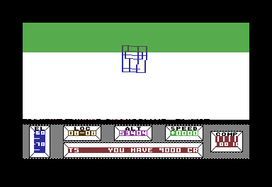

<meta charset="utf-8">
<meta name="viewport" content="width=device-width, initial-scale=1">
<title>{{title}}: play</title>
<link rel="preconnect" href="https://fonts.googleapis.com">
<link rel="stylesheet" href="https://fonts.googleapis.com/css2?family=Lato:wght@400;700;900&family=IBM+Plex+Mono:wght@400;500&display=swap">
<style>
:root{
  --bg:#23262d; --paper:#e9e7e1; --surface:#ffffff; --surface-2:#f1efea; --line:#d5d3cc; --line-soft:#e0ded8;
  --ink:#2f3136; --ink-soft:#55585f; --ink-mute:#80838a;
  --link:#1f5fa8; --link-hover:#154480; --accent:#1f5fa8;
  --amber:#c25a00; --cyan:#1f5fa8; --coral:#d04a3a; --green:#2a8a4a; --violet:#4a5bd6; --hl:#fff0c2;
  --chip:#2f3136; --chip-ink:#ffffff;
  --c64blue:#40318d; --c64grey:#686868;
  --fd:'Lato',system-ui,sans-serif; --fb:'Lato',system-ui,sans-serif; --fm:'IBM Plex Mono',ui-monospace,Menlo,monospace;
  --col:1080px; --gx:68px; --fs:17px; --lh:1.6; --hw:900; --h1:46px; --h2:26px; --sy:48px; --pp:26px; --r:10px;
  --plate-shadow:0 1px 2px rgba(0,0,0,.05),0 4px 14px rgba(0,0,0,.05);
}
*{box-sizing:border-box}
html{background:var(--bg);min-height:100%}
body{background:var(--paper);color:var(--ink);font-family:var(--fb);font-size:var(--fs);line-height:var(--lh);max-width:var(--col);margin:0 auto;min-height:100vh;padding:0 0 4rem}
h1,h2,h3{font-weight:var(--hw);letter-spacing:-.01em;text-wrap:balance;color:var(--ink);margin:0}
.wrap{padding:0 var(--gx)}
.hero{padding:48px var(--gx) 8px;text-align:left}
.eyebrow{font-family:var(--fm);font-size:12px;letter-spacing:.08em;text-transform:uppercase;color:var(--ink-mute);margin:0 0 10px}
.hero h1{font-size:var(--h1);line-height:1.15;letter-spacing:-.02em;margin:0 0 14px}
.hero .sub{margin:0 0 .6em;color:var(--ink-soft)}
section{padding:var(--sy) 0 24px}
section:last-of-type{border-bottom:none}
.fig{font-family:var(--fm);font-size:12px;letter-spacing:.08em;text-transform:uppercase;color:var(--ink-mute);margin:0 0 10px}
h2.t{font-size:var(--h2);margin-bottom:12px}
h3{font-size:19px;margin:22px 0 8px}
.lede{color:var(--ink-soft);margin:0 0 30px}
.plate{background:var(--surface);border:1px solid var(--line);border-radius:var(--r);padding:var(--pp);box-shadow:var(--plate-shadow)}
.cap{font-size:14px;color:var(--ink-mute);margin-top:14px;line-height:1.55}
.cap b{color:var(--ink);font-weight:700}
code{font-family:var(--fm);font-size:.82em;background:var(--chip);color:var(--chip-ink);border-radius:4px;padding:2px 6px;white-space:nowrap}
kbd{font-family:var(--fm);font-size:.8em;background:var(--surface-2);border:1px solid var(--line);border-bottom-width:2px;border-radius:4px;padding:1px 6px;white-space:nowrap}
table{border-collapse:collapse;width:100%;font-size:15px}
th,td{text-align:left;padding:6px 10px;border-bottom:1px solid var(--line-soft);vertical-align:top}
th{font-weight:700;color:var(--ink-soft)}
/* the game */
.pl-first{padding-top:22px}
.pl-plate{padding:18px}
.pl-screen{position:relative;background:#000;border-radius:6px;overflow:hidden;outline:none;cursor:pointer;line-height:0}
.pl-screen:focus-visible,.pl-screen.pl-focus{box-shadow:0 0 0 3px var(--accent)}
.pl-screen canvas{display:block;width:100%;height:auto;image-rendering:pixelated}
.pl-screen canvas.pl-native{image-rendering:auto}
.pl-over{position:absolute;inset:0;display:flex;align-items:center;justify-content:center;flex-direction:column;gap:12px;background:rgba(0,0,0,.55);color:#fff;font-family:var(--fm);font-size:14px;line-height:1.4;text-align:center;padding:20px}
.pl-over[hidden]{display:none}
.pl-over button{font-size:16px}
.pl-bar{display:flex;flex-wrap:wrap;gap:8px;align-items:center;margin-top:14px}
.pl-bar button,.pl-over button,.pl-mod button{font-family:var(--fb);font-size:14px;font-weight:700;background:var(--surface-2);color:var(--ink);border:1px solid var(--line);border-radius:8px;padding:7px 12px;cursor:pointer}
.pl-bar button[aria-pressed="true"],.pl-mod button[aria-pressed="true"]{background:var(--ink);color:#fff;border-color:var(--ink)}
.pl-bar button:hover,.pl-mod button:hover{border-color:var(--ink-mute)}
.pl-bar .pl-sep{width:1px;height:26px;background:var(--line);margin:0 4px}
.pl-status{font-family:var(--fm);font-size:12px;color:var(--ink-mute);margin-left:auto}
.pl-keys{display:grid;grid-template-columns:repeat(auto-fill,minmax(230px,1fr));gap:4px 18px;margin:16px 0 0;padding:0;list-style:none;font-size:14px;color:var(--ink-soft)}
.pl-keys li{margin:0}
.pl-pad{display:none;grid-template-columns:repeat(3,52px);grid-template-rows:repeat(3,52px);gap:6px;margin-top:14px}
.pl-pad button{font-size:18px;border:1px solid var(--line);border-radius:10px;background:var(--surface-2)}
.pl-pad button.on{background:var(--ink);color:#fff}
@media (pointer:coarse){.pl-pad{display:grid}}
.pl-mod{margin-top:16px;display:flex;gap:10px;flex-wrap:wrap;align-items:center}
.pl-cheats{display:contents}
.pl-list{margin:0 0 14px;padding-left:20px}
#alive-cv{display:block;max-width:100%;height:auto;margin-top:14px;border-radius:6px}
section table{margin:6px 0 18px}
.pl-fig{margin:6px 0 18px;max-width:420px}
.pl-fig img{display:block;width:100%;height:auto;image-rendering:pixelated;border-radius:6px}
.pl-list li{margin:0 0 6px}
@media (max-width:700px){:root{--gx:16px;--pp:14px;--h1:36px;--sy:36px}}
</style>
<!-- tabs -->
<header class="hero">
  <p class="eyebrow">{{platform}} · {{year}} · {{publisher}}</p>
  <h1>{{title}}</h1>
  <p class="sub">The whole of Targ, playable in the browser: the city, the wasteland outside it, the Colony Craft far above, all 174 rooms underground and every craft, ported routine by routine from the game's 6502 code and checked against the original pass by pass.</p>
</header>
<main class="wrap">
<section class="pl-first" id="game">
  <div class="plate pl-plate">
    <div class="pl-screen" id="pl-screen" tabindex="0" aria-label="The game's screen. Click it, then play with the keyboard.">
      <canvas id="pl-cv" width="352" height="232" role="img" aria-label="The Commodore 64 screen of Mercenary"></canvas>
      <div class="pl-over" id="pl-over"><span id="pl-over-msg">Loading the game's bytes…</span></div>
    </div>
    <div class="pl-bar" id="pl-bar">
      <button type="button" data-act="pause" aria-pressed="false">Pause</button>
      <button type="button" data-act="restart">Start again</button>
      <span class="pl-sep" aria-hidden="true"></span>
      <button type="button" data-act="render" aria-pressed="false" title="Draw the view at the screen's own resolution">Native resolution</button>
      <button type="button" data-act="smooth" aria-pressed="false" title="Draw the view at the screen's own frame rate, moving between the game's pictures">Smooth motion</button>
      <button type="button" data-act="sound" aria-pressed="true">🔊 Sound</button>
      <span class="pl-sep" aria-hidden="true"></span>
      <button type="button" data-act="ctrlq" title="CTRL + Q: quit the situation">CTRL + Q</button>
      <button type="button" data-act="save" title="CTRL + S: save a position">Save</button>
      <button type="button" data-act="load" title="CTRL + L: load a position">Load</button>
      <span class="pl-status" id="pl-status" aria-live="polite"></span>
    </div>
    <ul class="pl-keys" id="pl-keys">
      <li><kbd>←</kbd> <kbd>→</kbd> <kbd>↑</kbd> <kbd>↓</kbd> the joystick</li>
      <li><kbd>F</kbd> or right <kbd>Ctrl</kbd> fire</li>
      <li><kbd>1</kbd>…<kbd>9</kbd> <kbd>0</kbd> thrust, <kbd>Shift</kbd> + digit reverse</li>
      <li><kbd>=</kbd> <kbd>−</kbd> thrust up and down, <kbd>Space</kbd> stop</li>
      <li><kbd>T</kbd> take, <kbd>D</kbd> drop, <kbd>B</kbd> board, <kbd>L</kbd> leave</li>
      <li><kbd>E</kbd> the lift, <kbd>Y</kbd> yes</li>
      <li><kbd>Esc</kbd> pause (CTRL + RETURN)</li>
      <li>CTRL + Q, CTRL + S and CTRL + L: the buttons</li>
    </ul>
    <div class="pl-pad" id="pl-pad" aria-label="Joystick">
      <button type="button" data-pad="5">↖</button><button type="button" data-pad="1">↑</button><button type="button" data-pad="9">↗</button>
      <button type="button" data-pad="4">←</button><button type="button" data-pad="16">●</button><button type="button" data-pad="8">→</button>
      <button type="button" data-pad="6">↙</button><button type="button" data-pad="2">↓</button><button type="button" data-pad="10">↘</button>
    </div>
    <div class="pl-mod">
      <button type="button" id="alive-on" aria-pressed="false">🚗✈️ Mod: Targ Traffic</button>
      <span id="cheat-bar" class="pl-cheats">
        <button type="button" data-cheat="keys" title="Carry the seven keys">🔑 All keys</button>
        <button type="button" data-cheat="summon" title="Hire the interstellar ship as the Communications Room's radio does: it comes down over 08-08 in two minutes or more. Carries the Novadrive too">🚀 Summon the interstellar ship</button>
      </span>
      <span class="pl-status" id="alive-status"></span>
    </div>
    <p class="cap" id="pl-cap">The game's own screen, drawn from the port's memory each frame the way the video chip would: the view's two bitmaps, the panel in the game's character set, the gun sight sprite. <b>Native resolution</b> draws the same view (the same edges, dots and horizon, from the same positions) as sharp lines at the screen's own resolution. <b>Smooth motion</b> draws the view at the screen's own frame rate, sliding it from each of the game's pictures to the next (section 03).</p>
    <div id="alive-panel" hidden>
      <canvas id="alive-cv" width="440" height="440" role="img" aria-label="Map of the city: the roads, you, and the traffic"></canvas>
      <p class="cap" id="alive-cap">Targ Traffic can be switched on at any time; the traffic appears at once and the game carries on. Switched off, the game is the original again. On the map north is up, <b>blue</b> is Palyar and <b>red</b> Mechanoid, a square is a car and a triangle a craft, and the amber disc is you.</p>
    </div>
  </div>
</section>
<section id="alive">
  <p class="fig">01 · Mod</p>
  <h2 class="t">Targ Traffic: traffic on the roads and in the sky</h2>
  <p class="lede">Targ's roads are empty and its sky nearly so. This mod fills them with cars and craft the game already knows how to draw. Each one belongs to the Palyars or the Mechanoids, and shooting one brings that side's attack ship after you.</p>
  <h3>What moves</h3>
  <table>
    <tr><th>Traffic</th><th>Where it goes</th></tr>
    <tr><td>44 cars: the game's car (object 2) and its land Dart (object 5)</td><td>Along the roads of the game's road table, keeping left, from one place to another at up to the car's own top speed: SPEED 825 on the panel, which shows 100/256 of the units a pass, so 2,112 units a pass. They slow for corners, queue behind the car in front, stop when you stand in the road, and pull in to the kerb when they arrive.</td></tr>
    <tr><td>14 craft: Darts, Palyar diamonds, jets and CHEESEs</td><td>From a stand at the airbase (08-08) or Jordan Airport (12-13), or from a lift, to another one. They roll and take off from the runways, rise out of the lifts and sink back into them, and cruise at a third to a half of the craft's top speed in the game's table.</td></tr>
    <tr><td>4 Palyar diamonds</td><td>Drop from the Colony Craft's deck, fly a short way below it and dock again.</td></tr>
    <tr><td>1 Palyar Dart</td><td>Flies in formation with the brother-in-law's new ship, 700 units to its west, down column 00. Shoot his ship and the escort breaks away and joins the traffic.</td></tr>
  </table>
  <p>Cars head for the Coach and Horses (15-02), for the other named places, or anywhere on the road network. Every so often it is match day: most of the cars that set off then drive to Bosher Stadium (08-07) and park there until the game is over.</p>
  <h3>Shooting one</h3>
  <p>Your missile hits a car or a craft by the rule it hits the attack ship with: within 1,024 units on every axis, tested once a pass. It samples its path every 4,096 units, so a straight shot can pass through a small target, in the mod as in the game. Benson then prints YOU HAVE JUST DESTROYED, A PALYAR CRAFT or A MECHANOID CRAFT, and the owner's line from the landmarks' scripts: PALYAR SHIP ATTACKING or MECHANOID SHIP ATTACK. The game's own attack ship follows.</p>
  <h3>How it joins the game</h3>
  <ul class="pl-list">
    <li>Every vehicle is drawn by the game's object routine, <code>draw_object</code>, through object slot 9: one of the Dart slots among the moving objects that the game never uses. Near ones are wire models turned by the game's 64-step heading, far ones the game's single dots, with the game's own rules for what is too far to see.</li>
    <li>The hit test is the game's <code>missile_hit_test</code> ($8833), run on the borrowed slot.</li>
    <li>The two reprisals are event scripts in the game's own byte code, twelve bytes each: a call to the landmarks' YOU HAVE JUST DESTROYED ($0CC1), a line printed from words in the game's dictionary, then a jump into the landmarks' scripts at $0CC4 or $0CCC, which print the attack line and set <code>$BEF8</code>. They sit at $BC90, in bytes nothing reads, and entries 30 and 31 of the script table point at them while the mod is on.</li>
    <li>The mod keeps its own random numbers, so the game's generator at $ADEF runs the same sequence with the mod on or off. The traffic is not in saved positions: a save is the game's own 1,904 bytes.</li>
    <li>The owners are the mod's choice. The game names no owner for any craft; the mod gives the diamonds and the Darts to the Palyars and the jets and the CHEESE to the Mechanoids, and each car the owner of the square it starts on, or either side on a square that is nobody's.</li>
    <li>The traffic costs the game no time. On a C64 the extra drawing would slow every pass; the port leaves it out of its clock.</li>
  </ul>
</section>
<section id="port">
  <p class="fig">02 · The port</p>
  <h2 class="t">Every routine of the game, checked against the original at every pass</h2>
  <p class="lede">Nothing on this page emulates a 6502. The game's 294 routines are written out in JavaScript, one function each, named by the listing's labels, and run on the game's own 64 KB of memory.</p>
  <p>The page loads that memory from the listing, the same bytes the Source code tab shows, and puts back the original disk's first message (the listing was made from a copy that says ABC UNLIMITED in the same 26 bytes). From then on the port reads and writes the game's variables where the game keeps them, draws into the game's two bitmaps, and runs the game's event scripts, messages and save files as bytes. Every value the game computes, the port computes with the same arithmetic: its truncating floating point, its sine tables, and the operands its code rewrites in itself.</p>
  <h3>How it was checked</h3>
  <p>The original code runs in a 6502 simulator beside the port, from the same saved moment and with the same keys and joystick. At the start of every pass all 64 KB are compared, and the video chip's and sound chip's registers too. Only the stack and three bytes of scratch are left out.</p>
  <table>
    <tr><th>Sessions</th><th>Passes</th><th>Result</th></tr>
    <tr><td>The landing site: buying and boarding the Dart, taking off, walking, turning, carrying, the lift down</td><td>4,140</td><td>identical at every pass</td></tr>
    <tr><td>Flying: cruising, climbing, turning, rolling on the ground, the Colony Craft's deck, falling from it, the descent</td><td>2,700</td><td>identical at every pass</td></tr>
    <tr><td>Underground: doors, a locked door, the transporter booths, a dark room lit, the mirror rooms, walking and turning</td><td>2,300</td><td>identical at every pass but two (below)</td></tr>
    <tr><td>Attacks: near, far and on foot, the hired ship, shooting a building, the brother-in-law's ship</td><td>2,100</td><td>identical at every pass</td></tr>
  </table>
  <p>Each group of routines was first tested alone against the game's code: every square of the road table, every entry of the row fills, thousands of random states for each routine that projects, clips or draws.</p>
  <h3>Where the original depends on its interrupts</h3>
  <p>The port runs the raster interrupts between the steps of a pass; the C64 runs them wherever they fall. Two routines in the game give different results depending on where, and the port shows the case where the interrupt came after the step.</p>
  <ul class="pl-list">
    <li><b>A white band for a pass or two.</b> The routine that fills the sky and the ground keeps its fill byte in <code>$06</code>. The interrupt that prints Benson's figures uses <code>$06</code> too and does not save it. When a figure is printed while the view is being filled, the rest of the fill is left at 0, which the view shows in the background colour: white, on the surface. The session through the door at $AB shows it for two passes, with the lower part of the view white where the port shows the ground (picture below).</li>
    <li><b>The lift's height.</b> During a lift ride the interrupt moves the ride on, and the main loop reads the ride's step to set your height. The game reads it twice and starts again if it changed in between, so it never takes a torn value, but which of two frames it takes depends on where the interrupt fell. The port's height can be one frame's step behind.</li>
  </ul>
  <figure class="pl-fig"><figcaption class="cap">The game's own frame, from its code in the simulator: Benson was printing a figure (YOU HAVE 9000 CREDITS) while the view was filled with ground, and the fill went on with 0 from the row the interrupt fell on.</figcaption></figure>
</section>
<section id="timing">
  <p class="fig">03 · Speed</p>
  <h2 class="t">It runs at the C64's speed, pass for pass</h2>
  <p class="lede">The game moves you a fixed step each pass of its main loop, and a pass takes as long as the drawing does: about four frames in a room, six to ten with the city in view. A port that ran as fast as the browser can would be a different game.</p>
  <p>So the page keeps a PAL machine's clock: 312 lines of 63 cycles, 50.12 frames a second, with the raster interrupts on their lines. The port does not execute instructions, so it cannot count their cycles. Instead each routine it calls adds a fixed number of cycles, that routine's own, and each pixel drawn, row filled and far dot plotted adds its cost. The costs were fitted on the original: 69,569 stretches of the main loop from fifteen sessions, timed on the simulator and counted on the port. For a whole pass the fit is within about 1 % nine times in ten, and within 2 % on sessions it was not fitted on.</p>
  <table>
    <tr><th>Scene</th><th>Frames</th><th>Passes, original</th><th>Passes, this page</th></tr>
    <tr><td>Standing at the landing site</td><td>500</td><td>39</td><td>39</td></tr>
    <tr><td>Walking at the landing site</td><td>500</td><td>62</td><td>62</td></tr>
    <tr><td>Walking in a room</td><td>400</td><td>91</td><td>91</td></tr>
    <tr><td>Cruising in the Dart</td><td>400</td><td>50</td><td>50</td></tr>
    <tr><td>On the Colony Craft's deck</td><td>400</td><td>49</td><td>48</td></tr>
    <tr><td>The descent</td><td>400</td><td>46</td><td>45</td></tr>
  </table>
  <h3>Smooth motion</h3>
  <p>The C64 redraws the view once a pass: about twelve times a second in a room, five to eight times with the city in view. With <b>Smooth motion</b> on, the page draws the view at the screen's own rate, 60, 120 or 144 times a second, and the game underneath does not change.</p>
  <p>This works because every picture the C64 shows is a pass behind the game. While a picture is on show, the next one is being drawn, from where the game moved you at the end of the pass before. So the page knows where the next picture looks from before it appears. It draws the picture on show from an eye part of the way there, and moves each craft, car and missile part of the way to where the game has already put it. By the time the C64 would flip to the next picture, the view has arrived at it.</p>
  <p>How long a picture stays on show depends on how much the next pass draws, so the page cannot know it in advance. It follows the program through its pass and expects the rest to take as long as it did last time. One kind of pass runs much longer: the one that rebuilds the list of roads in view, when you fly into a new square or a new band of height. The page sees that coming from your course and slows the glide for it, where the C64 holds the picture.</p>
  <p>What the game changes at once stays sudden: a door, a lift, boarding or leaving a craft. A craft's turn and a building's rotor keep the game's steps, since only positions slide. Without native resolution the page draws the view in the C64's pixels with its own lines and fill, which match the game's bitmaps to within a pixel.</p>
  <table>
    <tr><th>Session, with smooth motion drawing at 144 frames a second</th><th>Passes</th><th>The game's memory</th></tr>
    <tr><td>Walking and turning at the landing site</td><td>1,221</td><td>identical at every pass to a run without it</td></tr>
    <tr><td>Boarding the Dart, climbing, banking, under attack</td><td>554</td><td>identical at every pass</td></tr>
    <tr><td>Both again with Targ Traffic on</td><td>1,221 and 519</td><td>identical at every pass</td></tr>
  </table>
</section>
<section id="differences">
  <p class="fig">04 · Differences</p>
  <h2 class="t">What differs from a C64</h2>
  <ul class="pl-list">
    <li><b>The disk.</b> There is no loading: the game starts at the countdown. Saves go to the browser's storage, one for each digit, in the game's own 1,904-byte format.</li>
    <li><b>The screen.</b> The video chip is drawn line by line from the registers the game writes and the line each write lands on, which is how the game splits the screen into the view, the panel and the message window. A register written in the middle of a line takes effect from the next line.</li>
    <li><b>The sound.</b> The game's writes to the sound chip go to the site's model of the SID, a frame at a time.</li>
    <li><b>The interrupts.</b> They run between the steps of a pass, not inside them (section 02).</li>
    <li><b>Smooth motion.</b> A view between two of the game's pictures never appears on a C64. The page draws it from the game's own positions, part of the way from one pass to the next (section 03).</li>
    <li><b>The keyboard.</b> The arrows are the joystick in port 2, and F or the right Ctrl key fires. The other keys are the C64's by name: the digits set the thrust, T takes and B boards. Esc is CTRL + RETURN, the game's pause.</li>
  </ul>
</section>
</main>
<script src="../../lib/c64.js"></script>
<script src="../../lib/sid.js"></script>
<script>
/* the port: Mercenary's routines, each a function on the game's memory M, named by the listing's label */
(function () {
'use strict';

// ---- view3d ------------------------------------------------------------------------------------
// Group view3d: the float maths ($828B-$855B), the view's trigonometry and matrix ($A544, $A320),
// the vertex set-up and projection ($A5CE-$AA61), the edge clipper ($99DD-$9D98), and the eight
// line routines with the dot plotter, the random generator and the pixel-op patch ($AC53-$AE36).
// Everything is read from and written to M at the game's addresses, scratch bytes and
// self-modified operands included ($06, $07, $18, $83AB, $8404, $8487, $84C2 ...), so that after
// any of these routines M is what the game's own code leaves.
//
// A float is two bytes: a mantissa m and an exponent byte (bits 2-7 a signed power of two, bit 0
// the sign), worth +-(1 + m/256) x 2^e. Inside this file a float travels packed as
// (exponent << 8) | mantissa. The P.fp_* functions are the register-convention entries for other
// groups; the routines of this group call the packed versions directly (fmul, fdiv, fadd ...).
function install_view3d(P) {
  const M = P.M;
  const LOG = M.subarray(0x5800, 0x5900);          // round(256 log2(1 + i/256))
  const EXP = M.subarray(0x5900, 0x5A00);          // round(256 (2^(i/256) - 1))
  const SINM = M.subarray(0x5A00, 0x5B00);         // sine quarter wave, mantissas
  const SINE = M.subarray(0x5B00, 0x5C00);         // and exponent bytes
  const work = () => P.work || (P.work = { v: 0, e: 0, px: 0, rows: 0, dots: 0 });

  // Registers some routines leave besides their result, for the P.* wrappers.
  let rA = 0, rX = 0;

  // ------------------------------------------------------------------------------ the floats

  // $831A fp_saturate, entered with A = the exponent sum that overflowed (its bit 7 the N flag):
  // too large gives +-2^30 ($78/$79), too small +-2^-31 ($84/$85), mantissa 0.
  // the timing model's counters (tests count the calls; the page adds each one's cycles)
  function tick(n) { const w = P.work; if (w) { if (w.calls) w.calls[n] = (w.calls[n] || 0) + 1; if (w.table) w.cyc += w.table[n] || 0; } }
  function sat(r) {
    const e = r & 0x80 ? (r & 1) | 0x78 : (r & 1) | 0x84;
    M[8] = 0; M[9] = e; rA = e;
    return e << 8;
  }

  // $82FA fp_mul: (X, Y) x ($08, $09) into $08/$09. The logs add; their carry is ADC #$03 with
  // the carry set (4 in the byte: one power of two); exponents and signs add in one ADC, whose
  // overflow saturates.
  function fmul(X, Y) {
    tick('@fmul');
    let s = LOG[X] + LOG[M[8]], a = Y;
    if (s > 255) { s &= 255; a = (a + 4) & 255; }
    const b = M[9], r = (a + b) & 255;
    if (~(a ^ b) & (a ^ r) & 0x80) return sat(r);          // BVS fp_saturate
    const e = r & 0xFD, m = EXP[s];
    M[9] = e; M[8] = m; rA = m;
    return (e << 8) | m;
  }

  // $8334 fp_div: ($08, $09) / (X, Y) into $08/$09; Y is kept in $06. ORA #$02 guards the signs'
  // borrow; a borrow of the logs takes 4 (SBC #$03 with the carry clear).
  function fdiv(X, Y) {
    tick('@fdiv');
    M[6] = Y;
    let s = LOG[M[8]] - LOG[X], a = M[9] | 2;
    if (s < 0) { s &= 255; a = (a - 4) & 255; }
    const r = (a - Y) & 255;
    if ((a ^ Y) & (a ^ r) & 0x80) return sat(r);            // BVS fp_saturate
    const e = r & 0xFD, m = EXP[s];
    M[9] = e; M[8] = m; rA = m;
    return (e << 8) | m;
  }

  // The same multiply and divide written inline in the projection and the clipper: the result
  // goes where the caller stores it, with no overflow test.
  function lmul(m1, e1, m2, e2) {
    tick('@lmul');
    let s = LOG[m1] + LOG[m2], a = e1;
    if (s > 255) { s &= 255; a += 4; }
    return (((a + e2) & 0xFD) << 8) | EXP[s];
  }
  function ldiv(m1, e1, m2, e2) {                             // (m1, e1) / (m2, e2)
    tick('@ldiv');
    let s = LOG[m1] - LOG[m2], a = e1 | 2;
    if (s < 0) { s &= 255; a -= 4; }
    return (((a - e2) & 0xFD) << 8) | EXP[s];
  }

  // $838B fp_add: (X, Y) + ($08, $09) into $08/$09. d = Y - $09 goes to $18 (bit 0: the signs
  // differ); d + 1 + carry, shifted right twice, is the exponent difference. The smaller mantissa,
  // its leading 1 restored, is shifted right through a branch into a run of LSRs whose operand is
  // written at $83AB (X, Y the larger) or $8404 (($08, $09) the larger).
  function fadd(X, Y) {
    tick('@fadd');
    const m8 = M[8], e9 = M[9];
    const t = Y - e9, d = t & 255;
    if ((Y ^ e9) & (Y ^ d) & 0x80) return addFar(X, Y);     // BVS $836C
    M[0x18] = d;
    const A = (d + 1 + (t >= 0 ? 1 : 0)) & 255;             // ADC #$01, the SBC's carry in
    if (~(d ^ 1) & (d ^ A) & 0x80) return addFar(X, Y);     // BVS $836C
    if (A & 0x80) {                                          // $83F5: ($08, $09) the larger
      if (A < 0xE0) { rA = A; return (e9 << 8) | m8; }      // $8419: 9 or more apart
      const op = (A >> 2) & 7;
      M[0x8404] = op;                                        // $83FD
      const s = (256 + X) >> (8 - op);
      M[6] = s;
      return d & 1 ? addSub(m8, e9, s) : addAdd(m8, e9, s);
    }
    const q = A >> 2;
    if (q === 0) {                                           // $8359: equal exponents
      if (d & 1) {                                           // $8373: unlike signs
        const r = X - m8;
        if (r === 0) {                                       // $8383: x - x gives 2^(e - 9)
          const u = (Y - 0x24) & 255;
          const e = (Y ^ 0x24) & (Y ^ u) & 0x80 ? (u & 1) | 0x84 : u;
          M[8] = 0; M[9] = e; rA = e;
          return e << 8;
        }
        return r > 0 ? addNorm(r, Y) : addNorm(-r & 255, e9);
      }
      const m = (X + m8) >> 1, e = (Y + 4) & 255;            // ADC; ROR; INY x 4
      M[8] = m; M[9] = e; rA = m;
      return (e << 8) | m;
    }
    if (q >= 9) { M[8] = X; M[9] = Y; rA = q; return (Y << 8) | X; }   // $839F -> $83CC
    M[0x83AB] = q ^ 0x0F;                                    // $83A3
    const s = (256 + m8) >> q;
    M[6] = s;
    return d & 1 ? addSub(X, Y, s) : addAdd(X, Y, s);
  }
  function addFar(X, Y) {                                    // $836C: the exponents too far apart
    tick('@addFar');
    rA = (Y << 1) & 255;
    if (Y & 0x80) return (M[9] << 8) | M[8];               // JMP $8419: ($08, $09)
    M[8] = X; M[9] = Y;
    return (Y << 8) | X;
  }
  function addAdd(a, Y, s) {                                 // $83C2: ADC $06, carry clear
    tick('@addAdd');
    let t = a + s;
    if (t > 255) { t = (t & 255) >> 1; Y = (Y + 4) & 255; }  // LSR, INY x 4: unchecked
    M[8] = t; M[9] = Y; rA = t;
    return (Y << 8) | t;
  }
  function addSub(a, Y, s) {                                 // $83D1: SBC $06, carry set
    tick('@addSub');
    const t = a - s;
    if (t < 0) return addNorm(t & 255, Y);
    M[8] = t; M[9] = Y; rA = t;
    return (Y << 8) | t;
  }
  // $83D5 fp_normalise: A (1-255) shifted left until its leading 1 falls out, the count k taken
  // off the exponent (4k in the byte); an overflow gives +2^-31, the sign lost ($83EC).
  function addNorm(A, Y) {
    tick('@addNorm');
    M[6] = Y;
    let k = 0, c;
    do { c = A & 0x80; A = (A << 1) & 255; k++; } while (!c);
    const B = (-4 * k) & 255, r = (B + Y) & 255;
    rA = r;
    if (~(B ^ Y) & (B ^ r) & 0x80) { M[8] = 0; M[9] = 0x84; return 0x8400; }
    M[8] = A; M[9] = r;
    return (r << 8) | A;
  }

  // $8477 fp_to_int8: (X, Y) to a signed byte, rounded (halves away from zero). Returns A, with
  // the carry in bit 8 (set: 127.5 or more, A not valid); rX is the X register it leaves. The
  // exponent (0-6) is the BNE operand at $8487.
  function toInt8(X, Y) {
    tick('@toInt8');
    let A;
    if (Y & 0x80) A = Y >= 0xFC ? 1 : 0;                    // $849F: CMP #$FC; LDA #0; ADC #0
    else {
      const e = Y >> 2;
      if (e >= 7) { rX = X; return 0x100 | e; }             // BCS $84A6, A = Y >> 2
      M[0x8487] = e;
      const v = 256 + X, sh = 8 - e;
      A = (v >> sh) + ((v >> (sh - 1)) & 1);                 // the shifts, ADC #$00
      if (A & 0x80) { rX = X; return 0x100 | A; }           // BMI $84A5: SEC
    }
    rX = A;
    return Y & 1 ? -A & 255 : A;
  }

  // $84A7 fp_to_int16: (X, Y) to a 16-bit integer, returned as C << 16 | X << 8 | Y: the
  // magnitude truncated, a negative's ones' complement; rA the A register. The shift count 3e is
  // the BCC operand at $84C2, the low byte passes through $06.
  function toInt16(X, Y) {
    tick('@toInt16');
    if (Y & 0x80) { rA = Y >> 1; return Y & 1 ? 0xFFFF : 0; }   // $8501
    const e = Y >> 2;
    if (e >= 15) { rA = e; return 0x10000 | (X << 8) | Y; }     // BCS $84A6
    M[0x84C2] = 3 * e;
    const v = ((256 + X) << 7) >> (15 - e);
    const hi = v >> 8, lo = v & 255;
    M[6] = lo;
    if (Y & 1) { rA = lo ^ 255; return ((hi ^ 255) << 8) | (lo ^ 255); }
    rA = Y >> 1;
    return (hi << 8) | lo;
  }

  // $8510 int24_to_fp: A (high), X (middle) and $07 (low), signed, to a float returned in A/$08
  // (mantissa) and X/$09 (exponent): negated if negative, the 8 bits after the leading 1 kept.
  // Zero gives 2^-8 ($E0). $06 holds A, shifted left once at the end for the sign.
  function i24(A, X) {
    tick('@i24');
    M[6] = A;
    let hi = A, mid = X, lo = M[7];
    if (hi & 0x80) {
      const c1 = lo === 0 ? 1 : 0;                           // LDA #0; SEC; SBC $07
      lo = -lo & 255;
      M[7] = lo;
      const u = (mid ^ 255) + c1;                            // TXA; EOR #$FF; ADC #0
      mid = u & 255;
      hi = (-hi - 1 + (u >> 8)) & 255;                       // LDA #0; SBC $06
    }
    let a, low, x;
    if (hi) { a = hi; low = mid; x = 0x18; }                 // $8538
    else if (mid) { a = mid; low = lo; x = 0x10; }           // $854F
    else if (lo) { a = lo; low = 0; x = 0x08; }
    else { M[8] = 0; M[9] = 0xE0; return 0xE000; }           // $8553
    for (;;) {                                               // DEX; ASL $07; ROL; BCC
      x--;
      const c = a & 0x80;
      a = ((a << 1) | (low >> 7)) & 255; low = (low << 1) & 255;
      if (c) break;
    }
    M[7] = low; M[8] = a;
    const s = M[6];
    M[6] = (s << 1) & 255;                                   // ASL $06: the sign into ROL
    const e = ((x << 2) | (s >> 7)) & 255;
    M[9] = e;
    return (e << 8) | a;
  }

  // $841F fp_sin10 / $841E fp_cos10: a 10-bit angle (Y bits 0-1 the quadrant, X the low byte),
  // from the quarter wave $5A00/$5B00. No memory is written.
  function sin10(X, Y) {
    tick('@sin10');
    const x = Y & 1 ? X ^ 255 : X;
    return ((SINE[x] | ((Y >> 1) & 1)) << 8) | SINM[x];
  }
  const cos10 = (X, Y) => sin10(X, (Y + 1) & 255);

  // $8445 sin64: 127 sin(A x 360/64) from the half wave at $8457, negated for the second half.
  function sin64(A) {
    tick('@sin64');
    const v = M[0x8457 + (A & 31)];
    return A & 32 ? -v & 255 : v;
  }
  // $8434 sincos64: $BEBE = sin64(A), $BEBF = cos64(A & 63).
  function sincos64(A) {
    tick('@sincos64');
    M[0xBEBE] = sin64(A);
    M[0xBEBF] = sin64(((A & 63) + 16) & 255);
  }

  // $82BB umul8: A x Y, the product returned (high byte A, low byte Y and $06). The caller's
  // carry and the old $06 pass through $09 as it rotates; the carry out is the old $06's bit 7.
  let umulC = 0;
  function umul8(A, Y, C) {
    tick('@umul8');
    const old = M[6], p = A * Y;
    M[8] = A; M[9] = (C | (old << 1)) & 255; M[6] = p & 255;
    umulC = old >> 7;
    return p;
  }
  // $82D3 smul8_q7: signed A x Y / 128, truncated toward zero, by umul8 of |A| and 2|Y| mod 256.
  // $06 = A, $07 = the sign A xor Y.
  function smul8(A, Y) {
    tick('@smul8');
    M[6] = A;
    const s = A ^ Y;
    M[7] = s;
    let y = Y & 0x80 ? -Y & 255 : Y;
    const c = y >> 7;                                        // ASL's carry
    y = (y << 1) & 255;
    const a = A & 0x80 ? -A & 255 : A;
    let r = umul8(a, y, A & 0x80 ? 0 : c) >> 8;
    if (s & 0x80) r = -r & 255;
    return r;
  }

  // ------------------------------------------------------------------------------ the view

  // $A544 view_trig: sines, cosines, tangents of roll, pitch, heading and the spin angle.
  function viewTrig() {
    tick('@viewTrig');
    let f = cos10(M[0x28], M[0x29]); M[0x30] = f & 255; M[0x31] = f >> 8;
    f = sin10(M[0x28], M[0x29]); M[0x2E] = f & 255; M[0x2F] = f >> 8;
    M[8] = M[0x2E]; M[9] = M[0x2F];
    f = fdiv(M[0x30], M[0x31]); M[0x32] = f & 255; M[0x33] = f >> 8;   // tan roll
    M[8] = M[0x30]; M[9] = M[0x31];
    f = fdiv(M[0x2E], M[0x2F]); M[0x34] = f & 255; M[0x35] = f >> 8;   // cot roll
    f = cos10(M[0x2A], M[0x2B]); M[0x38] = f & 255; M[0x39] = f >> 8;
    f = sin10(M[0x2A], M[0x2B]); M[0x36] = f & 255; M[0x37] = f >> 8;
    M[8] = M[0x36]; M[9] = M[0x37];
    f = fdiv(M[0x38], M[0x39]); M[0x3A] = f & 255; M[0x3B] = f >> 8;   // tan pitch
    f = sin10(M[0x2C], M[0x2D]); M[0x3C] = f & 255; M[0x3D] = f >> 8;
    f = cos10(M[0x2C], M[0x2D]); M[0x3E] = f & 255; M[0x3F] = f >> 8;
    f = sin10(M[0x99], M[0x9A]); M[0x9B] = f & 255; M[0x9C] = f >> 8;
    f = cos10(M[0x99], M[0x9A]); M[0x9D] = f & 255; M[0x9E] = f >> 8;
    return f;
  }

  // $A320 view_matrix: the rows $40-$51, the view centre $8E/$8F and the clip window $90-$97.
  // Skipped (RTS) on foot with no lift moving.
  function viewMatrix() {
    tick('@viewMatrix');
    if (!M[0xCA] && (M[0xA9] & 0x80)) { rA = M[0xA9]; return false; }
    const F1 = M[0xF1];
    let f, r;
    M[8] = M[0x2E]; M[9] = M[0x2F];
    f = fmul(M[0x36], M[0x37]); M[0x16] = f & 255; M[0x17] = f >> 8;   // sin r sin p
    f = fmul(M[0x3C], M[0x3D]); M[0x0A] = f & 255; M[0x0B] = f >> 8;   // x sin h
    M[8] = M[0x30]; M[9] = M[0x31];
    fmul(M[0x3E], M[0x3F]);                                              // cos r cos h
    f = fadd(M[0x0A], M[0x0B]);
    M[0x40] = f & 255; M[0x41] = (f >> 8) ^ F1;
    M[8] = M[0x2E]; M[9] = M[0x2F];
    f = fmul(M[0x38], M[0x39]);                                          // sin r cos p
    const e42 = (f >> 8) ^ 1 ^ F1;
    M[0x42] = f & 255; M[0x43] = e42; M[9] = e42;
    f = fmul(M[0x8C], M[0x8D]);                                          // c x $42
    M[9] = (f >> 8) ^ 1;
    r = toInt8(f & 255, f >> 8);                                         // A used, carry or not
    M[0x8E] = (r + 0x50) & 255;
    f = fadd(0x40, 0x19); M[0x90] = f & 255; M[0x91] = f >> 8;           // -80 - c $42
    f = fadd(0x3E, 0x1C); M[0x92] = f & 255; M[0x93] = f >> 8;           // + 159
    M[8] = M[0x16]; M[9] = M[0x17];
    f = fmul(M[0x3E], M[0x3F]); M[0x0A] = f & 255; M[0x0B] = f >> 8;   // sin r sin p cos h
    M[8] = M[0x30]; M[9] = M[0x31];
    fmul(M[0x3C], M[0x3D] ^ 1);                                          // cos r (-sin h)
    f = fadd(M[0x0A], M[0x0B]);
    M[0x44] = f & 255; M[0x45] = (f >> 8) ^ F1;
    M[8] = M[0x30]; M[9] = M[0x31];
    f = fmul(M[0x36], M[0x37]); M[0x16] = f & 255; M[0x17] = f >> 8;   // cos r sin p
    f = fmul(M[0x3C], M[0x3D]); M[0x0A] = f & 255; M[0x0B] = (f >> 8) ^ 1;
    M[8] = M[0x2E]; M[9] = M[0x2F];
    fmul(M[0x3E], M[0x3F]);                                              // sin r cos h
    f = fadd(M[0x0A], M[0x0B]); M[0x46] = f & 255; M[0x47] = f >> 8;
    M[8] = M[0x30]; M[9] = M[0x31];
    f = fmul(M[0x38], M[0x39]); M[0x48] = f & 255; M[0x49] = f >> 8;   // cos r cos p
    f = fmul(M[0x8C], M[0x8D]);                                          // c x $48
    M[9] = (f >> 8) ^ 1;
    r = toInt8(f & 255, f >> 8);
    M[0x8F] = (r + 0x44) & 255;
    f = fadd(0x10, 0x19); M[0x94] = f & 255; M[0x95] = f >> 8;           // -68 - c $48
    f = fadd(0x0E, 0x1C); M[0x96] = f & 255; M[0x97] = f >> 8;           // + 135
    M[8] = M[0x16]; M[9] = M[0x17];
    f = fmul(M[0x3E], M[0x3F]); M[0x0A] = f & 255; M[0x0B] = f >> 8;   // cos r sin p cos h
    M[8] = M[0x2E]; M[9] = M[0x2F];
    fmul(M[0x3C], M[0x3D]);                                              // sin r sin h
    f = fadd(M[0x0A], M[0x0B]);
    M[0x4A] = f & 255; M[0x4B] = (f >> 8) ^ 1;
    M[8] = M[0x38]; M[9] = M[0x39];
    f = fmul(M[0x3C], M[0x3D]); M[0x4C] = f & 255; M[0x4D] = f >> 8;   // cos p sin h
    M[0x4E] = M[0x36]; M[0x4F] = M[0x37];                                // sin p
    M[8] = M[0x38]; M[9] = M[0x39];
    f = fmul(M[0x3E], M[0x3F]); M[0x50] = f & 255; M[0x51] = f >> 8;   // cos p cos h
    return f;
  }

  // A 24-bit difference (hi:mid:lo minus the eye at p), converted by int24_to_fp.
  function diff24(lo, mid, hi, p) {
    tick('@diff24');
    let t = lo - M[p];
    M[7] = t & 255;
    let b = t < 0 ? 1 : 0;
    t = mid - M[p + 1] - b;
    const x = t & 255;
    b = t < 0 ? 1 : 0;
    return i24((hi - M[p + 2] - b) & 255, x);
  }
  // $A5CE vertex_rel: vertex $19 of the location's model, relative to the eye, into $52-$57.
  function vertexRel() {
    tick('@vertexRel');
    const y = M[0x19];
    let f = diff24(M[0x0400 + y], M[0x0440 + y], M[0x0740 + y], 0x72); M[0x52] = f & 255; M[0x53] = f >> 8;
    f = diff24(M[0x0480 + y], M[0x04C0 + y], M[0x0780 + y], 0x75); M[0x54] = f & 255; M[0x55] = f >> 8;
    f = diff24(M[0x0500 + y], M[0x0540 + y], M[0x07C0 + y], 0x78); M[0x56] = f & 255; M[0x57] = f >> 8;
    return f;
  }

  // $A728 rotate_pair: (X, Y) turned by A (64 a turn): X' = X cos - Y sin, Y' = Y cos + X sin,
  // at 127/128 of size. Returns Y' << 8 | X'. $0A = X, $0B = Y, $0C a product.
  function rotatePair(X, Y, A) {
    tick('@rotatePair');
    M[0x0A] = X; M[0x0B] = Y;
    sincos64(A);
    const sn = M[0xBEBE], cs = M[0xBEBF];
    let t = smul8(sn, Y); M[0x0C] = t;
    const x2 = (smul8(cs, X) - t) & 255;
    t = smul8(sn, X); M[0x0C] = t;
    const y2 = (smul8(cs, Y) + t) & 255;
    return (y2 << 8) | x2;
  }
  // $A6AD orient_vertex: an object's vertex bytes $CF, $D1, $D3 turned by its angles (objects
  // 0-15), then each with bit 7 flipped, times 16, into $D0:$CF, $D2:$D1, $D4:$D3.
  function orientVertex() {
    tick('@orientVertex');
    M[0xD0] = 0; M[0xD2] = 0; M[0xD4] = 0;
    const o = M[0xAF];
    if (o < 0x10) {
      let a = M[0x802A + o], r;
      if (a) { r = rotatePair(M[0xD3], M[0xCF], a); M[0xD3] = r & 255; M[0xCF] = r >> 8; }
      a = M[0x801A + o];
      if (a) { r = rotatePair(M[0xD1], M[0xD3], a); M[0xD1] = r & 255; M[0xD3] = r >> 8; }
      a = M[0x800A + o];
      if (a) { r = rotatePair(M[0xCF], M[0xD1], a); M[0xCF] = r & 255; M[0xD1] = r >> 8; }
    }
    let v = (M[0xCF] ^ 0x80) << 4; M[0xCF] = v & 255; M[0xD0] = v >> 8;
    v = (M[0xD1] ^ 0x80) << 4; M[0xD1] = v & 255; M[0xD2] = v >> 8;
    v = (M[0xD3] ^ 0x80) << 4; M[0xD3] = v & 255; M[0xD4] = v >> 8;
  }
  // $A61F model_vertex_rel: the next three bytes of the model at ($1D) + $AD + 1, oriented, added
  // to the object's offset $D5-$DD, into $52-$57.
  function modelVertexRel() {
    tick('@modelVertexRel');
    const base = M[0x1D] | (M[0x1E] << 8);
    let y = M[0xAD];
    y = (y + 1) & 255; M[0xCF] = M[(base + y) & 0xFFFF];
    y = (y + 1) & 255; M[0xD1] = M[(base + y) & 0xFFFF];
    y = (y + 1) & 255; M[0xD3] = M[(base + y) & 0xFFFF];
    M[0xAD] = y;
    orientVertex();
    const add = (lo, mid, hi, olo, ohi) => {
      let t = M[lo] + M[olo];
      M[7] = t & 255;
      t = M[mid] + M[ohi] + (t >> 8);
      return i24((M[hi] + (t >> 8)) & 255, t & 255);
    };
    let f = add(0xD5, 0xD6, 0xD7, 0xCF, 0xD0); M[0x52] = f & 255; M[0x53] = f >> 8;
    f = add(0xD8, 0xD9, 0xDA, 0xD1, 0xD2); M[0x54] = f & 255; M[0x55] = f >> 8;
    f = add(0xDB, 0xDC, 0xDD, 0xD3, 0xD4); M[0x56] = f & 255; M[0x57] = f >> 8;
    return f;
  }
  // $A67B square_centre_rel: the centre of square A (row x 16 + column) at ground level,
  // relative to the eye, into $52/$53 and $56/$57 (the eye's low bytes ignored).
  function squareCentreRel(A) {
    tick('@squareCentreRel');
    M[7] = 0;
    let t = 0x80 - M[0x73];
    let f = i24(((A & 15) - M[0x74] - (t < 0 ? 1 : 0)) & 255, t & 255);
    M[0x52] = f & 255; M[0x53] = f >> 8;
    M[7] = 0;
    t = 0x80 - M[0x79];
    f = i24(((A >> 4) - M[0x7A] - (t < 0 ? 1 : 0)) & 255, t & 255);
    M[0x56] = f & 255; M[0x57] = f >> 8;
    return f;
  }

  // Screen x from the ratio x'/z at $5E/$5F (the part $A86A-$A87F and $AA3D-$AA53 share):
  // exponent + $21 (BVS), fp_to_int8 (BCS), + $8E into $6A; $6E = 1 if any of it fails or the
  // column is 160 or more.
  function screenX(q) {
    tick('@screenX');
    const qe = q >> 8, sc = M[0x21], s = (qe + sc) & 255;
    if (~(qe ^ sc) & (qe ^ s) & 0x80) { M[0x6E] = 1; return; }
    const r = toInt8(q & 255, s);
    if (r & 0x100) { M[0x6E] = 1; return; }
    const x = (r + M[0x8E]) & 255;
    M[0x6A] = x;
    if (x >= 0xA0) M[0x6E] = 1;
  }

  // $A75C project_vertex: the vertex $52-$57 (relative to the eye) through the matrix, divided by
  // its depth, into slot $19. On foot or underground, project_vertex_level instead.
  function projectVertex() {
    tick('@projectVertex');
    work().v++;
    if (M[0xA8] || (M[0xA9] & 0x80)) return projectLevel();
    const xm = M[0x52], xe = M[0x53], hm = M[0x54], he = M[0x55], ym = M[0x56], ye = M[0x57];
    let f = lmul(xm, xe, M[0x4C], M[0x4D]); M[0x0A] = f & 255; M[0x0B] = f >> 8;
    f = lmul(hm, he, M[0x4E], M[0x4F]); M[0x0C] = f & 255; M[0x0D] = f >> 8;
    f = lmul(ym, ye, M[0x50], M[0x51]); M[8] = f & 255; M[9] = f >> 8;
    fadd(M[0x0C], M[0x0D]);
    f = fadd(M[0x0A], M[0x0B]);                                          // depth z
    M[0x5C] = f & 255; M[0x5D] = f >> 8;
    M[0x6E] = (f >> 1) & 0x80;                                           // $80: behind
    f = lmul(xm, xe, M[0x40], M[0x41]); M[0x0A] = f & 255; M[0x0B] = f >> 8;
    f = lmul(hm, he, M[0x42], M[0x43]); M[0x0C] = f & 255; M[0x0D] = f >> 8;
    f = lmul(ym, ye, M[0x44], M[0x45]); M[8] = f & 255; M[9] = f >> 8;
    fadd(M[0x0C], M[0x0D]);
    f = fadd(M[0x0A], M[0x0B]);                                          // x'
    M[0x58] = f & 255; M[0x59] = f >> 8;
    if (!M[0x6E]) {
      const q = ldiv(M[8], M[9], M[0x5C], M[0x5D]);                      // x'/z
      M[0x5F] = q >> 8; M[0x5E] = q & 255;
      screenX(q);
    }
    f = lmul(xm, xe, M[0x46], M[0x47]); M[0x0A] = f & 255; M[0x0B] = f >> 8;
    f = lmul(hm, he, M[0x48], M[0x49]); M[0x0C] = f & 255; M[0x0D] = f >> 8;
    f = lmul(ym, ye, M[0x4A], M[0x4B]); M[8] = f & 255; M[9] = f >> 8;
    fadd(M[0x0C], M[0x0D]);
    f = fadd(M[0x0A], M[0x0B]);                                          // y'
    return projectY(f & 255, f >> 8);
  }

  // $A8E9 project_vertex_y: y' (X, Y; also in $08/$09) doubled into $5A/$5B, 2y'/z into
  // $60/$61 and screen y $6B = $8F + 64 x 2y'/z, then the slot $19 stores.
  function projectY(X, Y) {
    tick('@projectY');
    M[0x5A] = X;
    let e = (Y + 4) & 255;
    if (~(Y ^ 4) & (Y ^ e) & 0x80) e = Y;                               // BVS: not doubled
    M[0x5B] = e; M[9] = e;
    if (!(M[0x6E] & 0x80)) {
      const q = ldiv(M[8], e, M[0x5C], M[0x5D]);
      const qe = q >> 8;
      M[0x61] = qe; M[0x60] = q & 255;
      const sc = M[0x21], s = (qe + sc) & 255;
      let ok = false;
      if (!(~(qe ^ sc) & (qe ^ s) & 0x80)) {
        const r = toInt8(q & 255, s);
        if (!(r & 0x100)) {
          const y = (r + M[0x8F]) & 255;
          M[0x6B] = y;
          ok = y < 0x88;
        }
      }
      if (!ok) M[0x6E] |= 2;
    }
    const n = M[0x19], fl = M[0x6E];
    M[0x0700 + n] = fl;
    if (!(fl & 0x80)) {
      M[0x0600 + n] = M[0x5E]; M[0x03C0 + n] = M[0x5F];
      M[0x7600 + n] = M[0x60]; M[0x0640 + n] = M[0x61];
      M[0x0680 + n] = M[0x6A]; M[0x06C0 + n] = M[0x6B];
    }
    M[0x0100 + n] = M[0x58]; M[0x0140 + n] = M[0x59];
    M[0x0180 + n] = M[0x5A]; M[0x02C0 + n] = M[0x5B];
    M[0x0340 + n] = M[0x5C]; M[0x0380 + n] = M[0x5D];
  }

  // $A979 project_vertex_level: heading only. z = -(X sin h + Y cos h), x' = X cos h - Y sin h
  // (mirrored by $F1), y' = -height.
  function projectLevel() {
    tick('@projectLevel');
    const xm = M[0x52], xe = M[0x53], ym = M[0x56], ye = M[0x57];
    let f = lmul(xm, xe, M[0x3C], M[0x3D]); M[0x0A] = f & 255; M[0x0B] = f >> 8;
    f = lmul(ym, ye, M[0x3E], M[0x3F]); M[8] = f & 255; M[9] = f >> 8;
    f = fadd(M[0x0A], M[0x0B]);
    M[0x5C] = f & 255;
    const ze = (f >> 8) ^ 1;
    M[0x5D] = ze;
    M[0x6E] = (ze & 1) << 7;
    f = lmul(xm, xe, M[0x3E], M[0x3F]); M[0x0A] = f & 255; M[0x0B] = f >> 8;
    f = lmul(ym, ye, M[0x3C], M[0x3D]); M[8] = f & 255; M[9] = (f >> 8) ^ 1;
    f = fadd(M[0x0A], M[0x0B]);
    M[0x58] = f & 255;
    const xe2 = (f >> 8) ^ M[0xF1];
    M[0x59] = xe2;
    if (!M[0x6E]) {
      M[9] = xe2;
      const q = ldiv(M[8], xe2, M[0x5C], M[0x5D]);
      M[0x5F] = q >> 8; M[0x5E] = q & 255;
      screenX(q);
    }
    const hm = M[0x54], he = M[0x55] ^ 1;
    M[8] = hm; M[9] = he;
    return projectY(hm, he);
  }

  // ------------------------------------------------------------------------------ edges

  // $99DD draw_edge between slots X and Y.
  function drawEdge(X, Y) {
    tick('@drawEdge');
    const fx = M[0x0700 + X];
    if (fx) {
      let swap = false;
      if (fx & 0x80) swap = true;
      else {
        const fy = M[0x0700 + Y];
        if (!fy) swap = true;
        else if (!(fy & 0x80)) {                                         // both off screen: the farther
          const b = M[0x0380 + Y] ^ 0x80;
          M[6] = b;
          if ((M[0x0380 + X] ^ 0x80) < b) swap = true;
        }
      }
      if (swap) {
        M[6] = X;
        const t = X; X = Y; Y = t;
        if (M[0x0700 + X] & 0x80) return;                               // both behind
      }
    }
    const f0 = M[0x0700 + X];                                            // $9A07
    M[0x6E] = f0;
    if (!(f0 & 0x80)) {
      M[0x6A] = M[0x0680 + X]; M[0x6B] = M[0x06C0 + X];
      M[0x5E] = M[0x0600 + X]; M[0x5F] = M[0x03C0 + X];
      M[0x60] = M[0x7600 + X]; M[0x61] = M[0x0640 + X];
    }
    M[0x52] = M[0x0100 + X]; M[0x53] = M[0x0140 + X];
    M[0x54] = M[0x0180 + X]; M[0x55] = M[0x02C0 + X];
    M[0x56] = M[0x0340 + X]; M[0x57] = M[0x0380 + X];
    const f1 = M[0x0700 + Y];
    M[0x6F] = f1;
    if (!(f1 & 0x80)) {
      M[0x6C] = M[0x0680 + Y]; M[0x6D] = M[0x06C0 + Y];
      M[0x62] = M[0x0600 + Y]; M[0x63] = M[0x03C0 + Y];
      M[0x64] = M[0x7600 + Y]; M[0x65] = M[0x0640 + Y];
    }
    M[0x58] = M[0x0100 + Y]; M[0x59] = M[0x0140 + Y];
    M[0x5A] = M[0x0180 + Y]; M[0x5B] = M[0x02C0 + Y];
    M[0x5C] = M[0x0340 + Y]; M[0x5D] = M[0x0380 + Y];
    if (f1 & 0x80) return edgeEndBehind();
    // $9A94: both in front, the direction from the projected positions
    M[8] = M[0x5E]; M[9] = M[0x5F] ^ 1;
    let f = fadd(M[0x62], M[0x63]);                                      // dX
    M[0x0A] = f & 255; M[0x0B] = f >> 8;
    M[0x67] = (f >> 7) & 2;
    M[8] = M[0x60]; M[9] = M[0x61] ^ 1;
    f = fadd(M[0x64], M[0x65]);                                          // dY
    M[0x0C] = f & 255; M[0x0D] = f >> 8;
    M[0x67] |= (f >> 8) & 1;
    return edgeSlope(M[0x0A], M[0x0B], M[0x0C], M[0x0D]);
  }

  // $9B2C edge_end_behind: r = -z2/z1; the direction (x2 + r x1, y2 + r y1) in view space.
  function edgeEndBehind() {
    tick('@edgeEndBehind');
    let q = ldiv(M[0x5C], M[0x5D], M[0x56], M[0x57]);
    M[0x0A] = q & 255;
    const re = (q >> 8) ^ 1;
    M[0x0B] = re;
    q = lmul(M[0x0A], re, M[0x52], M[0x53]); M[8] = q & 255; M[9] = q >> 8;
    let f = fadd(M[0x58], M[0x59]);                                      // dX
    M[0x0C] = f & 255; M[0x0D] = f >> 8;
    M[0x67] = (((f >> 8) ^ M[0x57]) << 1) & 2;
    q = lmul(M[0x0A], M[0x0B], M[0x54], M[0x55]); M[8] = q & 255; M[9] = q >> 8;
    f = fadd(M[0x5A], M[0x5B]);                                          // dY
    M[0x0A] = f & 255; M[0x0B] = f >> 8;
    M[0x67] |= ((f >> 8) ^ M[0x57]) & 1;
    return edgeSlope(M[0x0C], M[0x0D], M[0x0A], M[0x0B]);
  }

  // $9ACB-$9B29 and $9BB3-$9C0E: the slope dY/dX ($08/$09 hold dY) into $68/$69; if it is 1 or
  // more the line is steep and dX/dY goes to $08/$09; $66 = the minor/major ratio x 256
  // (fp_to_int16), or $FF when that ratio is 1 or more too.
  function edgeSlope(dxm, dxe, dym, dye) {
    tick('@edgeSlope');
    let q = ldiv(M[8], M[9], dxm, dxe);
    M[0x69] = q >> 8; M[0x68] = q & 255;
    if (!(q & 0x8000)) {
      M[0x67] |= 4;
      q = ldiv(dxm, dxe, dym, dye);
      M[9] = q >> 8; M[8] = q & 255;
    }
    if (!(q & 0x8000)) M[0x66] = 0xFF;
    else M[0x66] = toInt16(q & 255, ((q >> 8) + 0x20) & 0xFC) & 255;
    return edgeOctant();
  }

  // $9C10 edge_octant: the routine by $BBD0[$67]; an end off screen becomes the corner the line
  // heads for ($BBD8/$BBE0).
  function edgeOctant() {
    tick('@edgeOctant');
    const n = M[0xBBD0 + M[0x67]];
    M[0x67] = n;
    M[4] = M[0xBC38 + n]; M[5] = M[0xBC40 + n];
    if (M[0x6F]) { M[0x6C] = M[0xBBD8 + n]; M[0x6D] = M[0xBBE0 + n]; }
    if (M[0x6E]) return edgeClipStart(n);
    return edgePlot();
  }

  // A crossing's other coordinate: the float (exponent + $21, BVS), fp_to_int8 (BCS), + the
  // centre; -1 when it fails or falls at or past lim.
  function crossing(f, centre, lim) {
    tick('@crossing');
    const e = f >> 8, sc = M[0x21], s = (e + sc) & 255;
    if (~(e ^ sc) & (e ^ s) & 0x80) return -1;
    const r = toInt8(f & 255, s);
    if (r & 0x100) return -1;
    const v = (r + centre) & 255;
    return v < lim ? v : -1;
  }
  // $9C36 edge_clip_start: the start is in front but off screen. Its region and the direction
  // pick the edges it can enter by ($BBF8); an end in front is tested too ($BC18). Each edge in
  // turn: right (x 159), bottom (y 135), left (x 0), top (y 0).
  function edgeClipStart(n) {
    tick('@edgeClipStart');
    let i = ((M[0x61] << 2) & 4) | M[0x6E];
    M[6] = i;
    i |= (M[0x5F] << 3) & 8;
    const enter = M[0xBBF8 + ((n | M[0xBBE8 + i]) >> 1)];
    if (!enter) return;
    M[0x6E] = enter;
    if (!(M[0x6F] & 0x80)) {
      let j = ((M[0x65] << 2) & 4) | M[0x6F];
      M[6] = j;
      j |= (M[0x63] << 3) & 8;
      if (!M[0xBC18 + ((n | M[0xBBE8 + j]) >> 1)]) return;
    }
    let f, v;
    if (M[0x6E] & 1) {                                                   // right
      M[8] = M[0x92]; M[9] = (M[0x93] - M[0x21]) & 255;
      fadd(M[0x5E], M[0x5F] ^ 1);
      fmul(M[0x68], M[0x69]);
      f = fadd(M[0x60], M[0x61]);
      v = crossing(f, M[0x8F], 0x88);
      if (v >= 0) { M[0x6B] = v; M[0x6A] = 0x9F; return edgePlot(); }
    }
    if (M[0x6E] & 2) {                                                   // bottom
      M[8] = M[0x96]; M[9] = (M[0x97] - M[0x21]) & 255;
      fadd(M[0x60], M[0x61] ^ 1);
      fdiv(M[0x68], M[0x69]);
      f = fadd(M[0x5E], M[0x5F]);
      v = crossing(f, M[0x8E], 0xA0);
      if (v >= 0) { M[0x6A] = v; M[0x6B] = 0x87; return edgePlot(); }
    }
    if (M[0x6E] & 4) {                                                   // left
      M[8] = M[0x90]; M[9] = (M[0x91] - M[0x21]) & 255;
      fadd(M[0x5E], M[0x5F] ^ 1);
      fmul(M[0x68], M[0x69]);
      f = fadd(M[0x60], M[0x61]);
      v = crossing(f, M[0x8F], 0x88);
      if (v >= 0) { M[0x6B] = v; M[0x6A] = 0; return edgePlot(); }
    }
    if (M[0x6E] & 8) {                                                   // top
      M[8] = M[0x94]; M[9] = (M[0x95] - M[0x21]) & 255;
      fadd(M[0x60], M[0x61] ^ 1);
      fdiv(M[0x68], M[0x69]);
      f = fadd(M[0x5E], M[0x5F]);
      v = crossing(f, M[0x8E], 0xA0);
      if (v >= 0) { M[0x6A] = v; M[0x6B] = 0; return edgePlot(); }
    }
  }

  // $9D8D edge_plot: X = $6A, Y = $6B, the error $08 = $80, JMP ($0004).
  function edgePlot() {
    tick('@edgePlot');
    M[8] = 0x80;
    work().e++;
    return jumpLine(M[4] | (M[5] << 8), M[0x6A], M[0x6B]);
  }
  function jumpLine(v, x, y) {
    tick('@jumpLine');
    const n = (v - 0xAC61) / 47;
    if (n >= 0 && n < 8 && n === (n | 0)) return line(n, x, y, false, 0);
    throw new Error('view3d: JMP ($0004) to $' + v.toString(16) + ', not a line routine');
  }

  // ------------------------------------------------------------------------------ lines

  // The eight routines at $AC61 + 47n (step parts at $AC53 + 47n): [major axis y?, major step,
  // ADC (1) or SBC (0), minor step, minor limit].
  const OCT = [
    [0, 1, 1, 1, 0x88], [1, 1, 1, 1, 0xA0], [1, 1, 1, -1, 0xFF], [0, -1, 0, 1, 0x88],
    [0, -1, 0, -1, 0xFF], [1, -1, 1, -1, 0xFF], [1, -1, 0, 1, 0xA0], [0, 1, 1, -1, 0xFF],
  ];
  // Line n from (x, y): plots, stops once the major coordinate is the end's ($6C or $6D), else
  // steps: the major axis, the error $08 plus or minus the slope $66 with the carry the end
  // compare left, the minor axis on the carry (ADC) or the borrow (SBC), stopping at the limit.
  // The pixel instruction is the one written into the routine at $AC76 + 47n: its opcode
  // ($1D ORA, $3D AND) and its operand, the mask table. fromStep enters at the step with
  // carry c. Returns the exit registers.
  function line(n, x, y, fromStep, c) {
    tick('@line');
    const pc = 0xAC76 + 47 * n, op = M[pc], mask = M[pc + 1] | (M[pc + 2] << 8);
    if (op !== 0x1D && op !== 0x3D && op !== 0x5D && op !== 0xBD) {
      throw new Error('view3d: line routine ' + n + ' has pixel opcode $' + op.toString(16));
    }
    const o = OCT[n], ymaj = o[0], dmaj = o[1], add = o[2], dmin = o[3], lim = o[4];
    const page = M[0x25], slope = M[0x66], end = ymaj ? M[0x6D] : M[0x6C];
    let err = M[8], a = 0, lo = M[2], hi = M[3], sy = M[6], px = 0;
    for (;;) {
      if (!fromStep) {
        lo = M[0x55D0 + y];                                              // the plot at $AC61 + 47n
        hi = (M[0x5540 + y] + page + (x >> 7)) & 255;
        const ad = (((hi << 8) | lo) + M[0x5700 + x]) & 0xFFFF;
        const k = M[(mask + x) & 0xFFFF];
        a = op === 0x3D ? M[ad] & k : op === 0x1D ? M[ad] | k : op === 0x5D ? M[ad] ^ k : k;
        M[ad] = a;
        sy = y; px++;
        const maj = ymaj ? y : x;
        if (maj === end) { c = 1; break; }                              // CPX $6C / CPY $6D
        c = maj > end ? 1 : 0;
      }
      fromStep = false;
      if (ymaj) y = (y + dmaj) & 255; else x = (x + dmaj) & 255;        // the step at $AC53 + 47n
      let stepMinor;
      if (add) { err += slope + c; stepMinor = err > 255; }
      else { err -= slope + 1 - c; stepMinor = err < 0; }
      err &= 255;
      if (stepMinor) {
        let m;
        if (ymaj) m = x = (x + dmin) & 255; else m = y = (y + dmin) & 255;
        if (m === lim) { a = err; c = 1; break; }                        // off the view
      }
    }
    M[2] = lo; M[3] = hi; M[6] = sy; M[8] = err;
    work().px += px;
    return { a, x, y, c };
  }

  // $ADCB plot_point_dot: slot X's screen point with AND $7760,X, unless its flag is set.
  function plotPointDot(X) {
    tick('@plotPointDot');
    const fl = M[0x0700 + X];
    if (fl) return { a: fl, x: X };
    const y = M[0x06C0 + X], lo = M[0x55D0 + y];
    M[2] = lo;
    const x = M[0x0680 + X];
    const hi = (M[0x5540 + y] + M[0x25] + (x >> 7)) & 255;
    M[3] = hi;
    const col = M[0x5700 + x], ad = (((hi << 8) | lo) + col) & 0xFFFF;
    const v = M[ad] & M[0x7760 + x];
    M[ad] = v;
    work().dots++;
    return { a: v, x, y: col };
  }

  // $ADEF random: the shift register $F3:$E8 right one bit, the new top bit $E8 bit 0 XOR bit 3.
  // A mixes the old $E8 with the caller's carry c. Returns A | carry << 8.
  function random(c) {
    tick('@random');
    const e = M[0xE8], f = M[0xF3];
    // LDA $E8; ROR x 3: e1 e0 c e7 e6 e5 e4 e3, carry e2; EOR $E8; ROR
    const t = ((((e >> 1) & 1) << 7) | ((e & 1) << 6) | (c << 5) | (e >> 3)) ^ e;
    const a = (((e >> 2) & 1) << 7) | (t >> 1);
    M[0xF3] = ((t & 1) << 7) | (f >> 1);                      // ROR $F3
    M[0xE8] = ((f & 1) << 7) | (e >> 1);                      // ROR $E8
    return a | ((e & 1) << 8);
  }

  // $AE06 line_mode_patch: A (the mask table's page) and X (the opcode) into all eight routines.
  function lineModePatch(A, X) {
    tick('@lineModePatch');
    for (let n = 0; n < 8; n++) { M[0xAC78 + 47 * n] = A; M[0xAC76 + 47 * n] = X; }
  }

  // ------------------------------------------------------------------------------ entries

  const fl = f => ({ a: rA, x: f & 255, y: f >> 8 });

  // $828B fp_square: log doubled, exponent doubled (the log's carry adds one), sign 0.
  P.fp_square = function (r) {
    const l = LOG[r.x & 255] << 1;
    const t = ((r.y & 0xFC) + 1 + (l >> 8)) << 1;
    const y = t & 0xFC, x = EXP[l & 255];
    M[8] = x; M[9] = y;
    return { a: x, x, y, c: (t >> 8) & 1 };
  };
  // $82A2 fp_sqrt: the exponent's low bit joins the halved log, the exponent is halved (down).
  P.fp_sqrt = function (r) {
    const Y = r.y & 255, h = ((Y & 0x80) >> 2) | (Y >> 3);
    const x = EXP[(((Y >> 2) & 1) << 7) | (LOG[r.x & 255] >> 1)], y = (h << 2) & 255;
    M[8] = x; M[9] = y;
    return { a: y, x, y };
  };
  P.umul8 = function (r) {
    const p = umul8(r.a & 255, r.y & 255, r.c ? 1 : 0);
    return { a: p >> 8, y: p & 255, c: umulC };
  };
  P.smul8_q7 = function (r) {
    return { a: smul8(r.a & 255, r.y & 255), y: M[7] };
  };
  P.fp_mul = function (r) { return fl(fmul(r.x & 255, r.y & 255)); };
  P.fp_saturate = function (r) { const f = sat(r.a & 255); return { a: rA, x: 0, y: f >> 8 }; };
  P.fp_div = function (r) { return fl(fdiv(r.x & 255, r.y & 255)); };
  P.fp_add = function (r) { return fl(fadd(r.x & 255, r.y & 255)); };
  P.fp_normalise = function (r) {
    if (!(r.a & 255)) throw new Error('view3d: fp_normalise of 0 never ends');
    return fl(addNorm(r.a & 255, r.y & 255));
  };
  P.fp_sin10 = function (r) { const f = sin10(r.x & 255, r.y & 255); return { a: f & 255, x: f & 255, y: f >> 8 }; };
  P.fp_cos10 = function (r) { const f = cos10(r.x & 255, r.y & 255); return { a: f & 255, x: f & 255, y: f >> 8 }; };
  P.sin64 = function (r) {
    const A = r.a & 255, v = sin64(A);
    return { a: v, x: A & 31, y: A & 63, c: A & 32 ? (v ? 0 : 1) : 0 };
  };
  P.cos64 = function (r) { return P.sin64({ a: ((r.a & 255) + 16) & 255 }); };
  P.sincos64 = function (r) {
    sincos64(r.a & 255);
    const b = ((r.a & 63) + 16) & 255;
    return { a: M[0xBEBF], x: b & 31, y: b & 63 };
  };
  P.fp_to_int8 = function (r) {
    const v = toInt8(r.x & 255, r.y & 255);
    return { a: v & 255, x: rX, y: r.y & 255, c: v >> 8 };
  };
  P.fp_to_int16 = function (r) {
    const v = toInt16(r.x & 255, r.y & 255);
    return { a: rA, x: (v >> 8) & 255, y: v & 255, c: v >> 16 };
  };
  P.int24_to_fp = function (r) {
    const f = i24(r.a & 255, r.x & 255);
    return { a: f & 255, x: f >> 8 };
  };
  P.view_trig = function () { const f = viewTrig(); return { a: f & 255, x: f & 255, y: f >> 8 }; };
  P.view_matrix = function () {
    const f = viewMatrix();
    return f === false ? { a: rA } : { a: rA, x: f & 255, y: f >> 8 };
  };
  P.vertex_rel = function () { const f = vertexRel(); return { a: f & 255, x: f >> 8, y: M[0x19] }; };
  P.model_vertex_rel = function () { const f = modelVertexRel(); return { a: f & 255, x: f >> 8 }; };
  P.square_centre_rel = function (r) {
    const f = squareCentreRel(r.a & 255);
    return { a: f & 255, x: f >> 8, y: r.a & 255 };
  };
  P.orient_vertex = function () { orientVertex(); return { a: M[0xD3] }; };
  P.rotate_pair = function (r) {
    const v = rotatePair(r.x & 255, r.y & 255, r.a & 255);
    return { a: v >> 8, x: v & 255, y: v >> 8 };
  };
  P.project_vertex = function () { projectVertex(); return {}; };
  P.project_vertex_y = function (r) { projectY(r.x & 255, r.y & 255); return {}; };
  P.project_vertex_level = function () { work().v++; projectLevel(); return {}; };
  P.draw_edge = function (r) { const o = drawEdge(r.x & 255, r.y & 255); return o || {}; };
  P.edge_end_behind = function () { return edgeEndBehind() || {}; };
  P.edge_octant = function () { return edgeOctant() || {}; };
  P.edge_clip_start = function (r) { return edgeClipStart(r.y & 255) || {}; };
  P.edge_plot = function () { return edgePlot(); };
  for (let n = 0; n < 8; n++) {
    P['draw_line_octant_' + n] = r => line(n, r.x & 255, r.y & 255, false, 0);
    P['line_octant_' + n + '_step'] = r => line(n, r.x & 255, r.y & 255, true, r.c ? 1 : 0);
  }
  P.plot_point_dot = function (r) { return plotPointDot(r.x & 255); };
  P.random = function (r) { const v = random(r && r.c ? 1 : 0); return { a: v & 255, c: v >> 8 }; };
  P.line_mode_patch = function (r) { lineModePatch(r.a & 255, r.x & 255); return { a: r.a & 255, x: r.x & 255 }; };
  P.line_mode_clear = function () { lineModePatch(0x77, 0x3D); return { a: 0x77, x: 0x3D }; };
  P.line_mode_or = function () { lineModePatch(0x56, 0x1D); return { a: 0x56, x: 0x1D }; };
}

// ---- scene -------------------------------------------------------------------------------------
// The scene the main loop draws on the surface, and the start of every pass's picture, on the
// game's memory M. See CONVENTIONS.md.
//
//   $8EC2-$90BD  the road list: which roads to draw round the player's square, and drawing them
//   $94E0-$9705  the square: the view-centre height term, the square's building loaded, collapsed,
//                projected and drawn
//   $A4B2        the rotor: a building's spinning vertices turned
//   $AF6E-$B280  the frame start: raster wait, wipes, buffer flip, ground flash, the sky and ground
//                fill for a horizon at any roll, the interior fill, the crash and hit flashes
//   $BB37-$BB7D  the view's colours (screen matrix and colour RAM)
//   $BD00-$BE9E  the unrolled row fills
//
// Waiting routines are generators: frame_start (the raster wait at $AF76, the wipes) and the
// flashes flash_view, flash_white and flash_black (a raster wait for line 276, then a delay loop of
// about two million cycles), with the routines that fall into them: flip_buffers, ground_flash
// and black_flash_countdown. The rest are plain functions.
//
// Self-modified code, written into M as the game writes it and read back where the game follows it:
// the map readers' operands $8F67, $8F6C, $8F72, $8F77 (the window row being scanned, build_road_list
// and road_list_scan) and the entry points of the unrolled fills, the JSR operands $B0FF and $B111
// (horizon_rows).
//
// Other groups' routines are called through P: the floats (int24_to_fp $8510, fp_mul $82FA, fp_div
// $8334, fp_add $838B, fp_to_int8 $8477, fp_to_int16 $84A7), height_to_float $9E93, the projection
// (vertex_rel $A5CE, square_centre_rel $A67B, project_vertex $A75C), draw_edge $99DD, the line
// modes ($AE02, $ADFC), the wipes ($AE96, $AEF3), panel_update $B53D and sound_voice1 $B958.
function install_scene(P) {
  const M = P.M;

  // (zp),Y: the address the game's indirect indexed mode reaches, Y an 8-bit register.
  const ind = (zp, y) => ((M[zp] | M[(zp + 1) & 255] << 8) + (y & 255)) & 0xFFFF;
  // The 16-bit operand at a (a self-modified absolute address or JSR target).
  const word = a => M[a] | M[a + 1] << 8;
  // ADC's overflow flag: both operands of one sign and the 8-bit sum of the other.
  const ovf = (p, q, s) => ((~(p ^ q) & (p ^ s) & 0x80) !== 0);
  const rows = n => { P.work.rows += n; };                   // timing: view rows filled

  // ==== The road list ============================================================================
  //
  // The road ends ("locations", square numbers row x 16 + column) are vertex slots $7540 + n, from
  // $B5 up to $3F; the edges are slot pairs $7580/$75C0 + e, from 3 up to $B6. Slots $3C-$3F and
  // edges 1 and 2 are the player's own square's two roads.

  // $8EC2 build_road_list: the roads in the window of (2A + 1) x (2A + 1) squares round the player's
  // square ($74, $7A), A the radius from $2A00. X is set_view_range's height index: a window that
  // misses the city on the X axis leaves it in $19 and $1A, as the game does.
  P.build_road_list = function (r) {
    const rad = r.a & 255;
    M[0x08] = rad;
    M[0x09] = ((rad << 1) | 1) & 255;                        // SEC : ROL: 2r + 1
    let q = P.road_window_axis({ a: M[0x74], x: r.x & 255, y: r.y });
    M[0x0A] = (q.c << 7) | (M[0x0A] >> 1);                   // $8ECD ROR: a miss on X into bit 7
    M[0x06] = q.a;
    M[0x19] = q.x;                                           // the window's width
    q = P.road_window_axis({ a: M[0x7A], x: q.x, y: q.y });
    M[0x0A] = (q.c << 7) | (M[0x0A] >> 1);                   // $8ED8: Y's into bit 7, X's into 6
    const first = ((q.a << 4) | M[0x06]) & 255;              // the window's first square
    const x = q.x;                                           // its height in squares
    let key = 0xFF;
    if (x === 0x10 && x === M[0x19]) {                       // $8EE2 the whole city
      if (M[0xEE] === 0) return { a: first, x, y: 0 };       // listed already: nothing to do
      key = first;
    }
    M[0xEE] = key;                                           // $8EEF
    M[0x8F67] = M[0x8F6C] = M[0x8F72] = M[0x8F77] = first;   // the map readers' operands
    M[0x1A] = x;                                             // rows to scan
    M[0xB5] = 0x3C;                                          // no other road ends yet
    M[0xB6] = 0x02;                                          // edges 1 and 2: the square's own
    if ((M[0x74] & 0xF0) || (M[0x7A] & 0xF0)) {              // $8F07 outside the city
      M[0x757C] = M[0x757D] = M[0x757F] = 0;
      M[0xB7] = 0;
      return list_tail(0);
    }
    return P.road_list_own_square({ a: first, x, y: key });
  };

  // $8F22 road_list_own_square: the player's square's two roads as slots $3C-$3F, the row road's
  // ends from $2D00 and $2C00, the column road's from $2F00 and $2E00 (edges 1 and 2).
  P.road_list_own_square = function (r) {
    const y = M[0xB7];
    M[0x757D] = M[0x2C00 + y];
    M[0x757C] = M[0x2D00 + y];
    M[0x757F] = M[0x2E00 + y];
    return list_tail(M[0x2F00 + y]);
  };
  // $8F39: the last own-square slot, then the scan unless the window misses the city or r is 0.
  function list_tail(a) {
    M[0x757E] = a;
    if (M[0x0A] & 0xC0) return { a: M[0x0A] & 0xC0 };        // $8F40 a miss on either axis
    if (M[0x08] === 0) return { a: 0 };                      // $8F44 radius 0
    return P.road_list_scan({});
  }

  // $8F47 road_list_scan: every square of the window, row by row: $19 squares a row from the
  // readers' operand, $1A rows, 16 added to the operand a row.
  P.road_list_scan = function () { return scan(0xFF, false); };
  // $8F66 map_readers: the scan's body entered with Y the square's column in the window.
  P.map_readers = function (r) { return scan(r.y & 255, true); };
  function scan(y, body) {
    for (;;) {
      if (!body) {
        y = (y + 1) & 255;                                   // $8F49 INY
        if (y === M[0x19]) {                                 // the row is done
          M[0x1A] = (M[0x1A] - 1) & 255;
          if (M[0x1A] === 0) return { a: 0, y };
          const lo = (M[0x8F67] + 0x10) & 255;               // $8F52 the next row
          M[0x8F67] = M[0x8F6C] = M[0x8F72] = M[0x8F77] = lo;
          y = 0;
        }
      }
      body = false;
      // $8F66 LDX $2C00,Y / LDA $2D00,Y, then $8F71 LDX $2E00,Y / LDA $2F00,Y, through the
      // operands written above: the row road's ends, then the column road's (0: no road)
      let x = M[(word(0x8F67) + y) & 0xFFFF];
      if (x) P.road_add({ a: M[(word(0x8F6C) + y) & 0xFFFF], x, y });
      x = M[(word(0x8F72) + y) & 0xFFFF];
      if (x) P.road_add({ a: M[(word(0x8F77) + y) & 0xFFFF], x, y });
    }
  }

  // $8F7F road_window_axis: one axis of the window. A = the player's square on it, $08 = r, $09 =
  // 2r + 1. Returns the first square in A and the width in X, clipped to squares 0-15, carry clear;
  // carry set when the window misses the city on this axis (X then unchanged).
  P.road_window_axis = function (r) {
    let a = (r.a - M[0x08]) & 255;                           // SEC : SBC $08
    if (a & 0x80) {                                          // the window starts left of 0
      a = (a + M[0x09]) & 255;                               // CLC : ADC $09: where it ends
      if ((a & 0x80) || a === 0) return { a, x: r.x, y: r.y, c: 1 };
      return { a: 0, x: a >= 0x11 ? 0x10 : a, y: r.y, c: 0 };
    }
    if (a >= 0x10) return { a, x: r.x, y: r.y, c: 1 };      // it starts right of 15
    M[0x07] = a;
    let w = 0x10 - a;                                        // squares left to the edge
    if (w >= M[0x09]) w = M[0x09];
    return { a, x: w, y: r.y, c: 0 };
  };

  // $8FAE road_vertex_slot: the slot of location A in $7540 + X, X from $B5 to $3F; a new one at
  // $B5 - 1 when it is not there. A = X = the slot.
  P.road_vertex_slot = function (r) {
    const a = r.a & 255;
    let x = M[0xB5];
    do {
      if (M[0x7540 + x] === a) return { a: x, x, y: r.y };
      x = (x + 1) & 255;
    } while (x !== 0x40);
    x = M[0xB5] = (M[0xB5] - 1) & 255;
    M[0x7540 + x] = a;
    return { a: x, x, y: r.y };
  };

  // $8FC3 road_add: the road from location X to location A as an edge, unless either end is the
  // player's own square $B7 or the same pair of slots is listed (edges $B6 down to 1). Y is kept.
  P.road_add = function (r) {
    const a = r.a & 255, x = r.x & 255;
    if (a === M[0xB7] || x === M[0xB7]) return { a, x, y: r.y };
    M[0x06] = P.road_vertex_slot({ a: x, x, y: r.y }).a;     // the from-end's slot
    const s = P.road_vertex_slot({ a, x, y: r.y }).a;        // the to-end's
    let e = M[0xB6];
    do {                                                     // $8FD8
      if (M[0x7580 + e] === s && M[0x75C0 + e] === M[0x06]) return { a: s, x: e, y: r.y };
      e = (e - 1) & 255;
    } while (e !== 0);
    e = M[0xB6] = (M[0xB6] + 1) & 255;                       // $8FE9 a new edge
    M[0x7580 + e] = s;
    M[0x75C0 + e] = M[0x06];
    return { a: M[0x06], x: e, y: r.y };
  };

  // $8FF8 road_list_preset: a prepared list from $902A + Y (Y = 0: the overview drawn from height
  // $200000 up): the first slot into $B5, the locations up to slot $3F, the last edge into $B6,
  // then edges 3 on as slot pairs. $B9 and $EE become $40, so the next radius build starts afresh.
  P.road_list_preset = function (r) {
    let y = r.y & 255;
    const T = 0x902A;
    let x = M[T + y]; y = (y + 1) & 255;
    M[0xB5] = x;
    do {
      M[0x7540 + x] = M[T + y]; y = (y + 1) & 255;
      x = (x + 1) & 255;
    } while (x !== 0x40);
    M[0xB9] = x; M[0xEE] = x;
    x = M[T + y]; y = (y + 1) & 255;
    M[0xB6] = x;
    x = 2;
    let a;
    do {                                                     // $9016
      x = (x + 1) & 255;
      M[0x7580 + x] = M[T + y]; y = (y + 1) & 255;
      a = M[0x75C0 + x] = M[T + y]; y = (y + 1) & 255;
    } while (x !== M[0xB6]);
    return { a, x, y };
  };

  // $9054 draw_roads, once a pass on the surface: the line routines to ORA (roads are %11 on the
  // ground), then, unless $EF (LOC beyond +-99), every listed road end at the centre of its square
  // on the ground (height -($77:$76:00) through height_to_float, $9E93) projected into its slot,
  // the edges $B6 down to 3 drawn, and the player's square's own two only above height 65535.
  P.draw_roads = function () {
    P.line_mode_or({});
    if (M[0xEF]) return { a: M[0xEF] };
    M[0x07] = 0;
    const mid = (0 - M[0x76]) & 255, borrow = M[0x76] ? 1 : 0;   // SEC : SBC $76
    const f = P.height_to_float({ a: (0 - M[0x77] - borrow) & 255, x: mid });
    M[0x54] = f.a; M[0x55] = f.x;
    M[0x19] = M[0xB5];
    let y = M[0x19];
    do {                                                     // $9073
      const v = M[0x7540 + y];
      if (v) { P.square_centre_rel({ a: v, y }); P.project_vertex({}); }
      M[0x19] = (M[0x19] + 1) & 255;
      y = M[0x19];
    } while (y !== 0x40);
    for (let e = (M[0xB6] - 2) & 255; e !== 0; e = (M[0x19] - 1) & 255) {    // $9086
      M[0x19] = e;
      P.draw_edge({ x: M[0x7582 + e], y: M[0x75C2 + e] });
    }
    if (M[0xCA] || !M[0x77]) return {};                      // $909D (r_90A5: the RTS)
    let q = {};
    if (M[0x757C]) q = P.draw_edge({ x: 0x3C, y: 0x3D });    // $90A6 the row road
    if (M[0x757E]) q = P.draw_edge({ x: 0x3E, y: 0x3F });    // $90B2 the column road
    return q;
  };

  // ==== The square and its building =============================================================

  // $94E0 city_view_update, once a pass on the surface (nothing while a lift moves, $CA): the
  // height term ($8C, $8D) that view_matrix scales the view centre by, $76 / 16 below height
  // 65536 ($77 = 0), else 16; then enter_square when the grid square changed, else set_view_range.
  P.city_view_update = function () {
    if (M[0xCA]) return { a: M[0xCA] };
    let a = 0, x = 0x20;
    if (!M[0x77]) {
      M[0x07] = M[0x76];                                     // $94ED the low byte
      const f = P.int24_to_fp({ a: 0, x: 0, y: M[0x76] });
      a = f.a; x = f.x;
    }
    M[0x8C] = a;
    M[0x8D] = x & 0x80 ? x : (x - 0x10) & 255;               // divided by 16 (unless the float is 0)
    if (M[0x85] !== M[0x74] || M[0x87] !== M[0x7A]) return P.enter_square({});
    return P.set_view_range({});
  };

  // $950D enter_square: $B9 = $FF (the road list is rebuilt), $B7 = the square Y x 16 + X (0 outside
  // the city, so 00-00 never has its building), that square's building loaded; then set_view_range.
  P.enter_square = function () {
    M[0xB9] = 0xFF;
    let a = 0;
    if (!((M[0x7A] | M[0x74]) & 0xF0)) {
      M[0x06] = (M[0x7A] << 4) & 255;
      a = (M[0x74] & 0x0F) | M[0x06];
    }
    M[0xB7] = a;
    if (a) P.load_building({ a });
    return P.set_view_range({});
  };

  // $9532 set_view_range: from height $200000 up the overview list ($8FF8); below, the radius
  // $2A00[min(height >> 11, 255)] and a new road list when it changed. Then the building's counts
  // into $70/$71 and the square and height remembered in $85-$87.
  P.set_view_range = function () {
    M[0x06] = M[0x77];
    if (M[0x77] >= 0x20) P.road_list_preset({ y: 0 });
    else {
      let a = M[0x76], s = M[0x06];
      for (let i = 0; i < 3; i++) { a = (a >> 1) | ((s & 1) << 7); s >>= 1; }   // LSR $06 : ROR
      M[0x06] = s;
      if (s) a = 0xFF;
      const r = M[0x2A00 + a];
      if (r !== M[0xB9]) { M[0xB9] = r; P.build_road_list({ a: r, x: a }); }
    }
    M[0x70] = M[0x89];                                       // $9560
    M[0x71] = M[0x8B];
    M[0x85] = M[0x74];
    M[0x86] = M[0x77];
    M[0x87] = M[0x7A];
    return { a: M[0x7A] };
  };

  // $9575 load_building: the model of location A (pointer $2600/$2700 into $02/$03) into the
  // vertex and edge tables. Header: last vertex ($88, $89), last edge ($8A, $8B), pen split ($98),
  // rotor ($9F spinning vertices = low nibble + 1, $A2 speed = high nibble / 2, centre $A0, $A1).
  // Edges: one byte (two nibbles) until a 0, then two bytes. Spinning vertices: three bytes, the
  // offsets as floats x 64 at $57A0-$57DF. The rest: building_coord's two bytes and a height code,
  // 15 meaning another byte. Every vertex gets the player's square as its high bytes. A destroyed
  // square ($2B00 bit 7, in $F2) is flattened at once.
  P.load_building = function (r) {
    const loc = r.a & 255;
    M[0x02] = M[0x2600 + loc];
    M[0x03] = M[0x2700 + loc];
    M[0xF2] = M[0x2B00 + loc];
    const rd = y => M[ind(0x02, y)];
    let y = 0;
    M[0x88] = M[0x89] = rd(y); y = (y + 1) & 255;
    M[0x8A] = M[0x8B] = rd(y); y = (y + 1) & 255;
    M[0x98] = rd(y); y = (y + 1) & 255;
    let a = M[0x9F] = rd(y);
    if (a) {                                                 // $95A0 a rotor
      M[0x9F] = ((a & 0x0F) + 1) & 255;
      M[0xA2] = (a & 0xF0) >> 1;
      y = (y + 1) & 255; M[0xA0] = rd(y);
      y = (y + 1) & 255; M[0xA1] = rd(y);
    }
    // $95B8 the edges
    let x = 0xFF, wide = false;
    for (;;) {
      x = (x + 1) & 255; y = (y + 1) & 255;
      a = rd(y);
      if (a === 0) { wide = true; break; }
      M[0x0580 + x] = a >> 4;
      M[0x05C0 + x] = a & 0x0F;
      if (x === M[0x8B]) break;
    }
    if (wide) {                                              // $95D5 two bytes an edge
      for (;;) {
        y = (y + 1) & 255; M[0x0580 + x] = rd(y);
        y = (y + 1) & 255; M[0x05C0 + x] = rd(y);
        if (x === M[0x8B]) break;
        x = (x + 1) & 255;
      }
    }
    // $95E5 the vertices, $19 counting down from the last
    M[0x19] = M[0x89];
    x = 0xFF;
    for (;;) {                                               // $95EB the spinning ones
      x = (x + 1) & 255;
      if (x === M[0x9F]) break;
      M[0x0740 + x] = M[0x74];
      M[0x07C0 + x] = M[0x7A];
      M[0x0480 + x] = 0;
      y = (y + 1) & 255;
      M[0x0A] = x;
      M[0x07] = 0;
      let f = P.int24_to_fp({ a: rd(y), x: 0, y });          // dx x 65536
      x = M[0x0A];
      M[0x57B0 + x] = (f.x - 0x28) & 255;                    // / 1024: dx x 64
      M[0x57A0 + x] = f.a;
      y = (y + 1) & 255; M[0x04C0 + x] = rd(y);              // the height
      y = (y + 1) & 255;
      M[0x07] = 0;
      f = P.int24_to_fp({ a: rd(y), x: 0, y });              // dz
      x = M[0x0A];
      M[0x57D0 + x] = (f.x - 0x28) & 255;
      M[0x57C0 + x] = f.a;
      M[0x19] = (M[0x19] - 1) & 255;
    }
    for (;;) {                                               // $963D the fixed ones
      M[0x0740 + x] = M[0x74];
      M[0x07C0 + x] = M[0x7A];
      M[0x0400 + x] = 0; M[0x0480 + x] = 0; M[0x0500 + x] = 0;
      let q = P.building_coord({ x, y }); y = q.y; M[0x0440 + x] = q.a;
      q = P.building_coord({ x, y }); y = q.y; M[0x0540 + x] = q.a;
      a = M[0x06];                                           // the height code: the low nibble
      if (a) {
        a &= 0x0F;
        if (a === 0x0F) {                                    // $9668 another byte
          y = (y + 1) & 255;
          a = rd(y);
          if (a & 0x80) {                                    // 1hhh llll: height hhh:llll0000
            M[0x06] = ((M[0x06] << 3) | ((a >> 4) & 7)) & 255;
            M[0x0480 + x] = (a << 4) & 255;
            a = M[0x06] & 7;
          }
        }
      }
      M[0x04C0 + x] = a;
      M[0x19] = (M[0x19] - 1) & 255;
      if (M[0x19] & 0x80) break;
      x = (x + 1) & 255;
    }
    if (M[0xF2] & 0x80) return P.collapse_building({});      // $9685 destroyed
    return { a: M[0xF2], x, y };
  };

  // $968D building_coord: the next model byte ($02),Y+1: its top two bits shifted into $06 (the
  // height code), its low six c the middle byte: 0 -> $00, $3F -> $FF, else c + $60.
  P.building_coord = function (r) {
    const y = (r.y + 1) & 255;
    const b = M[ind(0x02, y)];
    M[0x06] = ((M[0x06] << 2) | (b >> 6)) & 255;
    const c = b & 0x3F;
    return { a: c === 0 ? 0 : c === 0x3F ? 0xFF : c + 0x60, x: r.x, y };
  };

  // $96A6 collapse_building: collapse_step until nothing moves.
  P.collapse_building = function () {
    let q;
    do q = P.collapse_step({}); while (!q.z);
    return q;
  };

  // $96AC collapse_step: each vertex $89 down to 0 with a height middle byte above 0 drops by one
  // and moves one unit toward the square's centre in X and Y (up from $7F or less, down from $80 or
  // more). A = Y = minus the number moved, Z set when none moved; X = $FF.
  P.collapse_step = function () {
    let x = M[0x89], y = 0;
    const toward = a => { M[a] = M[a] & 0x80 ? (M[a] - 1) & 255 : (M[a] + 1) & 255; };
    do {
      if (M[0x04C0 + x]) {
        y = (y - 1) & 255;
        M[0x04C0 + x] = (M[0x04C0 + x] - 1) & 255;
        toward(0x0440 + x);
        toward(0x0540 + x);
      }
      x = (x - 1) & 255;
    } while (!(x & 0x80));
    return { a: y, x, y, z: y === 0 ? 1 : 0, n: y >> 7 };
  };

  // $96D8 project_building: vertices $70 down to 0, each made eye-relative (vertex_rel) and projected
  // into its slot (project_vertex).
  P.project_building = function () {
    M[0x19] = M[0x70];
    do {
      P.vertex_rel({});
      P.project_vertex({});
      M[0x19] = (M[0x19] - 1) & 255;
    } while (!(M[0x19] & 0x80));
    return {};
  };

  // $96E7 draw_building: edges $71 down to 0 from $0580/$05C0, with ORA until the pen split $98,
  // then AND (the structure, white).
  P.draw_building = function () {
    M[0x19] = M[0x71];
    P.line_mode_or({});
    let q = {};
    do {
      const y = M[0x19];
      if (y === M[0x98]) P.line_mode_clear({});
      q = P.draw_edge({ x: M[0x0580 + y], y: M[0x05C0 + y] });
      M[0x19] = (M[0x19] - 1) & 255;
    } while (!(M[0x19] & 0x80));
    return q;
  };

  // ==== The rotor ================================================================================

  // $A4B2 spin_points: the building's first $9F vertices turned by the spin angle (sin $9B, cos
  // $9D) about the rotor centre: x = px cos - py sin + $A0, y = px sin + py cos + $A1, the offsets
  // px, py the floats $57A0/$57B0 and $57C0/$57D0, each result through fp_to_int16 (high byte to
  // the middle, low byte to the low).
  P.spin_points = function () {
    if (!M[0x9F]) return {};
    M[0x19] = (M[0x9F] - 1) & 255;
    let y;
    for (;;) {
      y = M[0x19];
      M[0x08] = M[0x57A0 + y]; M[0x09] = M[0x57B0 + y];
      let f = P.fp_mul({ x: M[0x9D], y: M[0x9E] });          // px cos
      M[0x0A] = f.x; M[0x0B] = f.y;
      y = M[0x19];
      M[0x08] = M[0x57C0 + y]; M[0x09] = M[0x57D0 + y] ^ 1;
      P.fp_mul({ x: M[0x9B], y: M[0x9C] });                  // -py sin
      f = P.fp_add({ x: M[0x0A], y: M[0x0B] });
      f = P.fp_to_int16({ a: f.a, x: f.x, y: f.y });
      y = M[0x19];
      M[0x0400 + y] = f.y;
      M[0x0440 + y] = (f.x + M[0xA0]) & 255;
      M[0x08] = M[0x57A0 + y]; M[0x09] = M[0x57B0 + y];
      f = P.fp_mul({ x: M[0x9B], y: M[0x9C] });              // px sin
      M[0x0A] = f.x; M[0x0B] = f.y;
      y = M[0x19];
      M[0x08] = M[0x57C0 + y]; M[0x09] = M[0x57D0 + y];
      P.fp_mul({ x: M[0x9D], y: M[0x9E] });                  // py cos
      f = P.fp_add({ x: M[0x0A], y: M[0x0B] });
      f = P.fp_to_int16({ a: f.a, x: f.x, y: f.y });
      y = M[0x19];
      M[0x0500 + y] = f.y;
      M[0x0540 + y] = (f.x + M[0xA1]) & 255;
      M[0x19] = (M[0x19] - 1) & 255;
      if (M[0x19] & 0x80) return { a: M[0x0540 + y], y };
    }
  };

  // ==== The start of the picture ==================================================================

  // $AF6E frame_start: $1A := $78 (row 0 in the row tables at $5558/$54C8) and $02 := 0; waits for
  // raster line 224, below the view; the closing wipe when $C8 has bit 7 set; then flip_buffers.
  P.frame_start = function* () {
    M[0x1A] = 0x78;
    M[0x02] = 0;
    yield* P.wait_raster(0xE0);
    if (M[0xC8] & 0x80) yield* P.gen(P.wipe_close({ a: M[0xC8] }));
    return yield* P.flip_buffers({});
  };

  // $AF84 flip_buffers: $24 counts passes; even ones draw into $4000 and show $6000 ($C7 = $78, the
  // line-0 handler's $D018), odd ones the reverse. $25 and $03 are the page drawn. The opening wipe
  // when $C8 is non-zero; then ground_flash.
  P.flip_buffers = function* (r) {
    M[0x24] = (M[0x24] + 1) & 255;
    if (M[0x24] & 1) { M[0x25] = M[0x03] = 0x60; M[0xC7] = 0x70; }
    else { M[0x25] = M[0x03] = 0x40; M[0xC7] = 0x78; }
    let x = r && r.x;
    if (M[0xC8]) { const w = yield* P.gen(P.wipe_open({ a: M[0xC8] })); if (w && w.x !== undefined) x = w.x; }
    return yield* P.ground_flash({ x });
  };

  // $AFA8 ground_flash: while $F0 counts down (one a pass) the ground colour $A5 is flash_colours
  // $BB7E indexed by $F0 before the decrement; at 0 it is $C4 again. Then the view's colours, the
  // panel, and the interior fill (inside a complex) or black_flash_countdown.
  P.ground_flash = function* (r) {
    let x = r && r.x;
    const f = M[0xF0];
    if (f) {
      M[0xF0] = (f - 1) & 255;
      if (M[0xF0] === 0) M[0xA5] = M[0xC4];
      else { x = f; M[0xA5] = M[0xBB7E + f]; }               // $AFB7 TAX: the count before the DEC
    }
    const v = P.view_colours({ x });
    const q = P.panel_update({ a: v.a, x: v.x, y: v.y }) || {};
    if (M[0xA8]) return P.clear_view_interior({});
    return yield* P.black_flash_countdown({ x: q.x });
  };

  // $AFCA black_flash_countdown: $F9 (2 after a crash landing, $A0DF) counts down a pass and at 0
  // flashes the view black; then draw_sky_ground.
  P.black_flash_countdown = function* (r) {
    if (M[0xF9]) {
      M[0xF9] = (M[0xF9] - 1) & 255;
      if (M[0xF9] === 0) yield* P.flash_black({ x: r && r.x });
    }
    return P.draw_sky_ground({});
  };

  // ==== Sky and ground ===========================================================================
  //
  // The view (160 x 136) is filled row by row from the row pointer $02/$03 (row $1A - $78 of the
  // tables $55D0/$5540, plus $25): the cells left of the horizon's cell get $82 through the
  // right-to-left fill in page $BE, those right of it $83 through page $BD, and the horizon's own
  // cell a byte from $BC4C. x' ($09, the horizon's column counted from the right: the fills store
  // cells 39 - x'/4 and on to the right with $83) moves by $7C:$7B a row, right or left by $7D.

  // $AFD5 draw_sky_ground: $82/$83/$84 = $55/$AA/$00 (sky %01 above, ground %10 below), swapped
  // with $84 = $FF when bit 1 of (pitch high + 1) XOR roll high, XOR $F1, is set (upside down).
  // The step a row is |cot roll| x 128 / 256 ($7B/$7C), its direction the sign ($7D). The horizon
  // crosses the top row at x' = 80 + (-(tan p x 64) / sin r + 33.5 / tan r) (XOR the mirror flag);
  // if that is off the row, horizon_side_entry.
  P.draw_sky_ground = function () {
    if (((((M[0x2B] + 1) & 255) ^ M[0x29]) >> 1 ^ M[0xF1]) & 1) {
      M[0x82] = 0xAA; M[0x83] = 0x55; M[0x84] = 0xFF;
    } else {
      M[0x84] = 0; M[0x82] = 0x55; M[0x83] = 0xAA;
    }
    // $AFF7 the step from cot roll: |cot| x 64, doubled
    let x = M[0x34];
    let y = (M[0x35] ^ 1 ^ M[0xF1]) & 255;
    M[0x7D] = y & 1;
    const e = ((y & 0xFC) + 0x18) & 255;
    let hi = 0xFF, lo = 0xFF;
    if (!ovf(y & 0xFC, 0x18, e)) {
      const f = P.fp_to_int16({ a: e, x, y: e });
      if (!f.c) { hi = f.x; lo = f.y; }
    }
    M[0x7B] = (lo << 1) & 255;
    M[0x7C] = ((hi << 1) | (lo >> 7)) & 255;
    // $B01E tan pitch x 64 (the projection scale $21 on the exponent; $7400 on overflow)
    x = M[0x3A];
    let a = (M[0x3B] + M[0x21]) & 255;
    if (ovf(M[0x3B], M[0x21], a)) { x = 0; a = 0x74; }
    M[0x16] = x; M[0x17] = a;
    M[0x08] = x; M[0x09] = a ^ 1;
    let f = P.fp_div({ x: M[0x2E], y: M[0x2F] });            // -(tan p x 64) / sin r
    M[0x0A] = f.x; M[0x0B] = f.y;
    M[0x08] = 0x0C; M[0x09] = 0x14;                          // 33.5
    P.fp_div({ x: M[0x32], y: M[0x33] });                    // / tan r
    f = P.fp_add({ x: M[0x0A], y: M[0x0B] });
    const g = P.fp_to_int8({ a: f.y ^ M[0xF1], x: f.x, y: (f.y ^ M[0xF1]) & 255 });
    if (!g.c) {
      a = (g.a + 0x50) & 255;                                // ADC #$50 (carry clear)
      if (a < 0xA0) { M[0x09] = a; return P.horizon_rows({}); }
    }
    return P.horizon_side_entry({});
  };

  // $B06A horizon_side_entry: the horizon misses the top row: where it crosses the side edge,
  // y = 68 + 2 x ((tan p x 64) / cos r +- 79 tan r), the sign from $7D. On the view, the rows above
  // it are filled whole ($83 when $7D is set, else $82) and the split starts at x' = 159 or 1;
  // otherwise horizon_off_view.
  P.horizon_side_entry = function () {
    M[0x08] = M[0x16]; M[0x09] = M[0x17];
    let f = P.fp_div({ x: M[0x30], y: M[0x31] });
    M[0x0A] = f.x; M[0x0B] = f.y;
    M[0x08] = 0x3C; M[0x09] = 0x19 ^ M[0x7D];                // +-79
    P.fp_mul({ x: M[0x32], y: (M[0x33] ^ M[0xF1]) & 255 });
    f = P.fp_add({ x: M[0x0A], y: M[0x0B] });
    const e = (f.y + 4) & 255;                               // x 2
    if (!ovf(f.y, 4, e)) {
      const g = P.fp_to_int8({ a: e, x: f.x, y: e });
      if (!g.c) {
        const yy = (g.a + 0x44) & 255;
        if (yy < 0x88) {                                     // $B0C7 on the view
          const n = ((yy ^ 0xFF) + 0x88) & 255;              // 135 - y rows above it
          let v;
          if (M[0x7D] && M[0x83]) { M[0x09] = 0x9F; v = M[0x83]; }
          else { M[0x09] = 0x01; v = M[0x82]; }
          P.fill_rows({ a: v, x: n });
          return P.horizon_rows({});
        }
      }
    }
    return P.horizon_off_view({});
  };

  // $B0AA horizon_off_view: the horizon is off the view: all 136 rows get one byte, $83 when bit 0
  // of ((roll high + 3) >> 1) XOR pitch high XOR $7D is set, else $82.
  P.horizon_off_view = function () {
    M[0x06] = M[0x2B] ^ M[0x7D];
    const bit = ((((M[0x29] + 3) & 255) >> 1) ^ M[0x06]) & 1;
    return P.fill_rows({ a: bit && M[0x83] ? M[0x83] : M[0x82], x: 0x88 });
  };

  // $B0E1 horizon_rows: the split rows, x' in $09 and its fraction in $08 (from 0). A row: $83 from
  // cell 40 - x'/4 to 39 (JSR $BD00 + 160 - x' AND $FC, two more past the INC $03 at cell 32, the
  // operand written at $B0F9), $82 from cell 38 - x'/4 down to 0 (JSR $BE00 + x' AND $FC, two more
  // past the DEC $03, written at $B10B), and the boundary byte $BC4C[x' AND 3] EOR $84 in cell
  // 39 - x'/4. Until row 135, or until x' leaves the view (horizon_fill_rest).
  P.horizon_rows = function () {
    M[0x08] = 0;
    let a = M[0x09];
    for (;;) {
      const s = a & 0xFC;                                    // $B0E7
      M[0x06] = s;
      a = ((s ^ 0xFF) + 0xA1) & 255;                         // EOR #$FF : SEC : ADC #$A0
      const x = a;
      if (a >= 0x84) { a = (a + 2) & 255; M[0x03] = (M[0x03] + 1) & 255; }
      M[0xB0FF] = a;
      jsr_fill(0xB0FE, M[0x83]);
      a = M[0x06];
      if (a >= 0x20) { a = (a + 2) & 255; M[0x03] = (M[0x03] - 1) & 255; }
      M[0xB111] = a;
      jsr_fill(0xB110, M[0x82]);
      const t = (x - 4) & 255;                               // $B113 the boundary cell
      if (t & 0x80) M[0x03] = (M[0x03] + 1) & 255;
      M[ind(0x02, t << 1)] = M[0xBC4C + (M[0x09] & 3)] ^ M[0x84];
      rows(1);
      M[0x1A] = (M[0x1A] + 1) & 255;
      if (M[0x1A] === 0) return {};                          // r_B167: the last row
      const k = M[0x1A];                                     // $B12D the next row's pointer
      M[0x02] = M[0x5558 + k];
      M[0x03] = M[0x54C8 + k] | M[0x25];
      if (!M[0x7D]) {                                        // $B13F moving by +step
        const l = M[0x08] + M[0x7B];
        M[0x08] = l & 255;
        a = M[0x09] + M[0x7C] + (l >> 8);
        if (a > 255 || a >= 0xA0) return P.horizon_fill_rest({});
      } else {                                               // $B155 by -step
        const l = M[0x08] - M[0x7B];
        M[0x08] = l & 255;
        a = M[0x09] - M[0x7C] - (l < 0 ? 1 : 0);
        if (a < 0) return P.horizon_fill_rest({});
      }
      M[0x09] = a;
    }
  };

  // $B168 horizon_fill_rest: the horizon has left the view sideways: the remaining 256 - $1A rows
  // whole, $82 when $7D is set, else $83.
  P.horizon_fill_rest = function () {
    const x = (0 - M[0x1A]) & 255;
    return P.fill_rows({ a: M[0x7D] && M[0x82] ? M[0x82] : M[0x83], x });
  };

  // $B178 fill_rows: X whole rows (nothing for 0) with A, kept in $06, through $BD00 (all 40
  // cells), stepping $1A and the row pointer.
  P.fill_rows = function (r) {
    let a = r.a & 255, x = r.x & 255;
    M[0x06] = a;
    if (x === 0) return { a, x, y: r.y };
    let y;
    do {
      jsr_fill(0xB17E, a);
      rows(1);
      M[0x1A] = (M[0x1A] + 1) & 255;
      y = M[0x1A];
      M[0x02] = M[0x5558 + y];
      M[0x03] = M[0x54C8 + y] | M[0x25];
      a = M[0x06];
      x = (x - 1) & 255;
    } while (x !== 0);
    return { a, x, y };
  };

  // A JSR to one of the unrolled fills, at the target its operand (at + 1) holds in M.
  function jsr_fill(at, a) {
    const t = word(at + 1);
    if (t >= 0xBD00 && t <= 0xBDA2) return P.fill_row_right({ a, at: t });
    if (t >= 0xBE00 && t <= 0xBE9E) return P.fill_row_left({ a, at: t });
    throw new Error('scene: JSR $' + t.toString(16) + ' at $' + at.toString(16) + ' is not a row fill');
  }

  // $BD00 fill_row_right: the unrolled fill of one row left to right, entered at r.at (default
  // $BD00). Cell j is the byte ($02) + 8j: LDY #8j : STA ($02),Y at $BD00 + 4j for j < 32, then
  // LDY #0 : INC $03 : STA for cell 32 ($BD80), LDY #8(j - 32) : STA for cells 33-39 at $BD86 +
  // 4(j - 33), RTS at $BDA2. So an entry at $BD00 + 4k (k = 0-32) fills cells k-39, stepping $03
  // at cell 32; $BD00 + 4k + 2 (k = 33-40) fills cells k-39 with the caller having stepped $03.
  P.fill_row_right = function (r) {
    const off = (r.at === undefined ? 0xBD00 : r.at) - 0xBD00;
    let j;
    if (off >= 0 && off <= 0x80 && !(off & 3)) j = off >> 2;
    else if (off >= 0x86 && off <= 0xA2 && !((off - 0x86) & 3)) j = 33 + ((off - 0x86) >> 2);
    else throw new Error('scene: fill_row_right entered at $' + (0xBD00 + off).toString(16));
    const a = r.a & 255;
    let y = r.y;
    for (; j < 40; j++) {
      if (j === 32) M[0x03] = (M[0x03] + 1) & 255;
      y = (8 * j) & 255;
      M[ind(0x02, y)] = a;
    }
    return { a, x: r.x, y };
  };

  // $BE00 fill_row_left: the same right to left, entered at r.at: cells 38 - m down to 0 for an
  // entry at $BE00 + 4m (m = 0-7, $03 one page up, as fill_row_right leaves it; DEC $03 at cell 31,
  // $BE1E) or $BE00 + 4m + 2 (m = 8-39, the caller having done the DEC); RTS at $BE9E.
  P.fill_row_left = function (r) {
    const off = (r.at === undefined ? 0xBE00 : r.at) - 0xBE00;
    let m;
    if (off >= 0 && off <= 0x1C && !(off & 3)) m = off >> 2;
    else if (off >= 0x22 && off <= 0x9E && !((off - 0x22) & 3)) m = 8 + ((off - 0x22) >> 2);
    else throw new Error('scene: fill_row_left entered at $' + (0xBE00 + off).toString(16));
    const a = r.a & 255;
    let y = r.y;
    for (; m < 39; m++) {
      if (m === 7) M[0x03] = (M[0x03] - 1) & 255;
      y = (8 * (38 - m)) & 255;
      M[ind(0x02, y)] = a;
    }
    return { a, x: r.x, y };
  };

  // ==== Inside, and the flashes ==================================================================

  // $B197 clear_view_interior: inside a complex the view is all $AA (pair %10, the room's colour
  // $A5): fill_view_6000 when $25 is $60, else fill_view_4000.
  P.clear_view_interior = function () {
    const y = M[0x25];
    if (y === 0x60) return P.fill_view_6000({ a: 0xAA, x: 0xF8, y });
    return P.fill_view_4000({ a: 0xAA, x: 0xF8, y });
  };

  // $B1A1 fill_view_4000 / $B1E7 fill_view_6000: A into the view's 17 character rows of a bitmap,
  // 22 unrolled STA abs,X 248 bytes apart (the last 16 early, at $5447, so the fill ends at $553F),
  // X from $F8 down to 1.
  const VIEW_BLOCKS = [];
  for (let k = 0; k < 21; k++) VIEW_BLOCKS.push(0x3FFF + 248 * k);
  VIEW_BLOCKS.push(0x5447);
  function fill_view(page, r) {
    const a = r.a & 255;
    let x = r.x & 255;
    do {
      for (const b of VIEW_BLOCKS) M[b + page + x] = a;
      x = (x - 1) & 255;
    } while (x !== 0);
    rows(136);
    return { a, x, y: r.y };
  }
  P.fill_view_4000 = function (r) { return fill_view(0, r); };
  P.fill_view_6000 = function (r) { return fill_view(0x2000, r); };

  // $B22D flash_white: the view flashed white ($11), just before SHIP DESTROYED ($8970).
  P.flash_white = function* (r) { return yield* P.flash_view({ a: r && r.a, x: r && r.x, y: 0x11 }); };
  // $B242 flash_black: the view flashed black, when $F9 runs out ($AFD2).
  P.flash_black = function* (r) { return yield* P.flash_view({ a: r && r.a, x: r && r.x, y: 0 }); };

  // $B244 flash_view: $A3 := $A6 := Y and the view's matrix and colour RAM all Y, so every pixel
  // pair has the one colour; sound $18; a wait for raster line 276 or later ($D011 bit 7 and $D012
  // >= $14, below the view); a delay loop; then the surface colours back and the view's colours.
  P.flash_view = function* (r) {
    const y = r.y & 255;
    M[0xA3] = y; M[0xA6] = y;
    const v = P.view_colours_y({ a: r.a, x: r.x, y });
    P.sound_voice1({ a: 0x18, x: v.x, y });
    let a0;
    for (;;) {                                               // $B250
      if (P.io.vicRead(0x11) & 0x80) { a0 = P.io.vicRead(0x12); if (a0 >= 0x14) break; }
      yield;
    }
    // $B25C LDY #6 : LDX #0, then SBC #1 : BNE / DEX : BNE / DEY : BNE, starting from A = the raster
    // byte just read with the carry set: 1536 runs of the SBC loop, the first a0 turns long, each of
    // the others 255 (0 - 1 borrows, $FF - 2, then $FD down to 0): 1,963,296 + 5 a0 cycles, about
    // 100 frames.
    yield { cycles: 1963296 + 5 * a0 };
    P.reset_colours({});
    return P.view_colours({ x: 0xFF });
  };

  // $B232 set_target_colours_surface: the surface's colours $B27D (lines, sky, ground, colour RAM)
  // into $C2-$C5, the next wipe's target; sprite 0 light grey.
  P.set_target_colours_surface = function (r) {
    for (let x = 3; x >= 0; x--) M[0xC2 + x] = M[0xB27D + x];
    P.io.vicWrite(0x27, 0x0F);
    return { a: 0x0F, x: 0xFF, y: r && r.y };
  };

  // $B270 reset_colours: the surface's colours into $A3-$A6 (now) and $C2-$C5.
  P.reset_colours = function (r) {
    for (let x = 3; x >= 0; x--) M[0xA3 + x] = M[0xB27D + x];
    return P.set_target_colours_surface({ y: r && r.y });
  };

  // ==== The view's colours =======================================================================

  // $BB37 split_both_text: both bands of a split screen plain text ($D018 = $F6 from the handlers'
  // zero-page operands $B9BD and $B9FA; $D011 = $1B at $B9C2 and $B9FF): the lift shaft's bands.
  P.split_both_text = function (r) {
    M[0xB9BD] = 0xF6; M[0xB9FA] = 0xF6;
    M[0xB9C2] = 0x1B; M[0xB9FF] = 0x1B;
    return { a: 0x1B, x: r && r.x, y: r && r.y };
  };

  // $BB48 view_colours: matrix byte $60 + ($A5 AND $0F) (pairs %01 blue sky, %10 the ground
  // colour), then view_colours_y.
  P.view_colours = function (r) {
    return P.view_colours_y({ a: M[0xA5], x: r && r.x, y: (M[0xA5] & 0x0F) | 0x60 });
  };

  // $BB4F view_colours_y: the view's 17 rows of the screen matrix $5C00-$5EA7 := Y and of colour
  // RAM $D800-$DAA7 := $A6, unless their first cells hold them already.
  P.view_colours_y = function (r) {
    const y = r.y & 255;
    const a = P.io.colourRead(0) & 0x0F;
    if (a === M[0xA6] && y === M[0x5C00]) return { a, x: r.x, y, z: 1 };
    for (let x = 0xAA; x > 0; x--) {
      const c = M[0xA6];
      P.io.colourWrite(x - 1, c);                            // $D7FF,X
      P.io.colourWrite(0xA9 + x, c);                         // $D8A9,X
      P.io.colourWrite(0x153 + x, c);                        // $D953,X
      P.io.colourWrite(0x1FD + x, c);                        // $D9FD,X
      M[0x5BFF + x] = y; M[0x5CA9 + x] = y; M[0x5D53 + x] = y; M[0x5DFD + x] = y;
    }
    return { a: y, x: 0, y, z: 1 };
  };
}

// ---- objects -----------------------------------------------------------------------------------
// Mercenary (Novagen, 1985), C64: the objects and what the player does with them (T, B, L, D),
// the list of objects here and the gun sight, CTRL+Q (quit the situation) and the save file.
// A behavioural port on the game's own memory M; see CONVENTIONS.md.
//
// Routines: list_room_objects $9374, find_carried_object $941A, find_local_object $9425,
// object_loop $9706, draw_object $9728 (with the drawing path to $97F9), take_or_board $97FA,
// object_event $98B1, leave_craft $98C8 (and its body r_98CC), drop_object $98FE,
// place_object $991B, stop_craft $9950, object_offset $9957, within_box $999A, abs_compare
// $99BE, scatter_carried_objects $85F2, resume_game $80BA, resume_warm_start $80C1,
// restart_with_setup $80E5, quit_situation $80E8, save_or_load_game $819E, load_scatter $81E1,
// save_load_exit $820B, save_gather $8218, after_save_load $2160.
//
// Where the game jumps into the main loop with a fresh stack (quit_situation, resume_warm_start
// and so the whole save and load path), the port returns { pc: 0x855C } at the point of the
// JMP $855C: the state is set up, nothing of the main loop has run, and the driver starts the
// loop again from $855C, abandoning the pass that pressed the key.
function install_objects(P) {
  const M = P.M;

  // ---- positions ------------------------------------------------------------------------------

  // $9957 object_offset: object X's position minus the player's, three 24-bit differences
  // (low, mid, high): X into $D5-$D7, height into $D8-$DA, Y into $DB-$DD.
  P.object_offset = function (r) {
    const o = r.x;
    let c = 1, d = 0;
    const sub3 = (lo, mid, hi, p, out) => {            // SEC, then three SBCs
      c = 1;
      const t = [lo, mid, hi];
      for (let i = 0; i < 3; i++) {
        d = M[t[i] + o] - M[p + i] - (1 - c);
        M[out + i] = d & 255; c = d >= 0 ? 1 : 0;
      }
    };
    sub3(0x2880, 0x2480, 0x2540, 0x72, 0xD5);
    sub3(0x28C0, 0x24C0, 0x2580, 0x75, 0xD8);
    sub3(0x2900, 0x2500, 0x25C0, 0x78, 0xDB);
    const a = d & 255;
    return { a, x: o, c, z: a === 0 ? 1 : 0, n: a >> 7 };
  };

  // $99BE abs_compare: the signed 24-bit value (A low, X mid, Y high) made positive (the sign is
  // the N flag the caller's LDY left: Y's bit 7), then (Y:X) compared with ($09:$08).
  // Out: C set when it is at least that limit.
  P.abs_compare = function (r) {
    let a = r.a & 255, x = r.x & 255, y = r.y & 255;
    if (y & 0x80) {                                    // $99C0: ones' complement, then + 1
      a ^= 255; x ^= 255; y ^= 255;
      a += 1; if (a > 255) { a &= 255; x = (x + 1) & 255; if (x === 0) y = (y + 1) & 255; }
    }
    const lo = x - M[0x08], c1 = lo >= 0 ? 1 : 0;      // $99D5: SEC, TXA, SBC $08
    const hi = y - M[0x09] - (1 - c1);                 // TYA, SBC $09
    const res = hi & 255;
    return { a: res, x, y, c: hi >= 0 ? 1 : 0, z: res === 0 ? 1 : 0, n: res >> 7 };
  };

  // $999A within_box: is the offset $D5-$DD inside a cube of half-side (Y:X) x 256 on every
  // axis? Carry set: outside (on the first axis that fails). T uses 1, B 2, draw_object $100
  // (one square) and $B9 x $100.
  P.within_box = function (r) {
    M[0x08] = r.x & 255; M[0x09] = r.y & 255;
    let q = P.abs_compare({ a: M[0xD5], x: M[0xD6], y: M[0xD7] });
    if (q.c) return q;
    q = P.abs_compare({ a: M[0xD8], x: M[0xD9], y: M[0xDA] });
    if (q.c) return q;
    return P.abs_compare({ a: M[0xDB], x: M[0xDC], y: M[0xDD] });
  };

  // ---- the objects here, and the carried stack ------------------------------------------------

  // $9374 list_room_objects: the gun sight (sprite 0) on only while object 40, the Sights, is
  // carried ($29E8 bit 7); then every object whose place $2940 is the current one ($CD, 0 on
  // the surface), from object $B4 down to 0, listed at $2981 on, $B2 of them; $C2 = 1.
  P.list_room_objects = function () {
    P.io.vicWrite(0x15, M[0x29E8] & 0x80 ? 1 : 0);    // $937D sprite enable
    M[0x06] = M[0xCD];
    let y = M[0xB4], x = 0, c = 0;
    do {                                               // $9388
      const o = M[0x2940 + y];
      c = M[0x06] >= o ? 1 : 0;                        // CMP obj_location,Y
      if (M[0x06] === o) { x = (x + 1) & 255; M[0x2980 + x] = y; }
      y = (y - 1) & 255;
    } while (!(y & 0x80));                             // BPL
    M[0xB2] = x;
    M[0xC2] = 1;                                       // $9399
    return { a: 1, x, y, c, z: 0, n: 0 };
  };

  // $941A find_carried_object: is object A in the carried stack $BEB1 (depth $EB), searched
  // from the most recent down? Z set and X = its slot when found; X negative, N set when not.
  P.find_carried_object = function (r) {
    const a = r.a & 255;
    let x = M[0xEB], c = r.c;
    for (;;) {
      x = (x - 1) & 255;                               // DEX
      if (x & 0x80) return { a, x, z: 0, n: 1, c };    // BMI: not carried
      c = a >= M[0xBEB1 + x] ? 1 : 0;                  // CMP carried_first,X
      if (a === M[0xBEB1 + x]) return { a, x, z: 1, n: 0, c };
    }
  };

  // $9425 find_local_object: is object A in the list of objects here ($2981, $B2 of them)?
  P.find_local_object = function (r) {
    const a = r.a & 255;
    let x = M[0xB2], c = r.c;
    for (;;) {
      x = (x - 1) & 255;
      if (x & 0x80) return { a, x, z: 0, n: 1, c };
      c = a >= M[0x2981 + x] ? 1 : 0;
      if (a === M[0x2981 + x]) return { a, x, z: 1, n: 0, c };
    }
  };

  // ---- once a pass: T, B and drawing ----------------------------------------------------------

  // $9706 object_loop (city $85D8, complex $8595): the new key $E9 into $B8 (T $16 and B $1C
  // are consumed, $B4B2, so they act once); then draw_object for each object in the list, from
  // $2980 + $B2 down to $2981 (the lowest object number first). The list is read afresh each
  // time: taking or boarding rebuilds it under the loop.
  P.object_loop = function () {
    const k = M[0xE9];
    M[0xB8] = k;
    if (k === 0x16 || k === 0x1C) P.key_used({});
    let y = M[0xB2];
    if (y === 0) return {};
    M[0xB3] = y;
    do {
      P.draw_object({ x: M[0x2980 + y] });
      M[0xB3] = (M[0xB3] - 1) & 255;
      y = M[0xB3];
    } while (y !== 0);
    return {};
  };

  // The current object's model byte Y, through ($1D),Y (the pointer re-read each time).
  const modelByte = y => M[((M[0x1D] | M[0x1E] << 8) + (y & 255)) & 0xFFFF];

  // $9728 draw_object: takes, boards or draws object X (kept in $AF). Its model pointer
  // $2800/$2840 into $1D/$1E; its offset from the player; T or B (if either acted, nothing is
  // drawn). Within one square on every axis the model is drawn; farther, one dot, and an object
  // below the player only within $B9 squares.
  P.draw_object = function (r) {
    const obj = r.x & 255;
    M[0xAF] = obj;
    M[0x1D] = M[0x2800 + obj];
    M[0x1E] = M[0x2840 + obj];
    P.object_offset({ x: obj });
    if (!P.take_or_board().c) return {};              // $973A: it acted
    M[0x19] = 0;                                       // $973D: vertex slot 0
    if (P.within_box({ x: 0, y: 1 }).c) {
      // Far: one dot at the object's origin ($9748)
      if (M[0xDA] & 0x80) {                            // below the player
        if (P.within_box({ x: 0, y: M[0xB9] }).c) return {};
      }
      M[0x07] = M[0xD5];                               // $9755 X
      let f = P.int24_to_fp({ a: M[0xD7], x: M[0xD6] });
      M[0x52] = f.a; M[0x53] = f.x;
      M[0x07] = M[0xD8];                               // height, through $9E93
      f = P.height_to_float({ a: M[0xDA], x: M[0xD9] });
      M[0x54] = f.a; M[0x55] = f.x;
      M[0x07] = M[0xDB];                               // Y
      f = P.int24_to_fp({ a: M[0xDD], x: M[0xDC] });
      M[0x56] = f.a; M[0x57] = f.x;
      P.project_vertex({});
      if (P.work) P.work.dots++;                       // a far object (timing model)
      return P.plot_point_dot({ x: 0 });              // $9787 JMP
    }
    // Near ($978A): the offset less $800 on each axis (the model's bytes are offset by $80 x 16)
    const less8 = (mid, hi) => { if (M[mid] < 8) M[hi] = (M[hi] - 1) & 255; M[mid] = (M[mid] - 8) & 255; };
    less8(0xD6, 0xD7); less8(0xD9, 0xDA); less8(0xDC, 0xDD);
    M[0x19] = 0;
    M[0xB0] = modelByte(0);                            // last vertex number
    M[0xAD] = 0;
    for (;;) {                                         // $97B5: vertices 0 to n into slots 0 to n
      P.model_vertex_rel({});
      P.project_vertex({});
      const a = M[0x19];
      M[0x19] = (a + 1) & 255;
      if (a === M[0xB0]) break;
    }
    M[0xAD] = (M[0xAD] + 1) & 255;
    M[0x19] = modelByte(M[0xAD]);                      // the edge count
    if (M[0x19] & 0x80) {
      do {                                             // $97CD: (n AND $7F) + 1 two-byte edges
        let y = (M[0xAD] + 1) & 255;
        const vx = modelByte(y);
        y = (y + 1) & 255;
        const vy = modelByte(y);
        M[0xAD] = y;
        P.draw_edge({ x: vx, y: vy });
        M[0x19] = (M[0x19] - 1) & 255;
      } while (M[0x19] & 0x80);
    } else {
      do {                                             // $97E1: n + 1 one-byte edges (two nibbles)
        const y = (M[0xAD] + 1) & 255;
        M[0xAD] = y;
        const e = modelByte(y);
        P.draw_edge({ x: e >> 4, y: e & 15 });
        M[0x19] = (M[0x19] - 1) & 255;
      } while (!(M[0x19] & 0x80));
    }
    return {};
  };

  // $97FA take_or_board: T and B for object $AF (key in $B8). Carry clear: it acted.
  P.take_or_board = function () {
    const k = M[0xB8];
    if (k === 0x16) {                                  // T: within 256 units on every axis
      const w = P.within_box({ x: 1, y: 0 });
      if (w.c) return { c: 1 };
      const obj = M[0xAF];
      if (!(M[0x29EF] & 0x80)) {                       // $980B: the Kitchen Sink (47) not carried
        if (M[0x29C0 + obj] & 0x10) return { c: 1 };   // fixed
        if (!(M[0x29DB] & 0x80) && (M[0x29C0 + obj] & 0x20)) {   // heavy, no Antigrav (27)
          P.message_start({ x: 2 });                   // $9848 TOO HEAVY
          return { c: 1 };
        }
      }
      const x = (M[0xEB] + 1) & 255;                   // $9823
      if (x >= 11) return { c: 1 };                    // ten carried already
      M[0xEB] = x;
      M[0xBEB0 + x] = obj;
      M[0x29C0 + obj] |= 0x80;                         // carried
      P.object_event({ a: M[0x29C0 + obj], x: obj, y: w.y, c: 0 });
      return taken();
    }
    if (k !== 0x1C) return { c: 1 };
    if (!(M[0xA9] & 0x80)) return { c: 1 };            // B: on foot only
    if (M[0xAF] >= 8) return { c: 1 };                 // craft are objects 0-7
    const w = P.within_box({ x: 2, y: 0 });            // within 512 units
    if (w.c) return { c: 1 };
    let x = M[0xAF];
    P.object_event({ a: M[0x29C0 + x], x, y: w.y, c: 0 });
    x = M[0xAF];
    M[0x72] = M[0x2880 + x]; M[0x73] = M[0x2480 + x]; M[0x74] = M[0x2540 + x];   // $986E
    M[0x78] = M[0x2900 + x]; M[0x79] = M[0x2500 + x]; M[0x7A] = M[0x25C0 + x];
    // $988E: the craft's heading in 64ths of a turn ($802A + n) into the 10-bit heading:
    // LSR, three RORs, the low two bits to $2D, one more ROR, the top nibble to $2C.
    let a = M[0x802A + x], c = a & 1;
    a >>= 1;
    const ror = () => { const nc = a & 1; a = (a >> 1) | (c << 7); c = nc; };
    ror(); ror(); ror();
    const keep = a;
    M[0x2D] = a & 3;
    a = keep; ror();
    M[0x2C] = a & 0xF0;
    M[0xA9] = x;                                       // in craft x
    P.load_motion_record({ a: x });
    P.view_matrix({});
    P.stop_craft();
    return taken();
  };
  // $983C: the key used up, the object out of the world ($2940 = $FF), the list rebuilt; C clear.
  function taken() {
    M[0xB8] = 0xFF;
    M[0x2940 + M[0xAF]] = 0xFF;                        // X is $AF again after object_event
    const l = P.list_room_objects();
    return Object.assign({}, l, { c: 0 });
  }

  // $98B1 object_event: what taking or boarding object X does, from its $29C0 flags in A:
  // bit 3 prints its name (canned message X, $8DA4, when the window is free), bit 2 starts
  // script X ($8A8C); then the beep with X = $AF. Y (the caller's, or start_script's) reaches
  // the beep, which keeps X and Y at $B985/$B986.
  P.object_event = function (r) {
    let a = r.a & 0x0C, y = r.y, c = r.c;
    const x = r.x;
    if (a !== 0) {
      c = (a >> 2) & 1;                                // three LSRs: the carry is bit 2
      a >>= 3;
      // message_start_short changes no flag, so bit 2 still decides after it (BCC $98C3)
      if (a !== 0) P.message_start_short({ a, x, y, c });
      if (a === 0 || c) {
        a = x;                                         // $98BF TXA
        const s = P.start_script({ a, x, y }) || {};
        // start_script's ASL, TAY: Y = 2X and the carry X's bit 7, which nothing after changes
        y = s.y !== undefined ? s.y : (x << 1) & 255;
        c = s.c !== undefined ? s.c : (x >> 7) & 1;
        if (s.a !== undefined) a = s.a;
      }
    }
    return P.beep({ a, x: M[0xAF], y, c });           // $98C3 LDX $AF, JMP beep
  };

  // ---- L and D --------------------------------------------------------------------------------

  // $98C8 leave_craft: L, and the end of a hard landing ($A0DA). Nothing on foot or airborne.
  // Level, stopped, on foot; craft 0-8 keep their heading >> 4 at $802A + n and are placed at
  // the player; mode 9 (falling) leaves nothing; mode 10 (the descent) places object 10.
  P.leave_craft = function () {
    const y = M[0xA9];
    if (y & 0x80) return { y };                        // on foot
    if (M[0x7F] === 0) return { a: 0, y, z: 1 };       // airborne ($98CF)
    M[0x2A] = 0; M[0x28] = 0; M[0x29] = 0;             // $98D1 pitch low, roll
    P.stop_craft();
    M[0x2B] = 2;                                       // pitch $200: level
    M[0xA9] = 0x80;                                    // on foot
    if (y === 9) return { a: 0x80, y, c: 1, z: 1 };    // falling: nothing to leave
    if (y < 9) {                                       // $98EA
      const hi = M[0x2D], lo = M[0x2C];
      M[0x06] = hi >> 2;                               // LSR $06 twice
      M[0x802A + y] = ((hi & 3) << 4) | (lo >> 4);     // ROR, ROR, LSR, LSR
    }
    return P.place_object({ y });
  };

  // $98FE drop_object: D drops the object taken last. Only when landed ($7F) unless the pyramid
  // (56) is carried; nothing when none is carried. The carry in reaches the beep's random step
  // (the key dispatch arrives with it set); it changes no byte of memory.
  P.drop_object = function (r) {
    r = r || {};
    if (!(M[0x29F8] & 0x80) && M[0x7F] === 0) return {};
    const x = M[0xEB];
    if (x === 0) return {};
    M[0xEB] = (x - 1) & 255;
    const y = M[0xBEB0 + x];
    M[0x29C0 + y] &= 0x7F;
    P.beep({ a: M[0x29C0 + y], x, y, c: r.c });
    return P.place_object({ y });
  };

  // $991B place_object: object Y into the current place ($2940 = $CD) at the player's X and Y
  // (all three bytes) and height (mid and high; low 0), then the list rebuilt.
  P.place_object = function (r) {
    const y = r.y & 255;
    M[0x2940 + y] = M[0xCD];
    M[0x2880 + y] = M[0x72]; M[0x2480 + y] = M[0x73]; M[0x2540 + y] = M[0x74];
    M[0x2900 + y] = M[0x78]; M[0x2500 + y] = M[0x79]; M[0x25C0 + y] = M[0x7A];
    M[0x28C0 + y] = 0; M[0x24C0 + y] = M[0x76]; M[0x2580 + y] = M[0x77];
    return P.list_room_objects();                      // $994D JMP
  };

  // $9950 stop_craft: the throttle ($ED) and speed ($27) exponents to $88, about 2^-30.
  P.stop_craft = function () {
    M[0xED] = 0x88; M[0x27] = 0x88;
    return { a: 0x88, z: 0, n: 1 };
  };

  // ---- CTRL+Q ---------------------------------------------------------------------------------

  // $85F2 scatter_carried_objects: the craft the player is in ($A9, when not negative), then
  // every carried object from the top of the stack down, onto the surface at random: X and Y
  // high bytes 0-15, middle bytes random, low bytes kept, height 0, carried bit cleared. $EB = 0.
  // The carry in reaches the first random step only in bit 4, which the AND #$0F drops; each
  // later step takes the carry the previous one left.
  P.scatter_carried_objects = function (r) {
    let c = r && r.c !== undefined ? r.c : 0;
    const rnd = () => { const q = P.random({ c }); c = q.c; return q.a; };
    const scatter = y => {
      M[0x2540 + y] = rnd() & 15;
      M[0x2480 + y] = rnd();
      M[0x25C0 + y] = rnd() & 15;
      M[0x2500 + y] = rnd();
      M[0x2580 + y] = 0; M[0x24C0 + y] = 0; M[0x28C0 + y] = 0;
      M[0x2940 + y] = 0;
      M[0x29C0 + y] &= 0x7F;
    };
    let x = (M[0xEB] + 1) & 255;
    let y = M[0xA9];
    if (!(y & 0x80)) scatter(y);
    for (;;) {                                         // $862B
      y = M[0xBEAF + x];
      x = (x - 1) & 255;
      if (x === 0) break;
      scatter(y);
    }
    M[0xEB] = 0;
    return { x: 0, y, c };
  };

  // $80E8 quit_situation (CTRL+Q, from $B3F3 with a fresh stack): everything carried and the
  // craft scattered; the player on the surface in the Dart (object 1, taken out of the world),
  // at the same place within the square, the square folded into the city (high bytes AND $0F),
  // height $00:00:80, heading and pitch $200; $85 = $80 forces the square to reload.
  // Stops where the game jumps to the main loop ($8132 JMP $855C).
  P.quit_situation = function (r) {
    P.scatter_carried_objects({ c: r && r.c });
    M[0x85] = 0x80;
    M[0x75] = 0x80; M[0x76] = 0; M[0x77] = 0;
    M[0xA8] = 0; M[0xCD] = 0;
    M[0xA9] = 1;
    P.load_motion_record({ a: 1 });
    M[0xAC] = 0x10;                                    // walking turn step
    M[0x74] &= 0x0F; M[0x7A] &= 0x0F;
    M[0x2C] = 0; M[0x2A] = 0; M[0x2D] = 2; M[0x2B] = 2;
    P.stop_craft();
    P.reset_colours({});
    M[0x2941] = 0xFF;                                  // the Dart out of the world
    P.list_room_objects();
    return { pc: 0x855C };
  };

  // $80E5 restart_with_setup: hardware_setup (with the zero-page swap), then quit_situation.
  // Nothing in the game reaches it.
  P.restart_with_setup = function () {
    const h = P.hardware_setup({}) || {};
    return P.quit_situation({ c: h.c });
  };

  // ---- resuming after a save or load ----------------------------------------------------------

  // $2160 after_save_load: SEI; JMP $80BA.
  P.after_save_load = function () { return P.resume_game(); };

  // $80BA resume_game: $01 = $36 (the processor port is not modelled), then zp_swap puts the
  // game's zero page (parked at $BF02-$BFFF, as the file had it after a load) back.
  P.resume_game = function () {
    P.zp_swap({});
    return P.resume_warm_start();
  };

  // $80C1 resume_warm_start: $01 = $36, a fresh stack (the driver's), hardware_setup_keep_zp,
  // $D800 = $A6 + 1 so that $BB48 repaints the view's colours next pass, $EE = $FF, and the
  // scene rebuilt: build_room in a room, enter_square on the surface. Stops where the game
  // jumps to the main loop ($80DC / $80E2 JMP $855C).
  P.resume_warm_start = function () {
    P.hardware_setup_keep_zp({});
    P.io.colourWrite(0, (M[0xA6] + 1) & 255);
    M[0xEE] = 0xFF;
    if (M[0xCD] !== 0) P.build_room({}); else P.enter_square({});
    return { pc: 0x855C };
  };

  // ---- the save file --------------------------------------------------------------------------

  // The file name for SETNAM: the seven characters at $8258, "@0:MER" and the slot digit $825E.
  const fileName = () => String.fromCharCode.apply(null, Array.from(M.subarray(0x8258, 0x825F)));

  // One region of the table at $8260 (page, low byte, length - 1; a 0 page ends it), copied
  // between the buffer pointer $FB/$FC and the region pointer $FD/$FE, Y from length - 1 down
  // to 0; then $FB/$FC advances by the length (SEC; ADC). Returns false at the table's end.
  function region(x, toBuffer) {
    const page = M[0x8260 + x];
    if (page === 0) return false;
    M[0xFE] = page;
    M[0xFD] = M[0x8261 + x];
    let y = M[0x8262 + x];
    for (;;) {
      const buf = ((M[0xFB] | M[0xFC] << 8) + y) & 0xFFFF;
      const reg = ((M[0xFD] | M[0xFE] << 8) + y) & 0xFFFF;
      if (toBuffer) M[buf] = M[reg]; else M[reg] = M[buf];
      y = (y - 1) & 255;
      if (y === 0xFF) break;
    }
    const s = M[0xFB] + M[0x8262 + x] + 1;
    M[0xFB] = s & 255;
    if (s > 255) M[0xFC] = (M[0xFC] + 1) & 255;
    return true;
  }

  // $819E save_or_load_game: CTRL+S or CTRL+L, after the digit and RETURN ($B3CE). The raster
  // interrupt off, the KERNAL's zero page swapped in (the game's parked at $BF02-$BFFF), the
  // buffer pointer $FB/$FC = $4000, text screen on ($D011 = $1B); then the save ($825F non-zero)
  // or the load. The KERNAL's IOINIT, CINT, SETLFS 1,8,1 and SETNAM are not modelled: the file
  // goes to P.io.saveFile(name, bytes) and comes from P.io.loadFile(name) (a Uint8Array, or
  // null for a failed LOAD, which goes straight to save_load_exit as the carry does).
  P.save_or_load_game = function () {
    P.io.vicWrite(0x1A, 0);                            // $81A5 raster interrupt off
    P.zp_swap({});
    M[0xFB] = 0x00; M[0xFC] = 0x40;
    P.io.vicWrite(0x11, 0x1B);                         // $81BF
    if (M[0x825F] !== 0) return P.save_gather();
    // $81D8 LOAD, secondary address 1: to the file's own address, $4000 for the game's files
    const f = P.io.loadFile ? P.io.loadFile(fileName()) : null;
    if (!f) return P.save_load_exit();
    for (let i = 0; i < f.length && 0x4000 + i <= 0xFFFF; i++) M[0x4000 + i] = f[i] & 255;
    return P.load_scatter();
  };

  // $81E1 load_scatter: the buffer from $4000 back into each region of the table.
  P.load_scatter = function () {
    for (let x = 0; region(x, false); x = (x + 3) & 255);
    return P.save_load_exit();
  };

  // $8218 save_gather: each region into the buffer from $4000, then SAVE from $4000 up to the
  // end in $FB/$FC ($4770): 1904 bytes. The result is not checked.
  P.save_gather = function () {
    for (let x = 0; region(x, true); x = (x + 3) & 255);
    M[0xFD] = 0x00; M[0xFE] = 0x40;                    // $8244 SAVE's start pointer
    const start = M[0xFD] | M[0xFE] << 8, end = M[0xFB] | M[0xFC] << 8;
    if (P.io.saveFile) P.io.saveFile(fileName(), M.slice(start, Math.max(start, end)));
    return P.save_load_exit();
  };

  // $820B save_load_exit: the message line $5F78-$5F8E blank ($A0), then JMP ($BFFD): the
  // game's own $FD/$FE, parked there (after a load, as the file had them), which hold $2160.
  // Another address there (only a file made elsewhere could hold one) is returned as { pc }
  // for the driver, with nothing resumed: the machine is then as the KERNAL left it, the
  // KERNAL's zero page in, the raster interrupt off, and the processor port $01 at $36 (the
  // port does not model $01; on the normal way back hardware_setup_keep_zp sets $35 again).
  P.save_load_exit = function () {
    for (let x = 0x16; x >= 0; x--) M[0x5F78 + x] = 0xA0;
    const to = M[0xBFFD] | M[0xBFFE] << 8;
    if (to === 0x2160) return P.after_save_load();
    return { pc: to, cpu_port: 0x36 };
  };
}

// ---- scripts -----------------------------------------------------------------------------------
// The event-script interpreter and Benson's message printer, $8A8C-$8EC1, on M.
//
// Everything lives where the game keeps it: the script pointer $1F/$20, the operation byte $E7,
// the script stack $BEC2 + $E5, the flags $BEC0, the variables $57E0-$57EF, the counters
// $76E0 + 4n, the printer's state $DE, $DF, $E0, $E1, $E6, $FC, the window $5F78-$5F8E and the
// figures' text $7720. The self-modified bytes are written into M as the game writes them and read
// back where the game's behaviour depends on them: the dispatch pointer $8ACD/$8ACE, op 24's
// compare address $8AE0/$8AE1, op 25's store address $8D1D/$8D1E, the machine-code call's JSR
// operand $8C6A/$8C6B, the counter loop's opcode $8C89, the printer's token read $8E27/$8E28,
// character read $8E0A/$8E0B and literal scan $8E6D/$8E6E.
//
// No routine here waits: script_step returns at once while a message prints ($E6 non-zero), and
// message_tick is the panel interrupt's half (irq_panel calls it once a frame while $E6 is
// non-zero, $BA4D-$BA51).
//
// Registers. The handlers are entered by the dispatch's JMP with Y = 0 and the carry clear; each
// takes { y, x } and returns the registers as the game leaves them where that matters. X is the
// caller's X all the way through script_step: it reaches only beep's sound_voice1 (op 11), which
// parks it at $B985, and the machine code of ops 8 and 9. Decimal mode is taken to be clear on
// entry, as the main loop has it.
//
// Calls out of the group: P.random ($ADEF), P.key_used ($B4B2), P.find_carried_object ($941A,
// read for its Z flag), P.beep ($B94D). Ops 8 and 9 call P.byAddress[address] when the page
// provides a function for the address, and otherwise call nothing (as if the code there were a
// bare RTS); either way the game's own sequel follows: the JSR at $8C69 comes back to $8C6C, op
// 13's handler, which runs on the script's next bytes before op 8 or 9 goes on.
function install_scripts(P) {
  const M = P.M;
  const h4 = n => '$' + (n & 0xFFFF).toString(16).toUpperCase().padStart(4, '0');

  // ------------------------------------------------------------------------------------------
  // Helpers.
  const pc = () => M[0x1F] | M[0x20] << 8;                   // script_pc
  const arg = y => peek((pc() + y) & 0xFFFF);                 // LDA ($1F),Y

  // A read through a pointer the game computes (op 24's address, the script's bytes, the
  // printer's tokens and characters) and op 25's write: the chips at $D000-$DFFF go through P.io,
  // as the processor sees them with $01 = $35. (Word $FB of the dictionary points at $DC12, and
  // canned "messages" 98, 99, 100, 151 and 233-238, past the 64 real ones, into $D0-$DF.)
  function peek(a) {
    if (a < 0xD000 || a > 0xDFFF) return M[a];
    if (a < 0xD400) return P.io.vicRead(a & 0x3F) & 0xFF;                       // VIC, mirrored every 64
    if (a < 0xD800) return P.io.sidRead ? P.io.sidRead(a & 0x1F) & 0xFF : 0;    // SID: the reference machine reads 0
    if (a < 0xDC00) return (P.io.colourRead(a & 0x3FF) | 0xF0) & 0xFF;          // colour RAM: 4 bits (the reference machine's upper nibble)
    if (a < 0xDD00) return P.io.ciaRead(a & 0x0F) & 0xFF;                       // CIA 1
    if (a < 0xDE00) return P.io.cia2Read ? P.io.cia2Read(a & 0x0F) & 0xFF : 0;  // CIA 2: the reference machine reads 0
    return 0;                                                                     // $DE00-$DFFF: nothing there
  }
  function poke(a, v) {
    if (a < 0xD000 || a > 0xDFFF) { M[a] = v; return; }
    if (a < 0xD400) P.io.vicWrite(a & 0x3F, v);
    else if (a < 0xD800) P.io.sidWrite(a & 0x1F, v);
    else if (a < 0xDC00) P.io.colourWrite(a & 0x3FF, v);
    else if (a < 0xDD00) P.io.ciaWrite(a & 0x0F, v);
    else if (a < 0xDE00) { if (P.io.cia2Write) P.io.cia2Write(a & 0x0F, v); }
  }

  // One ADC in decimal mode, A and the carry as the NMOS 6502 gives them (lib/benson.js adcDec).
  function adcDec(a, b, c) {
    let lo = (a & 0x0F) + (b & 0x0F) + c;
    if (lo >= 0x0A) lo = ((lo + 0x06) & 0x0F) + 0x10;
    let s = (a & 0xF0) + (b & 0xF0) + lo;
    if (s >= 0xA0) s += 0x60;
    return { a: s & 0xFF, c: s >= 0x100 ? 1 : 0 };
  }

  // ------------------------------------------------------------------------------------------
  // $8A8C start_script: start event script A as a call (the missile and building code, $921E,
  // $98C0). Refused while $BEC0 bit 6 is set.
  function start_script(r) {
    const a = r.a & 0xFF, c = a >> 7, y = (a << 1) & 0xFF;     // $8A8C ASL : TAY
    if (M[0xBEC0] & 0x40) return { a: 0x40, x: r.x, y, c, z: 0, n: 0 };   // $8A8E-$8A93
    M[0xBEC0] |= 0x40;                                          // $8A95-$8A9A
    script_push(M[0x1F]);                                       // $8A9D the running script's pointer
    const x = script_push(M[0x20]).x;                           // $8AA2
    M[0x1F] = M[0x0800 + y];                                    // $8AA7 script A from the table $0800
    const hi = M[0x20] = M[0x0801 + y];                         // $8AAC
    return { a: hi, x, y, c, z: hi ? 0 : 1, n: hi >> 7 };
  }

  // $8AB2 script_step: one operation, unless a message is printing.
  function script_step(r) {
    const x = r ? r.x : undefined;
    if (M[0xE6]) return { a: M[0xE6], x };                      // $8AB2-$8AB4: Benson is talking
    const op = arg(0);                                          // $8AB6-$8AB9 LDY #$FF : INY : LDA ($1F),Y
    M[0xE7] = op;                                               // $8ABB
    const lo = ((op & 0x3F) << 1) + 0x5E;                       // $8ABD-$8AC0 AND #$3F : ASL : ADC #$5E
    M[0x8ACD] = lo & 0xFF;                                      // $8AC2 the JMP ($8D5E)'s pointer
    M[0x8ACE] = (0x8D + (lo >> 8)) & 0xFF;                      // $8AC5-$8AC9 (always $8D)
    const v = M[0x8ACD] | M[0x8ACE] << 8;                       // $8ACC JMP (v): the handler table $8D5E
    const h = M[v] | M[(v & 0xFF00) | ((v + 1) & 0xFF)] << 8;
    return dispatch(h, 0, x);
  }
  // Machine code the page provides (P.byAddress), run by ops 8 and 9 or reached by the dispatch.
  // It must not wait: script_step does not.
  function code(a, regs) {
    const f = P.byAddress && P.byAddress[a];
    if (!f) return null;
    const r = f(regs) || {};
    if (typeof r.next === 'function') throw new Error('script_step: the code at ' + h4(a) + ' waits (a generator); script_step cannot');
    return r;
  }
  function dispatch(h, y, x) {
    const f = HANDLERS.get(h);
    if (f) return f(y, x);
    const g = code(h, { a: 0x8D, x, y, c: 0 });                 // op 0 ($0000) and ops 35-63 (code at $8DA4 on)
    if (g) return g;
    throw new Error('script_step: operation ' + h4(M[0xE7]).slice(3) + ' at ' + h4(pc()) + ' jumps to ' + h4(h) +
      ', which is no handler (the game would run whatever is there)');
  }

  // ------------------------------------------------------------------------------------------
  // The test tails $8B87-$8B9D and the jumps.
  function script_test_false(y) { return script_test_carry(y, 1); }     // $8B87 SEC
  function script_test_true(y) { return script_test_carry(y, 0); }      // $8B8A CLC
  function script_test_carry(y, c) {                                    // $8B8B ROR : EOR $E7 : BPL
    if (!(((c << 7) ^ M[0xE7]) & 0x80)) return script_branch(y);        // carry clear (bit 7 of the op: set)
    return script_next((y + 2) & 0xFF);                                 // $8B90 INY : INY: past the target
  }
  function script_next(y) {                                             // $8B92 $1F/$20 += Y + 1
    y = (y + 1) & 0xFF;
    const s = M[0x1F] + y;
    M[0x1F] = s & 0xFF;
    if (s > 0xFF) M[0x20] = (M[0x20] + 1) & 0xFF;
    return { a: s & 0xFF, y, c: s > 0xFF ? 1 : 0 };
  }
  function script_branch(y) {                                           // $8B9E LDA $E7 : ASL : BPL
    return M[0xE7] & 0x40 ? op4_call(y) : op3_jump(y);
  }
  function op4_call(y) {                                                // $8BA3 push this operation + 3
    const s = M[0x1F] + 3;                                              // (right only for op 4 itself)
    script_push(s & 0xFF);
    script_push((M[0x20] + (s >> 8)) & 0xFF);                           // $8BAB ADC #$00: the carry
    return op3_jump(y);
  }
  function op3_jump(y) {                                                // $8BB2 the two-byte target
    y = (y + 1) & 0xFF; const lo = arg(y);
    y = (y + 1) & 0xFF; const hi = arg(y);
    M[0x20] = hi; M[0x1F] = lo;
    return { a: hi, x: lo, y };
  }
  function op5_return() {                                               // $8BBE
    M[0x20] = script_pop().a;
    const r = script_pop();
    M[0x1F] = r.a;
    return r;
  }
  function script_push(a) {                                             // $8BC9 STA $BEC2,X ($E5)
    const x = M[0xE5];
    M[0xBEC2 + x] = a;
    M[0xE5] = (x + 1) & 0xFF;
    return { a, x: (x + 1) & 0xFF };
  }
  function script_pop() {                                               // $8BD2
    const x = (M[0xE5] - 1) & 0xFF;
    const a = M[0xBEC2 + x];
    M[0xE5] = x;
    return { a, x };
  }

  // ------------------------------------------------------------------------------------------
  // The tests. Each ends in a tail with Y at its last operand.
  function op24_if_peek(y) {                                            // $8AD0 byte at an address > value
    y = (y + 1) & 0xFF; M[0x8AE0] = arg(y);                             // $8AD3 the CMP's operand
    y = (y + 1) & 0xFF; M[0x8AE1] = arg(y);                             // $8AD9
    y = (y + 1) & 0xFF;
    const v = arg(y);
    return script_test_carry(y, v >= peek(M[0x8AE0] | M[0x8AE1] << 8) ? 1 : 0);   // $8ADF CMP $xxxx
  }
  function op10_if_random(y) {                                          // $8AE5 operand < a new $E8
    P.random({ c: 0 });                                                 // (carry clear from the dispatch)
    y = (y + 1) & 0xFF;
    return script_test_carry(y, arg(y) >= M[0xE8] ? 1 : 0);             // $8AEB CMP $E8
  }
  function op7_if_clock(y) {                                            // $8AF0 seconds < operand
    const lo = M[0xE3], hi = M[0xE4];                                   // (the re-read at $8AF4 guards against
    y = (y + 1) & 0xFF; const d = lo - arg(y);                          //  the interrupt; none falls inside a port)
    y = (y + 1) & 0xFF; const e = hi - arg(y) - (d < 0 ? 1 : 0);
    return script_test_carry(y, e >= 0 ? 1 : 0);
  }
  function op23_if_bebd_below(y) {                                      // $8B03
    const a = M[0xBEBD] ^ 0x80;
    y = (y + 1) & 0xFF;
    return script_test_carry(y, a >= arg(y) ? 1 : 0);
  }
  function op34_if_craft(y) {                                           // $8B0E
    y = (y + 1) & 0xFF;
    return arg(y) === M[0xA9] ? script_test_true(y) : script_test_false(y);
  }
  function op29_if_obj_in_room(y) {                                     // $8B17 $2940,$57EE = $57EF
    return M[0x57EF] === M[0x2940 + M[0x57EE]] ? script_test_true(y) : script_test_false(y);
  }
  function op19_if_player_in_room(y) {                                  // $8B24 $57EF = $CD
    return M[0x57EF] === M[0xCD] ? script_test_true(y) : script_test_false(y);
  }
  function op18_if_flags(y) {                                           // $8B2D $BEC0 AND mask
    y = (y + 1) & 0xFF;
    return M[0xBEC0] & arg(y) ? script_test_true(y) : script_test_false(y);
  }
  function op12_if_carried(y) {                                         // $8B37 object $57EE carried
    const r = P.find_carried_object({ a: M[0x57EE] });                  // Z set: found
    return r.z ? script_test_true(y) : script_test_false(y);
  }
  function op9_if_code(y, x) {                                          // $8B41
    const r = script_call_code(y, x);                                   // back through op 13 and script_next
    return script_test_carry(r.y, r.c);                                 // $8B44 with script_next's carry
  }
  function op6_if_square(y) {                                           // $8B47 $74, $7A
    y = (y + 1) & 0xFF;
    const gx = arg(y);
    y = (y + 1) & 0xFF;
    if (gx !== M[0x74]) return script_test_false(y);
    return arg(y) === M[0x7A] ? script_test_true(y) : script_test_false(y);
  }
  function op31_if_at_location(y) {                                     // $8B57 $57ED = $B7
    return M[0x57ED] === M[0xB7] ? script_test_true(y) : script_test_false(y);
  }
  function op11_if_key(y, x) {                                          // $8B60 the last key, SHIFT and CTRL dropped
    const k = M[0xE9] & 0x3F;
    y = (y + 1) & 0xFF;
    if (k !== arg(y)) return script_test_false(y);
    P.key_used({ a: k, x, y });                                         // $8B69 $E9 := 4
    P.beep({ a: 4, x, y, c: 1 });                                       // $8B6C (keeps A, X, Y)
    return script_test_true(y);
  }
  function op26_if_destroyed(y) {                                       // $8B72 $2B00,$57ED bit 7
    return M[0x2B00 + M[0x57ED]] & 0x80 ? script_test_true(y) : script_test_false(y);
  }
  function op33_if_obj_flags(y) {                                       // $8B7C $29C0,$57EE AND mask
    y = (y + 1) & 0xFF;
    return arg(y) & M[0x29C0 + M[0x57EE]] ? script_test_true(y) : script_test_false(y);
  }

  // ------------------------------------------------------------------------------------------
  // The others. Each ends at script_next with Y at its last operand.
  function op32_obj_flags(y) {                                          // $8BDB
    const o = M[0x57EE];
    y = (y + 1) & 0xFF;
    const m = arg(y);
    M[0x29C0 + o] = m & 0x80 ? m & M[0x29C0 + o] : m | M[0x29C0 + o];   // $8BE1 BMI: AND, else ORA
    return script_next(y);
  }
  function op15_set_var(y) {                                            // $8BF5 $57E0 + n := value
    y = (y + 1) & 0xFF;
    const n = arg(y) & 0x0F;
    y = (y + 1) & 0xFF;
    const v = arg(y);
    M[0x57E0 + n] = v;
    if (n !== 0x0D) return script_next(y);                              // $8C01
    M[0x06] = y;                                                        // $8C05 STY $06
    let q = location_digits(v & 0x0F, 0);                               // $8C07-$8C0C: X, at $BEF9-$BEFA
    q = location_digits(v >> 4, (q.y + 2) & 0xFF);                      // $8C0F-$8C16: Y, at $BEFC-$BEFD
    M[0xBEF9 + q.y] = q.a | 0x80;                                       // $8C19 bit 7 on the last
    return script_next(M[0x06]);                                        // $8C1E LDY $06
  }
  function location_digits(a, y) {                                      // $8C23 two digits of A (0-15)
    const x = a;
    M[0xBEF9 + y] = M[0x803A + x] >> 4;                                 // tens
    y = (y + 1) & 0xFF;
    M[0xBEF9 + y] = M[0x803A + x];                                      // the whole BCD byte: $10-$15 for 10-15
    return { a: M[0x803A + x], x, y };
  }
  function op1_print(y) {                                               // $8C36 the tokens that follow
    M[0x8E27] = M[0x1F];                                                // the token read's operand: this op
    M[0x8E28] = M[0x20];
    let a, k = 0;
    do {                                                                // $8C40 skip to the 0
      y = (y + 1) & 0xFF; a = arg(y);
      if (++k > 256) throw new Error('op1_print at ' + h4(pc()) + ': no 0 in 256 bytes (the game loops for ever)');
    } while (a !== 0);
    M[0xE6] = (M[0xE6] - 1) & 0xFF;                                     // $8C45 $FF: printing
    M[0xDF] = 0; M[0xDE] = 0;
    return script_next(y);
  }
  function op2_clock_reset(y) {                                         // $8C4E
    M[0xE3] = 0; M[0xE4] = 0;
    return script_next(y);
  }
  function op8_call_code(y, x) {                                        // $8C57
    const r = script_call_code(y, x);
    return script_next(r.y);                                            // $8C5A, once more
  }
  function script_call_code(y, x) {                                     // $8C5D
    y = (y + 1) & 0xFF; M[0x8C6A] = arg(y);                             // the JSR's operand
    y = (y + 1) & 0xFF; M[0x8C6B] = arg(y);
    return script_call_jsr(y, x);
  }
  function script_call_jsr(y, x) {                                      // $8C69 JSR (operand)
    const r = code(M[0x8C6A] | M[0x8C6B] << 8, { a: M[0x8C6B], x, y, c: 0 });
    if (r && r.y !== undefined) y = r.y & 0xFF;                         // (a routine that returns no y keeps Y)
    return op13_set_counter(y);                                         // the RTS lands on $8C6C
  }
  function op13_set_counter(y) {                                        // $8C6C ADC at $8C89 becomes BIT
    M[0x8C89] = 0x2C;
    return counter_loop(y);
  }
  function op14_add_counter(y) {                                        // $8C73 ADC put back
    M[0x8C89] = 0x7D;
    return counter_loop(y);
  }
  function counter_loop(y) {                                            // $8C78: four bytes, least significant first
    y = (y + 1) & 0xFF;
    const x = (arg(y) & 0x0F) << 2;                                     // counter n: $76E3 + 4n down
    M[0x06] = 4;                                                        // $8C84 SED : CLC
    y = (y + 1) & 0xFF;                                                 // $8C86 INY : LDA ($1F),Y
    return counter_opcode(arg(y), x, y, 0);
  }
  // $8C89 the ADC $76E3,X that op 13 turns into BIT $76E3 (opcode $2C: the loop stores) and op 14
  // back ($7D). X is 8 bits: counter 0 is $76E3, then $77E2, $77E1, $77E0.
  function counter_opcode(a, x, y, c) {
    for (;;) {
      const o = M[0x8C89];
      if (o === 0x7D) { const s = adcDec(a, M[0x76E3 + x], c); a = s.a; c = s.c; }
      else if (o !== 0x2C) throw new Error('counter loop: opcode ' + h4(o).slice(3) + ' at $8C89');
      M[0x76E3 + x] = a;                                                // $8C8C STA $76E3,X
      x = (x - 1) & 0xFF;
      M[0x06] = (M[0x06] - 1) & 0xFF;
      if (!M[0x06]) break;
      y = (y + 1) & 0xFF;                                               // $8C86
      a = arg(y);
    }
    return script_next(y);                                              // $8C94 CLD: the last carry lost
  }
  function op21_sum_counters(y) {                                       // $8C98 counter c := a + b
    y = (y + 1) & 0xFF;
    let x = (arg(y) & 0x0F) << 2;
    y = (y + 1) & 0xFF;
    let yy = (arg(y) & 0x0F) << 2;
    M[0x07] = y;                                                        // $8CA7 STY $07
    M[0x06] = 4;
    const sum = [];
    let c = 0;
    do {                                                                // $8CB0 ADC, PHA
      const s = adcDec(M[0x76E3 + x], M[0x76E3 + yy], c);
      sum.push(s.a); c = s.c;
      x = (x - 1) & 0xFF; yy = (yy - 1) & 0xFF;
      M[0x06] = (M[0x06] - 1) & 0xFF;
    } while (M[0x06]);
    y = (M[0x07] + 1) & 0xFF;                                           // $8CBD LDY $07 : INY
    x = (arg(y) & 0x0F) << 2;
    M[0x76E0 + x] = sum[3];                                             // $8CC7-$8CD4: PLA, most significant first
    M[0x76E1 + x] = sum[2];
    M[0x76E2 + x] = sum[1];
    M[0x76E3 + x] = sum[0];
    return script_next(y);
  }
  function op30_copy_var(y) {                                           // $8CDB $57E0 + hi := $57E0 + lo
    y = (y + 1) & 0xFF;
    const b = arg(y);
    M[0x57E0 + (b >> 4)] = M[0x57E0 + (b & 0x0F)];
    return script_next(y);
  }
  function op16_set_flags(y) {                                          // $8CF3
    y = (y + 1) & 0xFF;
    M[0xBEC0] |= arg(y);
    return script_next(y);
  }
  function op17_clear_flags(y) {                                        // $8CFF
    y = (y + 1) & 0xFF;
    M[0xBEC0] &= arg(y) ^ 0xFF;
    return script_next(y);
  }
  function op25_poke(y) {                                               // $8D0D
    y = (y + 1) & 0xFF; M[0x8D1D] = arg(y);                             // the STA's operand
    y = (y + 1) & 0xFF; M[0x8D1E] = arg(y);
    y = (y + 1) & 0xFF;
    poke(M[0x8D1D] | M[0x8D1E] << 8, arg(y));                           // $8D1C STA $xxxx
    return script_next(y);
  }
  function op20_message(y) {                                            // $8D22 canned message n, or variable n's
    y = (y + 1) & 0xFF;
    let a = arg(y);
    if (a & 0x80) a = M[0x57E0 + (a & 0x0F)];                           // $8D27
    return message_and_next(a, y);
  }
  function message_and_next(a, y) {                                     // $8D2D TAX : JSR $8DAA : JMP $8B92
    message_start({ x: a, y });
    return script_next(y);
  }
  function op27_random_message(y) {                                     // $8D34 (random AND mask) + base
    let a = P.random({ c: 0 }).a;
    y = (y + 1) & 0xFF; a &= arg(y);
    y = (y + 1) & 0xFF; a = (a + arg(y)) & 0xFF;                        // CLC : ADC (binary)
    if (a) return message_and_next(a, y);                               // $8D3E BNE
    return op28_clear_key(y);                                           // a sum of 0 falls into op 28
  }
  function op28_clear_key(y) {                                          // $8D40
    P.key_used({ y });
    return script_next(y);
  }
  function op22_add_bebd(y) {                                           // $8D46 $BEBD += operand, saturating
    y = (y + 1) & 0xFF;
    const a = M[0xBEBD], b = arg(y), s = (a + b) & 0xFF;
    const v = (~(a ^ b) & (a ^ s) & 0x80) !== 0;                        // BVC
    M[0xBEBD] = !v ? s : s & 0x80 ? 0x7F : 0x80;                        // BMI: +127, else -128
    return script_next(y);
  }

  const HANDLERS = new Map([
    [0x8C36, op1_print], [0x8C4E, op2_clock_reset], [0x8BB2, op3_jump], [0x8BA3, op4_call],
    [0x8BBE, op5_return], [0x8B47, op6_if_square], [0x8AF0, op7_if_clock], [0x8C57, op8_call_code],
    [0x8B41, op9_if_code], [0x8AE5, op10_if_random], [0x8B60, op11_if_key], [0x8B37, op12_if_carried],
    [0x8C6C, op13_set_counter], [0x8C73, op14_add_counter], [0x8BF5, op15_set_var], [0x8CF3, op16_set_flags],
    [0x8CFF, op17_clear_flags], [0x8B2D, op18_if_flags], [0x8B24, op19_if_player_in_room], [0x8D22, op20_message],
    [0x8C98, op21_sum_counters], [0x8D46, op22_add_bebd], [0x8B03, op23_if_bebd_below], [0x8AD0, op24_if_peek],
    [0x8D0D, op25_poke], [0x8B72, op26_if_destroyed], [0x8D34, op27_random_message], [0x8D40, op28_clear_key],
    [0x8B17, op29_if_obj_in_room], [0x8CDB, op30_copy_var], [0x8B57, op31_if_at_location], [0x8BDB, op32_obj_flags],
    [0x8B7C, op33_if_obj_flags], [0x8B0E, op34_if_craft],
  ]);

  // ------------------------------------------------------------------------------------------
  // The printer, $8DA4-$8EC1 (lib/benson.js, on M).

  // $8DA4 message_start_short: an object's name, its first line one character short.
  function message_start_short(r) {
    if (M[0xE6]) return { a: M[0xE6], x: r.x, y: r.y, c: r.c, z: 0, n: M[0xE6] >> 7 };
    M[0xE0] = (M[0xE0] + 1) & 0xFF;                                     // $8DA8
    return message_start(r);
  }
  // $8DAA message_start: canned message X; dropped while one prints. The carry passes through
  // ($98BD reads it).
  function message_start(r) {
    const x = r.x & 0xFF;
    if (M[0xE6]) return { a: M[0xE6], x, y: r.y, c: r.c, z: 0, n: M[0xE6] >> 7 };
    M[0x8E28] = M[0x20E0 + x];                                          // the token read's operand
    M[0x8E27] = M[0x20A0 + x];
    M[0xDE] = 0; M[0xDF] = 0;
    M[0xE6] = (M[0xE6] - 1) & 0xFF;                                     // $FF
    return { a: 0, x, y: r.y, c: r.c, z: 0, n: 1 };
  }

  // $8DC3 message_tick: one frame of the window.
  function message_tick() {
    M[0xE0] = (M[0xE0] + 1) & 0xFF;
    const a = M[0xE0];
    if (a >= 0x1A) {                                                    // $8DC7 the pause after 25 characters
      P.io.sidWrite(0x0F, 0);                                           // $8DCD STX $D40F: silent
      if (a < M[0xE1]) return {};                                       // $8DD0
      M[0xE0] = 0;                                                      // $8DD4
      M[0xE6] = (M[0xE6] - 1) & 0xFF;                                   // $8DD6
      if (!M[0xE6]) return {};                                          // the printer stops
      M[0xE0] = 1;                                                      // $8DDC the next line starts now
    }
    M.copyWithin(0x5F78, 0x5F79, 0x5F8F);                               // $8DDE-$8DE7 the window moves left
    const ch = M[0xFC];
    M[0x5F8E] = ch;                                                     // $8DEB the new character at the right
    let f = ch & 0x3F;                                                  // $8DEE-$8DF9 the tick on voice 3
    if (f === 0x20) f = 0xD0;
    P.io.sidWrite(0x0F, (f + 0x30) & 0xFF);
    if (M[0xE6] & 0x80) message_next_char();                            // $8DFC the text goes on
    else M[0xFC] = 0xA0;                                                // $8E00 it has ended: blanks
    return {};
  }
  function message_next_char() {                                        // $8E05
    const x = M[0xDF];
    if (!x) return message_next_token();
    return message_char_read(x);
  }
  function message_char_read(x) {                                       // $8E09 LDA text,X
    const c = peek(((M[0x8E0A] | M[0x8E0B] << 8) + x) & 0xFFFF);
    const lo = c & 0x7F;
    M[0xFC] = lo | (lo >= 0x0A ? 0x80 : 0);                             // $8E0C-$8E11 ASL : CMP #$14 : ROR
    M[0xDF] = c & 0x80 ? 0 : (M[0xDF] + 1) & 0xFF;                      // $8E13-$8E1D bit 7 ends the word
    return {};
  }
  function message_next_token() {                                       // $8E1E
    M[0xFC] = 0xA0;                                                     // a blank first
    M[0xDE] = (M[0xDE] + 1) & 0xFF;
    return message_token_read(M[0xDE]);
  }
  function message_token_read(x) {                                      // $8E26 LDY message,X
    let y = peek(((M[0x8E27] | M[0x8E28] << 8) + x) & 0xFFFF);
    if (y === 0) { M[0xE6] = 1; return {}; }                            // $8E50 the end
    if (y >= 0xEF) {
      if (y === 0xEF) { M[0xDF] = 0; return {}; }                       // $8E16 a blank alone
      if (y === 0xFF) return message_literal(x);                        // $8E55
      if (y >= 0xF8) return message_figure(y);                          // $8E74
      y = M[0x56E8 + y];                                                // $8E39 the word in $57D8-$57DF
    }
    M[0x8E0A] = M[0x2120 + y]; M[0x8E0B] = M[0x2210 + y];               // $8E3D-$8E46 the word's text
    M[0xDF] = (M[0xDF] + 1) & 0xFF;                                     // $8E49
    if (y < 8) return message_next_char();                              // $8E4B an ending: no blank
    return {};
  }
  function message_literal(x) {                                         // $8E55
    M[0x8E0A] = M[0x8E6D] = M[0x8E27];                                  // the character read and the scan
    M[0x8E0B] = M[0x8E6E] = M[0x8E28];                                  // point at the message itself
    M[0xDF] = (x + 1) & 0xFF;                                           // $8E67 the byte after the $FF
    return message_literal_scan((x + 1) & 0xFF);                        // $8E6A DEX, $8E6B INX
  }
  function message_literal_scan(x) {                                    // $8E6C LDA message,X : BPL
    const base = M[0x8E6D] | M[0x8E6E] << 8;
    let k = 0;
    while (!(peek((base + x) & 0xFFFF) & 0x80)) {
      x = (x + 1) & 0xFF;
      if (++k > 256) throw new Error('message_literal_scan: no end in 256 bytes (the game loops for ever)');
    }
    M[0xDE] = x;                                                        // $8E71 the next token follows it
    return {};
  }
  function message_figure(tok) {                                        // $8E74 counter 8 + k at $7720 + 8k
    const k = tok & 7;
    let x = 4 * k, y = 8 * k, a = 0, from = '';
    M[0x8E0A] = 0x1F + 8 * k; M[0x8E0B] = 0x77;                         // the character read: $771F + 8k
    M[0x06] = 4;
    for (;;) {                                                          // $8E8C leading zeros
      if (M[0x7700 + x] & 0xF0) { from = 'high'; break; }               // this byte's high digit
      a = M[0x7700 + x] & 0x0F;
      if (a) { from = 'low'; break; }                                   // its low digit
      x = (x + 1) & 0xFF;
      M[0x06] = (M[0x06] - 1) & 0xFF;
      if (!M[0x06]) break;                                              // $8E9F all zero: a single 0
    }
    if (from) {
      let high = from === 'high';
      for (;;) {
        if (high) {                                                     // $8EA5
          M[0x7720 + y] = M[0x7700 + x] >> 4;
          y = (y + 1) & 0xFF;
          a = M[0x7700 + x] & 0x0F;
        }
        M[0x7720 + y] = a;                                              // $8EB2
        x = (x + 1) & 0xFF;
        M[0x06] = (M[0x06] - 1) & 0xFF;
        if (!M[0x06]) break;
        y = (y + 1) & 0xFF; high = true;                                // $8EA1 the next byte, both digits
      }
    }
    M[0x7720 + y] = a | 0x80;                                           // $8EBA bit 7 on the last digit
    M[0xDF] = (M[0xDF] + 1) & 0xFF;
    return {};
  }

  // ------------------------------------------------------------------------------------------
  // On P, the listing's labels; register objects in and out.
  const Y = r => (r && r.y !== undefined ? r.y & 0xFF : 0);
  const X = r => (r ? r.x : undefined);
  P.start_script = start_script;
  P.script_step = script_step;
  P.op24_if_peek = r => op24_if_peek(Y(r));
  P.op10_if_random = r => op10_if_random(Y(r));
  P.op7_if_clock = r => op7_if_clock(Y(r));
  P.op23_if_bebd_below = r => op23_if_bebd_below(Y(r));
  P.op34_if_craft = r => op34_if_craft(Y(r));
  P.op29_if_obj_in_room = r => op29_if_obj_in_room(Y(r));
  P.op19_if_player_in_room = r => op19_if_player_in_room(Y(r));
  P.op18_if_flags = r => op18_if_flags(Y(r));
  P.op12_if_carried = r => op12_if_carried(Y(r));
  P.op9_if_code = r => op9_if_code(Y(r), X(r));
  P.op6_if_square = r => op6_if_square(Y(r));
  P.op31_if_at_location = r => op31_if_at_location(Y(r));
  P.op11_if_key = r => op11_if_key(Y(r), X(r));
  P.op26_if_destroyed = r => op26_if_destroyed(Y(r));
  P.op33_if_obj_flags = r => op33_if_obj_flags(Y(r));
  P.script_test_false = r => script_test_false(Y(r));
  P.script_test_true = r => script_test_true(Y(r));
  P.script_test_carry = r => script_test_carry(Y(r), r.c ? 1 : 0);
  P.script_next = r => script_next(Y(r));
  P.script_branch = r => script_branch(Y(r));
  P.op4_call = r => op4_call(Y(r));
  P.op3_jump = r => op3_jump(Y(r));
  P.op5_return = () => op5_return();
  P.script_push = r => script_push(r.a & 0xFF);
  P.script_pop = () => script_pop();
  P.op32_obj_flags = r => op32_obj_flags(Y(r));
  P.op15_set_var = r => op15_set_var(Y(r));
  P.location_digits = r => location_digits(r.a & 0xFF, Y(r));
  P.op1_print = r => op1_print(Y(r));
  P.op2_clock_reset = r => op2_clock_reset(Y(r));
  P.op8_call_code = r => op8_call_code(Y(r), X(r));
  P.script_call_code = r => script_call_code(Y(r), X(r));
  P.script_call_jsr = r => script_call_jsr(Y(r), X(r));
  P.op13_set_counter = r => op13_set_counter(Y(r));
  P.op14_add_counter = r => op14_add_counter(Y(r));
  P.counter_opcode = r => counter_opcode(r.a & 0xFF, r.x & 0xFF, Y(r), r.c ? 1 : 0);   // $06 counts the bytes left
  P.op21_sum_counters = r => op21_sum_counters(Y(r));
  P.op30_copy_var = r => op30_copy_var(Y(r));
  P.op16_set_flags = r => op16_set_flags(Y(r));
  P.op17_clear_flags = r => op17_clear_flags(Y(r));
  P.op25_poke = r => op25_poke(Y(r));
  P.op20_message = r => op20_message(Y(r));
  P.op27_random_message = r => op27_random_message(Y(r));
  P.op28_clear_key = r => op28_clear_key(Y(r));
  P.op22_add_bebd = r => op22_add_bebd(Y(r));
  P.message_start_short = message_start_short;
  P.message_start = message_start;
  P.message_tick = message_tick;
  P.message_next_char = () => message_next_char();
  P.message_char_read = r => message_char_read(r.x & 0xFF);
  P.message_next_token = () => message_next_token();
  P.message_token_read = r => message_token_read(r.x & 0xFF);
  P.message_literal = r => message_literal(r.x & 0xFF);
  P.message_literal_scan = r => message_literal_scan(r.x & 0xFF);
  P.message_figure = r => message_figure(r.y & 0xFF);
}

// ---- motion ------------------------------------------------------------------------------------
// Moving, $9D99-$A31F: the motion records, the movement models the main loop runs each pass
// through move_player (flying, the ground craft, walking, falling, the opening's descent), the
// landing and crash, the Colony Craft's deck, and the lift ride.
//
// Started from lib/flight.js (makeFlight), put on the shared M; the float arithmetic is the math
// group's (P.fp_mul, P.fp_add, P.fp_to_int16, P.umul8, P.int24_to_fp).
//
// Waiting. The lift ride calls go_through_door, which can wait (its door to room 0 runs
// frame_start), and craft 7's routine hands over to the escape starfield, which waits every frame
// and never returns once the ship has launched. So these are generators, and callers use yield*:
//   move_player, motion_flight, motion_ground, motion_starship, walk_model, elevator_ride.
// The main loop runs `yield* P.move_player({ c })`; after a launch the escape starfield's yields
// come up through motion_starship and move_player, and the main loop is not resumed, as in the game.
// Everything else here is a plain function.
//
// The carry. move_player's r.c is the carry flag read_controls ($B2FE) leaves: nothing changes it
// on the way to the lift ride, whose umul8 ($82BB) shifts it into $09 with its first ROR $09. It
// is passed down to elevator_ride (and to escape_starfield, which runs the ride too).
function install_motion(P) {
  const M = P.M;

  // A 16-bit step (X high, Y low, as $84A7 leaves it) added to the 24-bit value at base (low,
  // middle, high), sign-extended: $9FD2 (Y), $A001 (X), $A074 (height), $A200, $A22B (walking).
  function add_step(base, x, y) {
    const lo = M[base] + y;
    M[base] = lo & 255;
    const mid = M[base + 1] + x + (lo >> 8);
    M[base + 1] = mid & 255;
    M[base + 2] = (M[base + 2] + ((x & 0x80) ? 0xFF : 0) + (mid >> 8)) & 255;
  }

  // $9D99 load_motion_record: record A, the 16 bytes at $9DAD + 16A, into $BEA0-$BEAF (the motion
  // routine, then its handling). A is the mode $A9: 0-7 the craft, 9 falling, 10 the descent.
  P.load_motion_record = function (r) {
    let x = (r.a << 4) & 255, y = 0, a = 0;       // ASL x 4; TAX
    do {
      a = M[0x9DAD + x];
      M[0xBEA0 + y] = a;
      x = (x + 1) & 255; y++;
    } while (y !== 16);
    return { a, x, y };
  };

  // $A165 move_player, once a pass after the stick is read ($B2FE). In the mirror world ($F1)
  // left and right are exchanged through stick_mirror_map ($A17B). On foot or underground,
  // walking; otherwise JMP ($BEA0), the craft's motion routine from its record.
  const MOTION_ROUTINES = {
    0x9E5D: 'motion_starship',                     // record 7
    0x9E60: 'motion_descent_2',                    // record 10 once $9E8D has moved it on
    0x9E66: 'motion_descent_1',                    // record 10
    0x9EBE: 'motion_fall',                         // record 9
    0x9EFD: 'motion_ground',                       // records 2 and 5
    0x9F17: 'motion_flight',                       // records 0, 1, 3, 4, 6 (and 8's values)
  };
  P.move_player = function* (r = {}) {
    if (M[0xF1]) M[0x80] = M[0xA17B + M[0x80]];   // $A165: LDX $80; LDA $A17B,X; STA $80
    if (M[0xA8] || (M[0xA9] & 0x80)) return yield* P.walk_model(r);
    const at = M[0xBEA0] | (M[0xBEA1] << 8);      // $A178 JMP ($BEA0)
    const name = MOTION_ROUTINES[at];
    if (!name) throw new Error('move_player: JMP ($BEA0) to $' + at.toString(16).toUpperCase() + ', not a motion routine');
    return yield* P.gen(P[name](r));
  };

  // $9E5D motion_starship: JMP escape_starfield ($AA62). Before the launch ($BEFE = 0) that sets
  // the pitch's quarter to 1 and returns; during a lift ride it runs the ride; after the launch
  // it is the ending, frame after frame, and never comes back.
  P.motion_starship = function* (r = {}) {
    return yield* P.gen(P.escape_starfield(r));
  };

  // $9E66 motion_descent_1, the opening's first stage: the height $77:$76 falls by the step for
  // $77 >> 3. When $77 reaches 0, $9E84 patches height_to_float's JSR into JMP $8510 (the far
  // views stop showing heights x 8), $77 = 6, and $9E8D points the record at motion_descent_2.
  P.motion_descent_1 = function () {
    return descent_step(M[0x77] >> 3);
  };
  // $9E60 motion_descent_2, the second stage: the step for $77 >> 1; with $77 at 0 the fall
  // (motion_fall, record 10's $20 a pass). A negative $77 runs on into motion_descent_1.
  P.motion_descent_2 = function () {
    const h = M[0x77];
    if (h === 0) return P.motion_fall();
    if (h & 0x80) return P.motion_descent_1();
    return descent_step(h >> 1);
  };
  function descent_step(x) {                       // $9E6A
    const mid = M[0x76] - M[0x9E9E + x];           // descent_step_lo
    M[0x76] = mid & 255;
    M[0x77] = (M[0x77] - M[0x9EAE + x] - (mid < 0 ? 1 : 0)) & 255;   // descent_step_hi
    if (M[0x77] === 0 && M[0x9E93] !== 0x4C) {    // $9E7B
      M[0x9E93] = 0x4C;                            // $9E84: JSR $8510 becomes JMP $8510
      M[0x77] = 6;
      M[0xBEA0] = 0x60;                            // $9E8D: the motion routine is now $9E60
    }
    return P.motion_spin();
  }

  // $9E93 height_to_float: a 24-bit height (A high, X middle, $07 low) to a float, A mantissa
  // and X exponent byte, as int24_to_fp; x 8 (12 on the exponent byte) until $9E84 rewrites the
  // JSR here as a JMP, which it decides by. The float registers $08/$09 keep the unscaled value.
  P.height_to_float = function (r) {
    const q = P.int24_to_fp(r);                    // JSR (or JMP) $8510
    if (M[0x9E93] === 0x4C) return q;              // JMP: $8510's RTS returns to our caller
    const e = q.x + 0x0C;                          // PHA; TXA; CLC; ADC #$0C; TAX; PLA; RTS
    return { a: q.a, x: e & 255, c: e >> 8 };
  };

  // $9EBE motion_fall: falling (record 9, off the deck or shot down) and the opening's last
  // stage: the height's middle byte loses $BEA2 a pass; below 0, the crash landing.
  P.motion_fall = function () {
    const mid = M[0x76] - M[0xBEA2];
    M[0x76] = mid & 255;
    M[0x77] = (M[0x77] - (mid < 0 ? 1 : 0)) & 255;
    if (M[0x77] & 0x80) return P.crash_landing();
    return P.motion_spin();
  };

  // $9ECE crash_landing: $FA = 0 and the landing with the carry set, a crash ($A0AF).
  P.crash_landing = function () {
    M[0xFA] = 0;
    return P.craft_land({ a: 0, c: 1 });
  };

  // $9ED6 motion_spin: roll += $BEA3, pitch += $BEA4, heading += $BEA5, the carries into the
  // high bytes unmasked, so the view tumbles; then spin_step.
  P.motion_spin = function () {
    let s = M[0x28] + M[0xBEA3];
    M[0x28] = s & 255;
    if (s > 255) M[0x29] = (M[0x29] + 1) & 255;
    s = M[0x2A] + M[0xBEA4];
    M[0x2A] = s & 255;
    if (s > 255) M[0x2B] = (M[0x2B] + 1) & 255;
    s = M[0x2C] + M[0xBEA5];
    M[0x2C] = s & 255;
    if (s > 255) M[0x2D] = (M[0x2D] + 1) & 255;
    return P.spin_step();
  };

  // $9EFD motion_ground: the car and the land Dart (records 2 and 5). No pitching ($BEA6 = 0), the
  // eye at $3F, then the flight model; off the ground ($7F = 0) the height's top byte drops by one
  // a pass, and below 0 it is a crash landing.
  P.motion_ground = function* (r = {}) {
    M[0xBEA6] = 0;
    M[0x75] = 0x3F;
    yield* P.motion_flight(r);
    if (M[0x7F]) return {};                        // $9F09
    M[0x77] = (M[0x77] - 1) & 255;
    if (!(M[0x77] & 0x80)) return {};
    M[0x77] = 0;                                   // STA $77 with A = $7F = 0
    return P.crash_landing();
  };

  // $9F17 motion_flight, the flight model, one pass (records 0, 1, 3, 4, 6; record 8's handling on
  // the ground). A lift ride ($CA) runs instead. The stick in $80: bit 0 up, 1 down, 2 left,
  // 3 right, 0 = pushed. Carries on as craft_add_x_step to spin_step.
  P.motion_flight = function* (r = {}) {
    if (M[0xCA]) return yield* P.elevator_ride(r);
    // $9F1E: turn rate $22/$23 x turn damping $BEA2/3
    M[0x08] = M[0x22]; M[0x09] = M[0x23];
    let q = P.fp_mul({ x: M[0xBEA2], y: M[0xBEA3] });
    M[0x22] = q.x; M[0x23] = q.y;
    if (!(M[0x80] & 0x04)) {                       // $9F33: left adds the turn step
      q = P.fp_add({ x: M[0xBEA4], y: M[0xBEA5] });
      M[0x22] = q.x; M[0x23] = q.y;
    }
    if (!(M[0x80] & 0x08)) {                       // $9F46: right, the step with INY (its sign flipped)
      q = P.fp_add({ x: M[0xBEA4], y: (M[0xBEA5] + 1) & 255 });
      M[0x22] = q.x; M[0x23] = q.y;
    }
    if (!(M[0x80] & 0x01)) {                       // $9F5A: up, pitch += the pitch step (10 bits)
      const s = M[0x2A] + M[0xBEA6];
      M[0x2A] = s & 255; M[0x2B] = (M[0x2B] + (s >> 8)) & 3;
    }
    if (!(M[0x80] & 0x02)) {                       // $9F70: down, pitch -= the pitch step
      const s = M[0x2A] - M[0xBEA6];
      M[0x2A] = s & 255; M[0x2B] = (M[0x2B] - (s < 0 ? 1 : 0)) & 3;
    }
    // $9F86: speed = (speed + throttle x thrust) x damping; the throttle doubled in craft 1 while
    // the Poweramp (object 28, $29DC bit 7) is carried
    let e = M[0xED];
    if ((M[0x29DC] & 0x80) && M[0xA9] === 1) e = (e + 4) & 255;
    M[0x08] = M[0xEC]; M[0x09] = e;
    P.fp_mul({ x: M[0xBEAE], y: M[0xBEAF] });
    P.fp_add({ x: M[0x26], y: M[0x27] });
    q = P.fp_mul({ x: M[0xBEAA], y: M[0xBEAB] });
    M[0x26] = q.x; M[0x27] = q.y;
    // $9FB9: Y += speed x cos pitch x cos heading
    M[0x08] = M[0x38]; M[0x09] = M[0x39];
    P.fp_mul({ x: M[0x3E], y: M[0x3F] });
    q = P.fp_mul({ x: M[0x26], y: M[0x27] });
    q = P.fp_to_int16({ x: q.x, y: q.y });
    add_step(0x78, q.x, q.y);
    // $9FE8: X += speed x cos pitch x sin heading
    M[0x08] = M[0x38]; M[0x09] = M[0x39];
    P.fp_mul({ x: M[0x3C], y: M[0x3D] });
    q = P.fp_mul({ x: M[0x26], y: M[0x27] });
    q = P.fp_to_int16({ x: q.x, y: q.y });
    return P.craft_add_x_step({ x: q.x, y: q.y });
  };

  // $A001 craft_add_x_step: X ($74:$73:$72) += the step in X (high) and Y (low). On the ground
  // ($7F) below speed 128 (the exponent byte of $27 under $1C, either sign) the pitch is held
  // level and the height kept; on the deck ($FA) off the pad that hold does not apply.
  P.craft_add_x_step = function (r) {
    add_step(0x72, r.x, r.y);
    if (M[0x7F]) {
      if (!(M[0xFA] && P.colony_pad_test().c)) {  // $A01B
        if (((M[0x27] ^ 0x80) & 255) < 0x9C) {     // $A024
          M[0x2A] = 0; M[0x2B] = 2;
          return P.craft_turn();
        }
      }
    }
    return P.craft_climb();
  };

  // $A037 craft_climb: height ($77:$76:$75) += speed x sin pitch x the climb factor ($BEA8, its
  // exponent byte $BEA9). Climbing above the ceiling byte ($BEAD; $5A in craft 1 with the
  // Poweramp) the exponent byte becomes (ceiling - $77) x 4: the factor halves for each 65536
  // above, and from 32 above it is 2^-30.
  P.craft_climb = function () {
    M[0x08] = M[0x36]; M[0x09] = M[0x37];
    let q = P.fp_mul({ x: M[0x26], y: M[0x27] });
    let y = M[0xBEA9];
    if (!(q.y & 1)) {                              // $A04A: climbing (the product's sign clear)
      let a = M[0xBEAD];
      if ((M[0x29DC] & 0x80) && M[0xA9] === 1) a = 0x5A;
      a = (a - M[0x77]) & 255;                     // $A05D
      if (a & 0x80) {                              // above the ceiling
        a = (a << 1) & 255;                        // $A062 ASL; BPL -> $88
        if (a & 0x80) {
          a = (a << 1) & 255;                      // $A065 ASL; TAY; BMI keeps it
          y = (a & 0x80) ? a : 0x88;
        } else y = 0x88;
      }
    }
    q = P.fp_mul({ x: M[0xBEA8], y });             // $A06B
    q = P.fp_to_int16({ x: q.x, y: q.y });
    add_step(0x75, q.x, q.y);
    const h = M[0x77];
    if (h & 0x80) return P.craft_touchdown_test(); // $A08C: below the ground
    if (h) return P.craft_colony_deck({ a: h });   // $A08E
    if (M[0x76] || M[0x75] >= 0x40) return P.craft_airborne();
    return P.craft_touchdown_test();               // under 64
  };

  // $A09A craft_touchdown_test: a crash (carry set into craft_land) if this pass's height step was
  // 256 or more (the exponent byte the climb multiply left in $09 at $1C or more, either sign),
  // or if the pitch $2B:$2A >> 2 is 160 or more (640-1023).
  P.craft_touchdown_test = function () {
    if (((M[0x09] ^ 0x80) & 255) >= 0xA0) return P.craft_land({ c: 1 });
    M[0x06] = M[0x2B] >> 1;                        // $A0A2 LDA $2B; LSR; STA $06
    let a = ((M[0x2B] & 1) << 7) | (M[0x2A] >> 1); // LDA $2A; ROR
    const c = M[0x06] & 1;
    M[0x06] >>= 1;                                 // LSR $06
    a = (c << 7) | (a >> 1);                       // ROR
    return P.craft_land({ a, c: a >= 0xA0 ? 1 : 0 });   // CMP #$A0
  };

  // $A0AF craft_land: on the ground, carry set for a crash. Height 63, roll 0, $7F = $3F; a pitch
  // of 512-1023 is levelled and the ground handling (record 8's bytes 2-11, $9E2F) loaded. A
  // crash leaves the craft ($98C8) and sets the flash's countdown $F9 = 2.
  P.craft_land = function (r) {
    M[0x76] = 0; M[0x77] = 0;
    return land(r.c);
  };
  function land(crash) {                           // $A0B6
    M[0x28] = 0; M[0x29] = 0;
    M[0x7F] = 0x3F; M[0x75] = 0x3F;
    if (M[0x2B] & 0x02) {                          // $A0C0
      M[0x2B] = 2; M[0x2A] = 0;
      for (let x = 9; x >= 0; x--) M[0xBEA2 + x] = M[0x9E2F + x];
    }
    if (!crash) return P.craft_turn();             // $A0D7 PLP; BCC
    P.leave_craft({});
    M[0xF9] = 2;
    return {};
  }

  // $A0E2 craft_colony_deck: the height's top byte (A) non-zero and positive. At $40 over the pad
  // (colony_pad_test) the craft lands on the Colony Craft's deck, $40:$FF:$3F, with no crash test.
  P.craft_colony_deck = function (r) {
    if (r.a !== 0x40 || P.colony_pad_test().c) return P.craft_airborne();
    M[0x76] = 0xFF; M[0xFA] = 0xFF;
    return land(0);                                // CLC; PHP; LDA #0; BEQ $A0B6
  };

  // $A0F7 craft_airborne: $7F = 0, $FA = 0, and the craft's own record back ($9D99 with $A9).
  P.craft_airborne = function () {
    M[0x7F] = 0; M[0xFA] = 0;
    P.load_motion_record({ a: M[0xA9] });
    return P.craft_turn();
  };

  // $A102 craft_turn: heading += the whole part of the turn rate (its sign, added as the carry,
  // makes $84A7's ones' complement a two's complement; $2D unmasked). In the air the roll is the
  // turn rate x 2^($BEA7 / 4), none when $BEA7 is negative.
  P.craft_turn = function () {
    let q = P.fp_to_int16({ x: M[0x22], y: M[0x23] });
    const lo = q.y + M[0x2C] + (q.x >> 7);         // TXA; ASL; TYA; ADC $2C
    M[0x2C] = lo & 255;
    M[0x2D] = (q.x + M[0x2D] + (lo >> 8)) & 255;
    if (M[0x7F]) return P.spin_step();
    let a = M[0xBEA7];                             // $A11B
    if (!(a & 0x80)) a = (a + M[0x23]) & 255;
    q = P.fp_to_int16({ x: M[0x22], y: a });
    M[0x28] = q.y; M[0x29] = q.x;
    return P.spin_step();
  };

  // $A12B spin_step, the end of every movement model: unless the square's building is destroyed
  // ($F2 bit 7), its rotating part's angle $9A:$99 += the spin rate $A2.
  P.spin_step = function () {
    if (!(M[0xF2] & 0x80)) {
      const s = M[0x99] + M[0xA2];
      M[0x99] = s & 255;
      M[0x9A] = (M[0x9A] + (s >> 8)) & 255;
    }
    return {};
  };

  // $A13D colony_pad_test: carry clear over the Colony Craft's pad: square 08-08, X and Y middle
  // bytes $68-$77, height middle byte $FC or more (the top byte is not looked at).
  P.colony_pad_test = function () {
    if (M[0x74] !== 8) return { a: M[0x74], c: 1 };
    if (M[0x7A] !== 8) return { a: M[0x7A], c: 1 };
    let a = (M[0x73] - 0x68) & 255;
    if (a >= 0x10) return { a, c: 1 };
    a = (M[0x79] - 0x68) & 255;
    if (a >= 0x10) return { a, c: 1 };
    a = M[0x76];
    return { a, c: a < 0xFC ? 1 : 0 };
  };

  // $A18B walk_model: on foot, and in a craft underground (turning only). A lift ride runs
  // instead. Stick up a step forward, down a step back; left and right turn by $AC. On the deck
  // ($FA) off the pad the fall begins: mode 9, its record, and $A8 = 0.
  P.walk_model = function* (r = {}) {
    if (M[0xCA]) return yield* P.elevator_ride(r);
    if (M[0xA9] & 0x80) {                          // $A192
      if (!(M[0x80] & 0x01)) P.walk_step({ a: 1 });
      if (!(M[0x80] & 0x02)) P.walk_step({ a: 0 });
    }
    if (!(M[0x80] & 0x04)) {                       // $A1AC
      const s = M[0x2C] + M[0xAC];
      M[0x2C] = s & 255; M[0x2D] = (M[0x2D] + (s >> 8)) & 3;
    }
    if (!(M[0x80] & 0x08)) {                       // $A1C1
      const s = M[0x2C] - M[0xAC];
      M[0x2C] = s & 255; M[0x2D] = (M[0x2D] - (s < 0 ? 1 : 0)) & 3;
    }
    if (M[0xFA] && P.colony_pad_test().c) {        // $A1D6
      M[0xA9] = 9;
      P.load_motion_record({ a: 9 });
      M[0xA8] = 0;
    }
    return P.spin_step();
  };

  // $A1ED walk_step: A = 1 forward, 0 back, EORed into the step's sign ($AA/$AB, 80 from $7203):
  // Y += step x cos heading, X += step x sin heading; then the door guard $B1 counts down.
  P.walk_step = function (r) {
    M[0x08] = M[0xAA]; M[0x09] = (r.a ^ M[0xAB]) & 255;
    let q = P.fp_mul({ x: M[0x3E], y: M[0x3F] });
    q = P.fp_to_int16({ x: q.x, y: q.y });
    add_step(0x78, q.x, q.y);
    M[0x08] = M[0xAA]; M[0x09] = (r.a ^ M[0xAB]) & 255;
    q = P.fp_mul({ x: M[0x3C], y: M[0x3D] });
    q = P.fp_to_int16({ x: q.x, y: q.y });
    add_step(0x72, q.x, q.y);
    if (M[0xB1]) M[0xB1]--;                        // $A243
    return {};
  };

  // $A24A elevator_ride, instead of any movement while $CA is set ($80 down, 1 up). The panel
  // interrupt moves the stage $CC and the step $CB; the height $76:$75 = 128 $CC + 64 + ($CB x 221
  // >> 8), worked out again if $CB moved meanwhile (in the port nothing moves it during the
  // routine), less 1792 when that is 1536 or more, then +38 going up or -6 going down. Down on
  // the surface, stage 8 enters room $CD (its first door); down underground the ride stops at 128.
  // Up underground, stage 12 comes out at the lift's square; up or down on the surface with $FA
  // set (room 8's lift) the height is raised by $40FF00, onto the Colony Craft's deck. r.c is the
  // carry on entry, which umul8 shifts into $09.
  P.elevator_ride = function* (r = {}) {
    let a, x, c = r.c ? 1 : 0;
    do {
      a = M[0xCB];
      const q = P.umul8({ a, y: 0xDD, c });        // $A24D: A = $CB x 221 >> 8
      const lo = ((q.a << 1) & 255) + 0x80;        // ASL; CLC; ADC #$80
      M[0x75] = lo & 255;
      x = M[0xCC];                                 // LDA $CC; TAX
      const hi = (x + (lo >> 8)) & 255;            // ADC #$00
      M[0x75] = ((hi & 1) << 7) | (M[0x75] >> 1);  // LSR; ROR $75
      M[0x76] = hi >> 1;
      c = a >= M[0xCB] ? 1 : 0;                    // $A262 PLA; CMP $CB: the next round's carry
    } while (a !== M[0xCB]);                       // BNE
    M[0x77] = 0;
    if (M[0x76] >= 6) {                            // $A26B
      const s = M[0x76] - 7;
      M[0x76] = s & 255;
      if (s < 0) M[0x77] = (M[0x77] - 1) & 255;
    }
    if (!(M[0xCA] & 0x80)) {                       // $A27F: going up, +38
      const s = M[0x75] + 0x26;
      M[0x75] = s & 255;
      if (s > 255) {
        M[0x76] = (M[0x76] + 1) & 255;
        if (M[0x76] === 0) M[0x77] = (M[0x77] + 1) & 255;
      }
      if (M[0xA8] && x === 0x0C) {                 // $A28E: out at the lift's square
        M[0xA8] = 0; M[0x72] = 0; M[0x78] = 0;
        M[0x73] = 0x71; M[0x79] = 0x71;
        M[0x74] = M[0xB4B6 + M[0xCD]];             // elevator_x
        M[0x7A] = M[0xB4BE + M[0xCD]];             // elevator_y
        yield* P.gen(P.enter_square({}));
        M[0xCD] = 0;
        yield* P.gen(P.list_room_objects({}));
        return yield* P.gen(P.set_target_colours_surface({}));
      }
      return deck_lift();
    }
    {                                              // $A2BD: going down, -6
      const s = M[0x75] - 6;
      M[0x75] = s & 255;
      if (s < 0) {
        const t = M[0x76] - 1;
        M[0x76] = t & 255;
        if (t < 0) M[0x77] = (M[0x77] - 1) & 255;
      }
    }
    if (M[0xA8]) {                                 // $A2FA: the floor at 128
      if (M[0x76] || (M[0x75] & 0x80)) return {};
      yield* P.gen(P.elevator_ride_end({}));
      M[0x75] = 0x80;
      return {};
    }
    if (x !== 8) return deck_lift();               // $A2D4
    M[0x08] = M[0xCD]; M[0x09] = 7;                // $A2D8: room $CD, the door at offset 7 (its first)
    yield* P.gen(P.go_through_door({ x: M[0xCD], y: 7 }));
    M[0xA5] = M[0xC4]; M[0xA6] = M[0xC5];
    M[0x73] = 8; M[0x79] = 8;
    M[0xA8] = 1;
    M[0xFA] = 0;
    return {};
  };
  function deck_lift() {                           // $A30A
    if (M[0xA8] || !M[0xFA]) return {};
    const mid = M[0x76] + 0xFF;
    M[0x76] = mid & 255;
    M[0x77] = (M[0x77] + 0x40 + (mid >> 8)) & 255;
    return {};
  }
}

// ---- combat ------------------------------------------------------------------------------------
// Weapons and the craft the game moves by itself, $8634-$8A8B: the hired ship's descent, the
// moving objects 8-15 (8 your missile, 14 the attacker's missile, 15 the attack ship), what your
// missile hits (a building, the attack ship, object 0), a destroyed building's collapse and the
// site counts, firing, and the attack ship. Ported from the listing, checked byte for byte against
// the game's own code in the reference machine (tests/test-combat*.js).
//
// Registers: every routine returns the registers the game leaves, as { a, x, y } (and c, z, n
// where a caller could test them). That matters more than it looks: sound_voice1 ($B958) keeps
// X and Y in memory ($B985/$B986), so the X and Y handed to it are part of the memory image, and
// several routines here hand on registers other routines left (fire_missile's X comes from the
// main loop; attack_ship_update's X and Y after a hit come from flash_white).
//
// Only attack_ship_update waits (flash_white holds the white flash for about two seconds), so it
// is a generator: the main loop calls it with yield*. Everything else is a plain function.
//
// Calls out, through P: sound_voice1 $B958, list_room_objects $9374, message_start $8DAA,
// start_script $8A8C, collapse_step $96AC, load_building $9575, flash_white $B22D (a generator),
// load_motion_record $9D99, fp_to_int16 $84A7, object_offset $9957, within_box $999A.
function install_combat(P) {
  const M = P.M;

  // --- $8634 hired_ship_update: the hired ship (object 7), every pass (main loop $855F) ---------
  // $BEFF = 0: nothing. Negative (script 2 pokes $FF at SHIP DESPATCHED, $0EBA): object 7 is put
  // on the surface over 08-08 at height $7F:00:00, and $BEFF = $7F. Positive: the height's two
  // top bytes v = hi:mid become v - (v >> 7) - 1 each pass, until they are 0; then $BEFF = 0.
  // The low byte $28C7 is left alone (0 from the placing).
  P.hired_ship_update = function (r) {
    r = r || {};
    const s = M[0xBEFF];                                   // $8634
    if (s === 0) return { a: 0, x: r.x, y: r.y, z: 1, n: 0 };            // $8637 BEQ r_8663
    if (s & 0x80) {                                        // $8639 BMI b_8664
      M[0x2587] = 0x7F; M[0xBEFF] = 0x7F;                  // height high byte, and the state
      M[0x2947] = 0;                                       // on the surface
      M[0x24C7] = 0; M[0x28C7] = 0;                        // height middle and low
      M[0x2887] = 0; M[0x2907] = 0;                        // X and Y low
      M[0x2547] = 0x08; M[0x25C7] = 0x08;                  // X and Y high: square 08-08
      M[0x2487] = 0x99;                                    // X middle
      M[0x2507] = 0x8B;                                    // Y middle
      return { a: 0x8B, x: r.x, y: r.y, z: 0, n: 1 };
    }
    // $863B: $09:$08 = hi:mid, shifted right seven times (LSR $09, ROR $08)
    const hi = M[0x2587], v = (hi << 8) | M[0x24C7];
    const q = v >> 7;
    M[0x09] = q >> 8; M[0x08] = q & 255;
    // $864F CLC, SBC $08 / SBC $09: a 16-bit subtraction with one borrowed in
    const w = (v - q - 1) & 0xFFFF;
    M[0x24C7] = w & 255;                                   // $8652
    M[0x2587] = w >> 8;                                    // $8658
    const a = (w >> 8) | (w & 255);                        // $865B ORA
    if (a === 0) M[0xBEFF] = 0;                            // $8660: landed
    return { a, x: 0, y: hi, z: a === 0 ? 1 : 0, n: a >> 7 };
  };

  // --- $8690 move_objects: objects 8-15, every surface pass (main loop $85E9) -----------------
  // From 15 down to 8: a lifetime $BDA3 + X of 0 (idle) or $7F (held) leaves the object alone;
  // otherwise it counts down, and reaching 0 removes the object and ENDS the pass's loop (the
  // BEQ goes to remove_object, which returns to the main loop): objects below it are not moved
  // that pass. A moving object gets its velocity added to its 24-bit X, height and Y; a height
  // gone negative becomes $FF:$FF:$FF. Object 8, your missile, the last, then goes on to
  // missile_collisions.
  function add3(o, lo, mid, hi, vlo, vmid, vhi) {         // CLC, then three ADCs
    let t = M[lo + o] + M[vlo + o];
    M[lo + o] = t & 255;
    t = M[mid + o] + M[vmid + o] + (t >> 8);
    M[mid + o] = t & 255;
    t = M[hi + o] + M[vhi + o] + (t >> 8);
    M[hi + o] = t & 255;
    return t & 255;                                        // the high byte (its bit 7 is N)
  }
  P.move_objects = function (r) {
    r = r || {};
    let a = r.a;
    for (let x = 0x0F; x !== 7; x--) {                     // $8690 LDX #$0F ... $8709 CPX #$07
      a = M[0xBDA3 + x];                                   // $8692
      if (a === 0 || a === 0x7F) continue;                 // idle, held
      M[0xBDA3 + x] = (a - 1) & 255;                       // $869B DEC (A keeps the old value)
      if (a === 1) return P.remove_object({ a, x, y: r.y });              // $869E BEQ
      add3(x, 0x2880, 0x2480, 0x2540, 0xBDAB, 0xBDB3, 0xBDBB);           // X
      if (add3(x, 0x28C0, 0x24C0, 0x2580, 0xBDC3, 0xBDCB, 0xBDD3) & 0x80) { // height; $86D8 BPL
        M[0x2580 + x] = 0xFF; M[0x24C0 + x] = 0xFF; M[0x28C0 + x] = 0xFF;
      }
      a = add3(x, 0x2900, 0x2500, 0x25C0, 0xBDDB, 0xBDE3, 0xBDEB);       // Y
      if (x === 8) return P.missile_collisions({ a, x, y: r.y });         // $8705 JMP
    }
    return { a, x: 7, y: r.y, c: 1, z: 1, n: 0 };          // $870D, after CPX #$07
  };

  // --- $870E remove_object: object X out of the world -----------------------------------------
  // $2940 + X = $FF, lifetime $BDA3 + X = 0 (for any X: X = $31 reaches $BDD4, see
  // missile_collisions), then list_room_objects rebuilds the list of objects present.
  P.remove_object = function (r) {
    const x = r.x;
    M[0x2940 + x] = 0xFF;
    M[0xBDA3 + x] = 0;
    return P.list_room_objects({ a: 0, x, y: r.y });      // $8718 JMP $9374
  };

  // --- $871B missile_collisions: your missile (object X = 8) after its move -------------------
  P.missile_collisions = function (r) {
    let x = r.x, y = r.y, a;
    M[0x0A] = x;                                           // $871B STX $0A
    let low;
    a = M[0x2580 + x];                                     // $871D height high byte
    if (a & 0x80) low = true;                              // below the ground
    else if (a !== 0) low = false;                         // 65536 up or more
    else { a = M[0x24C0 + x]; low = a < 0x08; }            // $8727 below $00:$08:$00
    if (low) {
      // $872B: near a square's centre (middle bytes $70-$8F) inside the city (high bytes 0-15)?
      const xm = M[0x2480 + x], ym = M[0x2500 + x];
      if (xm >= 0x70 && xm < 0x90 && ym >= 0x70 && ym < 0x90 && ((M[0x2540 + x] | M[0x25C0 + x]) & 0xF0) === 0) {
        M[0x06] = (M[0x25C0 + x] << 4) & 255;              // $874E
        y = (M[0x2540 + x] & 0x0F) | M[0x06];              // the square, Y x 16 + X
        M[0xF5] = y;                                       // $875B
        a = M[0x2B00 + y];
        M[0xFB] = a;                                       // its status before
        M[0x2B00 + y] = a | 0x80;                          // destroyed
        M[0xF4] = 0x10;                                    // the collapse countdown
        P.sound_voice1({ a: 0x04, x, y });                 // $876E sound 4
        const q = P.remove_object({ a: M[0xB98A + 4], x, y });   // $8771 (A: sound_voice1 leaves snd_control + 4)
        return hit_body(0x0F, q.x, q.y);                   // $8774 LDA #$0F, BNE b_87A3
      }
      a = M[0x2580 + x];                                   // $8778
      if (a & 0x80) return P.remove_object({ a, x, y });   // $877D: below the ground elsewhere
    }
    // $8780: the attack ship (object 15), then object 0
    x = M[0x0A];
    let t = P.missile_hit_test({ a, x, y: 0x0F });
    x = t.x;
    if (!t.c) {
      P.message_start({ a: t.a, x: 0x31, y: t.y });        // $878B ENEMY SHIP DESTROYED
      x = 0x31;                                            // message_start leaves X alone: the next
    }                                                      // test runs with object $31, not 8
    t = P.missile_hit_test({ a: t.a, x, y: 0x00 });        // $8790
    if (t.c) return t;                                     // $8793 BCS r_879A
    return P.start_script({ a: 0x1B, x: t.x, y: t.y });    // $8797 script 27
  };

  // --- $879B building_hit_update: a destroyed building, every surface pass (main loop $85E6) --
  // While the countdown $F4 runs (16 from the hit) and the player is in the hit square $F5: one
  // collapse step a pass; once flat, $F4 falls two a pass and at 0 the square is counted and its
  // script starts (r_87C0 onward). With the ANTI TIME BOMB (object 24) carried, the status goes
  // back to what it was before the hit.
  P.building_hit_update = function (r) {
    r = r || {};
    let a = r.a, x, y = r.y;
    for (;;) {
      x = M[0xF4];                                         // $879B
      if (x === 0) return { a, x, y, z: 1 };               // $879D BEQ r_879A
      x = (x - 1) & 255;
      M[0xF4] = x;                                         // $87A0
      const res = hit_body(x, x, y);                       // $87A2 TXA
      if (!res.again) return res;
      a = res.a; x = res.x; y = res.y;                     // $87BE BCS building_hit_update
    }
  };

  // b_87A3, from building_hit_update and from missile_collisions' hit. Returns the registers at
  // the RTS, or { again } for the BCS at $87BE back to building_hit_update.
  function hit_body(a, x, y) {
    y = M[0xB7];                                           // $87A4 LDY $B7
    if (y !== M[0xF5]) return { a, x, y };                 // $87A8: not in the hit square
    a = M[0x2B00 + y];
    M[0xF2] = a;                                           // $87AD
    a = M[0x29D8];                                         // $87AF object 24's flags
    if (a & 0x80) return anti_time_bomb(x, y);             // $87B2 BMI b_8816
    // $87B4: the carry going in is the CPY $F5's (equal: set); collapse_step leaves it alone, so
    // it is the carry this routine returns with
    const q = P.collapse_step({ a, x, y, c: 1 });
    if (!zero(q)) return q;                                // $87B7 BNE r_87C0: still falling
    return after_flat(q.x, q.y);                           // b_87B9
  }
  // collapse_step ends TYA, RTS: Z is A = 0
  const zero = q => (q.z !== undefined ? q.z : (q.a & 255) === 0 ? 1 : 0);

  // b_87B9: flat (or unchanged): count down, then count the square
  function after_flat(x, y) {
    let a = M[0xF4];
    if (a === 0) return count_square(x);                   // $87BB BEQ b_87C1
    const odd = a & 1;
    a >>= 1;                                               // $87BD LSR
    if (odd) return { again: true, a, x, y };              // $87BE BCS building_hit_update
    return { a, x, y, c: 0 };                              // r_87C0
  }

  // b_87C1: the collapse count, the site counts $BEBB/$BEBC and the scripts
  function count_square(x) {
    const y = M[0xF5];                                     // $87C3
    let a = M[0xFB] ^ M[0x2B00 + y];                       // $87C5 did the destroyed bit change?
    if (!(a & 0x80)) return { a, x, y };                   // $87C8 BPL r_87C0
    a = M[0x2B00 + y];                                     // $87CA
    if (a & M[0x94DD]) return { a, x, y };                 // $87CD BIT $94DD ($20): nobody's square
    const c = a >> 7;                                      // $87D2 ASL: C = destroyed now
    a = (a << 1) & 255;
    if (a & 0x80) {                                        // bit 6: a Mechanoid square
      M[0xBEBC] = (M[0xBEBC] + (c ? 1 : -1)) & 255;        // $87DD INC / $87D7 DEC
    } else {                                               // a Palyar square
      M[0xBEBB] = (M[0xBEBB] + (c ? 1 : -1)) & 255;        // $87EB INC / $87E5 DEC
    }
    // $87EE: Mechanoid minus Palyar, with the ASL's carry as the borrow (a DEC path subtracts one more)
    x = 0x0A;
    a = (M[0xBEBC] - M[0xBEBB] - (1 - c)) & 255;
    if (a & 0x80) { a ^= 0xFF; x = 0x1A; }                 // $87F6 BPL; a Palyar lead: script 26
    if (a < 0x69) {                                        // $87FC CMP #$69 (105)
      a = M[0x2B00 + y] & 0x1F;                            // $8800 the square's own script
      if (a === 0) return { a, x, y };                     // $8805 BEQ r_87C0: none
      x = a | 0x20;                                        // script 32 + n
      M[0x2B00 + y] = M[0x2B00 + y] & 0xE0;                // $880F once: the bits are cleared
    }
    return P.start_script({ a: x, x, y });                 // $8812 TXA, JMP $8A8C
  }

  // b_8816: the ANTI TIME BOMB carried: the status as it was before the hit, destroyed bit clear
  function anti_time_bomb(x, y) {
    const old = M[0xFB];                                   // $8816 (PHP keeps its N)
    M[0x2B00 + y] = old & 0x7F;                            // $881B
    if (!(old & 0x80)) return after_flat(x, y);            // $881F BPL b_87B9: it was standing
    // it was already destroyed: reload the square's building, standing again ($9575), then
    // collapse it by what is left of the countdown
    let q = P.load_building({ a: y, x, y });               // $8822 (TYA)
    const n = M[0xF4];                                     // $8825
    if (n === 0) return { a: 0, x: q.x, y: q.y };          // $8827 BEQ r_87C0
    M[0x08] = n;                                           // $8829
    let a = n;
    do {
      q = P.collapse_step({ a, x: q.x, y: q.y });          // $882B
      a = q.a;
      M[0x08] = (M[0x08] - 1) & 255;                       // $882E DEC $08
    } while (M[0x08] !== 0);
    return { a: q.a, x: q.x, y: q.y, z: 1 };               // $8832
  }

  // --- $8833 missile_hit_test: is object Y on the surface and within 4/256 of a square of object
  // X on every axis? Carry clear if so: sound $10, the attack called off ($BEF8 = 0), object Y's
  // lifetime zeroed (unless Y = 0) and out of the world, object X removed. X and Y are kept.
  P.missile_hit_test = function (r) {
    const x = r.x, y = r.y;
    M[0x0A] = x; M[0x0B] = y;                              // $8833
    let a = M[0x2940 + y];                                 // $8838 (SEC before it)
    if (a !== 0) return { a, x, y, c: 1 };                 // $883B: not on the surface
    P.object_difference({ a, x, y });                      // $883D
    const w = P.within_box({ a: M[0xDD], x: 4, y: 0 });    // $8840
    if (w.c) return { a: w.a, x: M[0x0A], y: M[0x0B], c: 1 };            // $8847 BCS b_8865
    P.sound_voice1({ a: 0x10, x: w.x, y: w.y });           // $884B (it keeps X and Y at $B985/6)
    M[0xBEF8] = 0;                                         // $8850 the attack is over
    const yy = M[0x0B];                                    // $8853
    if (yy !== 0) M[0xBDA3 + yy] = 0;                      // $8857 (object 0 has no lifetime)
    M[0x2940 + yy] = 0xFF;                                 // $885C
    const q = P.remove_object({ a: 0xFF, x: M[0x0A], y: yy });           // $8861
    return { a: q.a, x: M[0x0A], y: M[0x0B], c: 0 };       // $8864 CLC, $8865
  };

  // --- $886A fire_missile: fire, every surface pass (main loop $85E3, A = $30) ----------------
  // With fire pressed ($81 = 0), in a craft ($A9 positive), no collapse running ($F4 = 0) and
  // object 8 idle (lifetime $BDAB = 0): object 8 leaves the player's position in the current
  // place $CD with lifetime 16 and a velocity along the view: the floats $4C/$4D (X), $36/$37
  // (height), $50/$51 (Y) with A added to each exponent byte ($30: times 2^12), through
  // fp_to_int16 and sign-extended from the high byte. r.x and r.y are the main loop's X and Y,
  // needed only because sound_voice1 keeps X at $B985.
  P.fire_missile = function (r) {
    r = r || {};
    M[0x09] = r.a;                                         // $886A STA $09
    let a = M[0x81];
    if (a !== 0) return { a, x: r.x, y: r.y };             // $886E: fire not pressed
    a = M[0xA9];
    if (a & 0x80) return { a, x: r.x, y: r.y };            // $8873: on foot
    a = M[0xF4];
    if (a !== 0) return { a, x: r.x, y: r.y };             // $8877: a collapse is running
    a = M[0xBDA3 + 8];
    if (a !== 0) return { a, x: r.x, y: 8 };               // $887E: the missile is in flight
    P.sound_voice1({ a: 0x08, x: r.x, y: 8 });             // $8882 sound 8
    M[0x2940 + 8] = M[0xCD];                               // $8887 in the current place
    M[0xBDA3 + 8] = 0x10;                                  // $888C lifetime 16
    M[0xAD] = 8;                                           // $888F STY $AD
    let q;
    const axis = (fm, fe, lo, mid, hi) => {                // $8891 and the two copies after it
      const s = M[fe] + M[0x09];                           // CLC, ADC $09
      q = P.fp_to_int16({ a: s & 255, x: M[fm], y: s & 255, c: s >> 8 });
      const i = M[0xAD];
      M[lo + i] = q.y;                                     // TYA, STA low
      M[mid + i] = q.x;                                    // TXA, STA middle
      M[hi + i] = (q.x & 0x80) ? 0xFF : 0x00;              // the sign of the middle byte
    };
    axis(0x4C, 0x4D, 0xBDAB, 0xBDB3, 0xBDBB);              // X: cos pitch x sin heading
    axis(0x36, 0x37, 0xBDC3, 0xBDCB, 0xBDD3);              // height: sin pitch
    axis(0x50, 0x51, 0xBDDB, 0xBDE3, 0xBDEB);              // Y: cos pitch x cos heading
    const i = M[0xAD];                                     // $88F1: at the player's position
    M[0x2880 + i] = M[0x72]; M[0x2480 + i] = M[0x73]; M[0x2540 + i] = M[0x74];
    M[0x28C0 + i] = M[0x75]; M[0x24C0 + i] = M[0x76]; M[0x2580 + i] = M[0x77];
    M[0x2900 + i] = M[0x78]; M[0x2500 + i] = M[0x79]; M[0x25C0 + i] = M[0x7A];
    return P.list_room_objects({ a: M[0x7A], x: q.x, y: i });            // $891E
  };

  // --- $8921 attack_ship_update: the attack ship (15) and its missile (14), every surface pass
  // (main loop $85EC) while $BEF8 is set and no lift ride runs ($CA = 0). A generator: a hit
  // flashes the view white, and flash_white waits.
  // The ship acts only when its lifetime $BDB2 is below $80. Farther than $30/256 of a square
  // from the player on some axis: it homes, velocity (player - ship) / 32 (vector_shift_negate
  // with 5), lifetime $AD, which move_objects counts down to $7F, where the ship holds still: so
  // it flies 46 passes on each aim. Nearer: its missile, when idle, leaves the ship with
  // velocity (player - ship) / 16 and lifetime 32; when in flight and within 4/256 of the player
  // on every axis, the player is hit.
  P.attack_ship_update = function* (r) {
    r = r || {};
    let a = M[0xBEF8];                                     // $8921
    if (a === 0) return { a, x: r.x, y: r.y };
    a = M[0xCA];                                           // $8927 a lift ride
    if (a !== 0) return { a, x: r.x, y: r.y };
    a = M[0xBDA3 + 0x0F];                                  // $892D the ship's lifetime
    if (a & 0x80) return { a, x: 0x0F, y: r.y };           // $8930 BMI: still flying its 46 passes
    let q = P.object_offset({ a, x: 0x0F, y: r.y });       // $8932 ship - player into $D5-$DD
    let w = P.within_box({ a: q.a, x: 0x30, y: 0x00 });    // $8935
    if (w.c) {                                             // $893C BCS b_8998: far
      P.vector_shift_negate({ a: w.a, x: 0x0F, y: 5 });    // $899A
      P.set_object_velocity({ a: M[0xD5], x: 0x0F, y: 0xFF });
      M[0xBDA3 + 0x0F] = 0xAD;                             // $89A4
      M[0x2940 + 0x0F] = 0;                                // on the surface
      return P.list_room_objects({ a: 0, x: 0x0F, y: 0xFF });            // $89AC
    }
    a = M[0xBDA3 + 0x0E];                                  // $8940 the missile's lifetime
    if (a === 0) {                                         // idle: launch it
      P.sound_voice1({ a: 0x08, x: 0x0E, y: w.y });        // $8947 sound 8
      M[0xBDA3 + 0x0E] = 0x20;                             // $894C lifetime 32
      M[0x2940 + 0x0E] = 0;
      P.vector_shift_negate({ a: 0, x: 0x0E, y: 4 });      // $8956 (player - ship) / 16
      P.set_object_velocity({ a: M[0xD5], x: 0x0E, y: 0xFF });
      P.copy_object_position({ a: M[0xDD], x: 0x0E, y: 0x0F });          // $895E from the ship
      return P.list_room_objects({ a: M[0x25C0 + 0x0F], x: 0x0E, y: 0x0F });
    }
    q = P.object_offset({ a, x: 0x0E, y: w.y });           // $8964 missile - player
    w = P.within_box({ a: q.a, x: 0x04, y: 0x00 });        // $8967
    if (w.c) return w;                                     // $896E BCS r_8926: a miss so far
    // $8970: the white flash waits (a generator); its X and Y go on to sound_voice1 at $8983
    const g = P.flash_white({ a: w.a, x: w.x, y: w.y });
    const f = (g && typeof g.next === 'function' ? yield* g : g) || {};
    let x = f.x, y = f.y;
    a = M[0xA9];                                           // $8973
    if (!(a & 0x80)) {                                     // in a craft
      P.message_start({ a, x: 0x30, y });                  // $8979 SHIP DESTROYED
      x = 0x30;                                            // (message_start keeps X and Y)
    }
    M[0xBEF8] = 0;                                         // $897E the attack is over
    P.sound_voice1({ a: 0x0C, x, y });                     // $8983
    M[0xA9] = 9;                                           // $8988 falling
    q = P.load_motion_record({ a: 9, x, y });              // $898A
    M[0x2940 + 0x0E] = 0xFF;                               // $898F ship and missile gone, but
    M[0x2940 + 0x0F] = 0xFF;                               // their lifetimes are left running
    return P.list_room_objects({ a: 0xFF, x: q.x, y: q.y });             // $8995
  };

  // --- $89AF vector_shift_negate: $D5-$DD (three 24-bit numbers) shifted right Y times,
  // keeping the sign, then all nine bytes complemented: -(d >> Y) - 1. Y = 0 shifts 256 times.
  P.vector_shift_negate = function (r) {
    let y = r.y & 255;
    do {
      for (const b of [0xD5, 0xD8, 0xDB]) {                // $89AF ASL, ROR, ROR, ROR
        const c2 = M[b + 2] & 1, c1 = M[b + 1] & 1;
        M[b + 2] = (M[b + 2] >> 1) | (M[b + 2] & 0x80);
        M[b + 1] = (M[b + 1] >> 1) | (c2 << 7);
        M[b] = (M[b] >> 1) | (c1 << 7);
      }
      y = (y - 1) & 255;                                   // $89CA DEY, BNE
    } while (y !== 0);
    for (let i = 8; i >= 0; i--) M[0xD5 + i] ^= 0xFF;      // $89CD
    return { a: M[0xD5], x: r.x, y: 0xFF, n: 1, z: 0 };
  };

  // --- $89DB copy_object_position: object Y's 24-bit position to object X ----------------------
  const POS = [0x2880, 0x2480, 0x2540, 0x28C0, 0x24C0, 0x2580, 0x2900, 0x2500, 0x25C0];
  P.copy_object_position = function (r) {
    const x = r.x, y = r.y;
    for (const t of POS) M[t + x] = M[t + y];
    return { a: M[0x25C0 + y], x, y };
  };

  // --- $8A12 set_object_velocity: $D5-$DD into object X's velocity ------------------------------
  const VEL = [0xBDAB, 0xBDB3, 0xBDBB, 0xBDC3, 0xBDCB, 0xBDD3, 0xBDDB, 0xBDE3, 0xBDEB];
  P.set_object_velocity = function (r) {
    const x = r.x;
    for (let i = 0; i < 9; i++) M[VEL[i] + x] = M[0xD5 + i];
    return { a: M[0xDD], x, y: r.y };
  };

  // --- $8A40 object_difference: object X's position minus object Y's, per axis, into $D5-$DD --
  P.object_difference = function (r) {
    const x = r.x, y = r.y;
    let c = 1, a = 0;
    for (let axis = 0; axis < 3; axis++) {                 // SEC, then three SBCs, per axis
      c = 1;
      for (let k = 0; k < 3; k++) {
        const t = POS[axis * 3 + k];
        const d = M[t + x] - M[t + y] - (1 - c);
        a = d & 255; c = d >= 0 ? 1 : 0;
        M[0xD5 + axis * 3 + k] = a;
      }
    }
    return { a, x, y, c, z: a === 0 ? 1 : 0, n: a >> 7 };
  };
}

// ---- panel -------------------------------------------------------------------------------------
// Mercenary (C64): the keyboard and joystick, the keys' actions, the panel (message window colour,
// ALT, LOC, SPEED, the EL and COMP dials), the sound, and the panel's raster interrupt with the lift
// ride: $B281-$BB36. A port on the game's memory M (see CONVENTIONS.md): every routine reads and
// writes M, colour RAM, the SID, the video chip and CIA 1 as the game's own code does.
//
// Waiting routines are generators: read_controls, key_dispatch (CTRL+RETURN pauses),
// save_load_dialog and show_message_wait. Each `yield` is one turn of the game's polling loop, the
// point where time passes and an interrupt may run:
//   key_dispatch        before each rescan while the key is CTRL+RETURN ($B339)
//   show_message_wait   while $E6 is set ($B3D8), while $E0 < 30 ($B3E1)
//   save_load_dialog    after each scan that found no new key ($B392, $B3C4)
//
// Registers. sound_voice1 and sound_voice2 (and beep, which calls sound_voice1) keep the caller's X
// and Y in memory, at $B985/$B986; a caller that wants M to match the game passes { x, y }.
//
// Not modelled: the 6510 port at $01. While the save prompt waits for RETURN the game stores $05 in
// $01 ($B3BB, the cassette motor on) and $35 after the key ($B3C8). Neither changes what the game
// sees at $D000 (I/O in both), and the kit's simulator keeps $01 out of RAM, so M is untouched.
function install_panel(P) {
  const M = P.M;
  P.RESTART = P.RESTART || { restart: true };

  // A call out of the group that may be a generator: run it in place.
  function* run(r) { if (r && typeof r.next === 'function') return yield* r; return r; }

  // ---------------------------------------------------------------------------------------------
  // The keyboard and the joystick
  // ---------------------------------------------------------------------------------------------

  // $B281 scan_keyboard: CIA 1 port A ($DC00) drives the rows, port B ($DC01) reads the columns.
  // The key number is row x 8 + column, rows 0 to 7, columns 7 to 0, the last found winning; CTRL
  // ($3A) sets bit 7 and either SHIFT ($0F, $34) bit 6 of $07 instead of counting as a key. No key,
  // or only modifiers or DEL (number 0): $EA := $FF, carry set. Else $EA := the key and, when its
  // number (low six bits) differs from the last scan's, $E9 := the key; carry clear.
  P.scan_keyboard = function () {
    const io = P.io;
    io.ciaWrite(2, 0xFF);                              // $DC02: port A all outputs
    M[0x07] = 0;
    io.ciaWrite(3, 0x00);                              // $DC03: port B all inputs
    io.ciaWrite(0, 0x00);                              // every row at once
    if (io.ciaRead(1) === 0xFF) {                      // $B294: nothing held at all
      M[0xEA] = 0xFF;
      return { a: 0, x: 0, y: 0xFF, c: 1 };
    }
    let sel = 0xFE;
    for (let row = 0; row < 8; row++) {               // $B29A
      io.ciaWrite(0, sel);
      const cols = io.ciaRead(1);
      if (cols !== 0xFF) {
        for (let col = 7; col >= 0; col--) {           // $B2A8: ASL finds column 7 first
          if (cols & (1 << col)) continue;
          const k = row * 8 + col;
          M[0x06] = k;                                 // $B2B3-$B2B7
          if (k === 0x3A) M[0x07] |= 0x80;             // CTRL
          else if (k === 0x0F || k === 0x34) M[0x07] |= 0x40;   // left or right SHIFT
          else M[0x07] = (M[0x07] & 0xC0) | k;
        }
      }
      sel = ((sel << 1) | 1) & 0xFF;                  // $B2E1 SEC, ROL
    }
    const y = M[0x07];                                 // $B2E5
    let a = y & 0x3F;
    if (a === 0) { M[0xEA] = 0xFF; return { a: 0, x: 8, y: 0xFF, c: 1 }; }
    a = (y ^ M[0xEA]) & 0x3F;
    if (a) M[0xE9] = y;                               // a new key
    M[0xEA] = y;
    return { a, x: 8, y, c: 0 };
  };

  // $B2FE read_controls: the joystick on port 2 ($DC02 := 0, $DC00 bits 0-3 to $80, fire to $81;
  // 0 = pressed). Any stick or fire input sets bit 7 of $BEC0 and skips the keyboard; otherwise a
  // key found by the scan sets the same bit and goes to the dispatch.
  P.read_controls = function* () {
    const io = P.io;
    io.ciaWrite(2, 0x00);
    const v = io.ciaRead(0);
    M[0x80] = v & 0x0F;
    M[0x81] = (v >> 4) & 1;
    if ((v & 0x1F) !== 0x1F) { M[0xBEC0] |= 0x80; return { a: M[0xBEC0], x: v }; }
    const s = P.scan_keyboard();                       // $B324
    if (s.c) return s;
    M[0xBEC0] |= 0x80;
    return yield* P.key_dispatch();
  };

  // $B331 key_dispatch: Y = the new key $E9, X = the held key $EA.
  P.key_dispatch = function* () {
    let y = M[0xE9], x = M[0xEA];
    while (y === 0x81) {                               // $B335 CTRL+RETURN: pause, rescanning
      yield;                                           //   until another key is latched
      P.scan_keyboard();
      y = M[0xE9]; x = M[0xEA];
    }
    if (y === 0x12) {                                  // $B33F D: drop
      P.key_used();
      return yield* run(P.drop_object({ a: 4, x, y }));
    }
    if (y === 0x2A) {                                  // $B349 L: leave the craft
      P.key_used();
      const b = P.beep_vehicle({ a: 4, x, y });
      return yield* run(P.leave_craft({ a: b.a, x, y }));
    }
    if (x === 0x2B) return P.key_speed_trim({ x: 0xF8, y: 0xFC });   // $B356 - held: x 0.98
    if (x === 0x28) return P.key_speed_trim({ x: 0x08, y: 0x00 });   // $B361 + held: x 1.03
    if (y === 0x8D) {                                  // $B36C CTRL+S
      M[0x825F] = y;
      return yield* P.save_load_dialog({ x: 0x3B, y });
    }
    if (y === 0xAA) {                                  // $B377 CTRL+L
      M[0x825F] = 0;
      return yield* P.save_load_dialog({ a: 0, x: 0x3A, y });
    }
    return P.key_ctrl_q({ x, y });
  };

  // $B382 save_load_dialog: X = the prompt, canned message $3B (SAVE NO. O-9 ?) or $3A (LOAD ...).
  // A digit goes to $825E as ASCII, then PRESS RETURN WHEN READY ($38) and RETURN runs
  // save_or_load_game; anything else prints the blank message $32 and play resumes.
  P.save_load_dialog = function* (r) {
    P.beep({ a: r.a, x: r.x, y: r.y });
    P.key_used();
    yield* P.show_message_wait({ a: 4, x: r.x, y: r.y });
    let s;
    for (;;) {                                         // $B38B: wait for a new key
      s = P.scan_keyboard();
      if (M[0xE9] !== 4) break;
      yield;
    }
    const k = M[0xE9] & 0x3F;
    const v = M[0xBC50 + k];                           // key_speed_values
    let digit = -1;
    if (v) {
      const d = ((v >> 1) - 4) & 0xFF;                 // LSR; SEC; SBC #4
      if (d === 10) digit = 0;                         // '0' counts as ten
      else if (d < 10) digit = d;
    }
    if (digit < 0) return yield* P.show_message_wait({ a: v, x: 0x32, y: s.y });   // $B3D1
    M[0x825E] = digit | 0x30;                          // after "@0:MER"
    P.key_used();
    P.beep({ a: 4, x: k, y: s.y });
    yield* P.show_message_wait({ a: 4, x: 0x38, y: s.y });
    for (;;) {                                         // $B3BD ($01 := $05 meanwhile, not modelled)
      s = P.scan_keyboard();
      if (M[0xE9] !== 4) break;
      yield;
    }
    const a = M[0xE9];
    if (a === 0x01) return yield* run(P.save_or_load_game({ a, x: 0x35, y: s.y }));   // RETURN
    return yield* P.show_message_wait({ a, x: 0x32, y: s.y });
  };

  // $B3D6 show_message_wait: waits for the message window to be idle, starts canned message X and
  // waits until the printer's frame count $E0 reaches 30.
  P.show_message_wait = function* (r) {
    while (M[0xE6]) yield;
    P.message_start({ a: 0, x: r.x, y: r.y });
    while (M[0xE0] < 0x1E) yield;
    return { a: M[0xE0], x: r.x, y: r.y, c: 1 };
  };

  // $B3E4 key_ctrl_q (the NOP there is the target of $B379's branch): CTRL+Q ($BE) beeps, clears
  // the key, resets the stack and jumps to quit_situation, which ends in the main loop: the port
  // runs it and throws P.RESTART for the driver to start the main loop again. Other keys go on.
  P.key_ctrl_q = function (r) {
    if (r.y !== 0xBE) return P.key_e_or_speed(r);
    const b = P.beep({ a: r.a, x: r.x, y: r.y });
    P.key_used();
    P.quit_situation({ a: 4, x: 0xFF, y: r.y, c: b.c });   // the carry beep's random step left
    throw P.RESTART;
  };

  // $B3F6 key_e_or_speed: E ($0E) to the lift, every other key to the speed keys.
  P.key_e_or_speed = function (r) {
    if (r.y === 0x0E) return P.key_e_elevator(r);
    return P.key_speed_digit(r);
  };

  // $B3FD key_e_elevator: clears the key and runs on into elevator_start.
  P.key_e_elevator = function (r) {
    r = r || {};
    P.key_used();
    return P.elevator_start({ a: 4, x: r.x, y: r.y });
  };

  // $B400 elevator_start (and r_B42F, its tail): nothing while a ride runs ($CA). On the surface
  // ($A8 = 0): landed ($7F), both middle position bytes in $70-$73, on one of the squares
  // elevator_x/elevator_y + n (n = 8 down to 1, $B4B7-$B4C6); lift 5 wants the Pass (object $2E,
  // bit 7 of $29EE), else PASS HOLDERS ONLY ($39). Underground: any room up to 8. Then the ride.
  P.elevator_start = function (r) {
    if (M[0xCA]) return { a: M[0xCA] };
    let stage, step, state;
    if (!M[0xA8]) {
      if (!M[0x7F]) return { a: 0 };
      if ((M[0x73] >> 2) !== 0x1C) return { a: M[0x73] >> 2 };
      if ((M[0x79] >> 2) !== 0x1C) return { a: M[0x79] >> 2 };
      let x = 8;
      for (; x > 0; x--) if (M[0xB4B6 + x] === M[0x74] && M[0xB4BE + x] === M[0x7A]) break;
      if (!x) return { x: 0 };
      if (x === 5 && !(M[0x29EE] & 0x80)) return P.message_start({ a: M[0x29EE], x: 0x39, y: r && r.y });
      P.beep({ a: M[0xB4BE + x], x, y: r && r.y });
      M[0xCD] = x;                                     // the lift's room, 1-8
      M[0xC6] = M[0xBBCF];                             // shaft_colour_13: the lower band
      M[0xC2] = M[0xBBCE];                             // shaft_colour_12: the view to come
      stage = 0x0D; step = 0x83; state = 0x80;         // down from stage 13
    } else {
      if (M[0xCD] > 8) return { a: 8, x: 0 };          // $B455
      M[0xFA] = M[0xCD] === 8 ? 0xFF : 0;              // room 8 comes up on the Colony Craft
      P.beep({ a: 8, x: M[0xFA], y: r && r.y });
      M[0xC2] = M[0xBBCA];                             // shaft_colours
      stage = 0; step = 0x42; state = 1;               // up from stage 0
    }
    M[0xCC] = stage; M[0xCB] = step; M[0xCA] = state;  // $B470
    P.sound_voice2({ a: 0x30, x: step, y: state });    // the hum
    return P.stop_craft({ a: 0x30, x: step, y: state });
  };

  // $B47E key_speed_digit: the key number's low six bits index key_speed_values ($BC50); 0: not a
  // speed key. Else the set speed's exponent $ED := value x 2 + SHIFT (the sign), mantissa $EC := 0.
  P.key_speed_digit = function (r) {
    const y = r.y;
    const v = M[0xBC50 + (y & 0x3F)];
    if (!v) return { a: 0, x: y & 0x3F, y };
    M[0xED] = ((v << 1) | ((y >> 6) & 1)) & 0xFF;     // TYA ROL ROL, TXA ROL
    M[0xEC] = 0;
    P.beep_surface_vehicle({ a: 0, x: v, y });
    return P.key_used({ x: v, y });
  };

  // $B499 key_speed_trim: the set speed $EC/$ED times the float X/Y, kept unless its exponent byte
  // is $3C-$3F; then the beep on the surface in a vehicle, and key_used either way.
  P.key_speed_trim = function (r) {
    M[0x08] = r.x; M[0x09] = r.y;
    const p = P.fp_mul({ x: M[0xEC], y: M[0xED] });
    if ((p.y & 0xFC) !== 0x3C) {
      M[0xEC] = p.x; M[0xED] = p.y;
      P.beep_surface_vehicle({ a: p.y & 0xFC, x: p.x, y: p.y });
    }
    return P.key_used({ x: p.x, y: p.y });
  };

  // $B4B2 key_used: $E9 := 4 (F1's number), 'no new key'. Its RTS is elevator_x ($B4B6).
  P.key_used = function (r) {
    M[0xE9] = 4;
    return { a: 4, x: r && r.x, y: r && r.y };
  };

  // ---------------------------------------------------------------------------------------------
  // The panel
  // ---------------------------------------------------------------------------------------------
  const colour = (i, v) => P.io.colourWrite(i, v);

  // $B4C7 panel_msg_colour: A into colour RAM $DB78-$DB8E (the message window) and $B4D3.
  P.panel_msg_colour = function (r) {
    const a = r.a;
    M[0xB4D3] = a;
    for (let x = 0x17; x > 0; x--) colour(0x377 + x, a);
    return { a, x: 0 };
  };

  // $B4D4 panel_el_colour: A into the EL dial's colour RAM, rows 19-22, columns 2-3.
  P.panel_el_colour = function (r) {
    for (const i of [0x2FA, 0x2FB, 0x322, 0x323, 0x34A, 0x34B, 0x372, 0x373]) colour(i, r.a);
    return { a: r.a, x: r.x, y: r.y };
  };

  // $B4ED panel_comp_colour: A into the COMP dial's colour RAM, rows 20-21, columns 34-37.
  P.panel_comp_colour = function (r) {
    for (const i of [0x342, 0x343, 0x344, 0x345, 0x36A, 0x36B, 0x36C, 0x36D]) colour(i, r.a);
    return { a: r.a, x: r.x, y: r.y };
  };

  // $B506 panel_init_colours: rows 17-24 black, then the window, the dials and row 19's figures.
  P.panel_init_colours = function () {
    for (let x = 0xA0; x > 0; x--) { colour(0x2A7 + x, 0); colour(0x347 + x, 0); }
    P.panel_msg_colour({ a: M[0xBBC2] });
    P.panel_el_colour({ a: M[0xBBC3], x: 0 });
    P.panel_comp_colour({ a: M[0xBBC7], x: 0 });
    for (let x = 4; x >= 0; x--) {
      colour(0x300 + x, M[0xBBC4]);                    // LOC, columns 8-12
      colour(0x309 + x, M[0xBBC5]);                    // ALT, columns 17-21
      colour(0x312 + x, M[0xBBC6]);                    // SPEED, columns 26-30
    }
    return { a: M[0xBBC6], x: 0xFF };
  };

  // $B53D panel_update, once a main-loop pass; nothing during a lift ride.
  P.panel_update = function () {
    if (M[0xCA]) return { a: M[0xCA] };
    // (1) $B542 the message window: the Metal Detector (object $1A carried) on a city square
    // other than 00-00, on the surface, below $10000: blue on bit 6 of the square's status $F2,
    // green without it, red on bit 5; red otherwise.
    let col = 2;
    if ((M[0x29DA] & 0x80) && !M[0xCD] && M[0xB7] && !M[0x77]) {
      const s = M[0xF2];
      if (!(s & 0x20)) col = (s & 0x40) ? 6 : 5;
    }
    if (col !== M[0xB4D3]) P.panel_msg_colour({ a: col });
    // (2) $B56D ALT, row 19 columns 17-21: $77 as two digits, then three of $76:$75 x 1000/65536
    M[0x07] = 0; M[0x06] = 0x39;
    const h = M[0x77];
    const d1 = P.alt_next_digit({ x: M[0x76], y: M[0x75] });
    const d2 = P.alt_next_digit({ x: d1.x, y: d1.y });
    M[0x08] = d2.y >> 2;
    const s3 = d2.y + M[0x08];                         // CLC; ADC $08; ROR; LSR x4
    const d3 = ((s3 & 0xFF) >> 1 | (s3 >> 8) << 7) >> 4;
    const col0 = M[0x06];
    M[0x5ED4 + col0] = d3;
    M[0x5ED3 + col0] = d2.a;
    M[0x5ED2 + col0] = d1.a >> 4;
    P.panel_two_digits({ x: h, y: col0 });
    // (3) $B5A8 SPEED: the sign, then |speed| as a 16-bit integer: the high byte as two digits,
    // the low byte x 25/64 as two more
    const e = M[0x27];
    M[0x5F12] = (e & 1) ? 0x8D : 0x8B;
    const q = P.fp_to_int16({ a: e & 0xFE, x: M[0x26], y: e & 0xFE, c: 0 });
    M[0x08] = q.x; M[0x09] = q.y;
    P.panel_two_digits({ x: q.x, y: 0x43 });
    const lo = M[0x09];
    let t = ((lo >> 3) + lo) >> 1;                     // LSR x3; CLC; ADC; ROR
    t = (t + lo) >> 2;                                 // CLC; ADC; ROR; LSR
    const r2 = P.panel_two_digits({ x: t, y: 0x45 });
    // (4) $B5D8 the engine on voice 2, on the surface and not in the opening's descent
    if (!M[0xA8] && M[0xA9] !== 0x0A) {
      const ex = M[0x27];
      let a;
      // The sustain level is the speed's power of two less 3 and the release 8 ($C reversing):
      // 0 below speed 1 (SR 0), 1 up to 2^3, but 0 reversing at 2^3 ($27 = $0D gives SR $0C).
      if (ex & 0x80) a = 0;
      else {
        a = (ex - 0x0C) & 0xFF;                        // 4 x (power - 3) + the sign bit
        if (a === 0 || (a & 0x80)) a = 4;
        a = ((a << 2) | 0x08) & 0xFF;
      }
      M[0x06] = a & 0xF0;
      const f = (M[0x26] >> 4) | M[0x06];
      M[0xB9AB] = f;                                   // snd_engine_freq_hi
      P.io.sidWrite(0x08, f);
      const old = M[0xB9AD];                           // snd_engine_sr
      if (a !== old) {
        M[0xB9AD] = a;
        P.io.sidWrite(0x0D, a);
        if (a > old) P.sound_voice2({ a: 0x24, x: r2.x, y: r2.y });   // the level rose: restart
      }
    }
    // (5) $B61D LOC, row 19 columns 8-12
    M[0xEF] = 0;
    const r5 = P.loc_coordinate({ x: M[0x74], y: 0x30 });
    return P.loc_coordinate({ x: M[0x7A], y: (r5.y + 1) & 0xFF });
  };

  // $B62F alt_next_digit: X (high) and Y times 5/8 (the value plus a quarter of it, halved).
  // Returns A = the result's high byte, X = A AND $0F, Y = the low byte.
  P.alt_next_digit = function (r) {
    const x = r.x, y = r.y;
    let f9 = x, a = y, c;
    c = f9 & 1; f9 >>= 1; a = (a >> 1) | (c << 7);    // LSR $09; ROR
    c = f9 & 1; f9 >>= 1; a = (a >> 1) | (c << 7);
    M[0x09] = f9; M[0x08] = a;
    let s = y + a;                                     // TYA; CLC; ADC $08
    const lo = s & 0xFF;
    s = x + f9 + (s >> 8);                             // TXA; ADC $09; ROR
    const hi = ((s & 0xFF) >> 1) | ((s >> 8) << 7);
    const yy = (lo >> 1) | ((s & 1) << 7);             // TYA; ROR
    return { a: hi, x: hi & 0x0F, y: yy, c: lo & 1 };
  };

  // $B64C loc_coordinate: the signed grid byte X as two digits at $5ED0 + Y; $EF := non-zero when
  // it is 100 or more from 0; negatives as the magnitude with bit 7 set (reversed figures).
  P.loc_coordinate = function (r) {
    let x = r.x;
    const s = (x + 0x63) & 0xFF;
    if (s >= 0xC7) M[0xEF] = s;
    M[0x07] = x & 0x80;
    if (x & 0x80) x = ((x ^ 0xFF) + 1) & 0xFF;
    return P.panel_two_digits({ x, y: r.y });
  };

  // $B662 panel_two_digits: bin_to_bcd[X] ($803A) as two figures at $5ED0 + Y, each ORed with $07.
  P.panel_two_digits = function (r) {
    const x = r.x;
    let y = r.y;
    M[0x5ED0 + y] = (M[0x803A + x] >> 4) | M[0x07];
    y = (y + 1) & 0xFF;
    const a = (M[0x803A + x] & 0x0F) | M[0x07];
    M[0x5ED0 + y] = a;
    y = (y + 1) & 0xFF;
    return { a, x, y };
  };

  // The dials. The target is the angle's low byte times 9/16 (0-$8F), rounded by the carry, in the
  // angle's quarter; the dial moves one step a frame the shorter way round (the difference's
  // quarter, bit 1).
  function dial_target(lo) {                           // LSR x3; ADC (C = bit 2); ROR
    return ((lo >> 3) + lo + ((lo >> 2) & 1)) >> 1;
  }

  // $B67B el_dial_step: EL, the pitch $2A/$2B against the shown position $BA (0-$8F) in the
  // quarter $BB. A forward step scrolls the dial glyphs $7FD0-$7FFF (chars $FA-$FF) one pixel row.
  P.el_dial_step = function () {
    const d = dial_target(M[0x2A]) - M[0xBA];
    const x = d & 0xFF;
    const q = (M[0x2B] - M[0xBB] - (d < 0 ? 1 : 0)) & 3;
    if (q === 0 && x === 0) return;
    if (q & 2) return P.el_dial_back();
    let y = M[0xBA];                                   // $B69B forwards
    if (y === 0x8F) {
      M[0xBA] = 0xFF;
      M[0xBB] = (M[0xBB] + 1) & 0xFF;
      if (!P.el_dial_quarter_colour().c) M[0xBC] = 0; // entering an even quarter
    }
    M[0xBA] = (M[0xBA] + 1) & 0xFF;
    y = (y ^ 7) & 0x0F;
    if (y === 0) {
      M[0x7FE0] = 0xFF; M[0x7FF0] = 0xFF;
      M[0x7FEF] = 0; M[0x7FFF] = 0;
    } else {
      M[0x7FE0 + y] = 0xFF; M[0x7FF0 + y] = 0xFF;
      M[0x7FDF + y] = 0; M[0x7FEF + y] = 0;
    }
    y = (y + 5) & 0x0F;                                // $B6DD
    for (let i = 0; i < 5; i++) M[0x7FE0 + y + i] = M[0x7FE1 + y + i];
    M[0x7FE5 + y] = 0xFF;
    let n = 5;
    do {                                               // $B709
      if (y === 0x0F) {                                // $B726: the strip wraps
        M[0x7FDF] = M[0x7FD0];
        let k = 0;
        do { M[0x7FE0 + k] = M[0x7FE1 + k]; M[0x7FD0 + k] = M[0x7FD1 + k]; k++; } while (--n);
        M[0xBC] = (M[0xBC] + 1) & 0xFF;
        M[0x7FFF] = M[0x768B + M[0xBC]];               // the next scale byte
        return;
      }
      M[0x7FF0 + y] = M[0x7FF1 + y];
      M[0x7FD0 + y] = M[0x76E8 + n];                   // the marker
      y++;
    } while (--n);
    M[0x7FF0 + y] = 0xFF; M[0x7FD0 + y] = 0xFF;
  };

  // $B749 el_dial_quarter_colour: the EL dial's colour for its quarter $BB (el_dial_colours
  // $B757); returns C = bit 0 of the quarter.
  P.el_dial_quarter_colour = function () {
    const x = M[0xBB] & 3;
    P.panel_el_colour({ a: M[0xB757 + x], x });
    return { a: x >> 1, x, c: x & 1 };
  };

  // $B75B el_dial_back: one step backwards, the glyphs scrolled the other way.
  P.el_dial_back = function () {
    let y = M[0xBA];
    if (y === 0) {
      M[0xBA] = 0x90;
      M[0xBB] = (M[0xBB] - 1) & 0xFF;
      if (P.el_dial_quarter_colour().c) M[0xBC] = 0x5B; // entering an odd quarter
    }
    M[0xBA] = (M[0xBA] - 1) & 0xFF;
    y = (y ^ 7) & 0x0F;
    if (y === 0x0F) {
      M[0x7FEF] = 0xFF; M[0x7FFF] = 0xFF;
      M[0x7FE0] = 0; M[0x7FF0] = 0;
    } else {
      M[0x7FE0 + y] = 0xFF; M[0x7FF0 + y] = 0xFF;
      M[0x7FE1 + y] = 0; M[0x7FF1 + y] = 0;
    }
    y = (y + 0x0B) & 0x0F;                             // $B79D
    for (let i = 0; i < 5; i++) M[0x7FF0 + y - i] = M[0x7FEF + y - i];
    M[0x7FEB + y] = 0xFF;
    let n = 5;
    do {                                               // $B7C9
      if (y === 0) {                                   // $B7E6: the strip wraps
        M[0x7FD0] = M[0x7FDF];
        let k = 0x0F;
        do { M[0x7FF0 + k] = M[0x7FEF + k]; M[0x7FD0 + k] = M[0x7FCF + k]; k--; } while (--n);
        M[0xBC] = (M[0xBC] - 1) & 0xFF;
        M[0x7FE0] = M[0x7682 + M[0xBC]];
        return;
      }
      M[0x7FE0 + y] = M[0x7FDF + y];
      M[0x7FD0 + y] = M[0x76E8 + n];
      y--;
    } while (--n);
    M[0x7FE0 + y] = 0xFF; M[0x7FD0 + y] = 0xFF;
  };

  // Rows 1-5 of the COMP letter strip, chars $DB-$E0 ($7ED8-$7F07), as one 48-bit row each.
  const STRIP = [0x7ED8, 0x7EE0, 0x7EE8, 0x7EF0, 0x7EF8, 0x7F00];
  function tick_row(t) { M[0x5F42] = t; M[0x5F43] = t; M[0x5F44] = t; M[0x5F45] = t; }

  // $B809 comp_dial_step: COMP, the heading $2C/$2D against $BE in the quarter $BF; a backward
  // step here, a forward one at comp_dial_forward.
  P.comp_dial_step = function () {
    const d = dial_target(M[0x2C]) - M[0xBE];
    const x = d & 0xFF;
    const q = (M[0x2D] - M[0xBF] - (d < 0 ? 1 : 0)) & 3;
    if (q === 0 && x === 0) return;
    if (!(q & 2)) return P.comp_dial_forward();
    const y = M[0xBE];                                 // $B829 backwards
    if (y === 0) {
      M[0xBE] = 0x90;
      M[0xBF] = (M[0xBF] - 1) & 0xFF;
      if (P.comp_quarter_colour().c) M[0xC0] = 0xB4;  // entering an odd quarter
    }
    M[0xBE] = (M[0xBE] - 1) & 0xFF;
    for (let x = 5; x > 0; x--) {                      // LSR, then five RORs: one pixel right
      let c = 0;
      for (const b of STRIP) { const n = M[b + x] & 1; M[b + x] = (M[b + x] >> 1) | (c << 7); c = n; }
    }
    const t = ((y - 2) & 7) | 0xF0;                    // the tick row, chars $F0-$F7
    tick_row(t);
    if (t !== 0xF3) return;
    let yy = 0x69;                                     // every eighth step: the label column
    if (!(M[0xC0] & 1)) yy = M[0xC0] >> 1;
    for (let x = 4; x >= 0; x--) {
      M[0x7ED9 + x] = M[0x7684 + yy] | 0xC0;
      yy = (yy - 1) & 0xFF;
      M[0xC0] = (M[0xC0] - 1) & 0xFF;
    }
  };

  // $B887 comp_quarter_colour: the COMP dial's colour for its quarter $BF (comp_colours $B895);
  // returns C = bit 0 of the quarter.
  P.comp_quarter_colour = function () {
    const x = M[0xBF] & 3;
    P.panel_comp_colour({ a: M[0xB895 + x], x });
    return { a: x >> 1, x, c: x & 1 };
  };

  // $B899 comp_dial_forward: one step forwards: the next label column into char $E0, then the
  // strip one pixel left.
  P.comp_dial_forward = function () {
    const y = M[0xBE];
    if (y === 0x8F) {
      M[0xBE] = 0xFF;
      M[0xBF] = (M[0xBF] + 1) & 0xFF;
      if (!P.comp_quarter_colour().c) M[0xC0] = 0;    // entering an even quarter
    }
    M[0xBE] = (M[0xBE] + 1) & 0xFF;
    const t = (y & 7) | 0xF0;
    tick_row(t);
    if (t === 0xF4) {
      let yy = 0x5A;
      if (!(M[0xC0] & 1)) yy = M[0xC0] >> 1;
      for (let x = 0xFB; x <= 0xFF; x++) {             // $7F01-$7F05
        M[0x7E06 + x] = M[0x768F + yy] | 0xC0;
        yy = (yy + 1) & 0xFF;
        M[0xC0] = (M[0xC0] + 1) & 0xFF;
      }
    }
    for (let x = 5; x > 0; x--) {                      // ASL, then five ROLs: one pixel left
      let c = 0;
      for (let i = STRIP.length - 1; i >= 0; i--) {
        const b = STRIP[i] + x, n = M[b] >> 7;
        M[b] = ((M[b] << 1) | c) & 0xFF; c = n;
      }
    }
  };

  // ---------------------------------------------------------------------------------------------
  // The sound
  // ---------------------------------------------------------------------------------------------

  // $B8F6 zp_swap: exchanges zero page $02-$FF with $BF02-$BFFF, clears $0780-$07BF and falls into
  // sid_init.
  P.zp_swap = function () {
    for (let x = 0xFE; x > 0; x--) {
      const t = M[0xBF01 + x];
      M[0xBF01 + x] = M[0x01 + x];
      M[0x01 + x] = t;
    }
    for (let x = 0x3F; x >= 0; x--) M[0x0780 + x] = 0;
    return P.sid_init();
  };

  // $B910 sid_init: all 25 SID registers from sid_init_values ($B921), then voice 3's control
  // $41 (pulse, gate on) for Benson's tick.
  P.sid_init = function () {
    for (let x = 0x18; x >= 0; x--) P.io.sidWrite(x, M[0xB921 + x]);
    P.io.sidWrite(0x12, 0x41);
    return { a: 0x41, x: 0xFF };
  };

  // $B961, the shared tail: sound A (0, 4 ... $30, an offset into snd_freq_hi $B987) on the voice
  // whose registers start at $D400 + v: gate off, then frequency high, AD, SR and control.
  function sound_start(a, v) {
    const io = P.io;
    io.sidWrite(v + 4, 0);
    io.sidWrite(v + 1, M[0xB987 + a]);
    io.sidWrite(v + 5, M[0xB988 + a]);
    io.sidWrite(v + 6, M[0xB989 + a]);
    const c = M[0xB98A + a];
    io.sidWrite(v + 4, c);
    return c;
  }
  function keep_xy(r) {                                // STX $B985, STY $B986
    if (r.x !== undefined) M[0xB985] = r.x & 0xFF;
    if (r.y !== undefined) M[0xB986] = r.y & 0xFF;
  }

  // $B93A sound_voice2: sound A on voice 2 ($D407-$D40D); X and Y kept.
  P.sound_voice2 = function (r) {
    keep_xy(r);
    const a = sound_start(r.a & 0xFF, 7);
    return { a, x: M[0xB985], y: M[0xB986] };
  };

  // $B958 sound_voice1: sound A on voice 1 ($D400-$D406); X and Y kept.
  P.sound_voice1 = function (r) {
    keep_xy(r);
    const a = sound_start(r.a & 0xFF, 0);
    return { a, x: M[0xB985], y: M[0xB986] };
  };

  // $B945 beep_surface_vehicle: the key beep only on the surface ($A8 = 0) and in a vehicle.
  P.beep_surface_vehicle = function (r) {
    r = r || {};
    if (M[0xA8]) return { a: M[0xA8], x: r.x, y: r.y };
    return P.beep_vehicle(r);
  };

  // $B949 beep_vehicle: the key beep only in a vehicle ($A9 bit 7 clear).
  P.beep_vehicle = function (r) {
    r = r || {};
    const a = M[0xA9];
    if (a & 0x80) return { a, x: r.x, y: r.y };
    return P.beep({ a, x: r.x, y: r.y });
  };

  // $B94D beep: sound 0 on voice 1, then one step of the random generator; A, X and Y kept.
  P.beep = function (r) {
    r = r || {};
    P.sound_voice1({ a: 0, x: r.x, y: r.y });
    const q = P.random({ a: 0, x: r.x, y: r.y }) || {};
    return { a: r.a, x: r.x, y: r.y, c: q.c };
  };

  // ---------------------------------------------------------------------------------------------
  // The panel's interrupt and the lift ride
  // ---------------------------------------------------------------------------------------------

  // $BA1E irq_panel, at raster line $BA: the vector to irq_view at line 0; text mode, screen $5C00
  // and charset $7800, white background; Benson's printer while $E6 is set; the dials, or one
  // frame of a ride; the frame counter $E2 (0-49) and the seconds $E3/$E4.
  P.irq_panel = function () {
    const io = P.io;
    M[0xFFFE] = 0xBB; M[0xFFFF] = 0xB9;
    io.vicWrite(0x12, 0x00);
    io.vicWrite(0x19, 0x01);
    io.vicWrite(0x18, 0x7E);
    io.vicWrite(0x11, 0x1B);
    io.vicWrite(0x21, 0x01);
    io.vicWrite(0x16, 0x08);
    if (M[0xE6]) P.message_tick({ a: M[0xE6], x: 0x1B, y: 0x01 });
    const s = M[0xCA];
    if (s & 0x80) P.elevator_ride_down();
    else if (s) P.elevator_ride_up();
    else { P.comp_dial_step(); P.el_dial_step(); }
    M[0xE2] = (M[0xE2] + 1) & 0xFF;                    // $BA60
    if (M[0xE2] === 0x32) {
      M[0xE2] = 0;
      M[0xE3] = (M[0xE3] + 1) & 0xFF;
      if (!M[0xE3]) M[0xE4] = (M[0xE4] + 1) & 0xFF;
    }
  };

  // The ride's hum pitch and step, both at 2 x stage + (step >= $42): elevator_hum_pitch $BBA5,
  // elevator_steps $BB89.
  function ride_index() { return ((M[0xCC] << 1) | (M[0xCB] >= 0x42 ? 1 : 0)) & 0xFF; }
  function split_at(y) { P.view_split_line({ a: 0x42, y }); }
  function ride_tail(x) { split_at(x < 7 ? 0xFF : M[0xCB]); }      // $BABD

  // $BA7B elevator_ride_down: one frame of the ride down (irq_panel counts the frame after it).
  // $CB falls by the step and on passing 0 restarts at $84 with the stage $CC one lower: stages
  // 13-8 two text bands, the lower taking the next shaft colour; 7 the room's view comes in below
  // the split; 6-0 the whole view.
  P.elevator_ride_down = function () {
    let x = M[0xCC];
    const i = ride_index();
    P.io.sidWrite(0x08, M[0xBBA5 + i]);
    const d = M[0xCB] - M[0xBB89 + i];
    M[0xCB] = d & 0xFF;
    if (d >= 0) return ride_tail(x);
    M[0xCB] = 0x84;
    x = (x - 1) & 0xFF;
    M[0xCC] = x;
    if (x === 7) {
      M[0xA3] = M[0xC6]; M[0xC6] = M[0xC2];
      P.view_curtain_top({ a: M[0xC6], x, y: M[0xCB] });   // $BAA7
      return;
    }
    if (x < 7) { M[0xA3] = M[0xC2]; return split_at(0xFF); }   // $BAD6
    M[0xA3] = M[0xC6];
    M[0xC6] = M[0xBBC2 + x];                           // col_msg_window + stage
    P.split_both_text({ a: M[0xC6], x, y: i });
    return ride_tail(x);
  };

  // $BADD elevator_ride_up: one frame of the ride up. $CB rises by the step and on reaching $84
  // restarts at 0 with the stage one higher: stages 0-6 the room's view; from 7 the upper band
  // takes col_el_dial + stage and the lower the old upper colour; 7 lowers a band over the view,
  // 13 puts the view's operands back; 14 ends the ride.
  P.elevator_ride_up = function () {
    let x = M[0xCC];
    const i = ride_index();
    P.io.sidWrite(0x08, M[0xBBA5 + i]);
    const a = (M[0xCB] + M[0xBB89 + i]) & 0xFF;
    M[0xCB] = a;
    if (a < 0x84) return ride_tail(x);
    M[0xCB] = 0;
    x = (x + 1) & 0xFF;
    M[0xCC] = x;
    if (x < 7) return split_at(0xFF);                  // $BAD2
    if (x === 0x0E) { P.elevator_ride_end({ a: 0 }); return split_at(0xFF); }   // $BACB
    M[0xC6] = M[0xA3];
    M[0xA3] = M[0xBBC3 + x];                           // col_el_dial + stage
    P.split_both_text({ a: M[0xA3], x, y: i });
    if (x === 0x0D) {                                  // $BB1D
      M[0xA3] = M[0xC2]; M[0xA5] = M[0xC4]; M[0xA6] = M[0xC5];
      P.view_mode_operands_normal({ a: M[0xA6], x, y: i });
      return ride_tail(x);
    }
    if (x === 7) { P.view_curtain_top({ a: 0x1B, x, y: M[0xCB] }); return; }   // $BAA7 (Y := $CB)
    return ride_tail(x);
  };

  // $BB2F elevator_ride_end: $CA := 0 and voice 2's control := 0, the hum off.
  P.elevator_ride_end = function (r) {
    M[0xCA] = 0;
    P.io.sidWrite(0x0B, 0);
    return { a: r && r.a, x: r && r.x, y: 0 };
  };
}

// ---- rooms -------------------------------------------------------------------------------------
// Mercenary's underground rooms and doors ($90BE-$9373, $939E-$9419, $9430-$94D7), the display
// modes and the door wipes ($AE37-$AF6D), and the view's two raster interrupt handlers
// ($B9BB-$BA1D), on the game's memory M. See CONVENTIONS.md.
//
// Waiting routines are generators: go_through_door (the way out to the surface runs a frame
// through frame_start), wipe_close and wipe_open (they wait on the frame counter $E2, which the
// panel interrupt advances). The rest are plain functions.
//
// Self-modified code, written into M as the game writes it and read back from M where the game's
// behaviour follows it: the page byte $9258 of room_add_door's STA $0400,Y; the interrupt
// handlers' operands $B9BD (zero-page source of $D018), $B9C2 ($D011), $B9D1/$B9D6 (the next
// handler), $B9DB (its raster line), $B9FA and $B9FF (the split handler's $D018 source and $D011).
function install_rooms(P) {
  const M = P.M;

  // (zp),Y: the address the game's indirect indexed mode reaches, Y an 8-bit register.
  const ind = (zp, y) => ((M[zp] | M[(zp + 1) & 255] << 8) + (y & 255)) & 0xFFFF;
  // A byte of the current room's record through $1B/$1C.
  const rec = y => ind(0x1B, y);
  const dec = a => { M[a] = (M[a] - 1) & 255; };
  // Another group's routine that may or may not wait (a generator): run it either way.
  function* gen(r) { if (r && typeof r.next === 'function') return yield* r; return r; }

  // ---- Doors and rooms ---------------------------------------------------------------------------

  // $90BE go_through_door: into room $08, arriving by the door whose X byte is at offset $09 of that
  // room's record (4k + 7 for its door k). From the main loop ($857E, after door_check) and the foot
  // of a lift ride ($A2E0: room $CD, offset 7). Room 0 is the surface: only room $AB's door 3 leads
  // there, and it drops the player beside the Colony Craft.
  P.go_through_door = function* (r) {
    r = r || {};
    const x = M[0x08];
    if (x !== 0) return P.enter_room({ a: r.a, x, y: r.y });       // $90C0 BNE enter_room
    M[0xA8] = 0;                                                     // $90C2 on the surface
    M[0xCD] = 0;
    P.list_room_objects({ a: r.a, x: 0, y: r.y });
    M[0xA9] = 9;                                                     // $90C9 falling
    P.load_motion_record({ a: 9 });
    P.set_target_colours_surface({});
    for (let i = 8; i >= 0; i--) M[0x72 + i] = M[0x90ED + i];       // $90D3 X $0867C0, height $40F880, Y $087000
    dec(0x24);                                                       // $90DD the flip below keeps the buffer
    M[0xC8] = 0;                                                     // no wipe for this frame
    yield* gen(P.frame_start({}));
    M[0xC8] = 0x7F;                                                  // $90E6 the opening wipe next pass
    return yield* gen(P.enter_square({}));                           // $90EA JMP enter_square
  };

  // $90F6 enter_room: room X (not 0), arrival offset $09, coming from room $CD. Falls into build_room.
  P.enter_room = function (r) {
    let x = r.x & 255, y = 0;
    M[0x8D] = 0xE0;                                                  // the height term's float: zero
    M[0x1B] = M[0x2300 + x];                                         // $90FA the record
    M[0x1C] = M[0x23C0 + x];
    if (M[rec(0)] & 0x80) {                                          // $9108 a transporter booth
      let relink = true;
      if (x === 0x72) {                                              // $910A one of eight at random
        const q = P.random({ a: M[rec(0)], x, y: 0, c: 1 });        // (CPX #$72 left the carry set)
        y = ((q.a & 0x0E) + 0x0A) & 255;                             // pairs at bytes 10-25
      } else {                                                       // $9119 the pair not naming $CD
        y = 0x0A;
        if (M[0xCD] === M[rec(0x0A)]) {
          y = 0x0C;
          if (M[0xCD] === M[rec(0x0C)]) relink = false;              // $9125 both name it: nothing
        }
      }
      if (relink) {                                                  // $9127 rewrite door 0
        const room = M[rec(y)];
        y = (y + 1) & 255;
        M[0x06] = M[rec(y)];
        M[rec(5)] = (M[rec(5)] & 0x8F) | M[0x06];                    // arrival bits from the pair byte
        M[rec(6)] = room;                                            // destination
        y = 6;
        M[0xF0] = 0x0A;                                              // $913D the transporter flash
        if (x === 0x7F) x = P.mirror_world({ a: 0x0A, x, y }).x;     // $9145 (returns X = $7F)
      }
    }
    y = M[0x09];                                                     // $9148 the arrival door
    M[0xCD] = x;
    M[0x73] = M[rec(y)];                                             // its X and Y bytes: the middle bytes
    y = (y + 1) & 255;
    M[0x79] = M[rec(y)];
    y = (y - 3) & 255;                                               // its type byte
    const a = M[rec(y)] & 0x80;
    M[0x78] = a;                                                     // $80 along a wall of constant X
    M[0x72] = a ^ 0x80;                                              // $80 along a wall of constant Y
    return P.build_room({ a: a ^ 0x80, x, y });
  };

  // $9162 build_room: the current room's model ($1B/$1C) in the scene tables: vertex X $0400/$0440/
  // $0740, height $0480/$04C0/$0780, Y $0500/$0540/$07C0, edges $0580/$05C0; its colours, darkness
  // and name. Also from the resume after a save or load ($80D9).
  P.build_room = function (r) {
    P.list_room_objects({ a: r && r.a, x: r && r.x, y: r && r.y });
    M[0x74] = 0; M[0x7A] = 0; M[0xF7] = 0;                           // $9165
    for (let y = 0x3F; y >= 0; y--) {                                // $916F clear the 64 vertex slots
      M[0x0400 + y] = 0; M[0x0440 + y] = 0; M[0x0740 + y] = 0;
      M[0x0480 + y] = 0; M[0x04C0 + y] = 0; M[0x0780 + y] = 0;
      M[0x0500 + y] = 0; M[0x0540 + y] = 0; M[0x07C0 + y] = 0;
    }
    for (let y = 0x0C; y !== 0; y--) {                               // $918F the box's 12 edges
      M[0x057F + y] = M[0x933A + y];
      M[0x05BF + y] = M[0x9346 + y];
    }
    const xs = M[rec(0)] & 0x7F;                                     // $919E the eight corners' sizes
    M[0x0440] = xs; M[0x0441] = xs; M[0x0444] = xs; M[0x0445] = xs;
    const hs = M[rec(1)] & 0x07;
    M[0x04C0] = hs; M[0x04C1] = hs; M[0x04C2] = hs; M[0x04C3] = hs;
    const ys = M[rec(2)] & 0x7F;
    M[0x0540] = ys; M[0x0543] = ys; M[0x0544] = ys; M[0x0547] = ys;
    M[0x71] = 0x0B;                                                  // last edge
    M[0x70] = 0x07;                                                  // last vertex
    M[0xC4] = M[rec(3)];                                             // $91DB the %10 colour
    P.io.vicWrite(0x27, 0x01);                                       // $91DF the sight white
    M[0xC5] = M[rec(4)];                                             // $91E5 the %11 colour
    return door_list(4);
  };

  // $922F room_add_door: A a door's type byte, Y its offset in the record. Entered here the STA at
  // $9256 stores into page 4 (a door in a wall of constant Y); build_room enters at $9233 with page
  // 5 for a type byte with bit 7 set. It adds the door's outline and jumps back into build_room's
  // door list ($91E7), which goes on to the end of build_room.
  P.room_add_door = function (r) {
    return door_list(add_door(r.a, r.y, 0x04));
  };

  // $91E7: the door list, 4 bytes a door from byte 5; 0 ends it, $80 ends it in a dark room.
  function door_list(y) {
    for (;;) {
      y = (y + 1) & 255;
      const a = M[rec(y)];
      if (a === 0) break;                                            // $91EA
      if (!(a & 0x80)) { y = add_door(a, y, 0x04); continue; }       // $91EC BPL room_add_door
      if (a !== 0x80) { y = add_door(a, y, 0x05); continue; }        // $91F0 BNE $9233
      // $91F2 a dark room, lit when the Photon Emitter (object 16) is carried or lies here
      if (P.find_carried_object({ a: 0x10, y }).z) break;
      if (P.find_local_object({ a: 0x10, y }).z) break;
      M[0xC2] = 0; M[0xC4] = 0; M[0xC5] = 0;                          // $91FE all black
      M[0xF7] = 1;                                                   // ITS VERY DARK IN HERE
      break;
    }
    // $920A
    M[0x98] = 0xFF;                                                  // every edge drawn in the %11 colour
    const n = M[rec(1)] >> 3;                                        // byte 1's top five bits
    if (n) {
      if (M[rec(2)] & 0x80) P.start_script({ a: n, x: n, y: 2 });    // $921E a script at once
      else M[0xF7] = n;                                              // $9224 a message after the wipe
    }
    const k = P.keep_in_room({ a: n, x: n });                        // $9226
    P.io.sidWrite(0x04, 0x00);                                       // $9229 voice 1 off
    return { a: 0, x: k.x, y: k.y, c: k.c, z: 1, n: 0 };
  }

  // $9235: one door's outline, from $928A + the offset at $932B for its type (bits 0-3), in the
  // door's cell (record bytes y + 2, y + 3). Each point (along the wall, height) is a vertex; the
  // new vertices are joined in order. Returns Y = the offset of the entry's last byte ($AD).
  function add_door(a, y, page) {
    M[0x9258] = page;                                                // $9235 the STA $0400,Y high byte
    let x = M[0x932B + (a & 0x0F)];
    y = (y + 2) & 255;
    M[0x08] = M[rec(y)];                                             // the cell's X
    y = (y + 1) & 255;
    M[0x09] = M[rec(y)];                                             // the cell's Y
    M[0xAD] = y;
    let v = M[0x70];
    const store = (M[0x9257] | M[0x9258] << 8);                      // $0400 or $0500 (read back)
    for (;;) {                                                       // $924E
      const along = M[(0x928A + x) & 0xFFFF];
      if (along === 0xFF) break;
      v = (v + 1) & 255;
      M[(store + v) & 0xFFFF] = along;                               // X low or Y low
      x = (x + 1) & 255;
      M[0x0480 + v] = M[(0x928A + x) & 0xFFFF];                      // height low
      M[0x0440 + v] = M[0x08];
      M[0x0540 + v] = M[0x09];
      x = (x + 1) & 255;
    }
    let e = M[0x71];                                                 // $926E the edges
    M[0x70] = (M[0x70] + 1) & 255;
    do {
      e = (e + 1) & 255;
      M[0x0580 + e] = M[0x70];
      M[0x70] = (M[0x70] + 1) & 255;
      M[0x05C0 + e] = M[0x70];
    } while (v !== M[0x70]);
    M[0x71] = e;
    return M[0xAD];
  }

  // $9353 mirror_world: room $7F on entry. Flips $F1 and bit 6 of $29C0 + 1 .. $29C0 + $EB (the
  // loop loads each carried object's number into Y but indexes with X). $F0 = $1F.
  P.mirror_world = function () {
    M[0xF1] ^= 0x01;
    for (let x = M[0xEB]; x !== 0; x--) M[0x29C0 + x] ^= 0x40;       // $935D
    M[0xF0] = 0x1F;                                                  // $936B
    return { a: 0x1F, x: 0x7F, y: 0x07, z: 0, n: 0 };
  };

  // $939E keep_in_room: X ($73:$72) and Y ($79:$78) between $00:20 and (size - 1):DF, the sizes
  // $0440 and $0540 (the box's corner 0). A = $F8 = minus the walls touched; the first pass against
  // a wall starts sound $14 on voice 1. Z set: no wall.
  P.keep_in_room = function () {
    M[0xAE] = 0;
    let x = M[0x73], y = M[0x79], c;
    if ((x & 0x80) || (x === 0 && M[0x72] < 0x20)) {                 // $93A2
      M[0x72] = 0x20; M[0x73] = 0; M[0x74] = 0; x = 0; dec(0xAE);
    }
    if ((y & 0x80) || (y === 0 && M[0x78] < 0x20)) {                 // $93BB
      M[0x78] = 0x20; M[0x79] = 0; M[0x7A] = 0; y = 0; dec(0xAE);
    }
    x = (x + 1) & 255;                                               // $93D4
    if (x > M[0x0440] || (x === M[0x0440] && M[0x72] >= 0xDF)) {
      x = (M[0x0440] - 1) & 255; M[0x73] = x; M[0x72] = 0xDF; dec(0xAE);
    }
    y = (y + 1) & 255;                                               // $93EE
    if (y > M[0x0540] || (y === M[0x0540] && M[0x78] >= 0xDF)) {
      y = (M[0x0540] - 1) & 255; M[0x79] = y; M[0x78] = 0xDF; dec(0xAE);
      c = 1;
    } else c = 0;
    const a = M[0xAE];                                               // $9408
    let n = 0;
    if (a !== 0) {
      if (M[0xF8] !== 0) { x = M[0xF8]; n = x >> 7; }                // not the first pass: no sound
      else { P.sound_voice1({ a: 0x14, x: 0, y }); x = 0; n = a >> 7; }   // $9413 (X, Y kept)
    }
    M[0xF8] = a;
    return { a, x, y, c, z: a === 0 ? 1 : 0, n };
  };

  // $9430 door_locked: canned message 0, LOCKED; carry clear.
  P.door_locked = function (r) {
    r = r || {};
    const m = P.message_start({ a: r.a, x: 0, y: r.y });
    return { a: m && m.a, x: 0, y: r.y, c: 0 };
  };

  // $9437 door_check: after keep_in_room found a wall, is the player in one of the room's doors?
  // Not while the transporter flash runs ($F0). A door matches when the middle bytes are its cell
  // (rounded across its wall, truncated along it), the low byte along the wall is inside the
  // doorway ($40-$BF on Y, $28-$A7 on X) and across it near the edge, and the heading, rounded to
  // a quarter turn, lies along the crossing axis. Types 8-15 want object 8 + type carried, or
  // object 48. Carry set: through, with $08 = the destination, $09 = 4 x its arrival door + 7,
  // $C8 = $7F or $FF (which wipe) and voice 1 off.
  P.door_check = function (r) {
    r = r || {};
    let x = r.x & 255;
    if (M[0xF0]) return { a: M[0xF0], x, y: r.y & 255, c: 0, z: 0, n: M[0xF0] >> 7 };   // $9439
    let y = 5;                                                       // $943B: byte 5, door 0
    for (;; y = (y + 4) & 255) {
      const f = M[rec(y)];
      M[0x09] = f;
      if (((f << 1) & 255) === 0) return { a: 0, x, y, c: 0, z: 1, n: 0 };   // $9444 0 or $80: the end
      M[0x08] = M[rec(y + 1)];
      // $944B the cell's X: rounded across a wall of constant X (bit 7), truncated along one of Y
      if (((M[0x73] + ((M[0x72] + (f & 0x80)) >> 8)) & 255) !== M[rec(y + 2)]) continue;
      if (!((((M[0x78] - 0x40) & 255) ^ f) & 0x80)) continue;       // $945B Y low in or out of $40-$BF
      // $9464 the cell's Y: rounded across a wall of constant Y
      if (((M[0x79] + ((M[0x78] + ((f & 0x80) ^ 0x80)) >> 8)) & 255) !== M[rec(y + 3)]) continue;
      if ((((M[0x72] - 0x28) & 255) ^ f) & 0x80) continue;           // $9476 X low out of or in $28-$A7
      // $947F the heading to the nearest quarter: bit 0 of hi + 2 (+1 from lo bit 7) = the axis
      const q = (M[0x2D] + 2 + (M[0x2C] >> 7)) & 255;
      M[0x06] = q;
      if ((((q & 1) << 7) ^ f) & 0x80) continue;
      let cin;                                                       // the carry at $94A1
      if (M[0x29F0] & 0x80) cin = (q >> 1) & 1;                      // $948E object 48 carried
      else {
        const t = f & 0x0F;
        if (t < 8) cin = 0;
        else {
          x = t;                                                     // $949B TAX
          const k = M[0x29C8 + t];                                   // object 8 + type
          if (!(k & 0x80)) return P.door_locked({ a: k, x, y: (y + 3) & 255 });
          cin = 1;
        }
      }
      // $94A1 which wipe: from the low byte across the wall and the heading
      const lo = (f & 0x80) ? M[0x72] : M[0x78];
      const mid = (f & 0x80) ? M[0x73] : M[0x79];
      let b = 0;
      if (mid === 0) {                                               // $94B2 ROL x3, EOR #2
        let a = lo, c = cin;
        for (let i = 0; i < 3; i++) { const o = a >> 7; a = ((a << 1) | c) & 255; c = o; }
        b = a ^ 0x02;
      }
      M[0xC8] = ((((b ^ q) >> 1) & 1) << 7) | 0x7F;                   // $94BD EOR, LSR, LSR, ROR, ORA #$7F
      M[0x09] = (((f >> 2) & 0x1C) + 7) & 255;                       // $94C6 4 x arrival door + 7
      P.io.sidWrite(0x04, 0x00);                                     // $94D1
      return { a: 0, x, y: lo, c: 1, z: 1, n: 0 };
    }
  };

  // $94D7 (door_check's RTS, also a branch target of city_view_update): no change.
  P.r_94D7 = function (r) { return Object.assign({}, r || {}); };

  // ---- Display modes ---------------------------------------------------------------------------
  // The handlers at $B9BB (line 0) and $B9F8 (the split) read their operands from M; these write
  // them. Y is the split line minus 50.

  // $AE37 view_curtain_top: above the split a text band ($D018 from $F6, $D011 = $1B), below it the
  // bitmap ($D018 from $C7, $D011 = $3B); then places the split.
  P.view_curtain_top = function (r) {
    M[0xB9BD] = 0xF6;
    M[0xB9FA] = 0xC7;
    M[0xB9C2] = 0x1B;
    M[0xB9FF] = 0x3B;
    return P.view_split_line(r);
  };

  // $AE4B view_split_line: Y >= $85 the normal view; else the line-0 handler chains at line Y + $32
  // to $B9E6 (18 NOPs, then $B9F8), or to $B9F8 itself on a bad line ((Y + $32) AND 7 = 3).
  P.view_split_line = function (r) {
    r = r || {};
    const y = r.y & 255;
    if (y >= 0x85) return Object.assign(P.view_normal(r), { c: 1 });    // CPY #$85: BCS
    const line = (y + 0x32) & 255;
    M[0xB9DB] = line;
    if ((line & 7) === 3) return Object.assign(P.view_split_badline(r), { c: 1 });
    M[0xB9D1] = 0xE6;
    M[0xB9D6] = 0xB9;
    return { a: 0xB9, x: r.x, y, c: (line & 7) >= 3 ? 1 : 0, z: 0, n: 1 };
  };

  // $AE67 view_normal: line 0 chains to the panel handler $BA1E at line $BA; the operands go back.
  P.view_normal = function (r) {
    M[0xB9D1] = 0x1E;
    M[0xB9D6] = 0xBA;
    M[0xB9DB] = 0xBA;
    return P.view_mode_operands_normal(r);
  };

  // $AE76 view_mode_operands_normal: line 0 the bitmap, the split handler text.
  P.view_mode_operands_normal = function (r) {
    r = r || {};
    M[0xB9BD] = 0xC7;
    M[0xB9FA] = 0xF6;
    M[0xB9C2] = 0x3B;
    M[0xB9FF] = 0x1B;
    return { a: 0x1B, x: r.x, y: r.y, c: r.c, z: 0, n: 0 };
  };

  // $AE8B view_split_badline: straight to $B9F8, without the delay.
  P.view_split_badline = function (r) {
    r = r || {};
    M[0xB9D1] = 0xF8;
    M[0xB9D6] = 0xB9;
    return { a: 0xB9, x: r.x, y: r.y, c: r.c, z: 0, n: 1 };
  };

  // ---- The door wipes --------------------------------------------------------------------------

  // $AE96 wipe_close: before the flip ($C8 bit 7). The hum, 30 frames, then a band in the new
  // ground colour $C4 comes down 6 lines a frame over the old view (its background $C6 := the old
  // $A3), from line 50 to 176; then the new colours and wipe_finish.
  P.wipe_close = function* () {
    P.wipe_hum_low();
    M[0xE2] = 0;
    while (M[0xE2] < 0x1E) yield;                                    // $AE9D
    M[0xC6] = M[0xA3];
    M[0xA3] = M[0xC4];
    P.wipe_hum_high();
    let a = 0, y;
    M[0x19] = a;
    do {                                                             // $AEB2
      y = a;                                                         // TAY
      P.view_curtain_top({ a, y });
      const f = M[0xE2];
      while (M[0xE2] === f) yield;                                   // $AEB8 one frame
      a = (M[0x19] + 6) & 255;
      M[0x19] = a;
    } while (a < 0x84);
    M[0xA3] = M[0xC2];                                               // $AEC7
    M[0xA5] = M[0xC4];
    M[0xA6] = M[0xC5];
    return P.wipe_finish({ a: M[0xA6], y });                         // Y: the last split, $7E
  };

  // $AED3 wipe_finish: the SID back to its start ($B910), the transporter chime while the flash
  // runs ($F0), the room's message $F7, $C8 := 0 and the normal view.
  P.wipe_finish = function (r) {
    r = r || {};
    const y = r.y & 255;
    P.sid_init({ a: r.a, y });
    if (M[0xF0]) {                                                   // $AED6
      P.sound_voice1({ a: 0x1C, x: 0xFF, y });                        // (sid_init leaves X = $FF)
      P.sound_voice2({ a: 0x20, x: 0xFF, y });
    }
    const x = M[0xF7];                                               // $AEE4
    if (x) P.message_start({ x, y });
    M[0xC8] = 0;                                                     // $AEEB
    return P.view_split_line({ a: 0, x, y: 0xFF });
  };

  // $AEF3 wipe_open: after the flip ($C8 non-zero). The band, in the old ground colour, covers the
  // view down to line 182 and rises 4 lines a frame to line 50 over the new view (background $C2,
  // new colours $C4/$C5 in $A5/$A6 and the matrix); then $A3 := $C2, 22 frames, wipe_finish.
  P.wipe_open = function* () {
    M[0xA3] = M[0xA5];
    M[0xC6] = M[0xC2];
    M[0xA5] = M[0xC4];
    M[0xA6] = M[0xC5];
    let a = 0x84;
    M[0x19] = a;
    const v = P.view_curtain_top({ a: M[0xC5], y: a });
    P.view_colours({ a: v.a, y: v.y });
    P.wipe_hum_low();
    for (;;) {
      const f = M[0xE2];                                             // $AF17
      while (M[0xE2] === f) yield;                                   // one frame
      const d = M[0x19] - 4;                                         // $AF1D
      M[0x19] = d & 255;
      if (d < 0) break;
      a = d;
      P.view_curtain_top({ a, y: a });                               // $AF13
    }
    M[0xA3] = M[0xC2];                                               // $AF26
    const h = P.wipe_hum_high();
    M[0xE2] = 0;
    while (M[0xE2] < 0x16) yield;                                    // $AF31
    return P.wipe_finish({ a: M[0xE2], x: h.x, y: h.y });            // $AF37
  };

  // $AF3A wipe_hum_high, $AF3E wipe_hum_low: SID $D40D down to $D401 from $AF6D.. or $AF5F.., then
  // $D40B := $15 (voice 2 triangle, ring-modulated by voice 1, gate on).
  function wipe_hum(y) {
    for (let x = 0x0D; x !== 0; x--, y--) P.io.sidWrite(x, M[0xAF52 + y]);
    P.io.sidWrite(0x0B, 0x15);
    return { a: 0x15, x: 0, y };
  }
  P.wipe_hum_high = function () { return wipe_hum(0x1B); };
  P.wipe_hum_low = function () { return wipe_hum(0x0D); };

  // ---- The view's raster interrupts --------------------------------------------------------------
  // The driver calls the handler the vector $FFFE/$FFFF names when the raster reaches the compare
  // line: $B9BB irq_view, $B9E6 irq_split_delayed, $B9F8 irq_split ($BA1E, irq_panel, is not here).

  // $B9BB irq_view, line 0: $D018 from the zero-page byte $B9BD names ($C7 the bitmap on show, or
  // $F6), $D011 = the byte at $B9C2, the background $A3, $D016 = $18; then the next handler
  // ($B9D1/$B9D6) at the line $B9DB, and the interrupt acknowledged.
  P.irq_view = function () {
    P.io.vicWrite(0x18, M[M[0xB9BD]]);
    P.io.vicWrite(0x11, M[0xB9C2]);
    P.io.vicWrite(0x21, M[0xA3]);
    P.io.vicWrite(0x16, 0x18);
    M[0xFFFE] = M[0xB9D1];
    M[0xFFFF] = M[0xB9D6];
    P.io.vicWrite(0x12, M[0xB9DB]);
    P.io.vicWrite(0x19, 0x01);
  };

  // $B9E6 irq_split_delayed: 18 NOPs (36 cycles), then irq_split.
  P.irq_split_delayed = function () { P.irq_split(); };

  // $B9F8 irq_split, at the split line: $D018 from the zero-page byte $B9FA names ($F6, or $C7),
  // $D011 = the byte at $B9FF, the background $C6; then irq_panel at line $BA.
  P.irq_split = function () {
    P.io.vicWrite(0x18, M[M[0xB9FA]]);
    P.io.vicWrite(0x11, M[0xB9FF]);
    P.io.vicWrite(0x21, M[0xC6]);
    M[0xFFFE] = 0x1E;
    M[0xFFFF] = 0xBA;
    P.io.vicWrite(0x12, 0xBA);
    P.io.vicWrite(0x19, 0x01);
  };
}

// ---- intro -------------------------------------------------------------------------------------
// The start-up, the opening and the escape: $7200-$75D5 (the start-up code, dead once play
// starts), $8135-$819D (the hardware setup) and $AA62-$AC52 (the ending's starfield).
//
// P.startup (= P.startup_entry, $7200) is a generator: the machine set up, the drawing tables
// built, the opening's starfield and planet, then the start of play, returning where the game
// jumps to main_loop ($728D: JMP $855C). P.escape_starfield ($AA62) is craft 7's motion routine
// (JMP $AA62 at $9E5D): before the launch it returns; after it, it is the ending and never
// returns.
//
// The game's start-up is one chain of fall-throughs and JMPs ($7290 -> $72A2 -> $72C5 -> $72E6 ->
// $72FA -> $7370 -> ... -> $7203 -> $855C). Each labelled piece is P.<label> and does what the
// game does from its label up to the next piece; P.startup_init runs them in the game's order.
// The internal labels f_735F (inside the star plot), f_7447 (inside the speed control), r_7539
// (draw_planet_disc's early RTS) and r_AC43 (escape_colour_tick's RTS) are control flow inside
// their routines, not entries of their own.
//
// Waiting and time. The three frame loops wait for raster line $E0 (yield* P.wait_raster(0xE0)).
// The port counts the work it does and hands the time on in { cycles: n, at: address } yields,
// n the 6502 cycles the game would have spent since the last one (the model, COST, is at the end
// of this file): one just before each wait (at the wait loop's address: $731C, $74E8, $AA9E) and
// one where the loop calls script_step ($7319, $74F2, $AA95), the one routine there that reads
// what the panel interrupt writes (Benson's printer, the clock), so that the interrupts that fall
// due in the work before it run before it, as on the machine. A pass whose work runs past line
// $E0 waits for the next one, as the game's does. The start-up's last yield is at $855C, with the
// time of start_play.
//
// Calls out: P.script_step, P.read_controls, P.elevator_ride (which may be generators: see
// gen()), P.random, P.int24_to_fp, P.fp_add, P.fp_div, P.fp_mul, P.fp_square, P.fp_sqrt,
// P.fp_to_int8, P.sound_voice2, P.zp_swap, P.view_colours, P.view_colours_y, P.fill_view_4000,
// P.panel_init_colours, P.load_motion_record, P.stop_craft, P.key_used, P.enter_square,
// P.list_room_objects.
function install_intro(P) {
  const M = P.M;

  // A routine that may wait is a generator on the page; the tests' fallbacks are plain functions.
  function* gen(r) { if (r && typeof r.next === 'function') return yield* r; return r; }
  // the work model (COST, at the end): the game's cycles since the last { cycles } yield, by kind
  // (P.work.count, when a test gives one, counts the kinds for fitting the model)
  let pending = 0;
  function work(kind, n = 1) {
    pending += COST[kind] * n;
    const w = P.work;
    if (w && w.count) w.count[kind] = (w.count[kind] || 0) + n;
  }
  function* spend(at) { const n = pending; pending = 0; yield { cycles: n, at }; }
  // script_step returns at once while Benson prints ($E6), else it runs an operation
  const scriptWork = () => (M[0xE6] ? 'script_idle' : 'script_op');
  const dex = x => (x - 1) & 255;                  // DEX; BPL loops while bit 7 is clear
  const ptr = a => M[a] | M[a + 1] << 8;           // a zero-page pointer
  // CIA 2 is not in P.io: its three accesses are passed on when a driver gives them a place
  const cia2Write = (r, v) => { if (P.io.cia2Write) P.io.cia2Write(r, v); };
  const cia2Read = r => (P.io.cia2Read ? P.io.cia2Read(r) : 0);

  // ---------------------------------------------------------------------------------------------
  // The hardware setup
  // ---------------------------------------------------------------------------------------------

  // $8135 hardware_setup: SEI; $01 = $36 (BASIC's ROM out, for zp_swap's code at $B8F6; the port's
  // memory is all RAM, so the banking has no counterpart here); zp_swap exchanges zero page
  // $02-$FF with the game's own page at $BF02-$BFFF, clears $0780-$07BF and loads the SID; then
  // hardware_setup_keep_zp.
  P.hardware_setup = function (r) {
    P.zp_swap({});
    return P.hardware_setup_keep_zp(r);
  };

  // $813D hardware_setup_keep_zp (resume_warm_start calls it here, without the swap).
  P.hardware_setup_keep_zp = function (r) {
    P.view_colours({});                            // $813D the view's screen matrix and colour RAM
    cia2Write(0x00, 0x96);                         // $8140 $DD00: VIC bank 1 ($4000-$7FFF)
    P.io.ciaWrite(0x0D, 0x1F);                     // $8145 both CIAs' interrupts off
    cia2Write(0x0D, 0x1F);
    P.io.ciaRead(0x0D);                            // $814D and acknowledged
    cia2Read(0x0D);
    M[0xFFFA] = 0x09; M[0xFFFB] = 0x80;            // $8153 NMI: $8009, a bare RTI
    M[0xFFFE] = 0xBB; M[0xFFFF] = 0xB9;            // $815D IRQ: irq_view $B9BB
    P.io.vicWrite(0x12, 0x00);                     // $8167 at raster line 0
    P.io.vicWrite(0x1B, 0x00);                     // sprites in front
    P.io.vicWrite(0x19, 0x01);                     // $816F the raster interrupt acknowledged
    P.io.vicWrite(0x1A, 0x01);                     // and enabled
    P.io.vicWrite(0x17, 0x01);                     // sprite 0 (the gun sight) expanded both ways
    P.io.vicWrite(0x1D, 0x01);
    P.io.vicWrite(0x00, 0xA0);                     // $817D at x 160
    P.io.vicWrite(0x27, 0x0F);                     // light grey
    P.io.vicWrite(0x01, 0x74);                     // y 116
    P.io.vicWrite(0x20, 0x00);                     // $818C black border
    P.io.vicWrite(0x10, 0x00);
    const q = P.panel_init_colours({}) || {};      // $8194 the panel's colour RAM
    // $8197 $01 = $35 (RAM at $A000 and $E000, I/O at $D000), CLI, CLD
    return { a: 0x35, x: q.x, y: q.y };
  };

  // ---------------------------------------------------------------------------------------------
  // The start-up
  // ---------------------------------------------------------------------------------------------

  // $7200 startup_entry: JMP startup_init. The page's program starts here.
  P.startup_entry = function* () {
    return yield* P.startup_init();
  };
  P.startup = P.startup_entry;

  // $7290 startup_init: the machine, the opening's colours ($A3-$A6 = $00 $0C $05 $05 from $72F6:
  // black background, grey stars, the green planet) painted over the view ($BB4F with Y = $C5),
  // the drawing tables, the opening's script and starfield; then the frame loop until the
  // starfield ends, the planet, and play.
  P.startup_init = function* () {
    P.hardware_setup({});
    for (let x = 3; x >= 0; x--) M[0xA3 + x] = M[0x72F6 + x];
    P.view_colours_y({ y: 0xC5 });
    P.build_row_tables();
    const t = P.build_column_tables();
    P.start_intro_script(t);
    P.intro_init_stars();
    work('startup');
    P.intro_move_stars();                          // $7316 JMP $7370
    for (;;) {
      const s = P.intro_speed_control();
      if (s.end) return yield* P.intro_end_starfield(s);   // $7440 BEQ $7467
      yield* P.intro_frame(s);                    // $7464 JMP $7319
      P.intro_move_stars();                        // $736E falls into $7370
    }
  };

  // $72A2 build_row_tables: rows 0-135, $55D0 (low) and $5540 (high) = 320 * (y div 8) + (y mod 8):
  // eight rows one apart while A AND $BBD1 (7) is not 0, then $38 more for the next character row
  // with the carry into the high byte, until X = $88.
  P.build_row_tables = function () {
    let a = 0, x = 0, y = 0;
    do {
      do {
        M[0x55D0 + x] = a;
        M[0x5540 + x] = y;
        x = (x + 1) & 255;
        a = (a + 1) & 255;
      } while (a & M[0xBBD1]);
      const s = a + 0x38;                          // CLC; ADC #$38
      a = s & 255;
      y = (y + 1 + (s >> 8)) & 255;                // TYA; ADC #$01 (with that carry)
    } while (x !== 0x88);
    return { a, x, y };
  };

  // $72C5 build_column_tables: for x = 0-159, $5700 = (2x) AND $F8 (the byte offset, wrapping at
  // 128), $7760 = NOT $BC48[x AND 3] (the pixel's clear mask), $5660 = $BC48[x AND 3] AND $55
  // (its %01 pattern).
  P.build_column_tables = function () {
    let a = 0, x = 0, y = 0;
    do {
      M[0x5700 + x] = (x << 1) & 0xF8;
      y = x & 3;
      const mask = M[0xBC48 + y];
      M[0x7760 + x] = mask ^ 0xFF;
      a = mask & 0x55;
      M[0x5660 + x] = a;
      x++;
    } while (x !== 0xA0);
    return { a, x, y };
  };

  // $72E6 start_intro_script: the script pointer at the opening's script $7001; sound $28 on voice
  // 2 (noise, the gate off). X and Y are what build_column_tables left ($A0, 3): sound_voice2
  // keeps them at $B985/$B986.
  P.start_intro_script = function (r) {
    M[0x1F] = 0x01; M[0x20] = 0x70;
    P.sound_voice2({ a: 0x28, x: r.x, y: r.y });
    return {};
  };

  // $72FA intro_init_stars: all 64 star slots get depth exponent byte 1 ($0380: negative, so the
  // first move respawns every star), screen position (1, 1) ($0680/$06C0, which the first frame
  // erases) and $0780 = 0; bitmap A's view cleared to black ($B1A1, A = 0, X = $F8).
  P.intro_init_stars = function () {
    let x = 0x3F;
    do {
      M[0x0380 + x] = 1;
      M[0x06C0 + x] = 1;
      M[0x0680 + x] = 1;
      M[0x0780 + x] = 0;
      x = dex(x);
    } while (!(x & 0x80));
    P.fill_view_4000({ a: 0, x: 0xF8 });
    return {};
  };

  // $7319 intro_frame: one script operation, the wait for line $E0 (below the view), then every
  // star's byte at its old position ($0400 x, $0480 y) zeroed and its new pixel ($0680, $06C0)
  // ORed in with the %01 pattern: grey on black, in bitmap A only. r.x: the X register
  // (intro_speed_control leaves the speed's mantissa there), which script_step passes on.
  P.intro_frame = function* (r) {
    yield* spend(0x7319);
    work(scriptWork());
    yield* gen(P.script_step({ x: r ? r.x : M[0x74C3] }));
    yield* spend(0x731C);
    yield* P.wait_raster(0xE0);                    // $731C
    erase_and_plot(0x74BF);                        // $7323-$736E (f_735F is inside the plot)
    return {};
  };

  // $7323-$736E (and $AAA5-$AAF0): the stars 0 to M[last]. A star's byte is found as a line's
  // pixel: row base from $55D0/$5540, plus $40 (bitmap A) plus the carry of ASL x (x >= 128 is
  // the next page), column offset $5700[x].
  function star_byte(xs, ys) {
    M[0x02] = M[0x55D0 + ys];
    M[0x03] = (M[0x5540 + ys] + 0x40 + (xs >> 7)) & 255;
    return (ptr(0x02) + M[0x5700 + xs]) & 0xFFFF;
  }
  function erase_and_plot(last) {
    const n = M[last];
    let x = n;
    do {
      M[0x19] = x;
      M[star_byte(M[0x0400 + x], M[0x0480 + x])] = 0;
      x = dex(M[0x19]);
    } while (!(x & 0x80));
    x = n;
    do {
      M[0x19] = x;
      const xs = M[0x0680 + x];
      const a = star_byte(xs, M[0x06C0 + x]);
      M[a] |= M[0x5660 + xs];
      x = dex(M[0x19]);
    } while (!(x & 0x80));
    work('plot', n + 1);
  }

  // $7370 intro_move_stars: each star from $74BF down to 0: the new position becomes the old; the
  // depth Z plus the speed $74C3/$74C4 (negative); a star behind the eye or off the view is
  // respawned ($7472) and projected again; else x = X/Z + 80, y = Y/Z + 68 and Z are stored.
  // Falls into intro_speed_control ($7403 BMI).
  P.intro_move_stars = function () {
    move_stars(0x74BF, 0x74C3, P.intro_respawn_star);
    return {};
  };
  function move_stars(last, speed, respawn) {
    let x = M[last];
    do {
      M[0x19] = x;                                 // $7373
      for (;;) {                                   // $7375
        M[0x52] = M[0x0100 + x]; M[0x53] = M[0x0140 + x];      // X
        M[0x54] = M[0x0180 + x]; M[0x55] = M[0x02C0 + x];      // Y
        M[0x56] = M[0x0340 + x]; M[0x57] = M[0x0380 + x];      // Z
        M[0x0400 + x] = M[0x0680 + x];
        M[0x0480 + x] = M[0x06C0 + x];
        M[0x08] = M[0x56]; M[0x09] = M[0x57];
        const z = P.fp_add({ x: M[speed], y: M[speed + 1] });  // $73AD Z + speed
        work('move');
        if (!(z.y & 1)) {                          // $73B0 TYA; LSR; BCS: behind the eye
          M[0x56] = z.x; M[0x57] = z.y;
          const sx = project(0x52, 0x50, 0xA0);
          if (sx >= 0) {
            M[0x5E] = sx;
            const sy = project(0x54, 0x44, 0x88);
            if (sy >= 0) {
              x = M[0x19];                         // $73EE
              M[0x06C0 + x] = sy;
              M[0x0680 + x] = M[0x5E];
              M[0x0340 + x] = M[0x56];
              M[0x0380 + x] = M[0x57];
              work('store');
              break;
            }
          }
        }
        x = respawn().x;                           // $7408 JMP respawn, which JMPs back to $7375
      }
      x = dex(x);
    } while (!(x & 0x80));
  }
  // $73B8-$73EC: the float at a (mantissa, exponent) over Z ($56/$57), made a signed byte and
  // moved to the centre; -1 when it is off the view (fp_to_int8's carry, or outside 0..limit-1).
  function project(a, centre, limit) {
    M[0x08] = M[a]; M[0x09] = M[a + 1];
    const q = P.fp_div({ x: M[0x56], y: M[0x57] });
    const t = P.fp_to_int8({ x: q.x, y: q.y });
    work('project');
    if (t.c) return -1;
    const v = (t.a + centre) & 255;                // ADC with the carry clear
    return v >= limit ? -1 : v;                    // CMP; BCS
  }

  // $7472 intro_respawn_star: star $19 at the far end: X and Y each a 24-bit integer from three
  // random bytes, the high one ANDed with $74C0 and less $74C1 (-32..+31; -16..+15 once the
  // starfield slows), made floats ($8510); Z a random mantissa with exponent byte $74C2 (2^14).
  // Returns X = the star, for the projection again at $7375.
  P.intro_respawn_star = function () {
    return respawn_star(0x74C0, 0x74C1, 0x74C2);
  };
  // The carry threads through the random bytes: random's A depends on the carry it is given (its
  // bit 4), and it leaves the old $E8's bit 0 there. Every way into the respawn is a BCS (carry
  // set). SEC; SBC leaves "no borrow"; int24_to_fp leaves the carry clear, except for a zero,
  // which returns early with the carry as it came (here the SBC's, 1).
  function respawn_star(mask, offset, depth) {
    const y = M[0x19];
    let c = 1;
    const rnd = () => { const out = M[0xE8] & 1; const a = P.random({ c }).a & 255; c = out; return a; };
    const coordinate = () => {
      const x = rnd();                             // TAX: the middle byte
      const d = (rnd() & M[mask]) - M[offset];     // AND; SEC; SBC: the high byte
      const a = d & 255;
      c = d >= 0 ? 1 : 0;
      if (a || x || M[0x07]) c = 0;
      return P.int24_to_fp({ a, x });
    };
    M[0x07] = rnd();                               // $7477 the low byte of X
    let f = coordinate();
    M[0x0100 + y] = f.a; M[0x0140 + y] = f.x;
    M[0x06] = rnd();                               // $7494 (int24_to_fp overwrites $06 at once:
    f = coordinate();                              //  Y's low byte is what the first left in $07)
    M[0x0180 + y] = f.a; M[0x02C0 + y] = f.x;
    M[0x0340 + y] = rnd();
    M[0x0380 + y] = M[depth];
    work('respawn');
    return { a: y, x: y, y };                      // TYA; TAX
  }

  // $740B intro_speed_control, by the mode at $7000 that the script pokes. 0: the speed stays.
  // Positive: voice 2's gate on ($D40B = $81); unless the speed's exponent byte is $25 (-512 a
  // frame) the speed times $74C5/$74C6 (x4.05 the first time: $742D then zeroes the exponent,
  // x1.012 after). Negative: the gate off ($80); at exponent byte $15 (-32) the starfield ends;
  // else the new stars' spread narrows ($74C0 = $1F, $74C1 = $10 at f_7447) and the speed times
  // $74C7/$74C8 (x0.977). $74C9 is stepped and loaded into A for nothing (fp_mul ignores A).
  // Returns { end } (the starfield is over) and X, Y as the game leaves them: the speed.
  P.intro_speed_control = function () {
    const x0 = M[0x74C3], y0 = M[0x74C4];
    M[0x08] = x0; M[0x09] = y0;
    work('speed');
    const mode = M[0x7000];
    if (!mode) return { end: false, x: x0, y: y0 };
    let x, y;
    if (!(mode & 0x80)) {
      P.io.sidWrite(0x0B, 0x81);                   // $741C
      if (y0 === 0x25) return { end: false, x: x0, y: y0 };
      x = M[0x74C5]; y = M[0x74C6];
      M[0x74C6] = 0;
      M[0x74C9] = (M[0x74C9] - 1) & 255;
    } else {
      P.io.sidWrite(0x0B, 0x80);                   // $7439
      if (y0 === 0x15) return { end: true, x: x0, y: y0 };
      M[0x74C0] = 0x1F;
      M[0x74C1] = 0x10;                            // f_7447
      x = M[0x74C7]; y = M[0x74C8];
      M[0x74C9] = (M[0x74C9] + 2) & 255;
    }
    const q = P.fp_mul({ x, y });                  // $745B
    M[0x74C3] = q.x; M[0x74C4] = q.y;
    work('speed_mul');
    return { end: false, x: q.x, y: q.y };
  };

  // $7467 intro_end_starfield: sound $2C on voice 2 (X and Y the speed, as intro_speed_control
  // left them), the planet approach, then play ($746F JMP $7203).
  P.intro_end_starfield = function* (r) {
    P.sound_voice2({ a: 0x2C, x: r.x, y: r.y });
    yield* P.intro_planet_approach();
    const r2 = P.start_play();
    yield* spend(0x855C);                          // the time of start_play, before main_loop
    return r2;
  };

  // $74CA intro_planet_approach: the distance D from 1023 down, by $7504[D div 256] (8, 4, 2, then 1
  // for the last 256). Each frame: the radius 1024 / D (the float $00/$28 over D made a float by
  // $8510), the wait for line $E0, the disc ($7508), one script operation. Returns when D goes
  // below 0 (the last disc drawn at D = 0).
  P.intro_planet_approach = function* () {
    let hi = 0x03, lo = 0xFF;
    for (;;) {
      M[0x56] = lo; M[0x57] = hi; M[0x07] = lo;    // $74CE
      const f = P.int24_to_fp({ a: 0, x: hi });   // D, a float
      const e = M[0x09];                           // $74DA TAX; LDY $09
      M[0x08] = 0x00; M[0x09] = 0x28;              // $74DD 1024
      const q = P.fp_div({ x: f.a, y: e });        // $74E5 1024 / D
      work('planet');
      yield* spend(0x74E8);
      yield* P.wait_raster(0xE0);                  // $74E8
      const d = P.draw_planet_disc({ x: q.x, y: q.y });
      yield* spend(0x74F2);
      work(scriptWork());
      yield* gen(P.script_step({ x: d.x }));
      const s = M[0x56] - M[0x7504 + M[0x57]];     // $74F5 SEC; SBC $7504,X
      lo = s & 255;
      hi = (M[0x57] - (s < 0 ? 1 : 0)) & 255;      // SBC #$00
      if (hi & 0x80) return { a: hi, x: M[0x57], y: lo };
    }
  };

  // $7508 draw_planet_disc: the planet, a filled disc of radius r (the float in X, Y) in bitmap A,
  // centred between rows 67 and 68 and columns 79 and 80. For each pair of rows moving apart from
  // the middle ($0C up from $43, $0D down from $44), dy steps by a half from 0.5 (pixels are twice
  // as wide as tall) and the half-width w = sqrt(r*r - dy*dy), rounded, at most 80. The edge byte
  // takes a partial %11 mask ($75D6 left, $75DA right, by w AND 3), then whole bytes of %10 ($AA)
  // go in towards the centre (offsets $75DE left, $75F2 right from row + $A0), on both rows, until
  // a byte that is already full: the disc only grows. Ends when dy passes r, w rounds to 0, or the
  // rows run out. Returns the registers the game leaves (X reaches script_step).
  P.draw_planet_disc = function (r) {
    let q = P.fp_square({ x: r.x, y: r.y });      // r * r
    M[0x0A] = q.x; M[0x0B] = q.y ^ 1;              // $750B -r*r
    M[0x0C] = 0x43; M[0x0D] = 0x44;
    let x = 0x00, y = 0xFC;                        // dy = 0.5
    work('disc');
    for (;;) {
      M[0x54] = x; M[0x55] = y;                    // $751E
      P.fp_square({ x, y });                       // dy * dy into $08/$09
      q = P.fp_add({ x: M[0x0A], y: M[0x0B] });    // dy * dy - r * r
      work('disc_row');
      if (!(q.y & 1)) return { a: q.y >> 1, x: q.x, y: q.y };  // $752E BCC r_7539
      q = P.fp_sqrt({ x: q.x, y: q.y });
      const t = P.fp_to_int8({ x: q.x, y: q.y });
      work('disc_width');
      if (!(t.a & 255)) return { a: 0, x: 0, y: q.y };          // $7537 BNE, else r_7539
      const w = (t.c || t.a >= 0x50) ? 0x50 : t.a;             // $753A
      // $7543 the row pointers: $02 upper left, $0E upper right ($02 + $A0), $04 and $10 lower
      let row = M[0x0C];
      M[0x02] = M[0x55D0 + row];
      let s = M[0x02] + 0xA0;
      M[0x0E] = s & 255;
      M[0x03] = M[0x5540 + row] | 0x40;
      M[0x0F] = (M[0x03] + (s >> 8)) & 255;
      row = M[0x0D];
      M[0x04] = M[0x55D0 + row];
      s = M[0x04] + 0xA0;
      M[0x10] = s & 255;
      M[0x05] = M[0x5540 + row] | 0x40;
      M[0x11] = (M[0x05] + (s >> 8)) & 255;
      const up = ptr(0x02), down = ptr(0x04), upR = ptr(0x0E), downR = ptr(0x10);
      let n = w >> 2, yo = w;                      // $7571 X = w div 4
      const part = w & 3;
      work('disc_draw');
      if (part) {                                  // $757A the edge bytes
        work('disc_edge');
        M[0x08] = M[0x75D6 + part];
        M[0x09] = M[0x75DA + part];
        yo = M[0x75DE + n];
        M[(up + yo) & 0xFFFF] |= M[0x08];
        M[(down + yo) & 0xFFFF] |= M[0x08];
        yo = M[0x75F2 + n];
        M[(upR + yo) & 0xFFFF] |= M[0x09];
        M[(downR + yo) & 0xFFFF] |= M[0x09];
      }
      let bytes = 0;
      for (;;) {                                   // $75A5 whole bytes inward
        n = dex(n);
        if (n & 0x80) break;
        yo = M[0x75DE + n];
        if (M[(up + yo) & 0xFFFF] === 0xAA) break;
        M[(up + yo) & 0xFFFF] = 0xAA;
        M[(down + yo) & 0xFFFF] = 0xAA;
        yo = M[0x75F2 + n];
        M[(upR + yo) & 0xFFFF] = 0xAA;
        M[(downR + yo) & 0xFFFF] = 0xAA;
        bytes++;
      }
      work('disc_byte', bytes);
      M[0x0C] = dex(M[0x0C]);                      // $75BD
      if (M[0x0C] & 0x80) return { a: 0xAA, x: n, y: yo };     // r_75D5
      M[0x0D] = (M[0x0D] + 1) & 255;
      M[0x08] = 0x00; M[0x09] = 0xFC;              // $75C3 dy + 0.5
      q = P.fp_add({ x: M[0x54], y: M[0x55] });
      work('disc_step');
      x = q.x; y = q.y;
    }
  };

  // $7203 start_play, when the opening ends: $E5 = 0 (the script stack empty), $85 = $80; the script
  // pointer at script 0 (the word at $0800); ground-line edges 1 and 2 = vertex slots $3C-$3D and
  // $3E-$3F (over the disc code's bytes at $7581/$75C1/$7582/$75C2, dead from now on); the player at
  // X $08:$88, Y $08:$88, height $7F:$00:$88, on the surface ($A8 = 0, room $CD = 0); craft 10, the
  // descent, and its motion record; $AC = $10, $AA = $40, $AB = $18, $B4 = $3F; the play colours
  // $A3-$A7 from $B27D. Falls into f_7267 with A = X's high byte AND $0F.
  P.start_play = function () {
    M[0xE5] = 0;
    M[0x85] = 0x80;
    M[0x20] = M[0x0801];
    M[0x1F] = M[0x0800];
    M[0x7581] = 0x3C; M[0x75C1] = 0x3D;
    M[0x7582] = 0x3E; M[0x75C2] = 0x3F;
    M[0x73] = 0x88; M[0x79] = 0x88; M[0x75] = 0x88;
    M[0x74] = 0x08; M[0x7A] = 0x08;
    M[0x76] = 0x00;
    M[0x77] = 0x7F;
    M[0xA8] = 0; M[0xCD] = 0;
    M[0xA9] = 0x0A;
    P.load_motion_record({ a: 0x0A });
    M[0xAC] = 0x10; M[0xAA] = 0x40; M[0xAB] = 0x18; M[0xB4] = 0x3F;
    for (let x = 4; x >= 0; x--) M[0xA3 + x] = M[0xB27D + x];
    work('start_play');
    return P.f_7267({ a: M[0x74] & 0x0F });
  };

  // $7267 f_7267, start_play's tail: A into X's high byte, Y's high byte AND $0F (both squares in
  // 0-15), heading $0200 and pitch $0300 (straight down); stop_craft, key_used, room 0,
  // enter_square, list_room_objects, then JMP main_loop ($728D): the start-up is over.
  P.f_7267 = function (r) {
    M[0x74] = r.a;
    M[0x7A] &= 0x0F;
    M[0x2C] = 0x00; M[0x2A] = 0x00;
    M[0x2D] = 0x02; M[0x2B] = 0x03;
    P.stop_craft({});
    P.key_used({});
    M[0xCD] = 0;
    P.enter_square({});
    return P.list_room_objects({}) || {};
  };

  // ---------------------------------------------------------------------------------------------
  // The escape
  // ---------------------------------------------------------------------------------------------

  // $AA62 escape_starfield, craft 7's motion routine (JMP $AA62 at $9E5D). During a lift ride ($CA)
  // it is elevator_ride (r, with the carry, passed on). Before the launch ($BEFE = 0) it holds the
  // pitch's quarter byte $2B at 1 and returns. After script 7 pokes $BEFE (Y at PRESS Y TO LAUNCH)
  // it never returns: bitmap A shown ($C7 = $70) without double buffering, colour step 0, the 21
  // stars marked for respawn, the view cleared to black, and the star loop for ever.
  P.escape_starfield = function* (r) {
    if (M[0xCA]) return yield* gen(P.elevator_ride(r || {}));   // $AA66 JMP elevator_ride
    if (!M[0xBEFE]) { M[0x2B] = 1; return { a: 1 }; }          // $AA6E
    M[0xC7] = 0x70;                                              // $AA73
    P.escape_colour_apply();
    let x = M[0xAC4A];
    do {
      M[0x0380 + x] = 1;
      M[0x06C0 + x] = 1;
      M[0x0680 + x] = 1;
      x = dex(x);
    } while (!(x & 0x80));
    P.fill_view_4000({ a: 0, x: 0xF8 });
    work('escape_start');
    for (;;) {
      const s = P.escape_star_update();           // $AA92 JMP $AAF2; $ABBA JMP $AA95
      yield* P.escape_star_frame(s);
    }
  };

  // $AA95 escape_star_frame: one script operation (the ending's messages; r.x the X register, the
  // speed's mantissa), the stick and keys ($B2FE: CTRL+S saves, CTRL+Q restarts from here), the
  // colour countdown, the wait for line $E0, then the stars erased and plotted as in the opening.
  P.escape_star_frame = function* (r) {
    yield* spend(0xAA95);
    work(scriptWork());
    yield* gen(P.script_step({ x: r ? r.x : M[0xAC4E] }));
    work('controls');
    yield* gen(P.read_controls({}));
    work('colour_tick');
    P.escape_colour_tick();
    yield* spend(0xAA9E);
    yield* P.wait_raster(0xE0);                    // $AA9E
    erase_and_plot(0xAC4A);
    return {};
  };

  // $AAF2 escape_star_update: the stars moved as in the opening ($AC4A, speed $AC4E/$AC4F, respawns
  // at $ABBD); then, once $BEFE is negative (after the last colour step), the speed times
  // $AC50/$AC51 each frame (x4.05 once, then x1.012) until its exponent byte is $25 (-512).
  // $AC52 is counted down for nothing. Returns X, Y: the speed, which reach script_step.
  P.escape_star_update = function () {
    move_stars(0xAC4A, 0xAC4E, P.escape_star_respawn);
    const x0 = M[0xAC4E], y0 = M[0xAC4F];          // $AB8D
    M[0x08] = x0; M[0x09] = y0;
    work('speed');
    if (!(M[0xBEFE] & 0x80) || y0 === 0x25) return { x: x0, y: y0 };
    const x = M[0xAC50], y = M[0xAC51];
    M[0xAC51] = 0;
    const q = P.fp_mul({ x, y });
    M[0xAC4E] = q.x; M[0xAC4F] = q.y;
    M[0xAC52] = (M[0xAC52] - 1) & 255;
    work('speed_mul');
    return { x: q.x, y: q.y };
  };

  // $ABBD escape_star_respawn: as the opening's, from $AC4B (mask), $AC4C (offset), $AC4D (depth).
  P.escape_star_respawn = function () {
    return respawn_star(0xAC4B, 0xAC4C, 0xAC4D);
  };

  // $AC1C escape_colour_tick: $AC0A counted down each frame; at 0 it is reloaded with 3 and the next
  // colour pair applied (the first 96 frames after the launch, then every 3).
  P.escape_colour_tick = function () {
    M[0xAC0A] = (M[0xAC0A] - 1) & 255;
    if (M[0xAC0A]) return {};                      // r_AC43
    M[0xAC0A] = 3;
    return P.escape_colour_apply();
  };

  // $AC26 escape_colour_apply: pair $AC0B of $AC0C: the first byte into $A3 and $A4 (the background
  // stays black), the second ($AC0D) the view's screen-matrix byte through $BB4F (stars %01 blue,
  // then dark grey, then grey). Then the next pair, or after the last ($0E) $BEFE = $FF, which
  // starts the acceleration; the last pair is applied again every 3 frames.
  P.escape_colour_apply = function () {
    const x = M[0xAC0B];
    const a = M[0xAC0C + x];
    M[0xA3] = a;
    const y = M[0xAC0D + x];
    M[0xA4] = a;
    M[0x06] = x;
    // view_colours_y skips the fill when the first cells already hold the colours
    work((P.io.colourRead(0) & 15) === M[0xA6] && M[0x5C00] === y ? 'colour_skip' : 'colour_fill');
    P.view_colours_y({ a, x, y });
    const s = M[0x06];
    if (s === 0x0E) { M[0xBEFE] = 0xFF; return { a: 0xFF, x: s }; }
    M[0xAC0B] = (s + 2) & 255;
    return { x: (s + 2) & 255 };
  };

  // ---------------------------------------------------------------------------------------------
  // The work model: the game's cycles for each kind of work the port counts, its interrupts and
  // raster waits excluded. Most were measured on the reference machine from one address to the
  // next (the addresses below); script_op and start_play were fitted on the whole opening and
  // 1500 frames of the escape (tests/test-intro-lockstep.js --timing). The float routines' costs
  // vary with their operands, so the estimate of a star frame is within about 3%; it puts 4024
  // of the 4025 frame-loop passes of that run on the same number of frames as the game (one to
  // three). Time only, never memory.
  // ---------------------------------------------------------------------------------------------
  const COST = {
    startup: 69840,          // $7200 to the first move ($7370)
    escape_start: 28987,     // $AA62 to the first move ($AAF2), less the colour step
    plot: 111,               // per star: $7323-$736E, the erase and plot loops (2329 for 21)
    move: 174,               // per star moved: $7375-$73B4, the loads and Z + speed
    project: 150,            // per projection: $73B4-$73D2 or $73D2-$73EE
    store: 42,               // per star stored: $73EE-$7405 and the loop's STX, JMP
    respawn: 568,            // $7408-$7472-$74BC and back
    speed: 30, speed_mul: 95,  // $740B-$7464 (and $AB8D-$ABBA) without, and the more with fp_mul
    script_idle: 18,         // script_step while Benson prints: LDA $E6, BNE, RTS
    script_op: 122,          // script_step running an operation (fitted: an average)
    controls: 105,           // read_controls with no key or stick ($AA98-$AA9B)
    colour_tick: 21,         // $AA9B-$AA9E, no colour step due
    colour_fill: 8566, colour_skip: 66,  // $AC26 to its RTS, $BB4F filling the view or not
    planet: 223,             // $74CE-$74E8 and $74F5-$7501: 1024 / D, the next D
    disc: 74,                // $7508-$751E
    disc_row: 158,           // $751E-$7530: dy * dy - r * r
    disc_width: 116,         // $7530-$753A: the square root, rounded
    disc_draw: 103,          // $753A-$7578, $75A3, $75BD-$75C1: the row pointers
    disc_edge: 81,           // $757A-$75A1: the edge bytes
    disc_byte: 46,           // $75A5-$75BA: a whole byte, four times
    disc_step: 110,          // $75C1-$751E: dy + 0.5
    start_play: 5687,        // $7203-$855C (fitted: one sample)
  };
}

// ---- main --------------------------------------------------------------------------------------
// The main loop ($855C-$85EF) and the object-0 step inside it. Checkpoints: each `yield P.cp(a)`
// marks the moment the game's program counter reaches address a (a JSR in the main loop), so
// that a driver can run the interrupts that fall due there: the page's driver by its timing
// model, the lockstep test by the reference machine's own record.
function install_main(P) {
  const M = P.M;
  const CP = a => ({ cp: a });
  P.cp = CP;
  // $855C main_loop, one pass per call of the body; runs for ever.
  P.main_loop = function* () {
    for (;;) {
      yield CP(0x855C);
      yield* gen(P.script_step());
      yield CP(0x855F);
      yield* gen(P.hired_ship_update());
      let surfaceFrom = 0;                           // 0: $85A1, 1: $85B0 (a door out to the surface)
      if (M[0xA8]) {
        yield CP(0x8566); yield* gen(P.view_trig());
        yield CP(0x8569); yield* gen(P.frame_start());
        if (M[0xA8]) {
          // the complex: keep in the room, the doors
          yield CP(0x8570);
          const k = yield* gen(P.keep_in_room());
          let out = false;
          if (!k.z && !M[0xB1]) {
            yield CP(0x8579);
            const d = yield* gen(P.door_check());
            if (d.c) {
              yield CP(0x857E);
              yield* gen(P.go_through_door());
              if (!M[0xA8]) out = true;
              else M[0xB1] = 2;
            }
          }
          if (!out) {
            yield CP(0x8589); yield* gen(P.project_building());
            yield CP(0x858C); yield* gen(P.line_mode_or());
            yield CP(0x858F); yield* gen(P.draw_building());
            yield CP(0x8592); yield* gen(P.line_mode_clear());
            yield CP(0x8595); yield* gen(P.object_loop());
            yield CP(0x8598); const rc = yield* gen(P.read_controls());
            yield CP(0x859B); yield* gen(P.move_player({ c: rc && rc.c ? 1 : 0 }));   // the carry read_controls leaves
            continue;
          }
          surfaceFrom = 1;
        }
      }
      if (!surfaceFrom) {
        yield CP(0x85A1); yield* gen(P.view_trig());
        yield CP(0x85A4); yield* gen(P.city_view_update());
        yield CP(0x85A7); yield* gen(P.view_matrix());
        yield CP(0x85AA); yield* gen(P.spin_points());
        yield CP(0x85AD); yield* gen(P.frame_start());
      }
      yield CP(0x85B0); yield* gen(P.draw_roads());
      if (M[0xB7] && (M[0xCA] || !M[0x77])) {
        yield CP(0x85BF); yield* gen(P.project_building());
        yield CP(0x85C2); yield* gen(P.draw_building());
      }
      // $85C5: object 0, the brother-in-law's new ship, one step south along column 00
      M[0x2500] = (M[0x2500] + 1) & 255;
      if (!M[0x2500]) M[0x25C0] = (M[0x25C0] + 1) & 0x0F;
      yield CP(0x85D5); yield* gen(P.line_mode_clear());
      yield CP(0x85D8); yield* gen(P.object_loop());
      yield CP(0x85DB); const rc = yield* gen(P.read_controls());
      yield CP(0x85DE); const mp = yield* gen(P.move_player({ c: rc && rc.c ? 1 : 0 }));
      // $85E1 LDA #$30: X and Y are what move_player left (sound_voice1 parks X at $B985)
      yield CP(0x85E3); yield* gen(P.fire_missile({ a: 0x30, x: mp ? mp.x : undefined, y: mp ? mp.y : undefined }));
      yield CP(0x85E6); yield* gen(P.building_hit_update());
      yield CP(0x85E9); yield* gen(P.move_objects());
      yield CP(0x85EC); yield* gen(P.attack_ship_update());
    }
  };
  // Call a routine that may or may not be a generator.
  function* gen(r) { if (r && typeof r.next === 'function') return yield* r; return r; }
  P.gen = gen;
}

window.MERC_INSTALL = [install_view3d, install_scene, install_objects, install_scripts, install_motion, install_combat, install_panel, install_rooms, install_intro, install_main];
})();
</script>
<script>
/* runtime */
// The runtime: the port's routines (P, on the game's memory M) driven by a virtual PAL raster.
// The main program is a generator (P.startup, then P.main_loop for ever). Where it yields, time
// passes: at a checkpoint {cp} by the modelled cost of the work since the last one, at a plain
// yield (a polling loop) until the next interrupt, at {wait: line} until the raster reaches that
// line. The raster interrupts run when the raster reaches the compare line, through the vector
// at $FFFE, as on the machine. Every frame's video-register writes are kept for the display.
// Counters for the cost model, kept by watching the port's entry points: vertices in front of the
// eye and behind it (the clip flag at $0700 + slot after the projection), every edge the game
// tries to draw (drawn or rejected), and every object it considers.
function instrument(P, table) {
  if (P.instrumented) return;
  P.instrumented = true;
  P.work = P.work || {};
  const M = P.M;
  for (const k of ['vf', 'vb', 'ea', 'objs', 'cyc']) P.work[k] = P.work[k] || 0;
  const wrap = (name, after) => {
    const f = P[name]; if (!f) return;
    P[name] = function (r) { const slot = M[0x19]; const v = f.call(this, r); after(slot, r); return v; };
  };
  wrap('project_vertex', slot => { if (M[0x0700 + slot] & 0x80) P.work.vb++; else P.work.vf++; });
  wrap('draw_edge', () => { P.work.ea++; });
  wrap('draw_object', () => { P.work.objs++; });
  // every routine's own cycles (not those of the routines it calls), added when it is called; and
  // its calls counted, when P.work.calls is kept (to fit the table)
  if (table) for (const name of Object.keys(table)) {
    const f = P[name];
    if (typeof f !== 'function') continue;
    const c = table[name];
    const isGen = f.constructor && f.constructor.name === 'GeneratorFunction';
    P[name] = isGen
      ? function* (...a) { const w = P.work; w.cyc += c; if (w.calls) w.calls[name] = (w.calls[name] || 0) + 1; return yield* f.apply(this, a); }
      : function (...a) { const w = P.work; w.cyc += c; if (w.calls) w.calls[name] = (w.calls[name] || 0) + 1; return f.apply(this, a); };
  }
}
function makeRuntime(P, opts) {
  opts = opts || {};
  const M = P.M;
  const LINE = 63, LINES = 312, FRAME = LINE * LINES;
  // the chips
  const vic = new Uint8Array(0x40), sid = new Uint8Array(0x20), colour = new Uint8Array(0x400);
  let cmp = 0, latch = 0, enable = 0;
  let pra = 0xFF, ddra = 0, ddrb = 0;
  const input = { joy: 0x1F, keys: new Set() };           // port 2 active low; key numbers held
  let t = 0;                                              // cycles since power-on
  let lastTrigger = -1;                                   // absolute line of the last raster interrupt
  const lineNow = () => Math.floor(t / LINE);
  // frames for the display
  let frameIdx = 0, regs0 = vic.slice(0, 47), writes = [];
  const done = [];                                        // completed frames {n, regs0, writes}
  function rollFrames() {
    const f = Math.floor(t / FRAME);
    while (frameIdx < f) {
      done.push({ n: frameIdx, regs0, writes });
      if (done.length > 8) done.shift();
      frameIdx++;
      regs0 = vic.slice(0, 47); writes = [];
      if (P.onFrame) P.onFrame(frameIdx);
    }
  }
  const sidListeners = [];
  P.io = {
    vicWrite(r, v) {
      v &= 255; rollFrames();
      writes.push([lineNow() % LINES, r, v]);
      if (r === 0x12) cmp = (cmp & 0x100) | v;
      else if (r === 0x11) { cmp = (cmp & 0xFF) | ((v & 0x80) << 1); vic[r] = v; }
      else if (r === 0x19) latch &= ~v & 0x0F;
      else if (r === 0x1A) enable = v & 0x0F;
      else vic[r] = v;
    },
    vicRead(r) {
      const ln = lineNow() % LINES;
      if (r === 0x12) return ln & 255;
      if (r === 0x11) return (vic[0x11] & 0x7F) | ((ln >> 8) << 7);
      if (r === 0x19) return latch | 0x70 | ((latch & enable) ? 0x80 : 0);
      if (r === 0x1A) return enable | 0xF0;
      return vic[r];
    },
    sidWrite(r, v) { sid[r & 0x1F] = v & 255; for (const f of sidListeners) f(r & 0x1F, v & 255, t); },
    colourWrite(i, v) { colour[i & 0x3FF] = v & 15; },
    colourRead(i) { return colour[i & 0x3FF]; },
    ciaWrite(r, v) { r &= 15; if (r === 0) pra = v & 255; else if (r === 2) ddra = v & 255; else if (r === 3) ddrb = v & 255; },
    ciaRead(r) {
      r &= 15;
      if (r === 0) return (ddra ? (pra | ~ddra) & 0xFF : 0xE0 | input.joy) & (0xE0 | input.joy);
      if (r === 1) {
        let v = 0xFF;
        const rows = ddra ? pra & ddra : 0xFF;
        for (const k of input.keys) if (!(rows & (1 << (k >> 3)))) v &= ~(1 << (k & 7));
        return v & 0xFF;
      }
      if (r === 2) return ddra;
      if (r === 3) return ddrb;
      return 0;
    },
    cia2Write() {}, cia2Read() { return 0; },         // the video bank is fixed (bank 1, $DD00 = $96)
    saveFile: opts.saveFile || (() => false),
    loadFile: opts.loadFile || (() => null),
  };
  P.RESTART = P.RESTART || { restart: true };
  P.wait_raster = function* (line) { yield { wait: line }; };

  // --- time --------------------------------------------------------------------------------------
  const IRQ = { 0xB9BB: 'irq_view', 0xB9E6: 'irq_split_delayed', 0xB9F8: 'irq_split', 0xBA1E: 'irq_panel' };
  const IRQ_COST = { 0xB9BB: 70, 0xB9E6: 110, 0xB9F8: 75, 0xBA1E: 370 };
  function nextTrigger() {                               // absolute line of the next compare match
    if (!(enable & 1)) return Infinity;
    const from = Math.max(lineNow() + 1, lastTrigger + 1);
    let L = Math.floor(from / LINES) * LINES + (cmp % LINES);
    if (cmp >= LINES) return Infinity;                   // a line the raster never reaches
    if (L < from) L += LINES;
    return L;
  }
  // the panel's handler costs more while Benson prints and while the dials move (measured on the
  // reference: about 214 cycles idle, up to about 870)
  const irqCost = (v, before) => {
    if (v !== 0xBA1E) return IRQ_COST[v] || 100;
    let c = 214;
    if (before.e6) c += 240;
    if (M[0xBA] !== before.ba || M[0xBB] !== before.bb) c += 110;
    if (M[0xBE] !== before.be || M[0xBF] !== before.bf) c += 110;
    if (before.ca) c += 150;
    return c;
  };
  function runIrq(L) {
    lastTrigger = L;
    latch |= 1;
    const v = M[0xFFFE] | M[0xFFFF] << 8, name = IRQ[v];
    if (!name || !P[name]) throw new Error('no interrupt handler for $' + v.toString(16));
    const before = { e6: M[0xE6], ba: M[0xBA], bb: M[0xBB], be: M[0xBE], bf: M[0xBF], ca: M[0xCA] };
    const w = P.work, keep = w ? [w.cyc, w.px, w.rows, w.dots, w.vf, w.vb, w.e, w.ea, w.v, w.objs] : null;
    P[name]();
    if (keep) [w.cyc, w.px, w.rows, w.dots, w.vf, w.vb, w.e, w.ea, w.v, w.objs] = keep;   // the interrupt's work is not the segment's
    const c = irqCost(v, before);
    t += c;
    rollFrames();
    return c;
  }
  // move the clock on by dt cycles of the main program's work, running the interrupts that fall
  // due on the way: their time is taken from the main program, so the work ends that much later
  function advance(dt) {
    let end = t + dt;
    for (;;) {
      const L = nextTrigger();
      if (L * LINE > end) break;
      t = Math.max(t, L * LINE); rollFrames();
      end += runIrq(L);
    }
    t = Math.max(t, end); rollFrames();
  }
  // a polling loop: run until the next interrupt (or a frame, if none is enabled)
  function untilIrq() {
    const L = nextTrigger();
    if (L === Infinity) { t += FRAME; rollFrames(); return; }
    t = Math.max(t, L * LINE); rollFrames();
    runIrq(L);
  }
  // until the raster is on line n: a polling loop, so the interrupts on the way take their own
  // time and not the wait's (one that covers the whole line makes the poll miss it, as on the machine)
  function untilLine(n) {
    for (let guard = 0; guard < 4; guard++) {
      const ln = lineNow();
      if (ln % LINES === n) return;
      let L = Math.floor(ln / LINES) * LINES + n;
      if (L <= ln) L += LINES;
      for (;;) {
        const I = nextTrigger();
        if (I > L) break;
        t = Math.max(t, I * LINE); rollFrames();
        runIrq(I);
      }
      if (t < L * LINE) { t = L * LINE; rollFrames(); }
    }
  }

  // --- the cost model -----------------------------------------------------------------------------
  // The main program's cycles between two checkpoints: the segment's own constant (the main loop's
  // code between them, surface or complex) plus the own cycles of every routine it called, and so
  // much per pixel drawn, per row filled, per far dot and per vertex in front of the eye. Fitted
  // on the reference machine (tests/timing-fit4.js: 69,569 segments of 15 sessions): per pass
  // 90 % within -1.1 %/+1.0 %, and within 2 % on sessions left out of the fit.
  const MODEL = {"seg":{"855c>855f":26,"855f>85a1":9,"85a1>85a4":5,"85a4>85a7":54,"85a7>85aa":0,"85aa>85ad":7,"af7d>85b0":1,"85b0>85bf":0,"85bf>85c2":0,"85c2>85d5":0,"85d5>85d8":7,"85d8>85db":0,"85db>85de":21,"85de>85e3":0,"85e3>85e6":10,"85e6>85e9":9,"85e9>85ec":70,"85ec>855c":10,"85b0>85d5":0,"855c>855fu":5,"855f>8566u":8,"8566>8569u":5,"af7d>8570u":2,"8570>8589u":0,"8589>858cu":1285,"858c>858fu":80,"858f>8592u":0,"8592>8595u":7,"8595>8598u":0,"8598>859bu":21,"859b>855cu":22,"8570>8579u":0,"8579>857eu":82,"857e>8589u":1210,"8579>8589u":64},"call":{"script_step":30.8,"hired_ship_update":16.3,"view_trig":9.9,"@viewTrig":9.9,"@sin10":78.9,"city_view_update":53.7,"set_view_range":53.7,"view_matrix":6.7,"@viewMatrix":6.7,"spin_points":6.9,"@fmul":115.9,"fp_add":131,"@addAdd":38.9,"@addSub":27.4,"flip_buffers":3,"ground_flash":3,"view_colours":92,"view_colours_y":133.4,"panel_update":3,"alt_next_digit":5.9,"panel_two_digits":14.8,"loc_coordinate":5.9,"black_flash_countdown":1.4,"draw_sky_ground":1.4,"fp_div":4.2,"fp_to_int8":2.8,"horizon_side_entry":1.4,"fill_rows":6,"fill_row_right":189,"fill_row_left":113.8,"horizon_fill_rest":4.6,"draw_roads":215.7,"height_to_float":73.9,"project_building":1220.5,"vertex_rel":15.9,"@vertexRel":15.9,"@diff24":47.7,"project_vertex":95.4,"@projectVertex":95.4,"@lmul":89.2,"@projectY":95.4,"@addNorm":37.3,"@screenX":158.9,"draw_edge":32.1,"@drawEdge":32.1,"@edgeSlope":342.8,"@edgeOctant":342.8,"line_mode_clear":76,"object_loop":82.8,"within_box":215.1,"model_vertex_rel":163.2,"@modelVertexRel":163.2,"@orientVertex":163.2,"read_controls":41.3,"scan_keyboard":43,"walk_model":103.9,"fire_missile":10,"building_hit_update":9,"move_objects":70,"attack_ship_update":10.5,"@addFar":18.8,"flash_black":41.4,"flash_view":41.4,"sound_voice1":82.6,"comp_dial_step":7097.5,"el_dial_step":7097.5,"el_dial_back":4430.3,"reset_colours":41.4,"set_target_colours_surface":41.4,"random":50.3,"@random":50.3,"key_used":30.4,"key_dispatch":109.5,"key_ctrl_q":109.5,"key_e_or_speed":109.5,"key_speed_digit":68.6,"walk_step":249,"object_event":109.9,"start_script":109.9,"load_motion_record":224.6,"stop_craft":72.4,"list_room_objects":1281.9,"craft_climb":245.6,"craft_touchdown_test":131,"craft_land":93.4,"sound_voice2":160.9,"enter_square":119.4,"building_coord":88.2,"square_centre_rel":58.2,"@squareCentreRel":58.2,"craft_airborne":114.6,"road_vertex_slot":298.4,"horizon_off_view":21.1,"key_e_elevator":40.8,"elevator_start":40.8,"road_list_preset":651,"motion_descent_1":37.3,"motion_spin":109.1,"motion_descent_2":34.3,"clear_view_interior":1.6,"keep_in_room":83.8,"fill_view_6000":246,"colony_pad_test":62.1,"door_check":145.9,"go_through_door":1209.5,"enter_room":1209.5,"build_room":1209.5,"wipe_open":47.6,"view_curtain_top":1619.4,"view_split_line":1667,"wipe_hum_low":47.6,"message_tick":2667.2,"wipe_hum_high":47.6,"wipe_finish":47.6,"sid_init":47.6,"view_normal":47.6,"view_mode_operands_normal":47.6,"message_start":845.4},"px":66.4,"rows_s":189,"rows_u":213,"dots":60.8,"vf":158.9,"vb":0};
  const segFrom = {};                                     // a path not seen in the fit: the mean from its start
  for (const [k, v] of Object.entries(MODEL.seg)) { const f = k.split('>')[0] + (k.endsWith('u') ? 'u' : ''); (segFrom[f] = segFrom[f] || []).push(v); }
  for (const f in segFrom) segFrom[f] = segFrom[f].reduce((a, b) => a + b, 0) / segFrom[f].length;
  const COUNTERS = ['cyc', 'px', 'rows', 'dots', 'vf', 'vb', 'e', 'ea', 'v', 'objs'];
  const cost = opts.cost || ((from, to, under, w) => {
    const u = under ? 'u' : '';
    let c = MODEL.seg[from.toString(16) + '>' + to.toString(16) + u];
    if (c === undefined) c = segFrom[from.toString(16) + u] || 100;
    return Math.max(0, Math.round(c + w.cyc + MODEL.px * w.px + (under ? MODEL.rows_u : MODEL.rows_s) * w.rows + MODEL.dots * w.dots + MODEL.vf * w.vf + MODEL.vb * w.vb));
  });
  P.work = P.work || {};
  for (const k of COUNTERS) P.work[k] = P.work[k] || 0;
  P.work.table = MODEL.call;                              // the routines inside the view code add their own
  const zeroWork = () => { for (const k of COUNTERS) P.work[k] = 0; };

  instrument(P, MODEL.call);

  // --- the program ---------------------------------------------------------------------------------
  function* program() {
    if (P.startup) yield* P.startup();
    for (;;) {
      try { yield* P.main_loop(); }
      catch (e) { if (e && e.restart) continue; throw e; }
    }
  }
  const prog = program();
  let lastCp = null, lastUnder = 0, passes = 0;
  const PRE_WAIT = 20;                                    // frame_start's two stores before its wait
  const listeners = { pass: [], cp: [] };
  // run the program until the clock reaches cycle `until`
  function runUntil(until) {
    let guard = 0;
    while (t < until) {
      const r = prog.next();
      if (r.done) throw new Error('the program ended');
      const y = r.value;
      if (y && y.cp !== undefined) {
        const dt = lastCp === null ? 0 : cost(lastCp, y.cp, lastUnder, P.work);
        zeroWork();
        lastCp = y.cp; lastUnder = M[0xA8] ? 1 : 0;
        advance(dt);
        for (const f of listeners.cp) f(y.cp, t);
        if (y.cp === 0x855C) { passes++; for (const f of listeners.pass) f(passes); }
      } else if (y && y.wait !== undefined) {
        // the frame's wait for line $E0: the work before it is two stores; the segment after it
        // (the flip, the colours, the sky or the interior fill) is the model's $AF7D
        if (lastCp !== null) advance(PRE_WAIT);
        untilLine(y.wait);
        if (lastCp !== null) { zeroWork(); lastCp = 0xAF7D; lastUnder = M[0xA8] ? 1 : 0; }
      }
      else if (y && y.cycles !== undefined) advance(y.cycles);
      else advance(LINE);                                 // a polling loop: one raster line passes
      if (++guard > 1e6) throw new Error('runUntil: no progress');
    }
  }
  // one frame of time: the clock's target moves on by a frame, and the program runs only when it
  // is behind it (a pass's drawing is taken whole, so the clock can run a few frames ahead; the
  // calls that follow then wait for real time to catch up)
  let target = null;
  function runFrame() { if (target === null) target = t; target += FRAME; if (t < target) runUntil(target); return done[done.length - 1]; }
  return {
    P, M, vic, sid, colour, input,
    get t() { return t; }, get target() { return target; }, get frame() { return frameIdx; }, get passes() { return passes; },
    runFrame, runUntil, lastFrame: () => done[done.length - 1],
    onPass: f => listeners.pass.push(f), onCheckpoint: f => listeners.cp.push(f), onSid: f => sidListeners.push(f),
  };
}
</script>
<script>
/* display */
// The faithful display: the C64 screen as the video chip would show it, composed line by line
// from memory, colour RAM and the video registers as the interrupts set them during the frame.
// Mercenary's screen is simple: 25 rows (YSCROLL 3, so row 0 starts at raster line 51), the view
// in multicolour bitmap rows 0-16, the panel in text rows 17-24, one sprite (the gun sight),
// a black border, and bands of solid colour while a wipe or a lift ride splits the view.
// Output: palette indices, W x H, the visible PAL area from raster line FIRST and x from X0.
function makeDisplay(opts) {
  opts = opts || {};
  const BORDER = opts.border === undefined ? 32 : opts.border;       // pixels of border shown each side
  const W = 320 + 2 * BORDER, Hgt = 200 + 2 * BORDER;
  const FIRST = 51 - BORDER, X0 = 24 - BORDER;                        // raster line / sprite x of pixel 0
  const px = new Uint8Array(W * Hgt);
  const bitmapLine = new Uint8Array(Hgt);        // 1 where the line shows the bitmap (the view)
  const pageLine = new Uint16Array(Hgt);         // the bitmap's base on that line
  const sprite = new Uint8Array(W * Hgt);        // 1 where a sprite's pixel is shown (the gun sight)
  // regs: the 47 video registers as the frame starts; writes: [line, reg, value] in order, applied
  // from the line after the one they were made on (the interrupts write within a line's first
  // cycles, before the line's pixels... see validate); bank: VIC bank base (0x4000 here)
  function compose(mem, colour, regs0, writes, bank) {
    const R = regs0.slice();
    let wi = 0;
    const base = bank === undefined ? 0x4000 : bank;
    for (let y = 0; y < Hgt; y++) {
      const line = FIRST + y;
      while (wi < writes.length && writes[wi][0] < line) { R[writes[wi][1]] = writes[wi][2]; wi++; }
      const o = y * W;
      sprite.fill(0, o, o + W);
      const border = R[0x20] & 15;
      const inDisplay = line >= 51 && line < 251 && (R[0x11] & 0x10);
      bitmapLine[y] = 0;
      if (!inDisplay) { px.fill(border, o, o + W); continue; }
      px.fill(border, o, o + BORDER); px.fill(border, o + BORDER + 320, o + W);
      const row = (line - 51) >> 3, rl = (line - 51) & 7;
      const d11 = R[0x11], d16 = R[0x16], d18 = R[0x18], bg = R[0x21] & 15;
      const bmm = d11 & 0x20, ecm = d11 & 0x40, mcm = d16 & 0x10;
      const screen = base + ((d18 >> 4) << 10), chars = base + ((d18 & 0x0E) << 10), bitmap = base + ((d18 & 0x08) << 10);
      if (bmm && !ecm) { bitmapLine[y] = 1; pageLine[y] = bitmap; }
      for (let col = 0; col < 40; col++) {
        const vi = row * 40 + col, code = mem[screen + vi], cc = colour[vi] & 15;
        const q = o + BORDER + col * 8;
        if (bmm) {
          const b = mem[bitmap + vi * 8 + rl];
          if (mcm) {
            for (let k = 0; k < 4; k++) {
              const pair = (b >> (6 - 2 * k)) & 3;
              const c = ecm ? 0 : pair === 0 ? bg : pair === 1 ? code >> 4 : pair === 2 ? code & 15 : cc;
              px[q + 2 * k] = px[q + 2 * k + 1] = c;
            }
          } else {
            for (let k = 0; k < 8; k++) px[q + k] = ecm ? 0 : ((b >> (7 - k)) & 1) ? code >> 4 : code & 15;
          }
        } else {
          const g = mem[chars + (ecm ? code & 0x3F : code) * 8 + rl];
          if (mcm && (cc & 8)) {
            const cs = [bg, R[0x22] & 15, R[0x23] & 15, cc & 7];
            for (let k = 0; k < 4; k++) { const c = ecm ? 0 : cs[(g >> (6 - 2 * k)) & 3]; px[q + 2 * k] = px[q + 2 * k + 1] = c; }
          } else {
            const bgc = ecm ? R[0x21 + (code >> 6)] & 15 : bg, fg = mcm ? cc & 7 : cc;
            for (let k = 0; k < 8; k++) px[q + k] = ((g >> (7 - k)) & 1) ? (ecm && mcm ? 0 : fg) : (ecm && mcm ? 0 : bgc);
          }
        }
      }
      // sprites (the game uses sprite 0 only)
      for (let n = 7; n >= 0; n--) {
        if (!((R[0x15] >> n) & 1)) continue;
        const sy = R[1 + 2 * n], ye = (R[0x17] >> n) & 1, h = ye ? 42 : 21;
        let dy = (line - sy + 512) % 256;
        if (line < sy || line - sy >= h) continue;
        dy = line - sy;
        const srow = ye ? dy >> 1 : dy;
        const ptr = mem[screen + 0x3F8 + n] * 64 + base;
        const sx = R[2 * n] | (((R[0x10] >> n) & 1) << 8), xe = (R[0x1D] >> n) & 1, mc = (R[0x1C] >> n) & 1;
        const behind = (R[0x1B] >> n) & 1;
        for (let bx = 0; bx < (xe ? 48 : 24); bx++) {
          const b = xe ? bx >> 1 : bx, byte = mem[ptr + srow * 3 + (b >> 3)];
          let c = -1;
          if (mc) { const qq = (byte >> (6 - (b & 6))) & 3; if (qq) c = qq === 1 ? R[0x25] & 15 : qq === 2 ? R[0x27 + n] & 15 : R[0x26] & 15; }
          else if ((byte >> (7 - (b & 7))) & 1) c = R[0x27 + n] & 15;
          if (c < 0) continue;
          const x = sx + bx - X0;
          if (x < 0 || x >= W) continue;
          if (behind) continue;            // (the game keeps the sprite in front: $D01B = 0)
          px[o + x] = c; sprite[o + x] = 1;
        }
      }
    }
    return px;
  }
  return { W, H: Hgt, FIRST, X0, BORDER, px, compose, bitmapLine, pageLine, sprite };
}
</script>
<script>
/* modern */
/* modern: the view at the screen's own resolution. While the port draws a pass into one of the
   two bitmaps, the routines that place vertices, draw edges and plot dots are watched, and the
   pass's scene is kept: the world position of every vertex the game projected (from the same
   24-bit tables and the same rotated model offsets it used), every edge it drew with its pen
   (AND: the line colour; ORA: a mark only the ground shows), every far object's dot, and the eye
   (position, the three angles, the view centre $8E/$8F, the mirror). When that bitmap is on
   show, the same scene is projected again in double precision, with the game's focal lengths
   (64 across, 128 down) and its horizon (from the fixed centre 80, 68, as $AFD5 fills it), and
   drawn as smooth lines. Everything else on the screen (the panel, the border, the bands of a
   wipe or a lift ride, the starfields) is the faithful frame, scaled.
   Smooth motion draws the view between flips too, at the screen's own rate. A pass's picture
   goes on show at the flip that ends the next pass, and by then the game has already worked out
   where that next pass looks from: its eye was moved at the end of the pass before, and every
   object was moved (object 0's step south at $85C5 is still to come, and is added as the main
   loop adds it). So while a picture is on show, its eye (position, angles, view centre) and each
   object it drew slide toward those, at a pace aimed to arrive as the next picture goes on show.
   When that will be is exact once the next flip has run. Before that it is foreseen from the
   checkpoint the program last reached and how long the rest of the last ordinary pass took from
   there, plus what a rebuilt road list costs when the eye is about to cross into a new square
   or view radius (city_view_update, $94E0). The pace is eased over a frame, so a change of plan
   bends the motion instead of breaking it. Every drawing is made afresh from two passes the game
   computed, so nothing builds up; the game's memory is only read; and the view reaches each of
   the game's pictures at about the moment the C64 shows it. What the game changes at once (a
   door, a lift ride, a craft boarded or left, the descent's stages, a jump of more than 32
   squares or an eighth of a turn) is not slid across, and an object's own turn and a rotor's
   spin keep the game's steps: only positions slide. */
(function () {
  'use strict';
  const TAU = Math.PI * 2, LINE = 63, FRAME = 63 * 312;
  const s24 = v => (v & 0x800000 ? v - 0x1000000 : v);
  const d24 = (a, b) => s24((b - a) & 0xFFFFFF);                  // b - a on the 24-bit world, the short way round
  const d10 = (a, b) => ((b - a + 512) & 1023) - 512;              // the same on the 10-bit angles
  // the angles exactly: the game's table is sampled half a step off (level reads -0.003), which only a sharp horizon would show
  const sin10 = a => Math.sin(a * TAU / 1024), cos10 = a => sin10(a + 256);   // exact, as the object viewer turns its models (and between steps, for smooth motion)
  const FAR = 0x200000;                                            // 32 squares: farther than any pass moves anything

  function attach(rt) {
    const P = rt.P, M = P.M;
    const scenes = { 0x40: null, 0x60: null }, hist = [];
    const st = { scenes, hist, clock: { V: null, phi: 0, v: 0 }, rt, cycle: new Map(), cp: null, cpT: 0, rest: null, city: 0, extra: 0 };
    let cur = null, pending = null, serial = 0, flipT = 0, waitT = null, rebuilt = false;
    const w24 = (lo, mid, hi) => (M[hi] << 16) | (M[mid] << 8) | M[lo];
    const player = () => ({ x: w24(0x72, 0x73, 0x74), h: w24(0x75, 0x76, 0x77), y: w24(0x78, 0x79, 0x7A) });
    // an object's position in its tables, and what is being drawn: the object's number, or the
    // thing a mod draws in a borrowed slot (P.drawTag, which keeps its own x, h, y)
    const objAt = o => ({ x: w24(0x2880 + o, 0x2480 + o, 0x2540 + o), h: w24(0x28C0 + o, 0x24C0 + o, 0x2580 + o), y: w24(0x2900 + o, 0x2500 + o, 0x25C0 + o) });
    const who = () => (P.drawTag !== undefined ? P.drawTag : M[0xAF]);
    function objNow(k) {                                          // at a flip: where the pass after will draw it
      if (typeof k !== 'number') return { x: k.x & 0xFFFFFF, h: k.h & 0xFFFFFF, y: k.y & 0xFFFFFF };
      const p = objAt(k);
      if (k === 0 && !M[0xA8]) {                                  // $85C5, before the objects are drawn
        const mid = (M[0x2500] + 1) & 255, hi = mid ? M[0x25C0] : (M[0x25C0] + 1) & 0x0F;
        p.y = (hi << 16) | (mid << 8) | M[0x2900];
      }
      return p;
    }
    function cut(a, b) {
      if (a.under !== b.under || a.room !== b.room || a.mode !== b.mode || a.mirror !== b.mirror || a.descent !== b.descent || a.lift || b.lift) return true;
      if (Math.abs(d24(a.eye.x, b.eye.x)) > FAR || Math.abs(d24(a.eye.h, b.eye.h)) > FAR || Math.abs(d24(a.eye.y, b.eye.y)) > FAR) return true;
      return Math.abs(d10(a.head, b.head)) > 128 || Math.abs(d10(a.pitch, b.pitch)) > 128 || Math.abs(d10(a.roll, b.roll)) > 128;
    }
    function begin() {
      const sc = { n: ++serial, page: M[0x25], verts: new Map(), edges: [], dots: [], objs: new Map(),
        eye: player(), roll: M[0x28] | M[0x29] << 8, pitch: M[0x2A] | M[0x2B] << 8,
        head: M[0x2C] | M[0x2D] << 8, cx: M[0x8E], cy: M[0x8F], mirror: M[0xF1] & 1,
        level: !!(M[0xA8] || (M[0xA9] & 0x80)), under: !!M[0xA8], descent: M[0x9E93] === 0x20,
        room: M[0xCD], mode: M[0xA9], lift: M[0xCA] };
      if (cur) {
        cur.showT = (Math.floor(flipT / FRAME) + 1) * FRAME;     // the next line 0 copies $C7 into $D018
        cur.next = sc;
        cur.objNext = new Map();
        for (const k of cur.objs.keys()) cur.objNext.set(k, objNow(k));
        sc.cut = cut(cur, sc);
        // the way from the last flip to this one: from a pass that rebuilt no road list, how long
        // the rest took from each checkpoint to the wait; from one that did, how much longer
        // city_view_update ($85A4-$85A7) took than usual. The picture it ended is marked.
        const a = st.cycle.get(0x85A4), b = st.cycle.get(0x85A7), city = a !== undefined && b !== undefined ? b - a : null;
        if (rebuilt) {
          if (city !== null) st.extra = Math.max(0, city - st.city);
          if (hist.length > 1) hist[hist.length - 2].rebuilt = true;
        } else if (waitT !== null) {
          if (city !== null) st.city = city;
          st.rest = new Map();
          for (const [c, t] of st.cycle) st.rest.set(c, waitT - t);
        }
      }
      st.cycle = new Map([[0xAF7D, flipT]]); st.cp = 0xAF7D; st.cpT = flipT;
      waitT = null; rebuilt = false;
      cur = sc;
      scenes[sc.page] = sc;
      hist.push(sc); if (hist.length > 6) hist.shift();
    }
    function wrap(name, after, before) {
      const f = P[name];
      if (!f) return;
      const isGen = f.constructor && f.constructor.name === 'GeneratorFunction';
      P[name] = isGen ? function* (r) { if (before) before(r); const v = yield* f.call(this, r); if (after) after(r, v); return v; }
        : function (r) { if (before) before(r); const v = f.call(this, r); if (after) after(r, v); return v; };
    }
    // a pass's picture starts when the buffers flip
    wrap('flip_buffers', () => begin(), () => { flipT = rt.t; });
    // where each vertex is in the world, as the game's own integers, and whose it is
    wrap('vertex_rel', () => {
      const i = M[0x19];
      pending = { x: s24(w24(0x0400 + i, 0x0440 + i, 0x0740 + i)), h: s24(w24(0x0480 + i, 0x04C0 + i, 0x0780 + i)), y: s24(w24(0x0500 + i, 0x0540 + i, 0x07C0 + i)) };
    });
    wrap('model_vertex_rel', () => {
      const e = cur ? cur.eye : player();
      const rel = (a, o) => s24(w24(a, a + 1, a + 2)) + ((M[o] | M[o + 1] << 8) << 16 >> 16);
      pending = { x: s24(e.x) + rel(0xD5, 0xCF), h: s24(e.h) + rel(0xD8, 0xD1), y: s24(e.y) + rel(0xDB, 0xD3), o: who() };
    });
    wrap('square_centre_rel', r => {
      const sq = r && r.a !== undefined ? r.a : 0;
      pending = { x: (sq & 15) * 65536 + 0x8000, h: 0, y: (sq >> 4) * 65536 + 0x8000, road: true };
    });
    const place = () => { if (cur && pending) { cur.verts.set(M[0x19], pending); } };
    wrap('project_vertex', place);
    wrap('project_vertex_level', place);
    wrap('draw_edge', r => {
      if (!cur || !r) return;
      const or = M[0xAC76] === 0x1D;                          // the pixel opcode the line routines hold
      const a = cur.verts.get(r.x), b = cur.verts.get(r.y);
      if (a && b) cur.edges.push([a, b, or]);
    });
    wrap('plot_point_dot', () => {
      if (!cur) return;
      const e = cur.eye, rel = a => s24(w24(a, a + 1, a + 2));
      cur.dots.push({ x: s24(e.x) + rel(0xD5), h: s24(e.h) + rel(0xD8), y: s24(e.y) + rel(0xDB), o: who() });
    });
    // where the program is: each checkpoint of the main loop as it reaches it, the wait before a
    // flip (frame_start's two stores, then line 224), and a road list rebuilt ($8EC2, from
    // city_view_update), which holds that flip back
    if (rt.onCheckpoint) rt.onCheckpoint((c, t) => { st.cp = c; st.cpT = t; if (!st.cycle.has(c)) st.cycle.set(c, t); });
    wrap('frame_start', null, () => { waitT = rt.t + 20; });
    wrap('build_road_list', null, () => { rebuilt = true; });
    // every object a pass draws, where it is as the pass draws it ($AF is set inside, from X)
    wrap('draw_object', null, r => {
      if (!cur || !r) return;
      const k = P.drawTag !== undefined ? P.drawTag : r.x & 255;
      if (!cur.objs.has(k)) cur.objs.set(k, objAt(r.x & 255));
    });
    return st;
  }

  // --- smooth motion -----------------------------------------------------------------------------
  // the earliest a flip made at cycle t or later goes on show: it waits for line 224, and the next
  // frame's line 0 shows it
  const showAfter = t => { let f = Math.floor(t / FRAME) * FRAME + 224 * LINE; if (f < t) f += FRAME; return f + FRAME - 224 * LINE; };
  // a picture's usual time on show: the last one's that no road list lengthened
  function usual(H, i) {
    for (let j = i; j > 0; j--) if (H[j - 1].showT !== undefined && H[j].showT !== undefined && !H[j].cut && !H[j - 1].rebuilt) return Math.min(40 * FRAME, H[j].showT - H[j - 1].showT);
    return 8 * FRAME;
  }
  // whether the pass whose flip ends a picture's time on show rebuilds the road list before it
  // ($94E0: a new square, or a new view radius $2A00[height / 2048] below height $200000): judged
  // from where the eye's last step takes it, two passes on from the picture's
  function rebuildNext(M, s) {
    const b = s.next;
    if (!b || b.cut || b.under || b.lift) return false;
    const on = (a, c) => (c + d24(a, c)) & 0xFFFFFF;
    const nx = on(s.eye.x, b.eye.x), ny = on(s.eye.y, b.eye.y), nh = Math.max(0, s24(b.eye.h) + d24(s.eye.h, b.eye.h));
    if (nx >> 16 !== b.eye.x >> 16 || ny >> 16 !== b.eye.y >> 16) return true;
    if (nh >= 0x200000 || b.eye.h >= 0x200000) return false;
    const r = h => M[0x2A00 + (h >> 11 & 255)];
    return r(nh) !== r(b.eye.h);
  }
  // how long the picture H[i] stays on show: exact once the flip after it has run; before that,
  // from the checkpoint the program last reached and how long the rest of the last ordinary pass
  // took from there (the last ordinary picture's time, until one is known), plus a rebuild's
  // extra if one is coming; never less than the program has already run without flipping
  function showLength(st, i) {
    const H = st.hist, s = H[i];
    if (s.next && s.next.showT !== undefined) return s.next.showT - s.showT;
    const fore = st.extra > 0 && rebuildNext(st.rt.M, s);
    const rest = st.rest && st.rest.get(st.cp);
    const L = rest !== undefined ? showAfter(st.cpT + rest + (fore && !st.cycle.has(0x85A7) ? st.extra : 0)) - s.showT
      : usual(H, i) + (fore ? st.extra : 0);
    return Math.max(L, showAfter(st.rt.t) - s.showT);
  }
  // the scene to draw at cycle V of the machine's clock, and its eye and objects part of the way
  // to the next pass's. The way is a phase, the scene's number and a fraction, which moves at a
  // pace aimed to reach the next pass's eye as its picture goes on show; the pace is eased over
  // a frame, so a change of plan bends the motion instead of breaking it
  function smooth(st, V) {
    const H = st.hist, c = st.clock;
    let i = H.length - 1;
    while (i >= 0 && !(H[i].showT <= V)) i--;
    if (i < 0) return null;
    const s = H[i], L = showLength(st, i), end = s.n + 1;
    let phi;
    if (c.V === null || V < c.V || V - c.V > 8 * FRAME || c.phi > end || c.phi < s.n - 1) {
      phi = s.n + Math.min(1, (V - s.showT) / L); c.v = 1 / L;
    } else {
      const left = s.showT + L - c.V, want = left > 0 ? Math.min((end - c.phi) / left, 1 / FRAME) : 1 / FRAME;
      c.v += (want - c.v) * (1 - Math.exp(-(V - c.V) / FRAME));
      phi = Math.min(end, c.phi + Math.max(0, c.v) * (V - c.V));
    }
    if (s.cut && phi < s.n) phi = s.n;                    // nothing from before a cut once it is on show
    c.V = V; c.phi = phi;
    let sc = s, f = phi - s.n;
    if (f < 0) { const q = H.find(h => h.n === Math.floor(phi)); if (q) { sc = q; f = phi - q.n; } else f = 0; }
    return pose(sc, Math.min(1, f));
  }
  // a scene's eye and objects the fraction f of the way to the next pass's
  function pose(sc, f) {
    const b = sc.next, e = sc.eye;
    if (!b || b.cut || !(f > 0)) return { sc, f: 0, ex: s24(e.x), eh: s24(e.h), ey: s24(e.y), head: sc.head, pitch: sc.pitch, roll: sc.roll, cx: sc.cx, cy: sc.cy, off: null };
    const off = new Map();
    for (const [k, p] of sc.objs) {
      const q = sc.objNext.get(k);
      if (!q) continue;
      const dx = d24(p.x, q.x), dh = d24(p.h, q.h), dy = d24(p.y, q.y);
      if (Math.abs(dx) > FAR || Math.abs(dh) > FAR || Math.abs(dy) > FAR) continue;   // taken somewhere else, not moved
      if (dx || dh || dy) off.set(k, [dx * f, dh * f, dy * f]);
    }
    return { sc, f, ex: s24(e.x) + d24(e.x, b.eye.x) * f, eh: s24(e.h) + d24(e.h, b.eye.h) * f, ey: s24(e.y) + d24(e.y, b.eye.y) * f,
      head: (sc.head & 1023) + d10(sc.head, b.head) * f, pitch: (sc.pitch & 1023) + d10(sc.pitch, b.pitch) * f,
      roll: (sc.roll & 1023) + d10(sc.roll, b.roll) * f, cx: sc.cx + (b.cx - sc.cx) * f, cy: sc.cy + (b.cy - sc.cy) * f, off };
  }

  // --- drawing ---------------------------------------------------------------------------------
  function project(v) {
    const sc = v.sc, h = v.head, p = v.pitch, r = v.roll, mir = sc.mirror ? -1 : 1;
    const sH = sin10(h), cH = cos10(h), sP = sin10(p), cP = cos10(p), sR = sin10(r), cR = cos10(r);
    // the full transform ($A320's matrix) and, on foot and underground, the heading-only one ($A979)
    const full = [mir * (sH * sP * sR + cH * cR), -mir * cP * sR, mir * (cH * sP * sR - sH * cR),
      -sH * sP * cR + cH * sR, cP * cR, -(cH * sP * cR + sH * sR),
      sH * cP, sP, cH * cP];
    const Mx = sc.level ? [mir * cH, 0, -mir * sH, 0, -1, 0, -sH, 0, -cH] : full;
    const ex = v.ex, eh = v.eh, ey = v.ey, off = v.off;
    const k = sc.descent ? 8 : 1;                               // the descent's first stage: heights x 8
    const NEAR = 1;
    const view = q => {
      let x = q.x, hh = q.h, y = q.y;
      if (off && q.o !== undefined) { const d = off.get(q.o); if (d) { x += d[0]; hh += d[1]; y += d[2]; } }
      const X = x - ex, H = (q.road ? -(eh & ~255) : hh - eh) * (q.road ? k : 1), Y = y - ey;
      return [X * Mx[0] + H * Mx[1] + Y * Mx[2], X * Mx[3] + H * Mx[4] + Y * Mx[5], X * Mx[6] + H * Mx[7] + Y * Mx[8]];
    };
    // edges clipped to z > near, projected with the eye's centre ($8E, $8F): view pixels, 160 x 136
    const proj = q => [v.cx + 64 * q[0] / q[2], v.cy + 128 * q[1] / q[2]];
    return {
      Mx, full, view, proj, NEAR,
      // sky and ground, from the fixed centre (80, 68): the ray (dx/64, dy/128, 1) is level where
      // it has no world-up part: Mx1 dx/64 + Mx4 dy/128 + Mx7 = 0
      upOf: (x, y) => full[1] * (x - 80) / 64 + full[4] * (y - 68) / 128 + full[7],
      segment(a, b) {
        let A = view(a), B = view(b);
        if (A[2] <= NEAR && B[2] <= NEAR) return null;
        if (A[2] <= NEAR) { const t = (NEAR - A[2]) / (B[2] - A[2]); A = [A[0] + t * (B[0] - A[0]), A[1] + t * (B[1] - A[1]), NEAR]; }
        if (B[2] <= NEAR) { const t = (NEAR - B[2]) / (A[2] - B[2]); B = [B[0] + t * (A[0] - B[0]), B[1] + t * (A[1] - B[1]), NEAR]; }
        return [proj(A), proj(B)];
      },
    };
  }
  // the view's lines that show a bitmap in the faithful frame, and which one
  function shown(disp) {
    let y0 = -1, y1 = -1, page = 0;
    for (let y = disp.BORDER; y < disp.BORDER + 136; y++) if (disp.bitmapLine[y]) { if (y0 < 0) y0 = y; y1 = y; page = disp.pageLine[y]; }
    return y0 < 0 ? null : { y0, y1, page };
  }
  // what to draw: the scene of the bitmap on show, or with V (a cycle of the clock) the smooth pose
  function poseFor(rt, disp, on, V) {
    const st = rt.modern;
    if (!st || rt.M[0xBEFE]) return null;                 // the escape's starfield: no scene, bitmap A holds the stars
    if (V !== undefined && V !== null) return smooth(st, V);
    const sc = st.scenes[on.page >> 8];
    return sc ? pose(sc, 0) : null;
  }
  function draw(cv, faithful, rt, frame, disp, V) {
    const dpr = window.devicePixelRatio || 1, css = cv.getBoundingClientRect();
    const W = Math.max(352, Math.round(css.width * dpr)), H = Math.round(W * disp.H / disp.W);
    if (cv.width !== W || cv.height !== H) { cv.width = W; cv.height = H; cv.classList.add('pl-native'); }
    const g = cv.getContext('2d'), s = W / disp.W;
    g.imageSmoothingEnabled = false;
    g.drawImage(faithful, 0, 0, W, H);
    const on = shown(disp);
    if (!on) return;
    const v = poseFor(rt, disp, on, V);
    if (!v) return;
    const sc = v.sc, { y0, y1 } = on;
    const M = rt.M, col = n => C64.PAL[n & 15];
    const bx = disp.BORDER * s, by = disp.BORDER * s, vw = 320 * s, vh = 136 * s;
    const X = x => bx + x * 2 * s, Y = y => by + y * s;          // view pixel (160 x 136) to canvas
    g.save();
    g.beginPath(); g.rect(bx, Y(y0 - disp.BORDER), vw, (y1 - y0 + 1) * s); g.clip();
    const Pj = project(v);                              // the fill follows the angles, as $AFD5 does
    const sky = col(6), ground = col(M[0xA5]), lineAnd = col(M[0xA3]), lineOr = col(M[0xA6]);
    g.fillStyle = sc.under ? ground : sky; g.fillRect(bx, by, vw, vh);
    let groundPath = null;
    if (!sc.under) {
      // clip the view rectangle to the half-plane upOf < 0 (the ground)
      const pts = [[0, 0], [160, 0], [160, 136], [0, 136]], poly = [];
      for (let i = 0; i < 4; i++) {
        const a = pts[i], b = pts[(i + 1) % 4], fa = Pj.upOf(a[0], a[1]), fb = Pj.upOf(b[0], b[1]);
        if (fa < 0) poly.push(a);
        if ((fa < 0) !== (fb < 0)) { const t = fa / (fa - fb); poly.push([a[0] + t * (b[0] - a[0]), a[1] + t * (b[1] - a[1])]); }
      }
      if (poly.length >= 3) {
        groundPath = new Path2D();
        poly.forEach((q, i) => i ? groundPath.lineTo(X(q[0]), Y(q[1])) : groundPath.moveTo(X(q[0]), Y(q[1])));
        groundPath.closePath();
        g.fillStyle = ground; g.fill(groundPath);
      }
    }
    const lw = Math.max(1, s * 0.9);
    g.lineCap = 'round'; g.lineWidth = lw;
    // the ORA pen: marks that only the ground (or a room's floor and walls) shows
    const ors = sc.edges.filter(e => e[2]), ands = sc.edges.filter(e => !e[2]);
    if (ors.length) {
      g.save();
      if (!sc.under && groundPath) g.clip(groundPath);
      else if (!sc.under) ors.length = 0;
      g.strokeStyle = lineOr; g.beginPath();
      for (const [a, b] of ors) { const q = Pj.segment(a, b); if (q) { g.moveTo(X(q[0][0]), Y(q[0][1])); g.lineTo(X(q[1][0]), Y(q[1][1])); } }
      g.stroke(); g.restore();
    }
    g.strokeStyle = lineAnd; g.beginPath();
    for (const [a, b] of ands) { const q = Pj.segment(a, b); if (q) { g.moveTo(X(q[0][0]), Y(q[0][1])); g.lineTo(X(q[1][0]), Y(q[1][1])); } }
    g.stroke();
    g.fillStyle = lineAnd;
    for (const d of sc.dots) { const q = Pj.view(d); if (q[2] <= Pj.NEAR) continue; const p = Pj.proj(q); g.fillRect(X(p[0]) - lw, Y(p[1]) - lw / 2, 2 * lw, lw); }
    // the gun sight (sprite 0) stays in front of the view, as the video chip keeps it
    if (disp.sprite) for (let y = y0; y <= y1; y++) for (let x = disp.BORDER, o = y * disp.W; x < disp.BORDER + 320; x++) {
      if (disp.sprite[o + x]) { g.fillStyle = col(disp.px[o + x]); g.fillRect(x * s, y * s, s, s); }
    }
    g.restore();
  }
  // the smooth view in the C64's own pixels (160 x 136, each two wide), into a frame of palette
  // indices where the frame shows a bitmap, the gun sight left in front; false when there is none.
  // As the game draws them: the ground from row 67 when level ($AFD5 puts the horizon 33.5 double
  // rows down), the ends of an edge and a dot at the nearest pixel. At a flip it matches the
  // game's own frame to within a few hundred of the view's 43,520 pixels (the line steps).
  function paint(px, rt, disp, V) {
    const on = shown(disp);
    if (!on) return false;
    const v = poseFor(rt, disp, on, V);
    if (!v) return false;
    const sc = v.sc, M = rt.M, Pj = project(v);
    const sky = 6, ground = M[0xA5] & 15, lineAnd = M[0xA3] & 15, lineOr = M[0xA6] & 15;
    const buf = paint.buf || (paint.buf = new Uint8Array(160 * 136));
    for (let y = 0, o = 0; y < 136; y++) {
      if (sc.under) { buf.fill(ground, o, o + 160); o += 160; continue; }
      for (let x = 0; x < 160; x++, o++) buf[o] = Pj.upOf(x + 0.5, y + 1.5) < 0 ? ground : sky;
    }
    // a line between the pixels nearest its ends, clipped to the view first
    function line(q, c, groundOnly) {
      const [[ax, ay], [bx, by]] = q;
      if (!Number.isFinite(ax + ay + bx + by)) return;
      const dx = bx - ax, dy = by - ay;
      let t0 = 0, t1 = 1;
      for (const [p, r] of [[-dx, ax + 0.5], [dx, 159.499 - ax], [-dy, ay + 0.5], [dy, 135.499 - ay]]) {
        if (p === 0) { if (r < 0) return; continue; }
        const t = r / p;
        if (p < 0) { if (t > t1) return; if (t > t0) t0 = t; } else { if (t < t0) return; if (t < t1) t1 = t; }
      }
      let x0 = Math.round(ax + t0 * dx), y0 = Math.round(ay + t0 * dy);
      const x1 = Math.round(ax + t1 * dx), y1 = Math.round(ay + t1 * dy);
      const sx = x0 < x1 ? 1 : -1, sy = y0 < y1 ? 1 : -1, ex = Math.abs(x1 - x0), ey = -Math.abs(y1 - y0);
      let err = ex + ey;
      for (;;) {
        const o = y0 * 160 + x0;
        if (!groundOnly || buf[o] === ground) buf[o] = c;
        if (x0 === x1 && y0 === y1) break;
        const e2 = 2 * err;
        if (e2 >= ey) { err += ey; x0 += sx; }
        if (e2 <= ex) { err += ex; y0 += sy; }
      }
    }
    for (const [a, b, or] of sc.edges) if (or) { const q = Pj.segment(a, b); if (q) line(q, lineOr, true); }
    for (const [a, b, or] of sc.edges) if (!or) { const q = Pj.segment(a, b); if (q) line(q, lineAnd, false); }
    for (const d of sc.dots) {
      const q = Pj.view(d); if (q[2] <= Pj.NEAR) continue;
      const p = Pj.proj(q), x = Math.round(p[0]), y = Math.round(p[1]);
      if (x >= 0 && x < 160 && y >= 0 && y < 136) buf[y * 160 + x] = lineAnd;
    }
    const B = disp.BORDER, W = disp.W;
    for (let y = on.y0; y <= on.y1; y++) {
      if (!disp.bitmapLine[y]) continue;
      const o = y * W + B, r = (y - B) * 160;
      for (let x = 0; x < 160; x++) {
        const c = buf[r + x];
        if (!disp.sprite || !disp.sprite[o + 2 * x]) px[o + 2 * x] = c;
        if (!disp.sprite || !disp.sprite[o + 2 * x + 1]) px[o + 2 * x + 1] = c;
      }
    }
    return true;
  }
  window.MercModern = { attach, draw, paint, smooth };
})();
</script>
<script>
/* cheats */
/* cheats: two buttons beside the mod's. Each is done at the top of the next pass of the main loop
   ($855C, where CTRL+Q jumps back to), through the game's own variables and routines.
   All keys: the seven keys (17-23) into the carried list ($BEB1, the count $EB), wherever they
   were. The game carries ten at most, so what else was carried stays while it fits and the rest
   is put on the ground beside the player, 512 units apart so T reaches one at a time.
   Summon the interstellar ship: what script 2 does at SHIP DESPATCHED ($0EBA-$0EBE), $BEC0 bit 2
   (the ship hired) and $BEFF = $FF, so the next pass puts object 7 over 08-08 and brings it down
   in 780 passes, which the message calls 2 MINS. With bit 2 set, script 7 skips the Novadrive test
   ($10DF); the cheat carries the Novadrive (25) all the same, and clears 02-03's destroyed bit
   ($2B00 + $32) so the author lets you leave. Board it with B and answer Y. */
(function () {
  'use strict';
  const KEYS = [17, 18, 19, 20, 21, 22, 23], NOVADRIVE = 25;
  function attach(rt) {
    const P = rt.P, M = rt.M;
    let want = null;
    const api = { request(what) { want = what; }, get pending() { return want; }, done: null };
    // the objects in `take` carried first, then what was carried before while it fits; the rest
    // on a grid of 6 around the player, as place_object ($991B) puts one
    function carry(take) {
      const had = [];
      for (let x = 1; x <= M[0xEB] && x <= 10; x++) had.push(M[0xBEB0 + x]);
      const list = take.concat(had.filter(o => !take.includes(o)));
      const keep = list.slice(0, 10), drop = list.slice(10);
      keep.forEach((o, i) => { M[0xBEB1 + i] = o; M[0x29C0 + o] |= 0x80; M[0x2940 + o] = 0xFF; });
      M[0xEB] = keep.length;
      const room = M[0xCD], under = M[0xA8] !== 0;
      const px = M[0x72] | M[0x73] << 8 | M[0x74] << 16, py = M[0x78] | M[0x79] << 8 | M[0x7A] << 16;
      const maxX = (M[0x0440] << 8) - 0x22, maxY = (M[0x0540] << 8) - 0x22;   // keep_in_room's walls ($93D4)
      drop.forEach((o, i) => {
        let x = px + ((i % 6) - 2.5) * 512, y = py + (Math.floor(i / 6) - 1) * 512;
        if (under) { x = Math.min(Math.max(x, 0x20), maxX); y = Math.min(Math.max(y, 0x20), maxY); }
        x = (x & 0xFFFFFF) >>> 0; y = (y & 0xFFFFFF) >>> 0;
        M[0x29C0 + o] &= 0x7F;
        M[0x2940 + o] = room;
        M[0x2880 + o] = x & 255; M[0x2480 + o] = x >> 8 & 255; M[0x2540 + o] = x >> 16 & 255;
        M[0x2900 + o] = y & 255; M[0x2500 + o] = y >> 8 & 255; M[0x25C0 + o] = y >> 16 & 255;
        M[0x28C0 + o] = 0;
        M[0x24C0 + o] = under ? M[0x76] : 0; M[0x2580 + o] = under ? M[0x77] : 0;   // on the surface, the ground
      });
      P.list_room_objects();
      return drop.length ? ' ' + drop.length + ' put down beside you to make room.' : '';
    }
    function keys() {
      return 'Carrying the seven keys.' + carry(KEYS);
    }
    function summon() {
      if (M[0xBEFE]) return 'The ending is already running.';
      const msg = carry([NOVADRIVE]);
      M[0x2B32] &= 0x7F;                                          // 02-03, the author's advert, standing
      if (M[0xA9] === 7) return 'Aboard the interstellar ship: answer Y to launch. Carrying the Novadrive.' + msg;
      if (M[0xBEFF]) return 'The interstellar ship is already on its way down to 08-08. Carrying the Novadrive.' + msg;
      if ((M[0xBEC0] & 4) && M[0x2947] === 0 && M[0xA9] !== 7)
        return 'The interstellar ship has landed at 08-08: board it with B and answer Y. Carrying the Novadrive.' + msg;
      M[0xBEC0] |= 4;                                             // the ship hired ($0EBE)
      M[0xBEFF] = 0xFF;                                           // SHIP DESPATCHED ($0EBA)
      return 'The interstellar ship is coming down over 08-08: the game says 2 MINS, longer where the view is busy. Board it with B and answer Y. Carrying the Novadrive.' + msg;
    }
    rt.onPass(() => {
      if (!want || M[0xCA]) return;                               // not during a lift ride
      const w = want; want = null;
      const msg = w === 'keys' ? keys() : summon();
      if (api.done) api.done(msg);
    });
    rt.cheats = api;
    return api;
  }
  function wire() {
    const bar = document.getElementById('cheat-bar'), stat = document.getElementById('alive-status');
    if (!bar) return;
    bar.addEventListener('click', e => {
      const b = e.target.closest('button[data-cheat]'); if (!b) return;
      const rt = window.MercPlay && window.MercPlay.rt, c = rt && rt.cheats;
      if (!c) { stat.textContent = 'Start the game first.'; document.getElementById('pl-screen').focus(); return; }
      c.done = msg => { stat.textContent = msg; };
      c.request(b.dataset.cheat);
      stat.textContent = rt.passes ? 'At the next pass…' : 'When the game reaches Targ…';
      document.getElementById('pl-screen').focus();
    });
  }
  if (typeof document !== 'undefined') { if (document.readyState === 'loading') document.addEventListener('DOMContentLoaded', wire); else wire(); }
  window.MERC_MODS = (window.MERC_MODS || []).concat([{ name: 'cheats', attach }]);
})();
</script>
<script>
/* alive */
/* alive: Targ Traffic, a mod. Traffic for Targ built only from what the game has: its
   car and craft models, its road table, its lifts, its airbase and airport, the Colony Craft.
   Every vehicle is drawn by the game's own object routine (draw_object, through object slot 9,
   one of the three Dart slots in the moving range that the game never moves), so near ones are
   wire models turned by the game's 64-step angles and far ones are the game's single dots, with
   the game's rules for what is too far to see. The player's missile hits a vehicle by the rule
   it hits the attack ship with (within 1,024 units on every axis), and the owner answers with
   the game's own attack: Benson's words come from the game's dictionary, and the script that
   sends the attack ship is the one the landmarks use ($0CC4 Palyar, $0CCC Mechanoid). */
(function () {
  'use strict';
  const SQ = 65536, HALF = 0x8000;
  const s24 = v => (v & 0x800000 ? v - 0x1000000 : v);
  // models (pointers the object table uses): the game's own craft
  const MODEL = { car: 0x3B43, landDart: 0x1752, dart: 0x3B25, jet: 0x3B8D, diamond: 0x3BCC, cheese: 0x3BF8 };
  const FACTION = { P: 'PALYAR', M: 'MECHANOID' };

  // A small deterministic random generator per mod (the game's own $ADEF is left alone, so the
  // game plays the same with the mod on or off)
  function rng(seed) { let s = seed >>> 0 || 1; return () => { s ^= s << 13; s >>>= 0; s ^= s >>> 17; s ^= s << 5; s >>>= 0; return s / 4294967296; }; }

  // --- the road network, from the game's road table ($2C00 west, $2D00 east, $2E00 north, $2F00 south)
  function roadGraph(M) {
    const adj = new Map(), roads = [];
    const add = (a, b) => { if (!adj.has(a)) adj.set(a, new Set()); if (!adj.has(b)) adj.set(b, new Set()); adj.get(a).add(b); adj.get(b).add(a); };
    const seen = new Set();
    for (let s = 0; s < 256; s++) {
      for (const [p, q, axis] of [[M[0x2C00 + s], M[0x2D00 + s], 'x'], [M[0x2E00 + s], M[0x2F00 + s], 'y']]) {
        if (!p && !q) continue;
        const key = axis + Math.min(p, q) + '-' + Math.max(p, q);
        if (seen.has(key)) continue; seen.add(key);
        const a = Math.min(p, q), b = Math.max(p, q), step = axis === 'x' ? 1 : 16;
        roads.push({ axis, a, b });
        for (let t = a; t < b; t += step) add(t, t + step);
      }
    }
    return { adj, roads, nodes: [...adj.keys()] };
  }
  function path(G, from, to) {                                // breadth first over squares
    if (from === to) return [from];
    const prev = new Map([[from, -1]]), q = [from];
    while (q.length) {
      const n = q.shift();
      for (const m of G.adj.get(n) || []) if (!prev.has(m)) { prev.set(m, n); if (m === to) { const p = [m]; let k = n; while (k !== -1) { p.unshift(k); k = prev.get(k); } return p; } q.push(m); }
    }
    return null;
  }
  const centre = s => ({ x: (s & 15) * SQ + HALF, y: (s >> 4) * SQ + HALF });
  const headingTo = (dx, dy) => { const a = Math.atan2(-dx, -dy); return ((Math.round(a / (Math.PI * 2) * 1024) % 1024) + 1024) % 1024; };  // 0 north (-Y), 256 west (-X)

  function makeMod(rt) {
    const P = rt.P, M = P.M, rnd = rng(0x4D455243);
    const G = roadGraph(M);
    const owner = s => (M[0x2B00 + s] & 0x40 ? 'M' : M[0x2B00 + s] & 0x20 ? null : 'P');
    const roadSquares = G.nodes.filter(s => s);
    // named places on the roads (the squares whose scripts name them, $2B00 bits 0-4)
    const named = roadSquares.filter(s => (M[0x2B00 + s] & 31) >= 4);
    const lifts = [1, 2, 3, 4, 5, 8].map(k => ({ k, x: M[0xB4B6 + k], y: M[0xB4BE + k] })).filter(l => l.x < 16 && l.y < 16);
    const PUB = 15 + 2 * 16, STADIUM = 8 + 7 * 16, AIRPORT = 12 + 13 * 16, AIRBASE = 8 + 8 * 16, FORT = 1 + 4 * 16;
    const V = [];                                           // the vehicles
    let pass = 0, enabled = false, matchDay = 3000;

    // --- cars ------------------------------------------------------------------------------------
    function newCar(i) {
      const s = roadSquares[Math.floor(rnd() * roadSquares.length)];
      const c = centre(s);
      const fac = owner(s) || (rnd() < 0.5 ? 'P' : 'M');
      const car = { kind: 'car', model: fac === 'M' && rnd() < 0.35 ? MODEL.landDart : MODEL.car, fac, x: c.x, y: c.y, h: 0,
        // up to the car's own top speed: SPEED 825 on the panel, which shows 100/256 of the units a
        // pass ($B5A8), so 2,112 units a pass
        head: 0, speed: 900 + Math.floor(rnd() * 1213), route: null, at: s, park: Math.floor(rnd() * 200), id: i };
      V.push(car);
    }
    function pickCarDestination(car) {
      let dest;
      const r = rnd();
      if (pass > matchDay && pass < matchDay + 1200 && r < 0.6) dest = STADIUM;
      else if (r < 0.15) dest = PUB;
      else if (r < 0.45 && named.length) dest = named[Math.floor(rnd() * named.length)];
      else dest = roadSquares[Math.floor(rnd() * roadSquares.length)];
      const p = path(G, car.at, dest);
      car.route = p && p.length > 1 ? p : null; car.leg = 1;
    }
    // something just ahead in the car's lane: another car going the same way, or you on foot.
    // Oncoming and crossing cars pass through, as the game's objects do, so two cars never wait
    // for each other
    function blocked(car, ux, uy) {
      const near = (x, y) => { const ax = x - car.x, ay = y - car.y, along = ax * ux + ay * uy; return along > 0 && along < 0x1800 && Math.abs(ax * uy - ay * ux) < 0x500; };
      const same = o => Math.abs(((o.head - headingTo(ux, uy) + 1536) % 1024) - 512) < 128;
      for (const o of V) if (o !== car && o.kind === 'car' && !o.dead && o.park <= 0 && same(o) && near(o.x, o.y)) return true;
      if ((M[0xA9] & 0x80) && !M[0xA8] && !M[0x76] && !M[0x77]) return near(M[0x72] | M[0x73] << 8 | M[0x74] << 16, M[0x78] | M[0x79] << 8 | M[0x7A] << 16);
      return false;
    }
    // keep left: the lane is 1,536 units to the left of the way the car goes. A leg ends where the
    // car's lane meets the next leg's (the corner of the two lanes), or on its lane at the square's
    // centre when the road goes straight on or the route ends; the point is fixed for the whole leg
    const LANE = 0x600;
    function legEnd(route, k) {
      const a = centre(route[k - 1]), b = centre(route[k]);
      const ux = Math.sign(b.x - a.x), uy = Math.sign(b.y - a.y);
      let x = b.x + uy * LANE, y = b.y - ux * LANE;         // left of (ux, uy) is (uy, -ux)
      if (k + 1 < route.length) {
        const c = centre(route[k + 1]), vx = Math.sign(c.x - b.x), vy = Math.sign(c.y - b.y);
        if (vx !== ux || vy !== uy) { x += vy * LANE; y -= vx * LANE; }
        return { x, y, turn: vx !== ux || vy !== uy };
      }
      // the last leg pulls in to the kerb, somewhere short of the centre, so parked cars line up
      const back = Math.floor(rnd() * 0x4000);
      return { x: x + uy * 0x500 - ux * back, y: y - ux * 0x500 - uy * back, turn: true };
    }
    function stepCar(car) {
      if (car.park > 0) { car.park--; return; }
      if (!car.route) { pickCarDestination(car); if (!car.route) { car.park = 50; return; } car.to = legEnd(car.route, 1); }
      const T = car.to, dx = T.x - car.x, dy = T.y - car.y, d = Math.hypot(dx, dy);
      if (d && blocked(car, dx / d, dy / d)) { car.v = 0; return; }
      // pull away, and slow for a corner or the end of the route: a third of the top speed there
      const slow = T.turn ? car.speed / 3 : car.speed;
      car.v = Math.min(car.speed, (car.v || 0) + 150, slow + d / 10);
      if (d <= car.v) {
        car.x = T.x; car.y = T.y; car.at = car.route[car.leg];
        if (++car.leg >= car.route.length) {                 // arrived: park at the side for a while
          const target = car.at;
          car.route = null; car.v = 0;
          car.park = target === STADIUM ? 900 + Math.floor(rnd() * 500) : target === PUB ? 600 + Math.floor(rnd() * 900) : 60 + Math.floor(rnd() * 400);
        } else car.to = legEnd(car.route, car.leg);
        return;
      }
      car.x += Math.round(dx / d * car.v); car.y += Math.round(dy / d * car.v);
      car.head = headingTo(dx, dy);
    }

    // --- craft -------------------------------------------------------------------------------------
    // A flight is a list of legs: roll (on the ground to a speed), climb or descend to a height while
    // flying to a point, hover (a vertical rise or fall), and wait. Heights are the game's units.
    const ALT = a => Math.round(a * 65536 / 1000);            // the panel's ALT to height
    const COLONY_DECK = 0x40FF3F;
    // where craft stand: a row of six stands near the north edge of each runway square (clear of
    // the Dart and the wreck at the airbase), and the patch of each lift, one craft at a time
    const stands = [];
    for (const sq of [AIRBASE, AIRPORT]) for (let k = 0; k < 6; k++) stands.push({ kind: 'runway', sq, x: (sq & 15) * SQ + 0x3000 + k * 0x1C00, y: (sq >> 4) * SQ + 0x2800, by: null });
    for (const l of lifts) stands.push({ kind: 'lift', sq: l.x + l.y * 16, lift: l, x: l.x * SQ + 0x7180, y: l.y * SQ + 0x7180, by: null });   // the lift patch, $70-$73
    function base(id) {
      const free = stands.filter(t => t.by === null);
      if (!free.length) return null;
      const t = free[Math.floor(rnd() * free.length)];
      t.by = id;
      return t;
    }
    const spot = b => ({ x: b.x, y: b.y });
    function planFlight(cr) {
      const from = cr.base, to = cr.colony ? { kind: 'colony', sq: AIRBASE } : base(cr.id);
      if (!to) { cr.wait = 200; return false; }                // every stand taken: wait
      if (from.by === cr.id) from.by = null;                   // the stand it leaves is free
      const legs = [], cruise = ALT(cr.colony ? 0 : 1500 + Math.floor(rnd() * 6000));
      if (from.kind === 'runway') legs.push({ t: 'roll', head: Math.floor(rnd() * 4) * 256, speed: cr.vmax });
      else if (from.kind === 'lift') legs.push({ t: 'rise', h: ALT(300) });
      else if (from.kind === 'colony') legs.push({ t: 'fall', h: COLONY_DECK - ALT(2000) });
      if (to.kind === 'colony') {
        const c = centre(AIRBASE);
        legs.push({ t: 'fly', x: c.x + 0x3000, y: c.y, h: COLONY_DECK - ALT(1500), speed: cr.vmax });
        legs.push({ t: 'rise', h: COLONY_DECK, x: c.x - 0x0800, y: c.y - 0x0800 });
        legs.push({ t: 'dock', n: 600 + Math.floor(rnd() * 900) });
        cr.next = { kind: 'colony' };
      } else {
        const p = spot(to);
        legs.push({ t: 'fly', x: p.x, y: p.y, h: cruise, speed: cr.vmax });
        if (to.kind === 'lift') { legs.push({ t: 'fly', x: p.x, y: p.y, h: ALT(200), speed: Math.max(600, cr.vmax >> 2) }); legs.push({ t: 'fall', h: 0 }); legs.push({ t: 'dock', n: 300 + Math.floor(rnd() * 600) }); }
        else { legs.push({ t: 'land', x: p.x, y: p.y, speed: cr.vmax }); legs.push({ t: 'wait', n: 200 + Math.floor(rnd() * 500) }); }
        cr.next = to;
      }
      cr.legs = legs; cr.leg = 0;
      return true;
    }
    function newCraft(i, opts) {
      const r = rnd();
      const kind = opts && opts.colony ? 'diamond' : r < 0.35 ? 'diamond' : r < 0.65 ? 'dart' : r < 0.85 ? 'jet' : 'cheese';
      const fac = kind === 'jet' || kind === 'cheese' ? 'M' : 'P';        // the mod's choice: the game names no owners
      const b = opts && opts.colony ? { kind: 'colony' } : base(i);
      if (!b) return;
      const p = b.kind === 'colony' ? centre(AIRBASE) : spot(b);
      const cr = { kind: 'air', model: MODEL[kind], fac, x: p.x, y: p.y, h: b.kind === 'colony' ? COLONY_DECK : 0, head: Math.floor(rnd() * 1024),
        // cruising at a third to a half of each craft's top speed in the game's table: SPEED 1650,
        // 4950, 7400 and 9900 on the panel, times 2.56 for units a pass
        pitch: 0, roll: 0, speed: 0, vmax: Math.round({ diamond: 1650, dart: 4950, jet: 7400, cheese: 9900 }[kind] * 2.56 * (0.33 + rnd() * 0.17)),
        base: b, colony: !!(opts && opts.colony), wait: Math.floor(rnd() * 900), hidden: b.kind !== 'runway', id: i };
      V.push(cr);
    }
    function turnTo(cr, want, rate) {
      let d = ((want - cr.head + 1536) % 1024) - 512;
      const t = Math.max(-rate, Math.min(rate, d));
      cr.head = (cr.head + t + 1024) % 1024;
      cr.roll = Math.round(-t * 3);                          // bank into the turn
      return Math.abs(d);
    }
    // the brother-in-law's escort: in formation with object 0, 700 units west of it and 300
    // behind, while his ship flies; if it is shot (its room no longer the surface), the escort
    // breaks away and joins the traffic
    const obj0 = () => ({ x: M[0x2880] | M[0x2480] << 8 | M[0x2540] << 16, h: M[0x28C0] | M[0x24C0] << 8 | M[0x2580] << 16, y: M[0x2900] | M[0x2500] << 8 | M[0x25C0] << 16 });
    function stepEscort(cr) {
      if (M[0x2940] !== 0) { cr.escort = false; cr.base = { kind: 'air' }; cr.legs = null; cr.wait = 0; cr.speed = cr.vmax >> 1; return; }
      const o = obj0();
      cr.x = o.x - 700; cr.y = o.y - 300; cr.h = o.h; cr.head = 512; cr.speed = 256; cr.roll = 0; cr.pitch = 0; cr.hidden = false;
    }
    function stepCraft(cr) {
      if (cr.escort) return stepEscort(cr);
      if (cr.wait > 0) { cr.wait--; return; }
      if (!cr.legs) { if (!planFlight(cr)) return; cr.hidden = false; }
      const L = cr.legs[cr.leg];
      if (!L) { cr.base = cr.next; cr.legs = null; cr.wait = 50; return; }
      const done = () => { cr.leg++; cr.roll = 0; };
      if (L.t === 'wait' || L.t === 'dock') { cr.speed = 0; cr.pitch = 0; if (L.t === 'dock') cr.hidden = true; if ((L.n -= 1) <= 0) done(); return; }
      if (L.t === 'roll') {                                    // the take-off run
        cr.head = L.head; cr.speed = Math.min(L.speed, cr.speed + Math.max(120, Math.round(L.speed / 12)));
        cr.x += Math.round(-Math.sin(cr.head / 1024 * Math.PI * 2) * cr.speed); cr.y += Math.round(-Math.cos(cr.head / 1024 * Math.PI * 2) * cr.speed);
        if (cr.speed >= L.speed * 0.5) { cr.h += Math.round(cr.speed * 0.15); cr.pitch = -3; }
        if (cr.h > ALT(150)) done();
        return;
      }
      if (L.t === 'rise' || L.t === 'fall') {                  // straight up or down, slowing near the end
        if (L.x !== undefined) { cr.x += Math.sign(L.x - cr.x) * Math.min(Math.abs(L.x - cr.x), 400); cr.y += Math.sign(L.y - cr.y) * Math.min(Math.abs(L.y - cr.y), 400); }
        const dh = L.h - cr.h, step = Math.max(64, Math.min(Math.abs(dh) >> 4, 0x2000));
        cr.speed = 0; cr.pitch = 0;
        if (Math.abs(dh) <= step) { cr.h = L.h; done(); if (L.t === 'fall' && L.h === 0) cr.hidden = true; }
        else cr.h += Math.sign(dh) * step;
        return;
      }
      // fly or land: turn toward the point, climb or sink toward the height
      const dx = L.x - cr.x, dy = L.y - cr.y, dist = Math.hypot(dx, dy);
      const want = headingTo(dx, dy);
      const rate = Math.min(40, 12 + Math.round(cr.speed / 800)), off = turnTo(cr, want, rate);   // faster craft turn faster, as the game's do
      cr.speed = Math.min(L.speed, cr.speed + Math.max(120, Math.round(L.speed / 20)));
      if (L.t === 'land') { const glide = Math.max(0, Math.min(1, dist / (SQ * 1.5))); const th = Math.round(glide * ALT(1200)); cr.h += Math.max(-600, Math.min(400, th - cr.h)); cr.speed = Math.max(900, Math.min(cr.speed, Math.round(dist / 12))); }
      else { const dh = L.h - cr.h; cr.h += Math.max(-Math.max(900, cr.speed * 0.4), Math.min(Math.max(700, cr.speed * 0.3), dh)); }
      cr.pitch = 0;
      // a craft turns at most `rate` a pass, so a point inside its turning circle is never reached at
      // full speed: slow down until it is outside it
      const circle = cr.speed / (rate / 1024 * Math.PI * 2);
      const go = off > 16 && dist < 2 * circle ? Math.max(128, Math.round(cr.speed * dist / (2 * circle))) : off > 128 ? cr.speed >> 1 : cr.speed;
      const a = cr.head / 1024 * Math.PI * 2;
      if (dist <= go * 1.2) {
        cr.x = L.x; cr.y = L.y;
        if (L.t === 'land') { cr.h = 0; cr.speed = 0; }
        done();
      } else { cr.x += Math.round(-Math.sin(a) * go); cr.y += Math.round(-Math.cos(a) * go); }
    }

    function populate() {
      V.length = 0;
      for (let i = 0; i < 44; i++) newCar(i);
      for (let i = 0; i < 14; i++) newCraft(100 + i);          // fewer than the stands, so some are always free
      for (let i = 0; i < 4; i++) newCraft(200 + i, { colony: true });
      V.push({ kind: 'air', escort: true, model: MODEL.dart, fac: 'P', x: 0, y: 0, h: 0, head: 512, pitch: 0, roll: 0, speed: 256,
        vmax: 5000, base: { kind: 'air' }, wait: 0, hidden: false, id: 300 });
    }
    function step() {
      pass++;
      if (pass > matchDay + 2400) matchDay = pass + 4000 + Math.floor(rnd() * 3000);
      for (const v of V) if (!v.dead) (v.kind === 'car' ? stepCar : stepCraft)(v);
    }
    return { V, populate, step, get pass() { return pass; }, set enabled(v) { enabled = v; }, get enabled() { return enabled; }, FACTION, G };
  }
  // --- joining the game ------------------------------------------------------------------------
  // The mod's two event scripts, in the game's byte code and dictionary: call $0CC1 (canned
  // message 23, YOU HAVE JUST DESTROYED), print A PALYAR CRAFT or A MECHANOID CRAFT (centred with
  // a space word, as the landmark scripts are), then jump into the landmarks' own tail, $0CC4 or
  // $0CCC: PALYAR SHIP ATTACKING or MECHANOID SHIP ATTACK, $BEF8 := 1, and the attack ship comes.
  // They go where the Atari DOS menu's leftover lies ($BC90, read by nothing), and two of the
  // five spare entries of the script table (30 and 31, which point at an unused "CRASH") point at
  // them while the mod is on.
  const SCRIPT_AT = 0xBC90, SCRIPT_P = 30, SCRIPT_M = 31;
  const SCRIPT_BYTES = {
    P: [0x04, 0xC1, 0x0C, 0x01, 0xEB, 0x08, 0xB4, 0x22, 0x00, 0x03, 0xC4, 0x0C],
    M: [0x04, 0xC1, 0x0C, 0x01, 0xEC, 0x08, 0x9F, 0x22, 0x00, 0x03, 0xCC, 0x0C],
  };
  const SLOT = 9;                                             // a Dart slot the game never moves
  const SLOT_BYTES = [0x2880, 0x2480, 0x2540, 0x28C0, 0x24C0, 0x2580, 0x2900, 0x2500, 0x25C0, 0x2800, 0x2840, 0x2940, 0x29C0, 0x800A, 0x801A, 0x802A, 0xBDA3 + SLOT];
  function attach(rt) {
    const P = rt.P, M = P.M;
    const mod = makeMod(rt);
    let on = false, saved = null, pendingScript = [];
    function install() {
      saved = { table: [M[0x0800 + 2 * SCRIPT_P], M[0x0801 + 2 * SCRIPT_P], M[0x0800 + 2 * SCRIPT_M], M[0x0801 + 2 * SCRIPT_M]], code: Array.from(M.subarray(SCRIPT_AT, SCRIPT_AT + 24)) };
      const p = SCRIPT_AT, m = SCRIPT_AT + 12;              // the table holds the first operation's address
      SCRIPT_BYTES.P.forEach((b, i) => { M[SCRIPT_AT + i] = b; });
      SCRIPT_BYTES.M.forEach((b, i) => { M[SCRIPT_AT + 12 + i] = b; });
      M[0x0800 + 2 * SCRIPT_P] = p & 255; M[0x0801 + 2 * SCRIPT_P] = p >> 8;
      M[0x0800 + 2 * SCRIPT_M] = m & 255; M[0x0801 + 2 * SCRIPT_M] = m >> 8;
    }
    function uninstall() {
      if (!saved) return;
      [M[0x0800 + 2 * SCRIPT_P], M[0x0801 + 2 * SCRIPT_P], M[0x0800 + 2 * SCRIPT_M], M[0x0801 + 2 * SCRIPT_M]] = saved.table;
      saved.code.forEach((b, i) => { M[SCRIPT_AT + i] = b; });
      saved = null;
    }
    // put a vehicle in the borrowed slot, run f, and put the slot back
    function inSlot(v, f) {
      const keep = SLOT_BYTES.map(a => M[a + (a < 0xBDA3 ? SLOT : 0)]);
      const put = (lo, mid, hi, val) => { const u = val & 0xFFFFFF; M[lo + SLOT] = u & 255; M[mid + SLOT] = (u >> 8) & 255; M[hi + SLOT] = u >> 16; };
      put(0x2880, 0x2480, 0x2540, v.x); put(0x28C0, 0x24C0, 0x2580, v.h); put(0x2900, 0x2500, 0x25C0, v.y);
      M[0x2800 + SLOT] = v.model & 255; M[0x2840 + SLOT] = v.model >> 8;
      M[0x2940 + SLOT] = 0; M[0x29C0 + SLOT] = 0x10;
      // the heading in 64ths, as leaving a craft stores it (heading >> 4: object 0 flies south with
      // $20); the other two angles stay 0, since the game turns by them after the heading, about
      // the world's axes, and would not bank a craft that is not heading north
      M[0x802A + SLOT] = ((v.head || 0) >> 4) & 63;
      M[0x801A + SLOT] = 0; M[0x800A + SLOT] = 0;
      M[0xBDA3 + SLOT] = 0;
      const r = f();
      SLOT_BYTES.forEach((a, i) => { M[a + (a < 0xBDA3 ? SLOT : 0)] = keep[i]; });
      return r;
    }
    // drawn after the game's own objects, on the surface, by the game's own routine; not counted
    // in the pass's time (the mod pretends the machine has time to spare). Each is named in
    // P.drawTag while it is drawn, since they all share slot 9: the smooth view follows each one
    const loop0 = P.object_loop;
    P.object_loop = function (r) {
      const out = loop0.call(this, r);
      if (!on || M[0xA8] || M[0xCD]) return out;
      const work = Object.assign({}, P.work), key = M[0xB8];
      M[0xB8] = 0;                                            // no T or B for the traffic
      for (const v of mod.V) if (!v.dead && !v.hidden) inSlot(v, () => { P.drawTag = v; try { P.draw_object({ x: SLOT }); } finally { P.drawTag = undefined; } });
      M[0xB8] = key;
      Object.assign(P.work, work);
      return out;
    };
    // the player's missile against the traffic, by the rule it hits the attack ship with
    const move0 = P.move_objects;
    P.move_objects = function (r) {
      const out = move0.call(this, r);
      if (!on || M[0xA8] || !M[0xBDAB] || M[0x2948]) return out;   // object 8 in flight on the surface
      for (const v of mod.V) {
        if (v.dead || v.hidden) continue;
        const hit = inSlot(v, () => { const q = P.missile_hit_test({ x: 8, y: SLOT }); return q && !q.c; });
        if (hit) {
          v.dead = true; v.respawn = mod.pass + 1500;
          pendingScript.push(v.fac === 'M' ? SCRIPT_M : SCRIPT_P);
          break;
        }
      }
      return out;
    };
    // once a pass: move the traffic; start a pending reprisal when no event script runs
    rt.onPass(() => {
      if (!on) return;
      mod.step();
      for (const v of mod.V) if (v.dead && mod.pass > v.respawn) { v.dead = false; v.route = null; v.legs = null; v.park = 100; v.wait = 100; }
      if (pendingScript.length && !(M[0xBEC0] & 0x40) && !M[0xE6]) P.start_script({ a: pendingScript.shift() });
    });
    const api = {
      mod,
      get on() { return on; },
      set(v) {
        if (v === on) return;
        on = v;
        if (on) { install(); if (!mod.V.length) mod.populate(); } else uninstall();
      },
    };
    rt.alive = api;
    return api;
  }
  // --- the page's control: one switch for the mod and its traffic map (kept across a restart) ---
  let wanted = false;
  function attachPage(rt) {
    const api = attach(rt);
    if (wanted) api.set(true);
    return api;
  }
  function wire() {
    const btn = document.getElementById('alive-on'), panel = document.getElementById('alive-panel');
    const cv = document.getElementById('alive-cv'), stat = document.getElementById('alive-status');
    if (!btn) return;
    const cur = () => window.MercPlay && window.MercPlay.rt && window.MercPlay.rt.alive;
    btn.addEventListener('click', () => {
      wanted = !wanted;
      btn.setAttribute('aria-pressed', String(wanted));
      const a = cur(); if (a) a.set(wanted);
      const n = k => (a ? a.mod.V.filter(k).length : 0);
      stat.textContent = wanted ? (a ? 'On: ' + n(v => v.kind === 'car') + ' cars, ' + n(v => v.kind === 'air' && !v.colony) + ' craft, ' + n(v => v.colony) + ' Colony shuttles.' : 'On from the start of the game.') : 'Off: the original game.';
      showMap = wanted; panel.hidden = !showMap; if (showMap) requestAnimationFrame(drawMap);
      document.getElementById('pl-screen').focus();
    });
    let showMap = false;                          // the map shows while the mod is on
    const css = n => getComputedStyle(document.documentElement).getPropertyValue(n).trim() || '#888';
    let lastDraw = 0;
    function drawMap(now) {
      if (!showMap) return;
      requestAnimationFrame(drawMap);
      if (now - lastDraw < 150) return;
      lastDraw = now;
      const a = cur(), rt = window.MercPlay && window.MercPlay.rt;
      const g = cv.getContext('2d'), W = cv.width, S = W / 16;
      g.fillStyle = css('--surface-2'); g.fillRect(0, 0, W, W);
      g.strokeStyle = css('--line-soft'); g.lineWidth = 1;
      for (let i = 0; i <= 16; i++) { g.beginPath(); g.moveTo(i * S, 0); g.lineTo(i * S, W); g.moveTo(0, i * S); g.lineTo(W, i * S); g.stroke(); }
      if (!rt) return;
      const M = rt.M, G = (a && a.mod.G) || roadGraph(M);
      // the roads, square centre to square centre
      g.strokeStyle = css('--ink-mute'); g.lineWidth = Math.max(2, S * 0.12); g.lineCap = 'round';
      g.beginPath();
      for (const r of G.roads) {
        const ax = (r.a & 15) + 0.5, ay = (r.a >> 4) + 0.5, bx = (r.b & 15) + 0.5, by = (r.b >> 4) + 0.5;
        g.moveTo(ax * S, ay * S); g.lineTo(bx * S, by * S);
      }
      g.stroke();
      const px = v => (v / 65536) * S, col = { P: css('--cyan'), M: css('--coral') };
      if (a && a.on) for (const v of a.mod.V) {
        if (v.dead || v.hidden) continue;
        const x = px(v.x), y = px(v.y);
        g.fillStyle = col[v.fac];
        if (v.kind === 'car') { g.fillRect(x - 2.5, y - 2.5, 5, 5); continue; }
        const t = v.head / 1024 * Math.PI * 2, r = 7;
        g.beginPath();
        g.moveTo(x - Math.sin(t) * r, y - Math.cos(t) * r);
        g.lineTo(x - Math.sin(t + 2.5) * r * 0.7, y - Math.cos(t + 2.5) * r * 0.7);
        g.lineTo(x - Math.sin(t - 2.5) * r * 0.7, y - Math.cos(t - 2.5) * r * 0.7);
        g.closePath(); g.fill();
      }
      // you: the position and the heading ($2C/$2D, 0 north)
      const x = px(M[0x72] | M[0x73] << 8 | M[0x74] << 16), y = px(M[0x78] | M[0x79] << 8 | M[0x7A] << 16);
      const t = ((M[0x2C] | M[0x2D] << 8) & 1023) / 1024 * Math.PI * 2;
      g.strokeStyle = css('--ink'); g.fillStyle = css('--amber'); g.lineWidth = 2;
      g.beginPath(); g.arc(x, y, 6, 0, Math.PI * 2); g.fill(); g.stroke();
      g.beginPath(); g.moveTo(x, y); g.lineTo(x - Math.sin(t) * 14, y - Math.cos(t) * 14); g.stroke();
      if (M[0xA8]) { g.fillStyle = css('--ink'); g.font = '14px ' + css('--fm'); g.fillText('You are underground.', 10, W - 12); }
    }
  }
  if (typeof document !== 'undefined') { if (document.readyState === 'loading') document.addEventListener('DOMContentLoaded', wire); else wire(); }
  window.MercAlive = { makeMod, roadGraph, path, MODEL, attach };
  window.MERC_MODS = (window.MERC_MODS || []).concat([{ name: 'alive', attach: attachPage }]);
})();
</script>
<script>
/* ui */
/* play: the page. Loads the game's bytes from listing.json (through the site's C64 library),
   puts the original disk's first message back, builds the port on that memory, and runs it at
   the PAL machine's pace: 50.12 frames a second, the main loop taking as many frames a pass as
   the C64 would. With smooth motion the view is drawn again at every frame the browser paints
   (the modern script's smooth), at the moment on the machine's clock that frame stands for. */
(function () {
  'use strict';
  const $ = id => document.getElementById(id);
  const screen = $('pl-screen'), cv = $('pl-cv'), over = $('pl-over'), overMsg = $('pl-over-msg'), status = $('pl-status');
  const FRAME_MS = 19656 / 985248 * 1000;
  if (!window.C64) { overMsg.textContent = 'The game needs the site\'s C64 library: open this page from the built site.'; return; }

  // The original Novagen disk's first message of the opening ($7009-$7022). The listing was made
  // from a cracked copy that has "ABC UNLIMITED" in the same 26 bytes; nothing else in the
  // game's text differs (facts.md, "Build").
  const ORIGINAL_7009 = [0x01, 0xFF, 0x20, 0x20, 0x4E, 0x4F, 0x56, 0x41, 0x44, 0x52, 0x49, 0x56, 0x45, 0x20,
    0x43, 0x4F, 0x55, 0x4E, 0x54, 0x44, 0x4F, 0x57, 0x4E, 0x20, 0xA0, 0x00];

  let image = null, rt = null, P = null, disp = null, running = false, paused = false, native = false, smooth = false;
  const INSTALL = window.MERC_INSTALL || [];

  // --- saving: the game's save file (1904 bytes) in the browser's storage, one slot a digit
  const store = {
    saveFile(name, bytes) {
      try { localStorage.setItem('mercenary:' + name, btoa(String.fromCharCode.apply(null, bytes))); say('Saved as ' + name.replace(/^@0:/, '') + '.'); return true; }
      catch (e) { say('Could not save: the browser refused its storage.'); return false; }
    },
    loadFile(name) {
      try {
        const s = localStorage.getItem('mercenary:' + name);
        if (!s) { say('Nothing saved as ' + name.replace(/^@0:/, '') + '.'); return null; }
        return Uint8Array.from(atob(s), c => c.charCodeAt(0));
      } catch (e) { return null; }
    },
  };

  function boot() {
    const M = image.slice();
    for (let i = 0; i < ORIGINAL_7009.length; i++) M[0x7009 + i] = ORIGINAL_7009[i];
    P = { M, byAddress: {} };
    for (const f of INSTALL) f(P);
    rt = makeRuntime(P, store);
    if (window.MercModern) rt.modern = window.MercModern.attach(rt);
    if (window.MERC_MODS) for (const m of window.MERC_MODS) if (m.attach) m.attach(rt);
    disp = makeDisplay({ border: 16 });
  }

  // --- drawing ---------------------------------------------------------------------------------
  // The faithful frame is composed when the clock finishes one. With smooth motion the view is
  // drawn over it at every frame the browser paints, for a moment one frame behind the clock
  // (every flip up to it has run), in the C64's pixels or, with native resolution, as lines.
  const RGB = C64.PAL.map(h => [1, 3, 5].map(i => parseInt(h.substr(i, 2), 16)));
  const CYCLES = 19656;
  const off = document.createElement('canvas');
  let offCtx = null, img = null, frame = null, work = null;
  function rgb(px) {
    if (!offCtx) { off.width = disp.W; off.height = disp.H; offCtx = off.getContext('2d'); img = offCtx.createImageData(disp.W, disp.H); }
    const d = img.data;
    for (let i = 0, o = 0; i < px.length; i++, o += 4) { const c = RGB[px[i]]; d[o] = c[0]; d[o + 1] = c[1]; d[o + 2] = c[2]; d[o + 3] = 255; }
    offCtx.putImageData(img, 0, 0);
  }
  function compose() {
    frame = rt.lastFrame(); if (!frame) return;
    disp.compose(rt.M, rt.colour, frame.regs0, frame.writes, 0x4000);
    if (!smooth || native) rgb(disp.px);
  }
  const viewTime = () => (smooth && rt && rt.target !== null ? rt.target - CYCLES + Math.min(acc, FRAME_MS) / FRAME_MS * CYCLES : undefined);
  function present(V) {
    if (!frame) return;
    const MM = window.MercModern;
    if (smooth && !native) {
      if (!work) work = new Uint8Array(disp.px.length);
      work.set(disp.px);
      if (MM) MM.paint(work, rt, disp, V);
      rgb(work);
    }
    if (!native || !MM) {
      if (cv.width !== disp.W) { cv.width = disp.W; cv.height = disp.H; cv.classList.remove('pl-native'); }
      cv.getContext('2d').drawImage(off, 0, 0);
    } else MM.draw(cv, off, rt, frame, disp, V);
  }
  function draw() { if (!rt) return; compose(); present(viewTime()); }

  // --- the loop --------------------------------------------------------------------------------
  let acc = 0, last = 0;
  function tick(now) {
    requestAnimationFrame(tick);
    if (!running || paused) { last = now; return; }
    acc += Math.min(250, now - (last || now)); last = now;
    let n = 0;
    try {
      while (acc >= FRAME_MS && n < 10) { rt.runFrame(); taps(); sound.frame(); acc -= FRAME_MS; n++; }
    } catch (e) { running = false; showOver('The port stopped: ' + e.message); console.error(e); return; }
    if (n === 10) acc = 0;
    if (n) compose();
    if (n || smooth) {
      try { present(viewTime()); }
      catch (e) { console.error(e); setSmooth(false); say('Smooth motion stopped: ' + e.message); }   // the view, never the game
    }
  }

  // --- input: the keyboard as the C64's, the arrows as the joystick in port 2 -----------------
  const KEY = { DEL: 0x00, RETURN: 0x01, '3': 0x08, W: 0x09, A: 0x0A, '4': 0x0B, Z: 0x0C, S: 0x0D, E: 0x0E, LSHIFT: 0x0F,
    '5': 0x10, R: 0x11, D: 0x12, '6': 0x13, C: 0x14, F: 0x15, T: 0x16, X: 0x17, '7': 0x18, Y: 0x19, G: 0x1A, '8': 0x1B,
    B: 0x1C, H: 0x1D, U: 0x1E, V: 0x1F, '9': 0x20, I: 0x21, J: 0x22, '0': 0x23, M: 0x24, K: 0x25, O: 0x26, N: 0x27,
    '+': 0x28, P: 0x29, L: 0x2A, '-': 0x2B, '.': 0x2C, ':': 0x2D, '@': 0x2E, ',': 0x2F, '*': 0x31, ';': 0x32,
    '=': 0x35, '/': 0x37, '1': 0x38, LARROW: 0x39, CTRL: 0x3A, '2': 0x3B, SPACE: 0x3C, Q: 0x3E };
  const JOY = { ArrowUp: 1, ArrowDown: 2, ArrowLeft: 4, ArrowRight: 8, Numpad8: 1, Numpad2: 2, Numpad4: 4, Numpad6: 8,
    Numpad7: 5, Numpad9: 9, Numpad1: 6, Numpad3: 10, KeyF: 16, ControlRight: 16, Numpad5: 16, Numpad0: 16 };
  const held = new Map();                          // event code -> C64 key numbers it holds
  let joyBits = 0, padBits = 0;
  function joy() { if (rt) rt.input.joy = 0x1F & ~(joyBits | padBits); }
  function keysNow() {
    if (!rt) return;
    const s = new Set();
    for (const ks of held.values()) for (const k of ks) s.add(k);
    for (const t of tapList) for (const k of t.keys) s.add(k);
    rt.input.keys = s;
  }
  function c64Keys(e) {
    const c = e.code, k = e.key;
    if (c === 'Space') return [KEY.SPACE];
    if (c === 'Enter' || c === 'NumpadEnter') return [KEY.RETURN];
    if (c === 'Backquote') return [KEY.LARROW];
    if (c === 'Minus' || c === 'NumpadSubtract') return [KEY['-']];
    if (c === 'Equal' || c === 'NumpadAdd') return [KEY['+']];
    if (c === 'ShiftLeft' || c === 'ShiftRight') return [KEY.LSHIFT];
    if (c === 'ControlLeft') return [KEY.CTRL];
    if (c === 'Backspace') return [KEY.DEL];
    const dm = /^Digit(\d)$/.exec(c);
    if (dm) return [KEY[dm[1]]];
    if (c === 'Escape') return [KEY.CTRL, KEY.RETURN];
    if (k && k.length === 1) { const u = k.toUpperCase(); if (KEY[u] !== undefined && u !== 'F') return [KEY[u]]; }
    return null;
  }
  function onKey(e, down) {
    if (!running) return;
    if (e.metaKey || e.altKey) return;
    if (JOY[e.code] !== undefined && !(e.ctrlKey && e.code === 'KeyF')) {
      e.preventDefault();
      if (down) joyBits |= JOY[e.code]; else joyBits &= ~JOY[e.code];
      joy(); return;
    }
    const ks = c64Keys(e);
    if (!ks) return;
    e.preventDefault();
    if (down) { const all = ks.slice(); if (e.ctrlKey && !ks.includes(KEY.CTRL)) all.push(KEY.CTRL); held.set(e.code, all); }
    else held.delete(e.code);
    keysNow();
  }
  let active = false;
  screen.addEventListener('focus', () => { active = true; screen.classList.add('pl-focus'); });
  screen.addEventListener('blur', () => { active = false; screen.classList.remove('pl-focus'); held.clear(); joyBits = 0; joy(); keysNow(); });
  document.addEventListener('keydown', e => { if (active) onKey(e, true); });
  document.addEventListener('keyup', e => { if (active) onKey(e, false); });
  // taps: keys held for a few frames from a button (CTRL + Q, the save and load dialogs)
  const tapList = [];
  function tap(keys, frames) { tapList.push({ keys, left: frames || 12 }); keysNow(); screen.focus(); }
  function taps() { let ch = false; for (let i = tapList.length - 1; i >= 0; i--) if (--tapList[i].left <= 0) { tapList.splice(i, 1); ch = true; } if (ch) keysNow(); }
  // the touch pad
  document.querySelectorAll('#pl-pad button').forEach(b => {
    const bits = +b.dataset.pad;
    const on = ev => { ev.preventDefault(); padBits |= bits; b.classList.add('on'); joy(); screen.focus(); };
    const offf = () => { padBits &= ~bits; b.classList.remove('on'); joy(); };
    b.addEventListener('pointerdown', on); b.addEventListener('pointerup', offf); b.addEventListener('pointercancel', offf); b.addEventListener('pointerleave', offf);
  });

  // --- sound: the SID writes of each frame, streamed to the site's SID model ------------------
  // Each write is filed under the frame of C64 time it was made in, and every frame goes to the
  // model as its own entry, empty or not: a pass's drawing runs several frames of time in one
  // runFrame, and sent as one entry its writes (Benson's pitch, a frame at a time) would sound in
  // one frame, the last of them held until the next pass.
  const sound = (function () {
    const FRAME = 19656;
    let host = null, on = false, pending = new Map(), sent = 0;
    function driver() {
      const sid = new Uint8Array(25), queue = [];
      const d = { sid, writes: [], playing: () => true, stop() {},
        // a queue longer than half a second loses its oldest frame's timing, not its writes
        init(t) { if (t && t.frames) for (const f of t.frames) queue.push(f); while (queue.length > 25) { const f = queue.shift(); queue[0] = f.concat(queue[0]); } },
        play() { const f = queue.shift(); d.writes = f || []; if (f) for (let i = 0; i + 1 < f.length; i += 2) sid[f[i]] = f[i + 1]; } };
      return d;
    }
    function reset() { pending.clear(); sent = rt ? rt.frame : 0; }
    function attach() {
      if (!rt) return;
      reset();
      rt.onSid((r, v, t) => {
        if (!on) return;
        const f = Math.max(sent, Math.floor(t / FRAME));
        let w = pending.get(f); if (!w) pending.set(f, w = []);
        w.push(r, v);
      });
    }
    async function set(want) {
      if (want && !on) reset();
      on = want;
      if (on && !host) {
        try { host = await C64Sid.host({ driver, data: null, gain: 0.5 }); host.send({ cmd: 'start', tune: { frames: [Array.from(rt ? rt.sid.subarray(0, 25).reduce((a, v, i) => (a.push(i, v), a), []) : [])] } }); }
        catch (e) { on = false; say('No sound: ' + e.message); }
      }
      if (host) { if (on) host.ctx.resume(); else host.ctx.suspend(); }
      return on;
    }
    function frame() {                          // the frames the clock has finished since the last call
      if (!on || !host || !rt) return;
      const frames = [];
      for (; sent < rt.frame; sent++) { frames.push(pending.get(sent) || []); pending.delete(sent); }
      if (frames.length) host.send({ cmd: 'start', tune: { frames } });
    }
    return { attach, set, frame, get on() { return on; } };
  })();

  // --- controls ---------------------------------------------------------------------------------
  let sayTimer = 0;
  function say(t) { status.textContent = t; clearTimeout(sayTimer); sayTimer = setTimeout(() => { status.textContent = ''; }, 6000); }
  function setSmooth(v) { smooth = v; bar.querySelector('[data-act="smooth"]').setAttribute('aria-pressed', String(v)); }
  function showOver(t, btn) {
    overMsg.textContent = t; over.hidden = false;
    const old = over.querySelector('button'); if (old) old.remove();
    if (btn) { const b = document.createElement('button'); b.type = 'button'; b.textContent = btn; b.onclick = start; over.appendChild(b); }
  }
  function start() {
    over.hidden = true;
    if (!rt) { boot(); sound.attach(); }
    const sb = bar.querySelector('[data-act="sound"]');          // on by default, started by this click
    if (sb.getAttribute('aria-pressed') === 'true' && !sound.on) sound.set(true).then(v => sb.setAttribute('aria-pressed', String(v)));
    running = true; paused = false; last = 0; screen.focus();
  }
  const bar = $('pl-bar');
  bar.addEventListener('click', async e => {
    const b = e.target.closest('button'); if (!b) return;
    const act = b.dataset.act;
    if (act === 'pause') { paused = !paused; b.setAttribute('aria-pressed', String(paused)); }
    else if (act === 'restart') { rt = null; boot(); sound.attach(); running = true; paused = false; bar.querySelector('[data-act="pause"]').setAttribute('aria-pressed', 'false'); screen.focus(); }
    else if (act === 'render') { native = !native; b.setAttribute('aria-pressed', String(native)); if (!native) { cv.width = 1; } draw(); screen.focus(); }
    else if (act === 'smooth') { setSmooth(!smooth); draw(); screen.focus(); }
    else if (act === 'sound') { const on = await sound.set(!sound.on); b.setAttribute('aria-pressed', String(on)); screen.focus(); }
    else if (act === 'ctrlq' && running) tap([KEY.CTRL, KEY.Q], 12);
    else if (act === 'save' && running) { tap([KEY.CTRL, KEY.S], 12); say('Saving: type a digit 0-9, then Enter.'); }
    else if (act === 'load' && running) { tap([KEY.CTRL, KEY.L], 12); say('Loading: type a digit 0-9, then Enter.'); }
    screen.focus();                             // every button hands the keyboard back to the game
  });
  screen.addEventListener('click', () => { if (!running && rt === null && image) start(); });

  C64.load('listing.json').then(G => {
    image = G.ram;
    showOver('Mercenary, as the original disk starts it: the countdown, the crash, and then Targ. Click, then use the keyboard.', 'Start');
    requestAnimationFrame(tick);
  }, err => { overMsg.textContent = 'This page reads the game from listing.json, which the built site serves: open it from the site, not from disk. (' + err.message + ')'; });
  window.MercPlay = { get rt() { return rt; }, get P() { return P; }, tap, KEY };
})();
</script>

